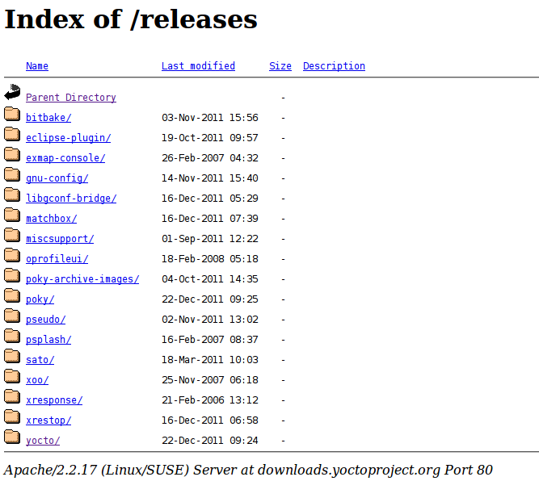
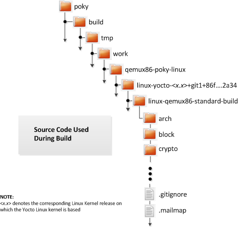
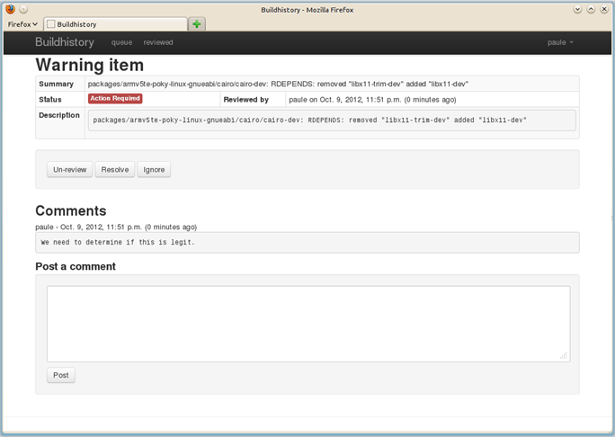

Welcome to the Yocto Project! The Yocto Project is an open-source collaboration project focused on embedded Linux developers. Among other things, the Yocto Project uses a build system based on the Poky project to construct complete Linux images. The Poky project, in turn, draws from and contributes back to the OpenEmbedded project.
If you don't have a system that runs Linux and you want to give the Yocto Project a test run, you might consider using the Yocto Project Build Appliance. The Build Appliance allows you to build and boot a custom embedded Linux image with the Yocto Project using a non-Linux development system. See the Yocto Project Build Appliance for more information.
On the other hand, if you know all about open-source development, Linux development environments, Git source repositories and the like and you just want some quick information that lets you try out the Yocto Project on your Linux system, skip right to the "Super User" section at the end of this quick start.
For the rest of you, this short document will give you some basic information about the environment and let you experience it in its simplest form. After reading this document, you will have a basic understanding of what the Yocto Project is and how to use some of its core components. This document steps you through a simple example showing you how to build a small image and run it using the Quick EMUlator (QEMU emulator).
For more detailed information on the Yocto Project, you should check out these resources:
Website: The Yocto Project Website provides the latest builds, breaking news, full development documentation, and a rich Yocto Project Development Community into which you can tap.
FAQs: Lists commonly asked Yocto Project questions and answers. You can find two FAQs: Yocto Project FAQ on a wiki, and the "FAQ" chapter in the Yocto Project Reference Manual.
Developer Screencast: The Getting Started with the Yocto Project - New Developer Screencast Tutorial provides a 30-minute video for the user new to the Yocto Project but familiar with Linux build systems.
Note
Due to production processes, there could be differences between the Yocto Project documentation bundled in a released tarball and the Yocto Project Quick Start on the Yocto Project website. For the latest version of this manual, see the manual on the website.The Yocto Project through the OpenEmbedded build system provides an open source development environment targeting the ARM, MIPS, PowerPC and x86 architectures for a variety of platforms including x86-64 and emulated ones. You can use components from the Yocto Project to design, develop, build, debug, simulate, and test the complete software stack using Linux, the X Window System, GNOME Mobile-based application frameworks, and Qt frameworks.
 |
The Yocto Project Development Environment
Here are some highlights for the Yocto Project:
Provides a recent Linux kernel along with a set of system commands and libraries suitable for the embedded environment.
Makes available system components such as X11, GTK+, Qt, Clutter, and SDL (among others) so you can create a rich user experience on devices that have display hardware. For devices that don't have a display or where you wish to use alternative UI frameworks, these components need not be installed.
Creates a focused and stable core compatible with the OpenEmbedded project with which you can easily and reliably build and develop.
Fully supports a wide range of hardware and device emulation through the QEMU Emulator.
The Yocto Project can generate images for many kinds of devices. However, the standard example machines target QEMU full-system emulation for x86, x86-64, ARM, MIPS, and PPC-based architectures as well as specific hardware such as the Intel® Desktop Board DH55TC. Because an image developed with the Yocto Project can boot inside a QEMU emulator, the development environment works nicely as a test platform for developing embedded software.
Another important Yocto Project feature is the Sato reference User Interface. This optional GNOME mobile-based UI, which is intended for devices with restricted screen sizes, sits neatly on top of a device using the GNOME Mobile Stack and provides a well-defined user experience. Implemented in its own layer, it makes it clear to developers how they can implement their own user interface on top of a Linux image created with the Yocto Project.
You need these things to develop in the Yocto Project environment:
A host system running a supported Linux distribution (i.e. recent releases of Fedora, openSUSE, CentOS, and Ubuntu). If the host system supports multiple cores and threads, you can configure the Yocto Project build system to decrease the time needed to build images significantly.
The right packages.
A release of the Yocto Project.
The Yocto Project team is continually verifying more and more Linux distributions with each release. In general, if you have the current release minus one of the following distributions you should have no problems.
Ubuntu
Fedora
openSUSE
CentOS
For a more detailed list of distributions that support the Yocto Project, see the "Supported Linux Distributions" section in the Yocto Project Reference Manual.
Note
For notes about using the Yocto Project on a RHEL 4-based host, see the BuildingOnRHEL4 wiki page.
The OpenEmbedded build system should be able to run on any modern distribution with Python 2.6 or 2.7. Earlier releases of Python are known to not work and the system does not support Python 3 at this time. This document assumes you are running one of the previously noted distributions on your Linux-based host systems.
Note
If you attempt to use a distribution not in the above list, you may or may not have success - you are venturing into untested territory. Refer to OE and Your Distro and Required Software for information for other distributions used with the OpenEmbedded project, which might be a starting point for exploration. If you go down this path, you should expect problems. When you do, please go to Yocto Project Bugzilla and submit a bug. We are interested in hearing about your experience.
Packages and package installation vary depending on your development system and on your intent. For example, if you want to build an image that can run on QEMU in graphical mode (a minimal, basic build requirement), then the number of packages is different than if you want to build an image on a headless system or build out the Yocto Project documentation set. Collectively, the number of required packages is large if you want to be able to cover all cases.
Note
In general, you need to have root access and then install the required packages. Thus, the commands in the following section may or may not work depending on whether or not your Linux distribution hassudo installed.
The next few sections list, by supported Linux Distributions, the required packages needed to build an image that runs on QEMU in graphical mode (e.g. essential plus graphics support).
For lists of required packages for other scenarios, see the "Required Packages for the Host Development System" section in the Yocto Project Reference Manual.
The essential packages you need for a supported Ubuntu distribution are shown in the following command:
$ sudo apt-get install gawk wget git-core diffstat unzip texinfo \
build-essential chrpath libsdl1.2-dev xterm
The essential packages you need for a supported Fedora distribution are shown in the following command:
$ sudo yum install gawk make wget tar bzip2 gzip python unzip perl patch \
diffutils diffstat git cpp gcc gcc-c++ eglibc-devel texinfo chrpath \
ccache SDL-devel xterm
The essential packages you need for a supported openSUSE distribution are shown in the following command:
$ sudo zypper install python gcc gcc-c++ git chrpath make wget python-xml \
diffstat texinfo python-curses libSDL-devel xterm
The essential packages you need for a supported CentOS distribution are shown in the following command:
$ sudo yum -y install gawk make wget tar bzip2 gzip python unzip perl patch \
diffutils diffstat git cpp gcc gcc-c++ glibc-devel texinfo chrpath SDL-devel xterm
Note
Depending on the CentOS version you are using, other requirements and dependencies might exist. For details, you should look at the CentOS sections on the Poky/GettingStarted/Dependencies wiki page.
You can download the latest Yocto Project release by going to the Yocto Project Download page. Just go to the page and click the "Yocto Downloads" link found in the "Download" navigation pane to the right to view all available Yocto Project releases. Then, click the "Yocto Release" link for the release you want from the list to begin the download. Nightly and developmental builds are also maintained at http://autobuilder.yoctoproject.org/nightly/. However, for this document a released version of Yocto Project is used.
You can also get the Yocto Project files you need by setting up (cloning in Git terms)
a local copy of the poky Git repository on your host development
system.
Doing so allows you to contribute back to the Yocto Project project.
For information on how to get set up using this method, see the
"Yocto
Project Release" item in the Yocto Project Development Manual.
Now that you have your system requirements in order, you can give the Yocto Project a try. This section presents some steps that let you do the following:
Build an image and run it in the QEMU emulator
Use a pre-built image and run it in the QEMU emulator
In the development environment you will need to build an image whenever you change hardware support, add or change system libraries, or add or change services that have dependencies.
Building an Image
Use the following commands to build your image. The OpenEmbedded build process creates an entire Linux distribution, including the toolchain, from source.
Note
The build process using Sato currently consumes about 50GB of disk space. To allow for variations in the build process and for future package expansion, we recommend having at least 100GB of free disk space.
Note
By default, the build process searches for source code using a pre-determined order through a set of locations. If you encounter problems with the build process finding and downloading source code, see the "How does the OpenEmbedded build system obtain source code and will it work behind my firewall or proxy server?" in the Yocto Project Reference Manual.
$ wget http://downloads.yoctoproject.org/releases/yocto/yocto-1.4/poky-tbd-8.0.tar.bz2
$ tar xjf poky-tbd-8.0.tar.bz2
$ cd poky-tbd-8.0
$ source oe-init-build-env
Tip
To help conserve disk space during builds, you can add the following statement
to your project's configuration file, which for this example
is poky-tbd-8.0-build/conf/local.conf.
Adding this statement deletes the work directory used for building a package
once the package is built.
INHERIT += "rm_work"
In the previous example, the first command retrieves the Yocto Project release tarball from the source repositories using the
wgetcommand. Alternatively, you can go to the Yocto Project website's Downloads page to retrieve the tarball.The second command extracts the files from the tarball and places them into a directory named
poky-tbd-8.0in the current directory.The third and fourth commands change the working directory to the Source Directory and run the Yocto Project environment setup script. Running this script defines OpenEmbedded build environment settings needed to complete the build. The script also creates the Build Directory, which is
buildin this case and is located in the Source Directory. After the script runs, your current working directory is set to the Build Directory. Later, when the build completes, the Build Directory contains all the files created during the build.
Take some time to examine your local.conf file
in your project's configuration directory, which is found in the Build Directory.
The defaults in that file should work fine.
However, there are some variables of interest at which you might look.
By default, the target architecture for the build is qemux86,
which produces an image that can be used in the QEMU emulator and is targeted at an
Intel® 32-bit based architecture.
To change this default, edit the value of the MACHINE variable
in the configuration file before launching the build.
Another couple of variables of interest are the
BB_NUMBER_THREADS and the
PARALLEL_MAKE variables.
By default, these variables are commented out.
However, if you have a multi-core CPU you might want to uncomment
the lines and set both variables equal to twice the number of your
host's processor cores.
Setting these variables can significantly shorten your build time.
Another consideration before you build is the package manager used when creating
the image.
By default, the OpenEmbedded build system uses the RPM package manager.
You can control this configuration by using the
PACKAGE_CLASSESpackage*.bbclass"
in the Yocto Project Reference Manual.
Continue with the following command to build an OS image for the target, which is
core-image-sato in this example.
For information on the -k option use the
bitbake --help command or see the
"BitBake" section in
the Yocto Project Reference Manual.
$ bitbake -k core-image-sato
Note
BitBake requires Python 2.6 or 2.7. For more information on this requirement, see the FAQ in the Yocto Project Reference Manual.
The final command runs the image:
$ runqemu qemux86
Note
Depending on the number of processors and cores, the amount or RAM, the speed of your Internet connection and other factors, the build process could take several hours the first time you run it. Subsequent builds run much faster since parts of the build are cached.
If hardware, libraries and services are stable, you can get started by using a pre-built binary of the filesystem image, kernel, and toolchain and run it using the QEMU emulator. This scenario is useful for developing application software.

Using a Pre-Built Image
For this scenario, you need to do several things:
Install the appropriate stand-alone toolchain tarball.
Download the pre-built image that will boot with QEMU. You need to be sure to get the QEMU image that matches your target machine’s architecture (e.g. x86, ARM, etc.).
Download the filesystem image for your target machine's architecture.
Set up the environment to emulate the hardware and then start the QEMU emulator.
You can download a tarball installer, which includes the pre-built toolchain, the
runqemu
script, and support files from the appropriate directory under
http://downloads.yoctoproject.org/releases/yocto/yocto-1.4/toolchain/.
Toolchains are available for 32-bit and 64-bit development systems from the
i686 and x86-64 directories, respectively.
Each type of development system supports five target architectures.
The names of the tarball installer scripts are such that a string representing the
host system appears first in the filename and then is immediately followed by a
string representing the target architecture.
poky-eglibc-<host_system>-<arch>-toolchain-gmae-<release>.sh
Where:
<host_system> is a string representing your development system:
i686 or x86_64.
<arch> is a string representing the target architecture:
i586, x86_64, powerpc, mips, or arm.
<release> is the version of Yocto Project.
For example, the following toolchain installer is for a 64-bit development host system and a 32-bit target architecture:
poky-eglibc-x86_64-i586-toolchain-gmae-1.4.sh
Toolchains are self-contained and by default are installed into /opt/poky.
However, when you run the toolchain installer, you can choose an installation directory.
The following command shows how to run the installer given a toolchain tarball for a 64-bit development host system and a 32-bit target architecture. You must change the permissions on the toolchain installer script so that it is executable.
The example assumes the toolchain installer is located in ~/Downloads/.
Note
If you do not have write permissions for the directory into which you are installing the toolchain, the toolchain installer notifies you and exits. Be sure you have write permissions in the directory and run the installer again.
$ ~/Downloads/poky-eglibc-x86_64-i586-toolchain-gmae-1.4.sh
For more information on how to install tarballs, see the "Using a Cross-Toolchain Tarball" and "Using BitBake and the Build Directory" sections in the Yocto Project Application Developer's Guide.
You can download the pre-built Linux kernel suitable for running in the QEMU emulator from
http://downloads.yoctoproject.org/releases/yocto/yocto-1.4/machines/qemu.
Be sure to use the kernel that matches the architecture you want to simulate.
Download areas exist for the five supported machine architectures:
qemuarm, qemumips, qemuppc,
qemux86, and qemux86-64.
Most kernel files have one of the following forms:
*zImage-qemu<arch>.bin
vmlinux-qemu<arch>.bin
Where:
<arch> is a string representing the target architecture:
x86, x86-64, ppc, mips, or arm.
You can learn more about downloading a Yocto Project kernel in the "Yocto Project Kernel" bulleted item in the Yocto Project Development Manual.
You can also download the filesystem image suitable for your target architecture from http://downloads.yoctoproject.org/releases/yocto/yocto-1.4/machines/qemu. Again, be sure to use the filesystem that matches the architecture you want to simulate.
The filesystem image has two tarball forms: ext3 and
tar.
You must use the ext3 form when booting an image using the
QEMU emulator.
The tar form can be flattened out in your host development system
and used for build purposes with the Yocto Project.
core-image-<profile>-qemu<arch>.ext3
core-image-<profile>-qemu<arch>.tar.bz2
Where:
<profile> is the filesystem image's profile:
lsb, lsb-dev, lsb-sdk, lsb-qt3, minimal, minimal-dev, sato, sato-dev, or sato-sdk.
For information on these types of image profiles, see the
"Images" chapter
in the Yocto Project Reference Manual.
<arch> is a string representing the target architecture:
x86, x86-64, ppc, mips, or arm.
Before you start the QEMU emulator, you need to set up the emulation environment. The following command form sets up the emulation environment.
$ source /opt/poky/1.4/environment-setup-<arch>-poky-linux-<if>
Where:
<arch> is a string representing the target architecture:
i586, x86_64, ppc603e, mips, or armv5te.
<if> is a string representing an embedded application binary interface.
Not all setup scripts include this string.
Finally, this command form invokes the QEMU emulator
$ runqemu <qemuarch> <kernel-image> <filesystem-image>
Where:
<qemuarch> is a string representing the target architecture: qemux86, qemux86-64,
qemuppc, qemumips, or qemuarm.
<kernel-image> is the architecture-specific kernel image.
<filesystem-image> is the .ext3 filesystem image.
Continuing with the example, the following two commands setup the emulation
environment and launch QEMU.
This example assumes the root filesystem (.ext3 file) and
the pre-built kernel image file both reside in your home directory.
The kernel and filesystem are for a 32-bit target architecture.
$ cd $HOME
$ source /opt/poky/1.4/environment-setup-i586-poky-linux
$ runqemu qemux86 bzImage-qemux86.bin \
core-image-sato-qemux86.ext3
The environment in which QEMU launches varies depending on the filesystem image and on the target architecture. For example, if you source the environment for the ARM target architecture and then boot the minimal QEMU image, the emulator comes up in a new shell in command-line mode. However, if you boot the SDK image, QEMU comes up with a GUI.
Note
Booting the PPC image results in QEMU launching in the same shell in command-line mode.
This section [1] gives you a minimal description of how to use the Yocto Project to build images for a BeagleBoard xM starting from scratch. The steps were performed on a 64-bit Ubuntu 10.04 system.
Set up your Source Directory one of two ways:
Tarball: Use if you want the latest stable release:
$ wget http://downloads.yoctoproject.org/releases/yocto/yocto-1.4/poky-tbd-8.0.tar.bz2 $ tar xvjf poky-tbd-8.0.tar.bz2Git Repository: Use if you want to work with cutting edge development content:
$ git clone git://git.yoctoproject.org/poky
The remainder of the section assumes the Git repository method.
You need some packages for everything to work. Rather than duplicate them here, look at the "The Packages" section earlier in this quick start.
From the parent directory your Source Directory, initialize your environment and provide a meaningful Build Directory name:
$ source poky/oe-init-build-env mybuilds
At this point, the mybuilds directory has been created for you
and it is now your current working directory.
If you don't provide your own directory name it defaults to build,
which is inside the Source Directory.
Initializing the build environment creates a conf/local.conf configuration file
in the Build Directory.
You need to manually edit this file to specify the machine you are building and to optimize
your build time.
Here are the minimal changes to make:
BB_NUMBER_THREADS = "8"
PARALLEL_MAKE = "-j 8"
MACHINE ?= "beagleboard"
Briefly, set BB_NUMBER_THREADS
and PARALLEL_MAKE to
twice your host processor's number of cores.
A good deal that goes into a Yocto Project build is simply downloading all of the source
tarballs.
Maybe you have been working with another build system (OpenEmbedded or Angstrom) for which
you've built up a sizable directory of source tarballs.
Or perhaps someone else has such a directory for which you have read access.
If so, you can save time by adding the PREMIRRORS
statement to your configuration file so that the build process checks
local directories first for existing tarballs before checking the
Internet.
Here is an efficient way to set it up in your local.conf
file:
SOURCE_MIRROR_URL ?= "file:///home/you/your-download-dir/"
INHERIT += "own-mirrors"
BB_GENERATE_MIRROR_TARBALLS = "1"
# BB_NO_NETWORK = "1"
At this point, you need to select an image to build for the BeagleBoard xM. If this is your first build using the Yocto Project, you should try the smallest and simplest image:
$ bitbake core-image-minimal
Now you just wait for the build to finish.
Here are some variations on the build process that could be helpful:
Fetch all the necessary sources without starting the build:
$ bitbake -c fetchall core-image-minimalThis variation guarantees that you have all the sources for that BitBake target should you disconnect from the net and want to do the build later offline.
Specify to continue the build even if BitBake encounters an error. By default, BitBake aborts the build when it encounters an error. This command keeps a faulty build going:
$ bitbake -k core-image-minimal
Once you have your image, you can take steps to load and boot it on the target hardware.
[1] Kudos and thanks to Robert P. J. Day of CrashCourse for providing the basis for this "expert" section with information from one of his wiki pages.
Copyright © 2010-2013 Linux Foundation
Permission is granted to copy, distribute and/or modify this document under the terms of the Creative Commons Attribution-Share Alike 2.0 UK: England & Wales as published by Creative Commons.
Note
Due to production processes, there could be differences between the Yocto Project documentation bundled in the release tarball and the Yocto Project Development Manual on the Yocto Project website. For the latest version of this manual, see the manual on the website.| Revision History | |
|---|---|
| Revision 1.1 | 6 October 2011 |
| The initial document released with the Yocto Project 1.1 Release. | |
| Revision 1.2 | April 2012 |
| Released with the Yocto Project 1.2 Release. | |
| Revision 1.3 | October 2012 |
| Released with the Yocto Project 1.3 Release. | |
| Revision 1.4 | Sometime in 2013 |
| Released with the Yocto Project 1.4 Release. | |
Welcome to the Yocto Project Development Manual! This manual gives you an idea of how to use the Yocto Project to develop embedded Linux images and user-space applications to run on targeted devices. Reading this manual gives you an overview of image, kernel, and user-space application development using the Yocto Project. Because much of the information in this manual is general, it contains many references to other sources where you can find more detail. For example, detailed information on Git, repositories and open source in general can be found in many places. Another example is how to get set up to use the Yocto Project, which our Yocto Project Quick Start covers.
The Yocto Project Development Manual, however, does provide detailed examples on how to change the kernel source code, reconfigure the kernel, and develop an application using the popular Eclipse™ IDE.
The following list describes what you can get from this guide:
Information that lets you get set up to develop using the Yocto Project.
Information to help developers who are new to the open source environment and to the distributed revision control system Git, which the Yocto Project uses.
An understanding of common end-to-end development models and tasks.
Development case overviews for both system development and user-space applications.
An overview and understanding of the emulation environment used with the Yocto Project - the Quick EMUlator (QEMU).
An understanding of basic kernel architecture and concepts.
Many references to other sources of related information.
This manual will not give you the following:
Step-by-step instructions if those instructions exist in other Yocto Project documentation. For example, the Yocto Project Application Developer's Guide contains detailed instruction on how to run the Installing the ADT and Toolchains, which is used to set up a cross-development environment.
Reference material. This type of material resides in an appropriate reference manual. For example, system variables are documented in the Yocto Project Reference Manual.
Detailed public information that is not specific to the Yocto Project. For example, exhaustive information on how to use Git is covered better through the Internet than in this manual.
Because this manual presents overview information for many different topics, you will need to supplement it with other information. The following list presents other sources of information you might find helpful:
The Yocto Project Website: The home page for the Yocto Project provides lots of information on the project as well as links to software and documentation.
Yocto Project Quick Start: This short document lets you get started with the Yocto Project quickly and start building an image.
Yocto Project Reference Manual: This manual is a reference guide to the OpenEmbedded build system known as "Poky." The manual also contains a reference chapter on Board Support Package (BSP) layout.
Yocto Project Application Developer's Guide: This guide provides information that lets you get going with the Application Development Toolkit (ADT) and stand-alone cross-development toolchains to develop projects using the Yocto Project.
Yocto Project Board Support Package (BSP) Developer's Guide: This guide defines the structure for BSP components. Having a commonly understood structure encourages standardization.
Yocto Project Kernel Architecture and Use Manual: This manual describes the architecture of the Yocto Project kernel and provides some work flow examples.
Eclipse IDE Yocto Plug-in: A step-by-step instructional video that demonstrates how an application developer uses Yocto Plug-in features within the Eclipse IDE.
FAQ: A list of commonly asked questions and their answers.
Release Notes: Features, updates and known issues for the current release of the Yocto Project.
Hob: A graphical user interface for BitBake. Hob's primary goal is to enable a user to perform common tasks more easily.
Build Appliance: A bootable custom embedded Linux image you can either build using a non-Linux development system (VMware applications) or download from the Yocto Project website. See the Build Appliance page for more information.
Bugzilla: The bug tracking application the Yocto Project uses. If you find problems with the Yocto Project, you should report them using this application.
Yocto Project Mailing Lists: To subscribe to the Yocto Project mailing lists, click on the following URLs and follow the instructions:
http://lists.yoctoproject.org/listinfo/yocto for a Yocto Project Discussions mailing list.
http://lists.yoctoproject.org/listinfo/poky for a Yocto Project Discussions mailing list about the Poky build system.
http://lists.yoctoproject.org/listinfo/yocto-announce for a mailing list to receive official Yocto Project announcements for developments and as well as Yocto Project milestones.
http://lists.yoctoproject.org/listinfo for a listing of all public mailing lists on
lists.yoctoproject.org.
Internet Relay Chat (IRC): Two IRC channels on freenode are available for Yocto Project and Poky discussions:
#yoctoand#poky, respectively.OpenedHand: The company that initially developed the Poky project, which is the basis for the OpenEmbedded build system used by the Yocto Project. OpenedHand was acquired by Intel Corporation in 2008.
Intel Corporation: A multinational semiconductor chip manufacturer company whose Software and Services Group created and supports the Yocto Project. Intel acquired OpenedHand in 2008.
OpenEmbedded: The build system used by the Yocto Project. This project is the upstream, generic, embedded distribution from which the Yocto Project derives its build system (Poky) from and to which it contributes.
BitBake: The tool used by the OpenEmbedded build system to process project metadata.
BitBake User Manual: A comprehensive guide to the BitBake tool. If you want information on BitBake, see the user manual inculded in the
bitbake/doc/manualdirectory of the Source Directory.Quick EMUlator (QEMU): An open-source machine emulator and virtualizer.
This chapter introduces the Yocto Project and gives you an idea of what you need to get started. You can find enough information to set up your development host and build or use images for hardware supported by the Yocto Project by reading the Yocto Project Quick Start.
The remainder of this chapter summarizes what is in the Yocto Project Quick Start and provides some higher-level concepts you might want to consider.
The Yocto Project is an open-source collaboration project focused on embedded Linux development. The project currently provides a build system, which is referred to as the OpenEmbedded build system in the Yocto Project documentation. The Yocto Project provides various ancillary tools suitable for the embedded developer and also features the Sato reference User Interface, which is optimized for stylus driven, low-resolution screens.
You can use the OpenEmbedded build system, which uses BitBake to develop complete Linux images and associated user-space applications for architectures based on ARM, MIPS, PowerPC, x86 and x86-64. While the Yocto Project does not provide a strict testing framework, it does provide or generate for you artifacts that let you perform target-level and emulated testing and debugging. Additionally, if you are an Eclipse™ IDE user, you can install an Eclipse Yocto Plug-in to allow you to develop within that familiar environment.
Here is what you need to get set up to use the Yocto Project:
Host System: You should have a reasonably current Linux-based host system. You will have the best results with a recent release of Fedora, OpenSUSE, Debian, Ubuntu, or CentOS as these releases are frequently tested against the Yocto Project and officially supported. For a list of the distributions under validation and their status, see the "Supported Linux Distributions" section in the Yocto Project Reference Manual and the wiki page at Distribution Support.
You should also have about 100 gigabytes of free disk space for building images.
Packages: The OpenEmbedded build system requires certain packages exist on your development system (e.g. Python 2.6 or 2.7). See "The Packages" section in the Yocto Project Quick Start for the exact package requirements and the installation commands to install them for the supported distributions.
Yocto Project Release: You need a release of the Yocto Project. You set that up with a local Source Directory one of two ways depending on whether you are going to contribute back into the Yocto Project or not.
Note
Regardless of the method you use, this manual refers to the resulting local hierarchical set of files as the "Source Directory."Tarball Extraction: If you are not going to contribute back into the Yocto Project, you can simply download a Yocto Project release you want from the website’s download page. Once you have the tarball, just extract it into a directory of your choice.
For example, the following command extracts the Yocto Project 1.4 release tarball into the current working directory and sets up the local Source Directory with a top-level folder named
poky-tbd-8.0:$ tar xfj poky-tbd-8.0.tar.bz2This method does not produce a local Git repository. Instead, you simply end up with a snapshot of the release.
Git Repository Method: If you are going to be contributing back into the Yocto Project or you simply want to keep up with the latest developments, you should use Git commands to set up a local Git repository of the upstream
pokysource repository. Doing so creates a repository with a complete history of changes and allows you to easily submit your changes upstream to the project. Because you cloned the repository, you have access to all the Yocto Project development branches and tag names used in the upstream repository.The following transcript shows how to clone the
pokyGit repository into the current working directory.Note
You can view the Yocto Project Source Repositories at http://git.yoctoproject.org/cgit.cgiThe command creates the local repository in a directory named
poky. For information on Git used within the Yocto Project, see the "Git" section.$ git clone git://git.yoctoproject.org/poky Initialized empty Git repository in /home/scottrif/poky/.git/ remote: Counting objects: 141863, done. remote: Compressing objects: 100% (38624/38624), done. remote: Total 141863 (delta 99661), reused 141816 (delta 99614) Receiving objects: 100% (141863/141863), 76.64 MiB | 126 KiB/s, done. Resolving deltas: 100% (99661/99661), done.For another example of how to set up your own local Git repositories, see this wiki page, which describes how to create both
pokyandmeta-intelGit repositories.
Yocto Project Kernel: If you are going to be making modifications to a supported Yocto Project kernel, you need to establish local copies of the source. You can find Git repositories of supported Yocto Project Kernels organized under "Yocto Linux Kernel" in the Yocto Project Source Repositories at http://git.yoctoproject.org/cgit.cgi.
This setup can involve creating a bare clone of the Yocto Project kernel and then copying that cloned repository. You can create the bare clone and the copy of the bare clone anywhere you like. For simplicity, it is recommended that you create these structures outside of the Source Directory (usually
poky).As an example, the following transcript shows how to create the bare clone of the
linux-yocto-3.4kernel and then create a copy of that clone.Note
When you have a local Yocto Project kernel Git repository, you can reference that repository rather than the upstream Git repository as part of theclonecommand. Doing so can speed up the process.In the following example, the bare clone is named
linux-yocto-3.4.git, while the copy is namedmy-linux-yocto-3.4-work:$ git clone --bare git://git.yoctoproject.org/linux-yocto-3.4 linux-yocto-3.4.git Initialized empty Git repository in /home/scottrif/linux-yocto-3.4.git/ remote: Counting objects: 2468027, done. remote: Compressing objects: 100% (392255/392255), done. remote: Total 2468027 (delta 2071693), reused 2448773 (delta 2052498) Receiving objects: 100% (2468027/2468027), 530.46 MiB | 129 KiB/s, done. Resolving deltas: 100% (2071693/2071693), done.Now create a clone of the bare clone just created:
$ git clone linux-yocto-3.4.git my-linux-yocto-3.4-work Cloning into 'my-linux-yocto-3.4-work'... done.The
poky-extrasGit Repository: Thepoky-extrasGit repository contains metadata needed only if you are modifying and building the kernel image. In particular, it contains the kernel BitBake append (.bbappend) files that you edit to point to your locally modified kernel source files and to build the kernel image. Pointing to these local files is much more efficient than requiring a download of the kernel's source files from upstream each time you make changes to the kernel.You can find the
poky-extrasGit Repository in the "Yocto Metadata Layers" area of the Yocto Project Source Repositories at http://git.yoctoproject.org/cgit.cgi. It is good practice to create this Git repository inside the Source Directory.Following is an example that creates the
poky-extrasGit repository inside the Source Directory, which is namedpokyin this case:$ cd ~/poky $ git clone git://git.yoctoproject.org/poky-extras poky-extras Initialized empty Git repository in /home/scottrif/poky/poky-extras/.git/ remote: Counting objects: 618, done. remote: Compressing objects: 100% (558/558), done. remote: Total 618 (delta 192), reused 307 (delta 39) Receiving objects: 100% (618/618), 526.26 KiB | 111 KiB/s, done. Resolving deltas: 100% (192/192), done.Supported Board Support Packages (BSPs): The Yocto Project provides a layer called
meta-inteland it is maintained in its own separate Git repository. Themeta-intellayer contains many supported BSP Layers.Similar considerations exist for setting up the
meta-intellayer. You can get set up for BSP development one of two ways: tarball extraction or with a local Git repository. It is a good idea to use the same method that you used to set up the Source Directory. Regardless of the method you use, the Yocto Project uses the following BSP layer naming scheme:meta-<BSP_name>where
<BSP_name>is the recognized BSP name. Here are some examples:meta-crownbay meta-emenlow meta-n450See the "BSP Layers" section in the Yocto Project Board Support Package (BSP) Developer's Guide for more information on BSP Layers.
Tarball Extraction: You can download any released BSP tarball from the same download site used to get the Yocto Project release. Once you have the tarball, just extract it into a directory of your choice. Again, this method just produces a snapshot of the BSP layer in the form of a hierarchical directory structure.
Git Repository Method: If you are working with a local Git repository for your Source Directory, you should also use this method to set up the
meta-intelGit repository. You can locate themeta-intelGit repository in the "Yocto Metadata Layers" area of the Yocto Project Source Repositories at http://git.yoctoproject.org/cgit.cgi.Typically, you set up the
meta-intelGit repository inside the Source Directory. For example, the following transcript shows the steps to clone themeta-intelGit repository inside the localpokyGit repository.$ cd ~/poky $ git clone git://git.yoctoproject.org/meta-intel.git Initialized empty Git repository in /home/scottrif/poky/meta-intel/.git/ remote: Counting objects: 3380, done. remote: Compressing objects: 100% (2750/2750), done. remote: Total 3380 (delta 1689), reused 227 (delta 113) Receiving objects: 100% (3380/3380), 1.77 MiB | 128 KiB/s, done. Resolving deltas: 100% (1689/1689), done.The same wiki page referenced earlier covers how to set up the
meta-intelGit repository.
Eclipse Yocto Plug-in: If you are developing applications using the Eclipse Integrated Development Environment (IDE), you will need this plug-in. See the "Setting up the Eclipse IDE" section for more information.
The build process creates an entire Linux distribution, including the toolchain, from source. For more information on this topic, see the "Building an Image" section in the Yocto Project Quick Start.
The build process is as follows:
Make sure you have set up the Source Directory described in the previous section.
Initialize the build environment by sourcing a build environment script.
Optionally ensure the
conf/local.confconfiguration file, which is found in the Build Directory, is set up how you want it. This file defines many aspects of the build environment including the target machine architecture through theMACHINEvariable, the development machine's processor use through theBB_NUMBER_THREADSandPARALLEL_MAKEvariables, and a centralized tarball download directory through theDL_DIRvariable.Build the image using the
bitbakecommand. If you want information on BitBake, see the user manual inculded in thebitbake/doc/manualdirectory of the Source Directory.Run the image either on the actual hardware or using the QEMU emulator.
Another option you have to get started is to use pre-built binaries. The Yocto Project provides many types of binaries with each release. See the "Images" chapter in the Yocto Project Reference Manual for descriptions of the types of binaries that ship with a Yocto Project release.
Using a pre-built binary is ideal for developing software applications to run on your target hardware. To do this, you need to be able to access the appropriate cross-toolchain tarball for the architecture on which you are developing. If you are using an SDK type image, the image ships with the complete toolchain native to the architecture. If you are not using an SDK type image, you need to separately download and install the stand-alone Yocto Project cross-toolchain tarball.
Regardless of the type of image you are using, you need to download the pre-built kernel that you will boot in the QEMU emulator and then download and extract the target root filesystem for your target machine’s architecture. You can get architecture-specific binaries and filesystems from machines. You can get installation scripts for stand-alone toolchains from toolchains. Once you have all your files, you set up the environment to emulate the hardware by sourcing an environment setup script. Finally, you start the QEMU emulator. You can find details on all these steps in the "Using Pre-Built Binaries and QEMU" section of the Yocto Project Quick Start.
Using QEMU to emulate your hardware can result in speed issues
depending on the target and host architecture mix.
For example, using the qemux86 image in the emulator
on an Intel-based 32-bit (x86) host machine is fast because the target and
host architectures match.
On the other hand, using the qemuarm image on the same Intel-based
host can be slower.
But, you still achieve faithful emulation of ARM-specific issues.
To speed things up, the QEMU images support using distcc
to call a cross-compiler outside the emulated system.
If you used runqemu to start QEMU, and the
distccd application is present on the host system, any
BitBake cross-compiling toolchain available from the build system is automatically
used from within QEMU simply by calling distcc.
You can accomplish this by defining the cross-compiler variable
(e.g. export CC="distcc").
Alternatively, if you are using a suitable SDK image or the appropriate
stand-alone toolchain is present in /opt/poky,
the toolchain is also automatically used.
Note
Several mechanisms exist that let you connect to the system running on the QEMU emulator:QEMU provides a framebuffer interface that makes standard consoles available.
Generally, headless embedded devices have a serial port. If so, you can configure the operating system of the running image to use that port to run a console. The connection uses standard IP networking.
SSH servers exist in some QEMU images. The
core-image-satoQEMU image has a Dropbear secure shell (ssh) server that runs with the root password disabled. Thecore-image-basicandcore-image-lsbQEMU images have OpenSSH instead of Dropbear. Including these SSH servers allow you to use standardsshandscpcommands. Thecore-image-minimalQEMU image, however, contains no ssh server.You can use a provided, user-space NFS server to boot the QEMU session using a local copy of the root filesystem on the host. In order to make this connection, you must extract a root filesystem tarball by using the
runqemu-extract-sdkcommand. After running the command, you must then point therunqemuscript to the extracted directory instead of a root filesystem image file.
This chapter helps you understand the Yocto Project as an open source development project. In general, working in an open source environment is very different from working in a closed, proprietary environment. Additionally, the Yocto Project uses specific tools and constructs as part of its development environment. This chapter specifically addresses open source philosophy, licensing issues, code repositories, the open source distributed version control system Git, and best practices using the Yocto Project.
Open source philosophy is characterized by software development directed by peer production and collaboration through an active community of developers. Contrast this to the more standard centralized development models used by commercial software companies where a finite set of developers produces a product for sale using a defined set of procedures that ultimately result in an end product whose architecture and source material are closed to the public.
Open source projects conceptually have differing concurrent agendas, approaches, and production. These facets of the development process can come from anyone in the public (community) that has a stake in the software project. The open source environment contains new copyright, licensing, domain, and consumer issues that differ from the more traditional development environment. In an open source environment, the end product, source material, and documentation are all available to the public at no cost.
A benchmark example of an open source project is the Linux Kernel, which was initially conceived and created by Finnish computer science student Linus Torvalds in 1991. Conversely, a good example of a non-open source project is the Windows® family of operating systems developed by Microsoft® Corporation.
Wikipedia has a good historical description of the Open Source Philosophy here. You can also find helpful information on how to participate in the Linux Community here.
It might not be immediately clear how you can use the Yocto Project in a team environment, or scale it for a large team of developers. The specifics of any situation determine the best solution. Granted that the Yocto Project offers immense flexibility regarding this, practices do exist that experience has shown work well.
The core component of any development effort with the Yocto Project is often an automated build and testing framework along with an image generation process. You can use these core components to check that the metadata can be built, highlight when commits break the build, and provide up-to-date images that allow developers to test the end result and use it as a base platform for further development. Experience shows that buildbot is a good fit for this role. What works well is to configure buildbot to make two types of builds: incremental and full (from scratch). See "Welcome to the buildbot for the Yocto Project" for an example implementation that uses buildbot.
You can tie an incremental build to a commit hook that triggers the build each time a commit is made to the metadata. This practice results in useful acid tests that determine whether a given commit breaks the build in some serious way. Associating a build to a commit can catch a lot of simple errors. Furthermore, the tests are fast so developers can get quick feedback on changes.
Full builds build and test everything from the ground up. These types of builds usually happen at predetermined times like during the night when the machine load is low.
Most teams have many pieces of software undergoing active development at any given time. You can derive large benefits by putting these pieces under the control of a source control system that is compatible (i.e. Git or Subversion (SVN)) with the OpenEmbedded build system that the Yocto Project uses. You can then set the autobuilder to pull the latest revisions of the packages and test the latest commits by the builds. This practice quickly highlights issues. The build system easily supports testing configurations that use both a stable known good revision and a floating revision. The build system can also take just the changes from specific source control branches. This capability allows you to track and test specific changes.
Perhaps the hardest part of setting this up is defining the software project or the metadata policies that surround the different source control systems. Of course circumstances will be different in each case. However, this situation reveals one of the Yocto Project's advantages - the system itself does not force any particular policy on users, unlike a lot of build systems. The system allows the best policies to be chosen for the given circumstances.
In general, best practices exist that make your work with the Yocto Project easier in a team environment. This list presents some of these practices you might consider following. Of course, you need to understand that you do not have to follow these practices and your setup can be totally controlled and customized by your team:
Use Git as the source control system.
Maintain your metadata in layers that make sense for your situation. See the "Understanding and Creating Layers" section for more information on layers.
Separate the project's metadata and code by using separate Git repositories. See the "Yocto Project Source Repositories" section for information on these repositories. See the "Getting Set Up" section for information on how to set up various Yocto Project related Git repositories.
Set up the directory for the shared state cache (
SSTATE_DIR) where they make sense. For example, set up the sstate cache for developers using the same office and share source directories on the developer's machines.Set up an autobuilder and have it populate the sstate cache and source directories.
The Yocto Project team maintains complete source repositories for all Yocto Project files at http://git.yoctoproject.org/cgit/cgit.cgi. This web-based source code browser is organized into categories by function such as IDE Plugins, Matchbox, Poky, Yocto Linux Kernel, and so forth. From the interface, you can click on any particular item in the "Name" column and see the URL at the bottom of the page that you need to set up a Git repository for that particular item. Having a local Git repository of the Source Directory (poky) allows you to make changes, contribute to the history, and ultimately enhance the Yocto Project's tools, Board Support Packages, and so forth.
Conversely, if you are a developer that is not interested in contributing back to the Yocto Project, you have the ability to simply download and extract release tarballs and use them within the Yocto Project environment. All that is required is a particular release of the Yocto Project and your application source code.
For any supported release of Yocto Project, you can go to the Yocto Project website’s download page and get a tarball of the release. You can also go to this site to download any supported BSP tarballs. Unpacking the tarball gives you a hierarchical Source Directory that lets you develop using the Yocto Project.
Once you are set up through either tarball extraction or a checkout of Git repositories, you are ready to develop.
In summary, here is where you can get the project files needed for development:
Source Repositories: This area contains IDE Plugins, Matchbox, Poky, Poky Support, Tools, Yocto Linux Kernel, and Yocto Metadata Layers. You can create local copies of Git repositories for each of these areas.

Index of /releases: This area contains index releases such as the Eclipse™ Yocto Plug-in, miscellaneous support, poky, pseudo, installers for cross-development toolchains, and all released versions of Yocto Project in the form of images or tarballs. Downloading and extracting these files does not produce a local copy of the Git repository but rather a snapshot of a particular release or image.
 Yocto Project Download Page This page on the Yocto Project website allows you to download any Yocto Project release or Board Support Package (BSP) in tarball form. The tarballs are similar to those found in the Index of /releases: area.

Following is a list of terms and definitions users new to the Yocto Project development environment might find helpful. While some of these terms are universal, the list includes them just in case:
Append Files: Files that append build information to a recipe file. Append files are known as BitBake append files and
.bbappendfiles. The OpenEmbedded build system expects every append file to have a corresponding and underlying recipe (.bb) file. Furthermore, the append file and the underlying recipe must have the same root filename. The filenames can differ only in the file type suffix used (e.g.formfactor_0.0.bbandformfactor_0.0.bbappend).Information in append files overrides the information in the similarly-named recipe file. For an example of an append file in use, see the "Using .bbappend Files" section.
BitBake: The task executor and scheduler used by the OpenEmbedded build system to build images. For more information on BitBake, see the BitBake documentation in the
bitbake/doc/manualdirectory of the Source Directory.Build Directory: This term refers to the area used by the OpenEmbedded build system for builds. The area is created when you
sourcethe setup environment script that is found in the Source Directory (i.e.oe-init-build-env). TheTOPDIRvariable points to the Build Directory.You have a lot of flexibility when creating the Build Directory. Following are some examples that show how to create the directory:
Create the Build Directory in your current working directory and name it
build. This is the default behavior.$ source poky-tbd-8.0/oe-init-build-envProvide a directory path and specifically name the build directory. This next example creates a Build Directory named
YP-8.0in your home directory within the directorymybuilds. Ifmybuildsdoes not exist, the directory is created for you:$ source poky-tbd-8.0/oe-init-build-env $HOME/mybuilds/YP-8.0Provide an existing directory to use as the Build Directory. This example uses the existing
mybuildsdirectory as the Build Directory.$ source poky-tbd-8.0/oe-init-build-env $HOME/mybuilds/
Build System: In the context of the Yocto Project this term refers to the OpenEmbedded build system used by the project. This build system is based on the project known as "Poky." For some historical information about Poky, see the Poky term further along in this section.
Classes: Files that provide for logic encapsulation and inheritance allowing commonly used patterns to be defined once and easily used in multiple recipes. Class files end with the
.bbclassfilename extension.Configuration File: Configuration information in various
.conffiles provides global definitions of variables. Theconf/local.confconfiguration file in the Build Directory contains user-defined variables that affect each build. Themeta-yocto/conf/distro/poky.confconfiguration file defines Yocto ‘distro’ configuration variables used only when building with this policy. Machine configuration files, which are located throughout the Source Directory, define variables for specific hardware and are only used when building for that target (e.g. themachine/beagleboard.confconfiguration file defines variables for the Texas Instruments ARM Cortex-A8 development board). Configuration files end with a.conffilename extension.Cross-Development Toolchain: A collection of software development tools and utilities that allow you to develop software for targeted architectures. This toolchain contains cross-compilers, linkers, and debuggers that are specific to an architecture. You can use the OpenEmbedded build system to build a cross-development toolchain installer that when run installs the toolchain that contains the development tools you need to cross-compile and test your software. The Yocto Project ships with images that contain installers for toolchains for supported architectures as well. Sometimes this toolchain is referred to as the meta-toolchain.
Image: An image is the result produced when BitBake processes a given collection of recipes and related metadata. Images are the binary output that run on specific hardware or QEMU and for specific use cases. For a list of the supported image types that the Yocto Project provides, see the "Images" chapter in the Yocto Project Reference Manual.
Layer: A collection of recipes representing the core, a BSP, or an application stack. For a discussion on BSP Layers, see the "BSP Layers" section in the Yocto Project Board Support Packages (BSP) Developer's Guide.
Metadata: The files that BitBake parses when building an image. Metadata includes recipes, classes, and configuration files.
OE-Core: A core set of metadata originating with OpenEmbedded (OE) that is shared between OE and the Yocto Project. This metadata is found in the
metadirectory of the source directory.Package: In the context of the Yocto Project, this term refers to the packaged output from a baked recipe. A package is generally the compiled binaries produced from the recipe's sources. You ‘bake’ something by running it through BitBake.
It is worth noting that the term "package" can, in general, have subtle meanings. For example, the packages refered to in the "The Packages" section are compiled binaries that when installed add functionality to your Linux distribution.
Another point worth noting is that historically within the Yocto Project, recipes were referred to as packages - thus, the existence of several BitBake variables that are seemingly mis-named, (e.g.
PR,PRINC,PV, andPE).Poky: The term "poky" can mean several things. In its most general sense, it is an open-source project that was initially developed by OpenedHand. With OpenedHand, poky was developed off of the existing OpenEmbedded build system becoming a build system for embedded images. After Intel Corporation acquired OpenedHand, the project poky became the basis for the Yocto Project's build system. Within the Yocto Project source repositories, poky exists as a separate Git repository that can be cloned to yield a local copy on the host system. Thus, "poky" can refer to the local copy of the Source Directory used to develop within the Yocto Project.
Recipe: A set of instructions for building packages. A recipe describes where you get source code and which patches to apply. Recipes describe dependencies for libraries or for other recipes, and they also contain configuration and compilation options. Recipes contain the logical unit of execution, the software/images to build, and use the
.bbfile extension.Source Directory: This term refers to the directory structure created as a result of either downloading and unpacking a Yocto Project release tarball or creating a local copy of the
pokyGit repositorygit://git.yoctoproject.org/poky. Sometimes you might hear the term "poky directory" used to refer to this directory structure.Note
The OpenEmbedded build system does not support file or directory names that contain spaces. Be sure that the Source Directory you use does not contain these types of names.The Source Directory contains BitBake, Documentation, metadata and other files that all support the Yocto Project. Consequently, you must have the Source Directory in place on your development system in order to do any development using the Yocto Project.
For tarball expansion, the name of the top-level directory of the Source Directory is derived from the Yocto Project release tarball. For example, downloading and unpacking
poky-tbd-8.0.tar.bz2results in a Source Directory whose top-level folder is namedpoky-tbd-8.0. If you create a local copy of the Git repository, then you can name the repository anything you like. Throughout much of the documentation,pokyis used as the name of the top-level folder of the local copy of the poky Git repository. So, for example, cloning thepokyGit repository results in a local Git repository whose top-level folder is also namedpoky.It is important to understand the differences between the Source Directory created by unpacking a released tarball as compared to cloning
git://git.yoctoproject.org/poky. When you unpack a tarball, you have an exact copy of the files based on the time of release - a fixed release point. Any changes you make to your local files in the Source Directory are on top of the release. On the other hand, when you clone thepokyGit repository, you have an active development repository. In this case, any local changes you make to the Source Directory can be later applied to active development branches of the upstreampokyGit repository.Finally, if you want to track a set of local changes while starting from the same point as a release tarball, you can create a local Git branch that reflects the exact copy of the files at the time of their release. You do this by using Git tags that are part of the repository.
For more information on concepts related to Git repositories, branches, and tags, see the "Repositories, Tags, and Branches" section.
Tasks: Arbitrary groups of software Recipes. You simply use Tasks to hold recipes that, when built, usually accomplish a single task. For example, a task could contain the recipes for a company’s proprietary or value-add software. Or, the task could contain the recipes that enable graphics. A task is really just another recipe. Because task files are recipes, they end with the
.bbfilename extension.Upstream: A reference to source code or repositories that are not local to the development system but located in a master area that is controlled by the maintainer of the source code. For example, in order for a developer to work on a particular piece of code, they need to first get a copy of it from an "upstream" source.
Because open source projects are open to the public, they have different licensing structures in place. License evolution for both Open Source and Free Software has an interesting history. If you are interested in this history, you can find basic information here:
In general, the Yocto Project is broadly licensed under the Massachusetts Institute of Technology (MIT) License. MIT licensing permits the reuse of software within proprietary software as long as the license is distributed with that software. MIT is also compatible with the GNU General Public License (GPL). Patches to the Yocto Project follow the upstream licensing scheme. You can find information on the MIT license at here. You can find information on the GNU GPL here.
When you build an image using the Yocto Project, the build process uses a
known list of licenses to ensure compliance.
You can find this list in the Yocto Project files directory at
meta/files/common-licenses.
Once the build completes, the list of all licenses found and used during that build are
kept in the
Build Directory at
tmp/deploy/images/licenses.
If a module requires a license that is not in the base list, the build process generates a warning during the build. These tools make it easier for a developer to be certain of the licenses with which their shipped products must comply. However, even with these tools it is still up to the developer to resolve potential licensing issues.
The base list of licenses used by the build process is a combination of the Software Package Data Exchange (SPDX) list and the Open Source Initiative (OSI) projects. SPDX Group is a working group of the Linux Foundation that maintains a specification for a standard format for communicating the components, licenses, and copyrights associated with a software package. OSI is a corporation dedicated to the Open Source Definition and the effort for reviewing and approving licenses that are OSD-conformant.
You can find a list of the combined SPDX and OSI licenses that the Yocto Project uses here. This wiki page discusses the license infrastructure used by the Yocto Project.
For information that can help you to maintain compliance with various open source licensing during the lifecycle of a product created using the Yocto Project, see the "Maintaining Open Source License Compliance During Your Product's Lifecycle" section.
The Yocto Project uses Git, which is a free, open source distributed version control system. Git supports distributed development, non-linear development, and can handle large projects. It is best that you have some fundamental understanding of how Git tracks projects and how to work with Git if you are going to use Yocto Project for development. This section provides a quick overview of how Git works and provides you with a summary of some essential Git commands.
For more information on Git, see http://git-scm.com/documentation. If you need to download Git, go to http://git-scm.com/download.
As mentioned earlier in section "Yocto Project Source Repositories", the Yocto Project maintains source repositories at http://git.yoctoproject.org/cgit.cgi. If you look at this web-interface of the repositories, each item is a separate Git repository.
Git repositories use branching techniques that track content change (not files) within a project (e.g. a new feature or updated documentation). Creating a tree-like structure based on project divergence allows for excellent historical information over the life of a project. This methodology also allows for an environment in which you can do lots of local experimentation on a project as you develop changes or new features.
A Git repository represents all development efforts for a given project.
For example, the Git repository poky contains all changes
and developments for Poky over the course of its entire life.
That means that all changes that make up all releases are captured.
The repository maintains a complete history of changes.
You can create a local copy of any repository by "cloning" it with the Git
clone command.
When you clone a Git repository, you end up with an identical copy of the
repository on your development system.
Once you have a local copy of a repository, you can take steps to develop locally.
For examples on how to clone Git repositories, see the section
"Getting Set Up" earlier in this manual.
It is important to understand that Git tracks content change and not files.
Git uses "branches" to organize different development efforts.
For example, the poky repository has
bernard,
edison, denzil, danny
and master branches among others.
You can see all the branches by going to
http://git.yoctoproject.org/cgit.cgi/poky/ and
clicking on the
[...]
link beneath the "Branch" heading.
Each of these branches represents a specific area of development.
The master branch represents the current or most recent
development.
All other branches represent off-shoots of the master
branch.
When you create a local copy of a Git repository, the copy has the same set
of branches as the original.
This means you can use Git to create a local working area (also called a branch)
that tracks a specific development branch from the source Git repository.
in other words, you can define your local Git environment to work on any development
branch in the repository.
To help illustrate, here is a set of commands that creates a local copy of the
poky Git repository and then creates and checks out a local
Git branch that tracks the Yocto Project 1.4 Release (tbd) development:
$ cd ~
$ git clone git://git.yoctoproject.org/poky
$ cd poky
$ git checkout -b tbd origin/tbd
In this example, the name of the top-level directory of your local Yocto Project
Files Git repository is poky,
and the name of the local working area (or local branch) you have created and checked
out is tbd.
The files in your repository now reflect the same files that are in the
tbd development branch of the Yocto Project's
poky repository.
It is important to understand that when you create and checkout a
local working branch based on a branch name,
your local environment matches the "tip" of that development branch
at the time you created your local branch, which could be
different than the files at the time of a similarly named release.
In other words, creating and checking out a local branch based on the
tbd branch name is not the same as
cloning and checking out the master branch.
Keep reading to see how you create a local snapshot of a Yocto Project Release.
Git uses "tags" to mark specific changes in a repository.
Typically, a tag is used to mark a special point such as the final change
before a project is released.
You can see the tags used with the poky Git repository
by going to http://git.yoctoproject.org/cgit.cgi/poky/ and
clicking on the
[...]
link beneath the "Tag" heading.
Some key tags are bernard-5.0, denzil-7.0,
and tbd-8.0.
These tags represent Yocto Project releases.
When you create a local copy of the Git repository, you also have access to all the tags. Similar to branches, you can create and checkout a local working Git branch based on a tag name. When you do this, you get a snapshot of the Git repository that reflects the state of the files when the change was made associated with that tag. The most common use is to checkout a working branch that matches a specific Yocto Project release. Here is an example:
$ cd ~
$ git clone git://git.yoctoproject.org/poky
$ cd poky
$ git checkout -b my-tbd-8.0 tbd-8.0
In this example, the name of the top-level directory of your local Yocto Project
Files Git repository is poky.
And, the name of the local branch you have created and checked out is
my-tbd-8.0.
The files in your repository now exactly match the Yocto Project 1.4
Release tag (tbd-8.0).
It is important to understand that when you create and checkout a local
working branch based on a tag, your environment matches a specific point
in time and not a development branch.
Git has an extensive set of commands that lets you manage changes and perform collaboration over the life of a project. Conveniently though, you can manage with a small set of basic operations and workflows once you understand the basic philosophy behind Git. You do not have to be an expert in Git to be functional. A good place to look for instruction on a minimal set of Git commands is here. If you need to download Git, you can do so here.
If you don’t know much about Git, we suggest you educate yourself by visiting the links previously mentioned.
The following list briefly describes some basic Git operations as a way to get started. As with any set of commands, this list (in most cases) simply shows the base command and omits the many arguments they support. See the Git documentation for complete descriptions and strategies on how to use these commands:
git init: Initializes an empty Git repository. You cannot use Git commands unless you have a.gitrepository.git clone: Creates a clone of a repository. During collaboration, this command allows you to create a local repository that is on equal footing with a fellow developer’s repository.git add: Adds updated file contents to the index that Git uses to track changes. You must add all files that have changed before you can commit them.git commit: Creates a “commit” that documents the changes you made. Commits are used for historical purposes, for determining if a maintainer of a project will allow the change, and for ultimately pushing the change from your local Git repository into the project’s upstream (or master) repository.git status: Reports any modified files that possibly need to be added and committed.git checkout <branch-name>: Changes your working branch. This command is analogous to “cd”.git checkout –b <working-branch>: Creates a working branch on your local machine where you can isolate work. It is a good idea to use local branches when adding specific features or changes. This way if you don’t like what you have done you can easily get rid of the work.git branch: Reports existing local branches and tells you the branch in which you are currently working.git branch -D <branch-name>: Deletes an existing local branch. You need to be in a local branch other than the one you are deleting in order to delete<branch-name>.git pull: Retrieves information from an upstream Git repository and places it in your local Git repository. You use this command to make sure you are synchronized with the repository from which you are basing changes (.e.g. the master branch).git push: Sends all your local changes you have committed to an upstream Git repository (e.g. a contribution repository). The maintainer of the project draws from these repositories when adding your changes to the project’s master repository.git merge: Combines or adds changes from one local branch of your repository with another branch. When you create a local Git repository, the default branch is named “master”. A typical workflow is to create a temporary branch for isolated work, make and commit your changes, switch to your local master branch, merge the changes from the temporary branch into the local master branch, and then delete the temporary branch.git cherry-pick: Choose and apply specific commits from one branch into another branch. There are times when you might not be able to merge all the changes in one branch with another but need to pick out certain ones.gitk: Provides a GUI view of the branches and changes in your local Git repository. This command is a good way to graphically see where things have diverged in your local repository.git log: Reports a history of your changes to the repository.git diff: Displays line-by-line differences between your local working files and the same files in the upstream Git repository that your branch currently tracks.
This section provides some overview on workflows using Git. In particular, the information covers basic practices that describe roles and actions in a collaborative development environment. Again, if you are familiar with this type of development environment, you might want to just skip this section.
The Yocto Project files are maintained using Git in a "master" branch whose Git history tracks every change and whose structure provides branches for all diverging functionality. Although there is no need to use Git, many open source projects do so. For the Yocto Project, a key individual called the "maintainer" is responsible for the "master" branch of the Git repository. The "master" branch is the “upstream” repository where the final builds of the project occur. The maintainer is responsible for allowing changes in from other developers and for organizing the underlying branch structure to reflect release strategies and so forth.
Note
You can see who is the maintainer for Yocto Project files by examining themaintainers.inc file in the Yocto Project
meta-yocto/conf/distro/include directory.
The project also has contribution repositories known as “contrib” areas. These areas temporarily hold changes to the project that have been submitted or committed by the Yocto Project development team and by community members that contribute to the project. The maintainer determines if the changes are qualified to be moved from the "contrib" areas into the "master" branch of the Git repository.
Developers (including contributing community members) create and maintain cloned repositories of the upstream "master" branch. These repositories are local to their development platforms and are used to develop changes. When a developer is satisfied with a particular feature or change, they “push” the changes to the appropriate "contrib" repository.
Developers are responsible for keeping their local repository up-to-date with "master". They are also responsible for straightening out any conflicts that might arise within files that are being worked on simultaneously by more than one person. All this work is done locally on the developer’s machine before anything is pushed to a "contrib" area and examined at the maintainer’s level.
A somewhat formal method exists by which developers commit changes and push them into the "contrib" area and subsequently request that the maintainer include them into "master" This process is called “submitting a patch” or “submitting a change.” For information on submitting patches and changes, see the "How to Submit a Change" section.
To summarize the environment: we have a single point of entry for changes into the project’s "master" branch of the Git repository, which is controlled by the project’s maintainer. And, we have a set of developers who independently develop, test, and submit changes to "contrib" areas for the maintainer to examine. The maintainer then chooses which changes are going to become a permanent part of the project.
While each development environment is unique, there are some best practices or methods that help development run smoothly. The following list describes some of these practices. For more information about Git workflows, see the workflow topics in the Git Community Book.
Make Small Changes: It is best to keep the changes you commit small as compared to bundling many disparate changes into a single commit. This practice not only keeps things manageable but also allows the maintainer to more easily include or refuse changes.
It is also good practice to leave the repository in a state that allows you to still successfully build your project. In other words, do not commit half of a feature, then add the other half in a separate, later commit. Each commit should take you from one buildable project state to another buildable state.
Use Branches Liberally: It is very easy to create, use, and delete local branches in your working Git repository. You can name these branches anything you like. It is helpful to give them names associated with the particular feature or change on which you are working. Once you are done with a feature or change, simply discard the branch.
Merge Changes: The
git mergecommand allows you to take the changes from one branch and fold them into another branch. This process is especially helpful when more than a single developer might be working on different parts of the same feature. Merging changes also automatically identifies any collisions or “conflicts” that might happen as a result of the same lines of code being altered by two different developers.Manage Branches: Because branches are easy to use, you should use a system where branches indicate varying levels of code readiness. For example, you can have a “work” branch to develop in, a “test” branch where the code or change is tested, a “stage” branch where changes are ready to be committed, and so forth. As your project develops, you can merge code across the branches to reflect ever-increasing stable states of the development.
Use Push and Pull: The push-pull workflow is based on the concept of developers “pushing” local commits to a remote repository, which is usually a contribution repository. This workflow is also based on developers “pulling” known states of the project down into their local development repositories. The workflow easily allows you to pull changes submitted by other developers from the upstream repository into your work area ensuring that you have the most recent software on which to develop. The Yocto Project has two scripts named
create-pull-requestandsend-pull-requestthat ship with the release to facilitate this workflow. You can find these scripts in the local Yocto Project files Git repository in thescriptsdirectory.You can find more information on these scripts in the "Using Scripts to Push a Change Upstream and Request a Pull" section.
Patch Workflow: This workflow allows you to notify the maintainer through an email that you have a change (or patch) you would like considered for the "master" branch of the Git repository. To send this type of change you format the patch and then send the email using the Git commands
git format-patchandgit send-email. You can find information on how to submit changes later in this chapter.
The Yocto Project uses its own implementation of Bugzilla to track bugs. Implementations of Bugzilla work well for group development because they track bugs and code changes, can be used to communicate changes and problems with developers, can be used to submit and review patches, and can be used to manage quality assurance. The home page for the Yocto Project implementation of Bugzilla is http://bugzilla.yoctoproject.org.
Sometimes it is helpful to submit, investigate, or track a bug against the Yocto Project itself such as when discovering an issue with some component of the build system that acts contrary to the documentation or your expectations. Following is the general procedure for submitting a new bug using the Yocto Project Bugzilla. You can find more information on defect management, bug tracking, and feature request processes all accomplished through the Yocto Project Bugzilla on the wiki page here.
Always use the Yocto Project implementation of Bugzilla to submit a bug.
When submitting a new bug, be sure to choose the appropriate Classification, Product, and Component for which the issue was found. Defects for Yocto Project fall into one of six classifications: Yocto Project Components, Infrastructure, Build System & Metadata, Documentation, QA/Testing, and Runtime. Each of these Classifications break down into multiple Products and, in some cases, multiple Components.
Use the bug form to choose the correct Hardware and Architecture for which the bug applies.
Indicate the Yocto Project version you were using when the issue occurred.
Be sure to indicate the Severity of the bug. Severity communicates how the bug impacted your work.
Provide a brief summary of the issue. Try to limit your summary to just a line or two and be sure to capture the essence of the issue.
Provide a detailed description of the issue. You should provide as much detail as you can about the context, behavior, output, and so forth that surround the issue. You can even attach supporting files for output or log by using the "Add an attachment" button.
Submit the bug by clicking the "Submit Bug" button.
Contributions to the Yocto Project and OpenEmbedded are very welcome. Because the system is extremely configurable and flexible, we recognize that developers will want to extend, configure or optimize it for their specific uses. You should send patches to the appropriate mailing list so that they can be reviewed and merged by the appropriate maintainer. For a list of the Yocto Project and related mailing lists, see the "Mailing lists" section in the Yocto Project Reference Manual.
The following is some guidance on which mailing list to use for what type of change:
For changes to the core metadata, send your patch to the openembedded-core mailing list. For example, a change to anything under the
metaorscriptsdirectories should be sent to this mailing list.For changes to BitBake (anything under the
bitbakedirectory), send your patch to the bitbake-devel mailing list.For changes to
meta-yocto, send your patch to the poky mailing list.For changes to other layers hosted on
yoctoproject.org(unless the layer's documentation specifies otherwise), tools, and Yocto Project documentation, use the yocto mailing list.For additional recipes that do not fit into the core metadata, you should determine which layer the recipe should go into and submit the change in the manner recommended by the documentation (e.g. README) supplied with the layer. If in doubt, please ask on the yocto or openembedded-devel mailing lists.
When you send a patch, be sure to include a "Signed-off-by:" line in the same style as required by the Linux kernel. Adding this line signifies that you, the submitter, have agreed to the Developer's Certificate of Origin 1.1 as follows:
Developer's Certificate of Origin 1.1
By making a contribution to this project, I certify that:
(a) The contribution was created in whole or in part by me and I
have the right to submit it under the open source license
indicated in the file; or
(b) The contribution is based upon previous work that, to the best
of my knowledge, is covered under an appropriate open source
license and I have the right under that license to submit that
work with modifications, whether created in whole or in part
by me, under the same open source license (unless I am
permitted to submit under a different license), as indicated
in the file; or
(c) The contribution was provided directly to me by some other
person who certified (a), (b) or (c) and I have not modified
it.
(d) I understand and agree that this project and the contribution
are public and that a record of the contribution (including all
personal information I submit with it, including my sign-off) is
maintained indefinitely and may be redistributed consistent with
this project or the open source license(s) involved.
In a collaborative environment, it is necessary to have some sort of standard or method through which you submit changes. Otherwise, things could get quite chaotic. One general practice to follow is to make small, controlled changes. Keeping changes small and isolated aids review, makes merging/rebasing easier and keeps the change history clean when anyone needs to refer to it in future.
When you make a commit, you must follow certain standards established by the OpenEmbedded and Yocto Project development teams. For each commit, you must provide a single-line summary of the change and you should almost always provide a more detailed description of what you did (i.e. the body of the commit message). The only exceptions for not providing a detailed description would be if your change is a simple, self-explanatory change that needs no further description beyond the summary. Here are the guidelines for composing a commit message:
Provide a single-line, short summary of the change. This summary is typically viewable in the "shortlist" of changes. Thus, providing something short and descriptive that gives the reader a summary of the change is useful when viewing a list of many commits. This should be prefixed by the recipe name (if changing a recipe), or else the short form path to the file being changed.
For the body of the commit message, provide detailed information that describes what you changed, why you made the change, and the approach you used. It may also be helpful if you mention how you tested the change. Provide as much detail as you can in the body of the commit message.
If the change addresses a specific bug or issue that is associated with a bug-tracking ID, include a reference to that ID in your detailed description. For example, the Yocto Project uses a specific convention for bug references - any commit that addresses a specific bug should include the bug ID in the description (typically at the beginning) as follows:
[YOCTO #<bug-id>] <detailed description of change>
You can find more guidance on creating well-formed commit messages at this OpenEmbedded wiki page: http://www.openembedded.org/wiki/Commit_Patch_Message_Guidelines.
Following are general instructions for both pushing changes upstream and for submitting changes as patches.
The basic flow for pushing a change to an upstream "contrib" Git repository is as follows:
Make your changes in your local Git repository.
Stage your changes by using the
git addcommand on each file you changed.Commit the change by using the
git commitcommand and push it to the "contrib" repository. Be sure to provide a commit message that follows the project’s commit message standards as described earlier.Notify the maintainer that you have pushed a change by making a pull request. The Yocto Project provides two scripts that conveniently let you generate and send pull requests to the Yocto Project. These scripts are
create-pull-requestandsend-pull-request. You can find these scripts in thescriptsdirectory within the Source Directory.Using these scripts correctly formats the requests without introducing any whitespace or HTML formatting. The maintainer that receives your patches needs to be able to save and apply them directly from your emails. Using these scripts is the preferred method for sending patches.
For help on using these scripts, simply provide the
-hargument as follows:$ ~/poky/scripts/create-pull-request -h $ ~/poky/scripts/send-pull-request -h
You can find general Git information on how to push a change upstream in the Git Community Book.
You can submit patches without using the create-pull-request and
send-pull-request scripts described in the previous section.
Keep in mind, the preferred method is to use the scripts, however.
Depending on the components changed, you need to submit the email to a specific mailing list. For some guidance on which mailing list to use, see the list in the "How to Submit a Change" section earlier in this manual. For a description of the available mailing lists, see "Mailing Lists" section in the Yocto Project Reference Manual.
Here is the general procedure on how to submit a patch through email without using the scripts:
Make your changes in your local Git repository.
Stage your changes by using the
git addcommand on each file you changed.Commit the change by using the
git commit --signoffcommand. Using the--signoffoption identifies you as the person making the change and also satisfies the Developer's Certificate of Origin (DCO) shown earlier.When you form a commit you must follow certain standards established by the Yocto Project development team. See the earlier section "How to Submit a Change" for Yocto Project commit message standards.
Format the commit into an email message. To format commits, use the
git format-patchcommand. When you provide the command, you must include a revision list or a number of patches as part of the command. For example, these two commands each take the most recent single commit and format it as an email message in the current directory:$ git format-patch -1 $ git format-patch HEAD~After the command is run, the current directory contains a numbered
.patchfile for the commit.If you provide several commits as part of the command, the
git format-patchcommand produces a numbered series of files in the current directory – one for each commit. If you have more than one patch, you should also use the--coveroption with the command, which generates a cover letter as the first "patch" in the series. You can then edit the cover letter to provide a description for the series of patches. For information on thegit format-patchcommand, seeGIT_FORMAT_PATCH(1)displayed using theman git-format-patchcommand.Note
If you are or will be a frequent contributor to the Yocto Project or to OpenEmbedded, you might consider requesting a contrib area and the necessary associated rights.Import the files into your mail client by using the
git send-emailcommand.Note
In order to usegit send-email, you must have the the proper Git packages installed. For Ubuntu and Fedora the package isgit-email.The
git send-emailcommand sends email by using a local or remote Mail Transport Agent (MTA) such asmsmtp,sendmail, or through a directsmtpconfiguration in your Gitconfigfile. If you are submitting patches through email only, it is very important that you submit them without any whitespace or HTML formatting that either you or your mailer introduces. The maintainer that receives your patches needs to be able to save and apply them directly from your emails. A good way to verify that what you are sending will be applicable by the maintainer is to do a dry run and send them to yourself and then save and apply them as the maintainer would.The
git send-emailcommand is the preferred method for sending your patches since there is no risk of compromising whitespace in the body of the message, which can occur when you use your own mail client. The command also has several options that let you specify recipients and perform further editing of the email message. For information on how to use thegit send-emailcommand, use theman git-send-emailcommand.
Many development models exist for which you can use the Yocto Project. This chapter overviews simple methods that use tools provided by the Yocto Project:
System Development: System Development covers Board Support Package (BSP) development and kernel modification or configuration. For an example on how to create a BSP, see the "Creating a New BSP Layer Using the yocto-bsp Script" section in the Yocto Project Board Support Package (BSP) Developer's Guide.
User Application Development: User Application Development covers development of applications that you intend to run on some target hardware. For information on how to set up your host development system for user-space application development, see the Yocto Project Application Developer's Guide. For a simple example of user-space application development using the Eclipse™ IDE, see the "Application Development Workflow" section.
Temporary Source Code Modification: Direct modification of temporary source code is a convenient development model to quickly iterate and develop towards a solution. Once the solution has been implemented, you should of course take steps to get the changes upstream and applied in the affected recipes.
Image Development using Hob: You can use the Hob to build custom operating system images within the build environment. Hob provides an efficient interface to the OpenEmbedded build system.
Using a Development Shell: You can use a
devshellto efficiently debug commands or simply edit packages. Working inside a development shell is a quick way to set up the OpenEmbedded build environment to work on parts of a project.
System development involves modification or creation of an image that you want to run on a specific hardware target. Usually, when you want to create an image that runs on embedded hardware, the image does not require the same number of features that a full-fledged Linux distribution provides. Thus, you can create a much smaller image that is designed to use only the features for your particular hardware.
To help you understand how system development works in the Yocto Project, this section covers two types of image development: BSP creation and kernel modification or configuration.
A BSP is a package of recipes that, when applied during a build, results in an image that you can run on a particular board. Thus, the package when compiled into the new image, supports the operation of the board.
Note
For a brief list of terms used when describing the development process in the Yocto Project, see the "Yocto Project Terms" section.The remainder of this section presents the basic steps used to create a BSP using the Yocto Project's BSP Tools. For an example that shows how to create a new layer using the tools, see the "Creating a New BSP Layer Using the yocto-bsp Script" section in the Yocto Project Board Support Package (BSP) Developer's Guide.
The following illustration and list summarize the BSP creation general workflow.
Set up your host development system to support development using the Yocto Project: See the "The Linux Distributions" and the "The Packages" sections both in the Yocto Project Quick Start for requirements.
Establish a local copy of the project files on your system: You need this Source Directory available on your host system. Having these files on your system gives you access to the build process and to the tools you need. For information on how to set up the Source Directory, see the "Getting Setup" section.
Establish the
meta-intelrepository on your system: Having local copies of the supported BSP layers on your system gives you access to the build process and to the tools you need for creating a BSP. For information on how to get these files, see the "Getting Setup" section.Create your own BSP layer using the
yocto-bspscript: Layers are ideal for isolating and storing work for a given piece of hardware. A layer is really just a location or area in which you place the recipes for your BSP. In fact, a BSP is, in itself, a special type of layer. The simplest way to create a new BSP layer that is compliant with the Yocto Project is to use theyocto-bspscript. For information about that script, see the "Creating a New BSP Layer Using the yocto-bsp Script" section in the Yocto Project Board Support (BSP) Developer's Guide.Another example that illustrates a layer is an application. Suppose you are creating an application that has library or other dependencies in order for it to compile and run. The layer, in this case, would be where all the recipes that define those dependencies are kept. The key point for a layer is that it is an isolated area that contains all the relevant information for the project that the OpenEmbedded build system knows about. For more information on layers, see the "Understanding and Creating Layers" section. For more information on BSP layers, see the "BSP Layers" section in the Yocto Project Board Support Package (BSP) Developer's Guide.
Note
Four BSPs exist that are part of the Yocto Project release:atom-pc,beagleboard,mpc8315e, androuterstationpro. The recipes and configurations for these four BSPs are located and dispersed within the Source Directory. On the other hand, BSP layers for Cedar Trail, Chief River, Crown Bay, Crystal Forest, Emenlow, Fish River, Fish River 2, Jasper Forest, N450, Romley, sys940x, Sugar Bay, and tlk exist in their own separate layers within the largermeta-intellayer.When you set up a layer for a new BSP, you should follow a standard layout. This layout is described in the section "Example Filesystem Layout" section of the Board Support Package (BSP) Development Guide. In the standard layout, you will notice a suggested structure for recipes and configuration information. You can see the standard layout for a BSP by examining any supported BSP found in the
meta-intellayer inside the Source Directory.Make configuration changes to your new BSP layer: The standard BSP layer structure organizes the files you need to edit in
confand severalrecipes-*directories within the BSP layer. Configuration changes identify where your new layer is on the local system and identify which kernel you are going to use. When you run theyocto-bspscript you are able to interactively configure many things for the BSP (e.g. keyboard, touchscreen, and so forth).Make recipe changes to your new BSP layer: Recipe changes include altering recipes (
.bbfiles), removing recipes you don't use, and adding new recipes or append files (.bbappend) that you need to support your hardware.Prepare for the build: Once you have made all the changes to your BSP layer, there remains a few things you need to do for the OpenEmbedded build system in order for it to create your image. You need to get the build environment ready by sourcing an environment setup script and you need to be sure two key configuration files are configured appropriately: the
conf/local.confand theconf/bblayers.conffile. You must make the OpenEmbedded build system aware of your new layer. See the "Enabling Your Layer" section for information on how to let the build system know about your new layer.The entire process for building an image is overviewed in the section "Building an Image" section of the Yocto Project Quick Start. You might want to reference this information.
Build the image: The OpenEmbedded build system uses the BitBake tool to build images based on the type of image you want to create. You can find more information about BitBake in the user manual, which is found in the
bitbake/doc/manualdirectory of the Source Directory.The build process supports several types of images to satisfy different needs. See the "Images" chapter in the Yocto Project Reference Manual for information on supported images.
You can view a video presentation on "Building Custom Embedded Images with Yocto" at Free Electrons. You can also find supplemental information in The Board Support Package (BSP) Development Guide. Finally, there is wiki page write up of the example also located here that you might find helpful.
Kernel modification involves changing the Yocto Project kernel, which could involve changing
configuration options as well as adding new kernel recipes.
Configuration changes can be added in the form of configuration fragments, while recipe
modification comes through the kernel's recipes-kernel area
in a kernel layer you create.
The remainder of this section presents a high-level overview of the Yocto Project kernel architecture and the steps to modify the kernel. For a complete discussion of the kernel, see the Yocto Project Kernel Architecture and Use Manual. You can reference the "Patching the Kernel" section for an example that changes the source code of the kernel. For information on how to configure the kernel, see the "Configuring the Kernel" section.
Traditionally, when one thinks of a patched kernel, they think of a base kernel source tree and a fixed structure that contains kernel patches. The Yocto Project, however, employs mechanisms, that in a sense, result in a kernel source generator. By the end of this section, this analogy will become clearer.
You can find a web interface to the Yocto Project kernel source repositories at http://git.yoctoproject.org. If you look at the interface, you will see to the left a grouping of Git repositories titled "Yocto Linux Kernel." Within this group, you will find several kernels supported by the Yocto Project:
linux-yocto-2.6.34- The stable Yocto Project kernel that is based on the Linux 2.6.34 released kernel.linux-yocto-2.6.37- The stable Yocto Project kernel that is based on the Linux 2.6.37 released kernel.linux-yocto-3.0- The stable Yocto Project kernel that is based on the Linux 3.0 released kernel.linux-yocto-3.0-1.1.x- The stable Yocto Project kernel to use with the Yocto Project Release 1.1.x. This kernel is based on the Linux 3.0 released kernel.linux-yocto-3.2- The stable Yocto Project kernel to use with the Yocto Project Release 1.2. This kernel is based on the Linux 3.2 released kernel.linux-yocto-3.4- The stable Yocto Project kernel to use with the Yocto Project Release 1.3. This kernel is based on the Linux 3.4 released kernel.linux-yocto-dev- A development kernel based on the latest upstream release candidate available.
The kernels are maintained using the Git revision control system that structures them using the familiar "tree", "branch", and "leaf" scheme. Branches represent diversions from general code to more specific code, while leaves represent the end-points for a complete and unique kernel whose source files when gathered from the root of the tree to the leaf accumulate to create the files necessary for a specific piece of hardware and its features. The following figure displays this concept:
 |
Within the figure, the "Kernel.org Branch Point" represents the point in the tree
where a supported base kernel is modified from the Linux kernel.
For example, this could be the branch point for the linux-yocto-3.0
kernel.
Thus, everything further to the right in the structure is based on the
linux-yocto-3.0 kernel.
Branch points to right in the figure represent where the
linux-yocto-3.0 kernel is modified for specific hardware
or types of kernels, such as real-time kernels.
Each leaf thus represents the end-point for a kernel designed to run on a specific
targeted device.
The overall result is a Git-maintained repository from which all the supported kernel types can be derived for all the supported devices. A big advantage to this scheme is the sharing of common features by keeping them in "larger" branches within the tree. This practice eliminates redundant storage of similar features shared among kernels.
Note
Keep in mind the figure does not take into account all the supported Yocto Project kernel types, but rather shows a single generic kernel just for conceptual purposes. Also keep in mind that this structure represents the Yocto Project source repositories that are either pulled from during the build or established on the host development system prior to the build by either cloning a particular kernel's Git repository or by downloading and unpacking a tarball.
Upstream storage of all the available kernel source code is one thing, while representing and using the code on your host development system is another. Conceptually, you can think of the kernel source repositories as all the source files necessary for all the supported kernels. As a developer, you are just interested in the source files for the kernel on on which you are working. And, furthermore, you need them available on your host system.
Kernel source code is available on your host system a couple of different ways. If you are working in the kernel all the time, you probably would want to set up your own local Git repository of the kernel tree. If you just need to make some patches to the kernel, you can get at temporary kernel source files extracted and used during the OpenEmbedded build system. We will just talk about working with the temporary source code.
What happens during the build?
When you build the kernel on your development system, all files needed for the build
are taken from the source repositories pointed to by the
SRC_URI variable
and gathered in a temporary work area
where they are subsequently used to create the unique kernel.
Thus, in a sense, the process constructs a local source tree specific to your
kernel to generate the new kernel image - a source generator if you will.
The following figure shows the temporary file structure created on your host system when the build occurs. This Build Directory contains all the source files used during the build.
|  |
Again, for a complete discussion of the Yocto Project kernel's architecture and its branching strategy, see the Yocto Project Kernel Architecture and Use Manual. You can also reference the "Patching the Kernel" section for a detailed example that modifies the kernel.
This illustration and the following list summarizes the kernel modification general workflow.
 |
Set up your host development system to support development using the Yocto Project: See "The Linux Distributions" and "The Packages" sections both in the Yocto Project Quick Start for requirements.
Establish a local copy of project files on your system: Having the Source Directory on your system gives you access to the build process and tools you need. For information on how to get these files, see the bulleted item "Yocto Project Release" earlier in this manual.
Establish the temporary kernel source files: Temporary kernel source files are kept in the Build Directory created by the OpenEmbedded build system when you run BitBake. If you have never built the kernel you are interested in, you need to run an initial build to establish local kernel source files.
If you are building an image for the first time, you need to get the build environment ready by sourcing the environment setup script. You also need to be sure two key configuration files (
local.confandbblayers.conf) are configured appropriately.The entire process for building an image is overviewed in the "Building an Image" section of the Yocto Project Quick Start. You might want to reference this information. You can find more information on BitBake in the user manual, which is found in the
bitbake/doc/manualdirectory of the Source Directory.The build process supports several types of images to satisfy different needs. See the "Images" chapter in the Yocto Project Reference Manual for information on supported images.
Make changes to the kernel source code if applicable: Modifying the kernel does not always mean directly changing source files. However, if you have to do this, you make the changes to the files in the Build directory.
Make kernel configuration changes if applicable: If your situation calls for changing the kernel's configuration, you can use the
yocto-kernelscript ormenuconfigto enable and disable kernel configurations. Using the script lets you interactively set up kernel configurations. Usingmenuconfigallows you to interactively develop and test the configuration changes you are making to the kernel. When saved, changes usingmenuconfigupdate the kernel's.config. Try to resist the temptation of directly editing the.configfile found in the Build Directory attmp/sysroots/<machine-name>/kernel. Doing so, can produce unexpected results when the OpenEmbedded build system regenerates the configuration file.Once you are satisfied with the configuration changes made using
menuconfig, you can directly examine the.configfile against a saved original and gather those changes into a config fragment to be referenced from within the kernel's.bbappendfile.Rebuild the kernel image with your changes: Rebuilding the kernel image applies your changes.
Application development involves creating an application that you want to run on your target hardware, which is running a kernel image created using the OpenEmbedded build system. The Yocto Project provides an Application Development Toolkit (ADT) and stand-alone cross-development toolchains that facilitate quick development and integration of your application into its run-time environment. Using the ADT and toolchains, you can compile and link your application. You can then deploy your application to the actual hardware or to the QEMU emulator for testing. If you are familiar with the popular Eclipse™ IDE, you can use an Eclipse Yocto Plug-in to allow you to develop, deploy, and test your application all from within Eclipse.
While we strongly suggest using the ADT to develop your application, this option might not be best for you. If this is the case, you can still use pieces of the Yocto Project for your development process. However, because the process can vary greatly, this manual does not provide detail on the process.
To help you understand how application development works using the ADT, this section provides an overview of the general development process and a detailed example of the process as it is used from within the Eclipse IDE.
The following illustration and list summarize the application development general workflow.
Prepare the Host System for the Yocto Project: See "The Linux Distributions" and "The Packages" sections both in the Yocto Project Quick Start for requirements.
Secure the Yocto Project Kernel Target Image: You must have a target kernel image that has been built using the OpenEmbeded build system.
Depending on whether the Yocto Project has a pre-built image that matches your target architecture and where you are going to run the image while you develop your application (QEMU or real hardware), the area from which you get the image differs.
Download the image from
machinesif your target architecture is supported and you are going to develop and test your application on actual hardware.Download the image from the
machines/qemuif your target architecture is supported and you are going to develop and test your application using the QEMU emulator.Build your image if you cannot find a pre-built image that matches your target architecture. If your target architecture is similar to a supported architecture, you can modify the kernel image before you build it. See the "Patching the Kernel" section for an example.
For information on pre-built kernel image naming schemes for images that can run on the QEMU emulator, see the "Downloading the Pre-Built Linux Kernel" section in the Yocto Project Quick Start.
Install the ADT: The ADT provides a target-specific cross-development toolchain, the root filesystem, the QEMU emulator, and other tools that can help you develop your application. While it is possible to get these pieces separately, the ADT Installer provides an easy method. You can get these pieces by running an ADT installer script, which is configurable. For information on how to install the ADT, see the "Using the ADT Installer" section in the Yocto Project Application Developer's Guide.
If Applicable, Secure the Target Root Filesystem and the Cross-development Toolchain: If you choose not to install the ADT using the ADT Installer, you need to find and download the appropriate root filesystem and the cross-development toolchain.
You can find the tarballs for the root filesystem in the same area used for the kernel image. Depending on the type of image you are running, the root filesystem you need differs. For example, if you are developing an application that runs on an image that supports Sato, you need to get root filesystem that supports Sato.
You can find the cross-development toolchains at
toolchains. Be sure to get the correct toolchain for your development host and your target architecture. See the "Using a Cross-Toolchain Tarball" section in the Yocto Project Application Developer's Guide for information and the "Installing the Toolchain" in the Yocto Project Quick Start for information on finding and installing the correct toolchain based on your host development system and your target architecture.Create and Build your Application: At this point, you need to have source files for your application. Once you have the files, you can use the Eclipse IDE to import them and build the project. If you are not using Eclipse, you need to use the cross-development tools you have installed to create the image.
Deploy the Image with the Application: If you are using the Eclipse IDE, you can deploy your image to the hardware or to QEMU through the project's preferences. If you are not using the Eclipse IDE, then you need to deploy the application to the hardware using other methods. Or, if you are using QEMU, you need to use that tool and load your image in for testing.
Test and Debug the Application: Once your application is deployed, you need to test it. Within the Eclipse IDE, you can use the debugging environment along with the set of user-space tools installed along with the ADT to debug your application. Of course, the same user-space tools are available separately if you choose not to use the Eclipse IDE.
The Eclipse IDE is a popular development environment and it fully supports development using the Yocto Project.
Note
This release of the Yocto Project supports both the Juno and Indigo versions of the Eclipse IDE. Thus, the following information provides setup information for both versions.
When you install and configure the Eclipse Yocto Project Plug-in into the Eclipse IDE, you maximize your Yocto Project experience. Installing and configuring the Plug-in results in an environment that has extensions specifically designed to let you more easily develop software. These extensions allow for cross-compilation, deployment, and execution of your output into a QEMU emulation session. You can also perform cross-debugging and profiling. The environment also supports a suite of tools that allows you to perform remote profiling, tracing, collection of power data, collection of latency data, and collection of performance data.
This section describes how to install and configure the Eclipse IDE Yocto Plug-in and how to use it to develop your application.
To develop within the Eclipse IDE, you need to do the following:
Install the optimal version of the Eclipse IDE.
Configure the Eclipse IDE.
Install the Eclipse Yocto Plug-in.
Configure the Eclipse Yocto Plug-in.
Note
Do not install Eclipse from your distribution's package repository. Be sure to install Eclipse from the official Eclipse download site as directed in the next section.
It is recommended that you have the Juno 4.2 version of the Eclipse IDE installed on your development system. However, if you currently have the Indigo 3.7.2 version installed and you do not want to upgrade the IDE, you can configure Indigo to work with the Yocto Project. See the "Configuring the Eclipse IDE (Indigo)" section.
If you don’t have the Juno 4.2 Eclipse IDE installed, you can find the tarball at http://www.eclipse.org/downloads. From that site, choose the Eclipse Classic version particular to your development host. This version contains the Eclipse Platform, the Java Development Tools (JDT), and the Plug-in Development Environment.
Once you have downloaded the tarball, extract it into a clean
directory.
For example, the following commands unpack and install the
downloaded Eclipse IDE tarball into a clean directory
using the default name eclipse:
$ cd ~
$ tar -xzvf ~/Downloads/eclipse-SDK-4.2-linux-gtk-x86_64.tar.gz
If you have the Indigo 3.7.2 Eclipse IDE already installed and you want to use that version, one issue exists that you need to be aware of regarding the Java Virtual machine’s garbage collection (GC) process. The GC process does not clean up the permanent generation space (PermGen). This space stores metadata descriptions of classes. The default value is set too small and it could trigger an out-of-memory error such as the following:
Java.lang.OutOfMemoryError: PermGen space
This error causes the application to hang.
To fix this issue, you can use the --vmargs
option when you start the Indigo 3.7.2 Eclipse IDE
to increase the size of the permanent generation space:
eclipse --vmargs --XX:PermSize=256M
This section presents the steps needed to configure the Juno 4.2 Eclipse IDE. If you are using Indigo 3.7.2, see the "Configuring the Eclipse IDE (Indigo)".
Before installing and configuring the Eclipse Yocto Plug-in, you need to configure the Juno 4.2 Eclipse IDE. Follow these general steps:
Start the Eclipse IDE.
Make sure you are in your Workbench and select "Install New Software" from the "Help" pull-down menu.
Select
Juno - http://download.eclipse.org/releases/junofrom the "Work with:" pull-down menu.Expand the box next to "Linux Tools" and select the "LTTng - Linux Tracing Toolkit" boxes.
Expand the box next to "Mobile and Device Development" and select the following boxes:
C/C++ Remote LaunchRemote System Explorer End-user RuntimeRemote System Explorer User ActionsTarget Management TerminalTCF Remote System Explorer add-inTCF Target Explorer
Expand the box next to
Programming Languagesand select theAutotools Support for CDTandC/C++ Development Toolsboxes.Complete the installation and restart the Eclipse IDE.
This section presents the steps needed to configure the Indigo 3.7.2 Eclipse IDE. If you are using Juno 4.2, see the "Configuring the Eclipse IDE (Juno)".
Before installing and configuring the Eclipse Yocto Plug-in, you need to configure the Indigo 3.7.2 Eclipse IDE. Follow these general steps:
Start the Eclipse IDE.
Make sure you are in your Workbench and select "Install New Software" from the "Help" pull-down menu.
Select
indigo - http://download.eclipse.org/releases/indigofrom the "Work with:" pull-down menu.Expand the box next to
Programming Languagesand select theAutotools Support for CDT (incubation)andC/C++ Development Toolsboxes.Expand the box next to "Linux Tools" and select the "LTTng - Linux Tracing Toolkit(incubation)" boxes.
Complete the installation and restart the Eclipse IDE.
After the Eclipse IDE restarts and from the Workbench, select "Install New Software" from the "Help" pull-down menu.
Click the "Available Software Sites" link.
Check the box next to
http://download.eclipse.org/tm/updates/3.3and click "OK".Select
http://download.eclipse.org/tm/updates/3.3from the "Work with:" pull-down menu.Check the box next to
TM and RSE Main Features.Expand the box next to
TM and RSE Optional Add-onsand select every item exceptRSE Unit TestsandRSE WinCE Services (incubation).Complete the installation and restart the Eclipse IDE.
If necessary, select "Install New Software" from the "Help" pull-down menu so you can click the "Available Software Sites" link again.
After clicking "Available Software Sites", check the box next to
http://download.eclipse.org/tools/cdt/releases/indigoand click "OK".Select
http://download.eclipse.orgtools/cdt/releases/indigofrom the "Work with:" pull-down menu.Check the box next to
CDT Main Features.Expand the box next to
CDT Optional Featuresand selectC/C++ Remote LaunchandTarget Communication Framework (incubation).Complete the installation and restart the Eclipse IDE.
You can install the Eclipse Yocto Plug-in into the Eclipse IDE one of two ways: use the Yocto Project's Eclipse Update site to install the pre-built plug-in, or build and install the plug-in from the latest source code. If you don't want to permanently install the plug-in but just want to try it out within the Eclipse environment, you can import the plug-in project from the Yocto Project's Source Repositories.
To install the Eclipse Yocto Plug-in from the update site, follow these steps:
Start up the Eclipse IDE.
In Eclipse, select "Install New Software" from the "Help" menu.
Click "Add..." in the "Work with:" area.
Enter
http://downloads.yoctoproject.org/releases/eclipse-plugin/1.4in the URL field and provide a meaningful name in the "Name" field.Click "OK" to have the entry added to the "Work with:" drop-down list.
Select the entry for the plug-in from the "Work with:" drop-down list.
Check the box next to
Development tools and SDKs for Yocto Linux.Complete the remaining software installation steps and then restart the Eclipse IDE to finish the installation of the plug-in.
To install the Eclipse Yocto Plug-in from the latest source code, follow these steps:
Open a shell and create a Git repository with:
$ git clone git://git.yoctoproject.org/eclipse-poky yocto-eclipseFor this example, the repository is named
~/yocto-eclipse.Change to the directory where you set up the Git repository:
$ cd ~/yocto-eclipseBe sure you are in the right branch for your Git repository. For this release set the branch to
tbd:$ git checkout -b tbd origin/tbdChange to the
scriptsdirectory within the Git repository:$ cd scriptsSet up the local build environment by running the setup script:
$ ./setup.shWhen the script finishes execution, it prompts you with instructions on how to run the
build.shscript, which is also in thescriptsof the Git repository created earlier.Run the
build.shscript as directed. Be sure to provide the name of the Git branch along with the Yocto Project release you are using. Here is an example that uses thetbdbranches:$ ECLIPSE_HOME=/home/scottrif/yocto-eclipse/scripts/eclipse ./build.sh tbd tbdAfter running the script, the file
org.yocto.sdk-<release>-<date>-archive.zipis in the current directory.If necessary, start the Eclipse IDE and be sure you are in the Workbench.
Select "Install New Software" from the "Help" pull-down menu.
Click "Add".
Provide anything you want in the "Name" field.
Click "Archive" and browse to the ZIP file you built in step seven. This ZIP file should not be "unzipped", and must be the
*archive.zipfile created by running thebuild.shscript.Click through the "Okay" buttons.
Check the box next to the new entry in the installation window and complete the installation.
Restart the Eclipse IDE if necessary.
At this point you should be able to configure the Eclipse Yocto Plug-in as described in the "Configuring the Eclipse Yocto Plug-in" section.
Importing the Eclipse Yocto Plug-in project from the Yocto Project source repositories is useful when you want to try out the latest plug-in from the tip of plug-in's development tree. It is important to understand when you import the plug-in you are not installing it into the Eclipse application. Rather, you are importing the project and just using it. To import the plug-in project, follow these steps:
Open a shell and create a Git repository with:
$ git clone git://git.yoctoproject.org/eclipse-poky yocto-eclipseFor this example, the repository is named
~/yocto-eclipse.In Eclipse, select "Import" from the "File" menu.
Expand the "General" box and select "existing projects into workspace" and then click "Next".
Select the root directory and browse to
~/yocto-eclipse/plugins.Three plug-ins exist: "org.yocto.bc.ui", "org.yocto.sdk.ide", and "org.yocto.sdk.remotetools". Select and import all of them.
The left navigation pane in the Eclipse application shows the default projects. Right-click on one of these projects and run it as an Eclipse application. This brings up a second instance of Eclipse IDE that has the Yocto Plug-in.
Configuring the Eclipse Yocto Plug-in involves setting the Cross Compiler options and the Target options. The configurations you choose become the default settings for all projects. You do have opportunities to change them later when you configure the project (see the following section).
To start, you need to do the following from within the Eclipse IDE:
Choose
Windows -> Preferencesto display thePreferencesDialogClick
Yocto Project ADT
To configure the Cross Compiler Options, you must select the type of toolchain, point to the toolchain, specify the sysroot location, and select the target architecture.
Selecting the Toolchain Type: Choose between
Standalone pre-built toolchainandBuild system derived toolchainfor Cross Compiler Options.Standalone Pre-built Toolchain:Select this mode when you are using a stand-alone cross-toolchain. For example, suppose you are an application developer and do not need to build a target image. Instead, you just want to use an architecture-specific toolchain on an existing kernel and target root filesystem.Build System Derived Toolchain:Select this mode if the cross-toolchain has been installed and built as part of the Build Directory. When you selectBuild system derived toolchain, you are using the toolchain bundled inside the Build Directory.
Point to the Toolchain: If you are using a stand-alone pre-built toolchain, you should be pointing to the
/opt/poky/1.4directory. This is the location for toolchains installed by the ADT Installer or by hand. Sections "Configuring and Running the ADT Installer Script" and "Using a Cross-Toolchain Tarball" in the Yocto Project Application Developer's Guide describe two ways to install a stand-alone cross-toolchain in the/opt/pokydirectory.Note
It is possible to install a stand-alone cross-toolchain in a directory other than/opt/poky. However, doing so is discouraged.If you are using a system-derived toolchain, the path you provide for the
Toolchain Root Locationfield is the Build Directory. See the "Using BitBake and the Build Directory" section in the Yocto Project Application Developer's Guide for information on how to install the toolchain into the build directory.Specify the Sysroot Location: This location is where the root filesystem for the target hardware resides. If you used the ADT Installer, then the location is
/opt/poky/<release>. Additionally, when you use the ADT Installer, the same location is used for the QEMU user-space tools and the NFS boot process.If you used either of the other two methods to install the toolchain, then the location of the sysroot filesystem depends on where you separately extracted and intalled the filesystem.
For information on how to install the toolchain and on how to extract and install the sysroot filesystem, see the "Installing the ADT and Toolchains" section.
Select the Target Architecture: The target architecture is the type of hardware you are going to use or emulate. Use the pull-down
Target Architecturemenu to make your selection. The pull-down menu should have the supported architectures. If the architecture you need is not listed in the menu, you will need to build the image. See the "Building an Image" section of the Yocto Project Quick Start for more information.
You can choose to emulate hardware using the QEMU emulator, or you can choose to run your image on actual hardware.
QEMU:Select this option if you will be using the QEMU emulator. If you are using the emulator, you also need to locate the kernel and specify any custom options.If you selected
Build system derived toolchain, the target kernel you built will be located in the Build Directory intmp/deploy/imagesdirectory. If you selectedStandalone pre-built toolchain, the pre-built image you downloaded is located in the directory you specified when you downloaded the image.Most custom options are for advanced QEMU users to further customize their QEMU instance. These options are specified between paired angled brackets. Some options must be specified outside the brackets. In particular, the options
serial,nographic, andkvmmust all be outside the brackets. Use theman qemucommand to get help on all the options and their use. The following is an example:serial ‘<-m 256 -full-screen>’Regardless of the mode, Sysroot is already defined as part of the Cross Compiler Options configuration in the
Sysroot Location:field.External HW:Select this option if you will be using actual hardware.
Click the OK button to save your plug-in configurations.
You can create two types of projects: Autotools-based, or Makefile-based. This section describes how to create Autotools-based projects from within the Eclipse IDE. For information on creating Makefile-based projects in a terminal window, see the section "Using the Command Line" in the Yocto Project Application Developer's Guide.
To create a project based on a Yocto template and then display the source code, follow these steps:
Select
File -> New -> Project.Double click
CC++.Double click
C Projectto create the project.Expand
Yocto Project ADT Project.Select
Hello World ANSI C Autotools Project. This is an Autotools-based project based on a Yocto template.Put a name in the
Project name:field. Do not use hyphens as part of the name.Click
Next.Add information in the
AuthorandCopyright noticefields.Be sure the
Licensefield is correct.Click
Finish.If the "open perspective" prompt appears, click "Yes" so that you in the C/C++ perspective.
The left-hand navigation pane shows your project. You can display your source by double clicking the project's source file.
The earlier section, "Configuring the Eclipse Yocto Plug-in", sets up the default project configurations. You can override these settings for a given project by following these steps:
Select
Project -> Change Yocto Project Settings: This selection brings up theYocot Project SettingsDialog and allows you to make changes specific to an individual project.By default, the Cross Compiler Options and Target Options for a project are inherited from settings you provide using the
PreferencesDialog as described earlier in the "Configuring the Eclipse Yocto Plug-in" section. TheYocto Project SettingsDialog allows you to override those default settings for a given project.Make your configurations for the project and click "OK". If you are running the Juno version of Eclipse, you can skip down to the next section where you build the project. If you are not working with Juno, you need to reconfigure the project as described in the next step.
Select
Project -> Reconfigure Project: This selection reconfigures the project by runningautogen.shin the workspace for your project. The script also runslibtoolize,aclocal,autoconf,autoheader,automake --a, and./configure. Click on theConsoletab beneath your source code to see the results of reconfiguring your project.
To build the project in Juno, right click on the project in the navigator pane and select
Build Project.
If you are not running Juno, select Project -> Build Project.
The console should update and you can note the cross-compiler you are using.
To start the QEMU emulator from within Eclipse, follow these steps:
Expose the
Run -> External Toolsmenu. Your image should appear as a selectable menu item.Select your image from the menu to launch the emulator in a new window.
If needed, enter your host root password in the shell window at the prompt. This sets up a
Tap 0connection needed for running in user-space NFS mode.Wait for QEMU to launch.
Once QEMU launches, you can begin operating within that environment. For example, you could determine the IP Address for the user-space NFS by using the
ifconfigcommand.
Once the QEMU emulator is running the image, using the Eclipse IDE you can deploy your application and use the emulator to perform debugging. Follow these steps to deploy the application.
Select
Run -> Debug Configurations...In the left area, expand
C/C++Remote Application.Locate your project and select it to bring up a new tabbed view in the
Debug ConfigurationsDialog.Enter the absolute path into which you want to deploy the application. Use the
Remote Absolute File Path for C/C++Application:field. For example, enter/usr/bin/<programname>.Click on the
Debuggertab to see the cross-tool debugger you are using.Click on the
Maintab.Create a new connection to the QEMU instance by clicking on
new.Select
TCF, which means Target Communication Framework.Click
Next.Clear out the
host namefield and enter the IP Address determined earlier.Click
Finishto close theNew ConnectionsDialog.Use the drop-down menu now in the
Connectionfield and pick the IP Address you entered.Click
Runto bring up a login screen and login.Accept the debug perspective.
As mentioned earlier in the manual, several tools exist that enhance
your development experience.
These tools are aids in developing and debugging applications and images.
You can run these user-space tools from within the Eclipse IDE through the
YoctoTools menu.
Once you pick a tool, you need to configure it for the remote target.
Every tool needs to have the connection configured.
You must select an existing TCF-based RSE connection to the remote target.
If one does not exist, click New to create one.
Here are some specifics about the remote tools:
OProfile: Selecting this tool causes theoprofile-serveron the remote target to launch on the local host machine. Theoprofile-viewermust be installed on the local host machine and theoprofile-servermust be installed on the remote target, respectively, in order to use. You must compile and install theoprofile-viewerfrom the source code on your local host machine. Furthermore, in order to convert the target's sample format data into a form that the host can use, you must haveoprofileversion 0.9.4 or greater installed on the host.You can locate both the viewer and server from http://git.yoctoproject.org/cgit/cgit.cgi/oprofileui/.
Note
Theoprofile-serveris installed by default on thecore-image-sato-sdkimage.Lttng2.0 ust trace import: Selecting this tool transfers the remote target'sLttngtracing data back to the local host machine and uses theLttngEclipse plug-in to graphically display the output. For information on how to useLttngto trace an application, see http://lttng.org/documentation.Note
Do not useLttng-user space (legacy)tool. This tool no longer has any upstream support.Before you use the
Lttng2.0 ust trace importtool, you need to setup theLttngEclipse plug-in and create aTracingproject. Do the following:Select
Window -> Open Perspective -> Otherand then selectTracing.Click
OKto change the Eclipse perspective into theTracingperspective.Create a new
Tracingproject by selectingFile -> New -> Project.Choose
Tracing -> Tracing Project.Generate your tracing data on the remote target.
Click
Yocto Project Tools -> Lttng2.0 ust trace importto start the data import process.Specify your remote connection name.
For the Ust directory path, specify the location of your remote tracing data. Make sure the location ends with
ust(e.g./usr/mysession/ust.Click
OKto complete the import process. The data is now in the local tracing project you created.Right click on the data and then use the menu to
Select Trace Type... -> Common Trace Format -> Generic CTF Traceto map the tracing type.Right click the mouse and select
Opento bring up the EclipseLttngTrace Viewer so you view the tracing data.
PowerTOP: Selecting this tool runspowertopon the remote target machine and displays the results in a new view calledpowertop.Time to gather data(sec):is the time passed in seconds before data is gathered from the remote target for analysis.show pids in wakeups list:corresponds to the-pargument passed topowertop.LatencyTOP and Perf:latencytopidentifies system latency, whileperfmonitors the system's performance counter registers. Selecting either of these tools causes an RSE terminal view to appear from which you can run the tools. Both tools refresh the entire screen to display results while they run.
Within Eclipse, you can create a Yocto BitBake Commander project, edit the metadata, and then use the Hob to build a customized image all within one IDE.
To create a Yocto BitBake Commander project, follow these steps:
Select
Window -> Open Perspective -> Otherand then chooseBitbake Commander.Click
OKto change the Eclipse perspective into the Bitbake Commander perspective.Select
File -> New -> Projectto create a new Yocto Bitbake Commander project.Choose
Yocto Project Bitbake Commander -> New Yocto Projectand clickNext.Enter the Project Name and choose the Project Location. The Yocto project's metadata files will be put under the directory
<project_location>/<project_name>. If that directory does not exist, you need to check the "Clone from Yocto Git Repository" box, which would execute agit clonecommand to get the project's metadata files.Select
Finishto create the project.
After you create the Yocto Bitbake Commander project, you can modify the metadata files
by opening them in the project.
When editing recipe files (.bb files), you can view BitBake
variable values and information by hovering the mouse pointer over the variable name and
waiting a few seconds.
To edit the metadata, follow these steps:
Select your Yocto Bitbake Commander project.
Select
File -> New -> Yocto BitBake Commander -> BitBake Recipeto open a new recipe wizard.Point to your source by filling in the "SRC_URL" field. For example, you can add a recipe to your Source Directory by defining "SRC_URL" as follows:
ftp://ftp.gnu.org/gnu/m4/m4-1.4.9.tar.gzClick "Populate" to calculate the archive md5, sha256, license checksum values and to auto-generate the recipe filename.
Fill in the "Description" field.
Be sure values for all required fields exist.
Click
Finish.
To build and customize the image in Eclipse, follow these steps:
Select your Yocto Bitbake Commander project.
Select
Project -> Launch HOB.Enter the Build Directory where you want to put your final images.
Click
OKto launch Hob.Use Hob to customize and build your own images. For information on Hob, see the Hob Project Page on the Yocto Project website.
If you want to develop an application without prior installation of the ADT, you still can employ the cross-development toolchain, the QEMU emulator, and a number of supported target image files. You just need to follow these general steps:
Install the cross-development toolchain for your target hardware: For information on how to install the toolchain, see the "Using a Cross-Toolchain Tarball" section in the Yocto Project Application Developer's Guide.
Download the Target Image: The Yocto Project supports several target architectures and has many pre-built kernel images and root filesystem images.
If you are going to develop your application on hardware, go to the
machinesdownload area and choose a target machine area from which to download the kernel image and root filesystem. This download area could have several files in it that support development using actual hardware. For example, the area might contain.hddimgfiles that combine the kernel image with the filesystem, boot loaders, etc. Be sure to get the files you need for your particular development process.If you are going to develop your application and then run and test it using the QEMU emulator, go to the
machines/qemudownload area. From this area, go down into the directory for your target architecture (e.g.qemux86_64for an Intel®-based 64-bit architecture). Download kernel, root filesystem, and any other files you need for your process.Note
In order to use the root filesystem in QEMU, you need to extract it. See the "Extracting the Root Filesystem" section for information on how to extract the root filesystem.Develop and Test your Application: At this point, you have the tools to develop your application. If you need to separately install and use the QEMU emulator, you can go to QEMU Home Page to download and learn about the emulator.
You might find it helpful during development to modify the temporary source code used by recipes to build packages. For example, suppose you are developing a patch and you need to experiment a bit to figure out your solution. After you have initially built the package, you can iteratively tweak the source code, which is located in the Build Directory, and then you can force a re-compile and quickly test your altered code. Once you settle on a solution, you can then preserve your changes in the form of patches. You can accomplish these steps all within either a Quilt or Git workflow.
During a build, the unpacked temporary source code used by recipes
to build packages is available in the Build Directory as
defined by the
S variable.
Below is the default value for the S variable as defined in the
meta/conf/bitbake.conf configuration file in the
Source Directory:
S = ${WORKDIR}/${BP}
You should be aware that many recipes override the S variable.
For example, recipes that fetch their source from Git usually set
S to ${WORKDIR}/git.
Note
TheBP
represents the base recipe name, which consists of the name and version:
BP = ${BPN}-${PV}
The path to the work directory for the recipe
(WORKDIR) depends
on the recipe name and the architecture of the target device.
For example, here is the work directory for recipes and resulting packages that are
not device-dependent:
${TMPDIR}/work/${PACKAGE_ARCH}-poky-${TARGET_OS}/${PN}-${PV}-${PR}
Let's look at an example without variables.
Assuming a top-level Source Directory
named poky
and a default Build Directory of poky/build,
the following is the work directory for the acl recipe that
creates the acl package:
~/poky/build/tmp/work/i586-poky-linux/acl-2.2.51-r3
If your resulting package is dependent on the target device, the work directory varies slightly:
${TMPDIR}/work/${MACHINE}-poky-${TARGET_OS}/${PN}-${PV}-${PR}
Again, assuming top-level Source Directory named poky
and a default Build Directory of poky/build, the
following are the work and temporary source directories, respectively,
for the acl package that is being
built for a MIPS-based device:
~/poky/build/tmp/work/mips-poky-linux/acl-2.2.51-r2
~/poky/build/tmp/work/mips-poky-linux/acl-2.2.51-r2/acl-2.2.51
Note
To better understand how the OpenEmbedded build system resolves directories during the build process, see the glossary entries for theWORKDIR,
TMPDIR,
TOPDIR,
PACKAGE_ARCH,
TARGET_OS,
PN,
PV,
and
PR
variables in the Yocto Project Reference Manual.
Now that you know where to locate the directory that has the temporary source code, you can use a Quilt or Git workflow to make your edits, test the changes, and preserve the changes in the form of patches.
Quilt is a powerful tool that allows you to capture source code changes without having a clean source tree. This section outlines the typical workflow you can use to modify temporary source code, test changes, and then preserve the changes in the form of a patch all using Quilt.
Follow these general steps:
Find the Source Code: The temporary source code used by the OpenEmbedded build system is kept in the Build Directory. See the "Finding the Temporary Source Code" section to learn how to locate the directory that has the temporary source code for a particular package.
Change Your Working Directory: You need to be in the directory that has the temporary source code. That directory is defined by the
Svariable.Create a New Patch: Before modifying source code, you need to create a new patch. To create a new patch file, use
quilt newas below:$ quilt new my_changes.patchNotify Quilt and Add Files: After creating the patch, you need to notify Quilt about the files you plan to edit. You notify Quilt by adding the files to the patch you just created:
$ quilt add file1.c file2.c file3.cEdit the Files: Make your changes in the temporary source code to the files you added to the patch.
Test Your Changes: Once you have modified the source code, the easiest way to test your changes is by calling the
compiletask as shown in the following example:$ bitbake -c compile -f <name_of_package>The
-for--forceoption forces re-execution of the specified task. If you find problems with your code, you can just keep editing and re-testing iteratively until things work as expected.Note
All the modifications you make to the temporary source code disappear once you-c cleanor-c cleanallwith BitBake for the package. Modifications will also disappear if you use therm_workfeature as described in the "Building an Image" section of the Yocto Project Quick Start.Generate the Patch: Once your changes work as expected, you need to use Quilt to generate the final patch that contains all your modifications.
$ quilt refreshAt this point the
my_changes.patchfile has all your edits made to thefile1.c,file2.c, andfile3.cfiles.You can find the resulting patch file in the
patches/subdirectory of the source (S) directory.Copy the Patch File: For simplicity, copy the patch file into a directory named
files, which you can create in the same directory that holds the recipe (.bb) file or the append (.bbappend) file. Placing the patch here guarantees that the OpenEmbedded build system will find the patch. Next, add the patch into theSRC_URIof the recipe. Here is an example:SRC_URI += "file://my_changes.patch"Increment the Recipe Revision Number: Finally, don't forget to 'bump' the
PRvalue in the recipe since the resulting packages have changed.
Git is an even more powerful tool that allows you to capture source code changes without having a clean source tree. This section outlines the typical workflow you can use to modify temporary source code, test changes, and then preserve the changes in the form of a patch all using Git. For general information on Git as it is used in the Yocto Project, see the "Git" section.
Note
This workflow uses Git only for its ability to manage local changes to the source code and produce patches independent of any version control system used with the Yocto Project.Follow these general steps:
Find the Source Code: The temporary source code used by the OpenEmbedded build system is kept in the Build Directory. See the "Finding the Temporary Source Code" section to learn how to locate the directory that has the temporary source code for a particular package.
Change Your Working Directory: You need to be in the directory that has the temporary source code. That directory is defined by the
Svariable.If needed, initialize a Git Repository: If the recipe you are working with does not use a Git fetcher, you need to set up a Git repository as follows:
$ git init $ git add * $ git commit -m "initial revision"The above Git commands initialize a Git repository that is based on the files in your current working directory, stage all the files, and commit the files. At this point, your Git repository is aware of all the source code files. Any edits you now make to files can be committed later and will be tracked by Git.
Edit the Files: Make your changes to the temporary source code.
Test Your Changes: Once you have modified the source code, the easiest way to test your changes is by calling the
compiletask as shown in the following example:$ bitbake -c compile -f <name_of_package>The
-for--forceoption forces re-execution of the specified task. If you find problems with your code, you can just keep editing and re-testing iteratively until things work as expected.Note
All the modifications you make to the temporary source code disappear once you-c clean,-c cleansstate, or-c cleanallwith BitBake for the package. Modifications will also disappear if you use therm_workfeature as described in the "Building an Image" section of the Yocto Project Quick Start.See the List of Files You Changed: Use the
git statuscommand to see what files you have actually edited. The ability to have Git track the files you have changed is an advantage that this workflow has over the Quilt workflow. Here is the Git command to list your changed files:$ git statusStage the Modified Files: Use the
git addcommand to stage the changed files so they can be committed as follows:$ git add file1.c file2.c file3.cCommit the Staged Files and View Your Changes: Use the
git commitcommand to commit the changes to the local repository. Once you have committed the files, you can use thegit logcommand to see your changes:$ git commit -m "<commit-summary-message>" $ git logNote
The name of the patch file created in the next step is based on yourcommit-summary-message.Generate the Patch: Once the changes are committed, use the
git format-patchcommand to generate a patch file:$ git format-patch -1Specifying "-1" causes Git to generate the patch file for the most recent commit.
At this point, the patch file has all your edits made to the
file1.c,file2.c, andfile3.cfiles. You can find the resulting patch file in the current directory and it is named according to thegit commitsummary line. The patch file ends with.patch.Copy the Patch File: For simplicity, copy the patch file into a directory named
files, which you can create in the same directory that holds the recipe (.bb) file or the append (.bbappend) file. Placing the patch here guarantees that the OpenEmbedded build system will find the patch. Next, add the patch into theSRC_URIof the recipe. Here is an example:SRC_URI += "file://0001-<commit-summary-message>.patch"Increment the Recipe Revision Number: Finally, don't forget to 'bump' the
PRvalue in the recipe since the resulting packages have changed.
The Hob is a graphical user interface for the OpenEmbedded build system, which is based on BitBake. You can use the Hob to build custom operating system images within the Yocto Project build environment. Hob simply provides a friendly interface over the build system used during system development. In other words, building images with the Hob lets you take care of common build tasks more easily.
For a better understanding of Hob, see the project page at http://www.yoctoproject.org/projects/hob on the Yocto Project website. The page has a short introductory training video on Hob. The following lists some features of Hob:
You can setup and run Hob using these commands:
$ source oe-init-build-env $ hobYou can set the
MACHINEfor which you are building the image.You can modify various policy settings such as the package format used to build with, the parrallelism BitBake uses, whether or not to build an external toolchain, and which host to build against.
You can manage layers.
You can select a base image and then add extra packages for your custom build.
You can launch and monitor the build from within Hob.
When debugging certain commands or even when just editing packages,
devshell can be a useful tool.
When you invoke devshell, source files are
extracted into your working directory and patches are applied.
Then, a new terminal is opened and you are placed in the working directory.
In the new terminal, all the OpenEmbedded build-related environment variables are
still defined so you can use commands such as configure and
make.
The commands execute just as if the OpenEmbedded build system were executing them.
Consequently, working this way can be helpful when debugging a build or preparing
software to be used with the OpenEmbedded build system.
Following is an example that uses devshell on a target named
matchbox-desktop:
$ bitbake matchbox-desktop -c devshell
This command spawns a terminal with a shell prompt within the OpenEmbedded build environment.
The OE_TERMINAL
controls what type of shell is opened.
For spawned terminals, the following occurs:
The
PATHvariable includes the cross-toolchain.The
pkgconfigvariables find the correct.pcfiles.The
configurecommand finds the Yocto Project site files as well as any other necessary files.
Within this environment, you can run configure or compile
commands as if they were being run by
the OpenEmbedded build system itself.
As noted earlier, the working directory also automatically changes to the
Source Directory (S).
When you are finished, you just exit the shell or close the terminal window.
Note
It is worth remembering that when using devshell
you need to use the full compiler name such as arm-poky-linux-gnueabi-gcc
instead of just using gcc.
The same applies to other applications such as binutils,
libtool and so forth.
BitBake sets up environment variables such as CC
to assist applications, such as make to find the correct tools.
It is also worth noting that devshell still works over
X11 forwarding and similar situations
- 5.1. Understanding and Creating Layers
- 5.2. Customizing Images
- 5.3. Adding a Package
- 5.4. Adding a New Machine
- 5.5. Combining Multiple Versions of Library Files into One Image
- 5.6. Configuring the Kernel
- 5.7. Patching the Kernel
- 5.8. Updating Existing Images
- 5.9. Working with Packages
- 5.10. Building Software from an External Source
- 5.11. Excluding Recipes From the Build
- 5.12. Using an External SCM
- 5.13. Debugging With the GNU Project Debugger (GDB) Remotely
- 5.14. Profiling with OProfile
- 5.15. Maintaining Open Source License Compliance During Your Product's Lifecycle
This chapter describes standard tasks such as adding new software packages, extending or customizing images, and porting work to new hardware (adding a new machine). The chapter also describes how to combine multiple versions of library files into a single image, how to handle a package name alias, and gives advice about how to make changes to the Yocto Project to achieve the best results.
The OpenEmbedded build system supports organizing metadata into multiple layers. Layers allow you to isolate different types of customizations from each other. You might find it tempting to keep everything in one layer when working on a single project. However, the more modular you organize your metadata, the easier it is to cope with future changes.
To illustrate how layers are used to keep things modular, consider machine customizations.
These types of customizations typically reside in a BSP Layer.
Furthermore, the machine customizations should be isolated from recipes and metadata that support
a new GUI environment, for example.
This situation gives you a couple of layers: one for the machine configurations, and one for the
GUI environment.
It is important to understand, however, that the BSP layer can still make machine-specific
additions to recipes within the GUI environment layer without polluting the GUI layer itself
with those machine-specific changes.
You can accomplish this through a recipe that is a BitBake append
(.bbappend) file, which is described later in this section.
The Source Directory contains several layers right out of the box.
You can easily identify a layer in the Source Directory by its folder name.
Folders that are layers begin with the string meta.
For example, when you set up the Source Directory
structure, you will see several layers: meta,
meta-hob, meta-skeleton,
meta-yocto, and meta-yocto-bsp.
Each of these folders is a layer.
Furthermore, if you set up a local copy of the meta-intel Git repository
and then explore that folder, you will discover many BSP layers within the
meta-intel layer.
For more information on BSP layers, see the
"BSP Layers"
section in the Yocto Project Board Support Package (BSP) Developer's Guide.
It is very easy to create your own layer to use with the OpenEmbedded build system. Follow these general steps to create your layer:
Check Existing Layers: Before creating a new layer, you should be sure someone has not already created a layer containing the metadata you need. You can see the
LayerIndexfor a list of layers from the OpenEmbedded community that can be used in the Yocto Project.Create a Directory: Create the directory for your layer. Traditionally, prepend the name of the folder with the string
meta. For example:meta-mylayer meta-GUI_xyz meta-mymachineCreate a Layer Configuration File: Inside your new layer folder, you need to create a
conf/layer.conffile. It is easiest to take an existing layer configuration file and copy that to your layer'sconfdirectory and then modify the file as needed.The
meta-yocto/conf/layer.conffile demonstrates the required syntax:# We have a conf and classes directory, add to BBPATH BBPATH := "${LAYERDIR}:${BBPATH}" # We have recipes-* directories, add to BBFILES BBFILES := "${BBFILES} ${LAYERDIR}/recipes-*/*/*.bb \ ${LAYERDIR}/recipes-*/*/*.bbappend" BBFILE_COLLECTIONS += "yocto" BBFILE_PATTERN_yocto := "^${LAYERDIR}/" BBFILE_PRIORITY_yocto = "5"In the previous example, the recipes for the layers are added to
BBFILES. TheBBFILE_COLLECTIONSvariable is then appended with the layer name. TheBBFILE_PATTERNvariable is set to a regular expression and is used to match files fromBBFILESinto a particular layer. In this case, immediate expansion ofLAYERDIRsetsBBFILE_PATTERNto the layer's path. TheBBFILE_PRIORITYvariable then assigns a priority to the layer. Applying priorities is useful in situations where the same package might appear in multiple layers and allows you to choose what layer should take precedence.Note the use of the
LAYERDIRvariable with the immediate expansion operator. TheLAYERDIRvariable expands to the directory of the current layer and requires the immediate expansion operator so that BitBake does not wait to expand the variable when it's parsing a different directory.Through the use of the
BBPATHvariable, BitBake locates.bbclassfiles, configuration files, and files that are included withincludeandrequirestatements. For these cases, BitBake uses the first file with the matching name found inBBPATH. This is similar to the way thePATHvariable is used for binaries. We recommend, therefore, that you use unique.bbclassand configuration file names in your custom layer.Add Content: Depending on the type of layer, add the content. If the layer adds support for a machine, add the machine configuration in a
conf/machine/file within the layer. If the layer adds distro policy, add the distro configuration in aconf/distro/file with the layer. If the layer introduces new recipes, put the recipes you need inrecipes-*subdirectories within the layer.Note
In order to be compliant with the Yocto Project, a layer must contain a README file.
To create layers that are easier to maintain, you should consider the following:
Avoid "overlaying" entire recipes from other layers in your configuration. In other words, don't copy an entire recipe into your layer and then modify it. Use
.bbappendfiles to override the parts of the recipe you need to modify.Avoid duplicating include files. Use
.bbappendfiles for each recipe that uses an include file. Or, if you are introducing a new recipe that requires the included file, use the path relative to the original layer directory to refer to the file. For example, userequire recipes-core/somepackage/somefile.incinstead ofrequire somefile.inc. If you're finding you have to overlay the include file, it could indicate a deficiency in the include file in the layer to which it originally belongs. If this is the case, you need to address that deficiency instead of overlaying the include file. For example, consider how Qt 4 database support plug-ins are configured. The Source Directory does not have MySQL or PostgreSQL, however OpenEmbedded's layermeta-oedoes. Consequently,meta-oeuses.bbappendfiles to modify theQT_SQL_DRIVER_FLAGSvariable to enable the appropriate plugins. This variable was added to theqt4.incinclude file in the Source Directory specifically to allow themeta-oelayer to be able to control which plugins are built.
We also recommend the following:
Store custom layers in a Git repository that uses the
meta-<layer_name>format.Clone the repository alongside other
metadirectories in the Source Directory.
Following these recommendations keeps your Source Directory and its configuration entirely inside the Yocto Project's core base.
Before the OpenEmbedded build system can use your new layer, you need to enable it.
To enable your layer, simply add your layer's path to the
BBLAYERS
variable in your conf/bblayers.conf file, which is found in the
Build Directory.
The following example shows how to enable a layer named meta-mylayer:
LCONF_VERSION = "6"
BBPATH = "${TOPDIR}"
BBFILES ?= ""
BBLAYERS ?= " \
$HOME/poky/meta \
$HOME/poky/meta-yocto \
$HOME/poky/meta-yocto-bsp \
$HOME/poky/meta-mylayer \
"
BBLAYERS_NON_REMOVABLE ?= " \
$HOME/poky/meta \
$HOME/poky/meta-yocto \
"
BitBake parses each conf/layer.conf file as specified in the
BBLAYERS variable within the conf/bblayers.conf
file.
During the processing of each conf/layer.conf file, BitBake adds the
recipes, classes and configurations contained within the particular layer to the source
directory.
Recipes used to append metadata to other recipes are called BitBake append files.
BitBake append files use the .bbappend file type suffix, while
the corresponding recipes to which metadata is being appended use the
.bb file type suffix.
A .bbappend file allows your layer to make additions or
changes to the content of another layer's recipe without having to copy the other
recipe into your layer.
Your .bbappend file resides in your layer, while the underlying
.bb recipe file to which you are appending metadata
resides in a different layer.
Append files files must have the same name as the corresponding recipe.
For example, the append file someapp_1.4.bbappend must
apply to someapp_1.4.bb.
This means the original recipe and append file names are version number specific.
If the corresponding recipe is renamed to update to a newer version, the
underlying .bbappend file must be renamed as well.
During the build process, BitBake displays an error on starting if it detects a
.bbappend file that does not have a corresponding recipe
with a matching name.
Being able to append information to an existing recipe not only avoids duplication, but also automatically applies recipe changes in a different layer to your layer. If you were copying recipes, you would have to manually merge changes as they occur.
As an example, consider the main formfactor recipe and a corresponding formfactor
append file both from the
Source Directory.
Here is the main formfactor recipe, which is named formfactor_0.0.bb and
located in the meta layer at meta/recipes-bsp/formfactor:
DESCRIPTION = "Device formfactor information"
SECTION = "base"
LICENSE = "MIT"
LIC_FILES_CHKSUM = "file://${COREBASE}/LICENSE;md5=3f40d7994397109285ec7b81fdeb3b58 \
file://${COREBASE}/meta/COPYING.MIT;md5=3da9cfbcb788c80a0384361b4de20420"
PR = "r20"
SRC_URI = "file://config file://machconfig"
S = "${WORKDIR}"
PACKAGE_ARCH = "${MACHINE_ARCH}"
INHIBIT_DEFAULT_DEPS = "1"
do_install() {
# Only install file if it has a contents
install -d ${D}${sysconfdir}/formfactor/
install -m 0644 ${S}/config ${D}${sysconfdir}/formfactor/
if [ -s "${S}/machconfig" ]; then
install -m 0644 ${S}/machconfig ${D}${sysconfdir}/formfactor/
fi
}
Here is the append file, which is named formfactor_0.0.bbappend and is from the
Crown Bay BSP Layer named meta-intel/meta-crownbay.
The file is in recipes-bsp/formfactor:
FILESEXTRAPATHS_prepend := "${THISDIR}/${PN}:"
PRINC := "${@int(PRINC) + 2}"
This example adds or overrides files in
SRC_URI
within a .bbappend by extending the path BitBake uses to search for files.
The most reliable way to do this is by prepending the
FILESEXTRAPATHS variable.
For example, if you have your files in a directory that is named the same as your package
(PN),
you can add this directory by adding the following to your .bbappend file:
FILESEXTRAPATHS_prepend := "${THISDIR}/${PN}:"
Using the immediate expansion assignment operator := is important because
of the reference to THISDIR.
The trailing colon character is important as it ensures that items in the list remain
colon-separated.
Note
BitBake automatically defines theTHISDIR variable.
You should never set this variable yourself.
Using _prepend ensures your path will be searched prior to other
paths in the final list.
Each layer is assigned a priority value.
Priority values control which layer takes precedence if there are recipe files with
the same name in multiple layers.
For these cases, the recipe file from the layer with a higher priority number taking precedence.
Priority values also affect the order in which multiple .bbappend files
for the same recipe are applied.
You can either specify the priority manually, or allow the build system to calculate it
based on the layer's dependencies.
To specify the layer's priority manually, use the
BBFILE_PRIORITY
variable.
For example:
BBFILE_PRIORITY := "1"
Note
It is possible for a recipe with a lower version number
PV
in a layer that has a higher priority to take precedence.
Also, the layer priority does not currently affect the precedence order of
.conf or .bbclass files.
Future versions of BitBake might address this.
You can use the BitBake layer management tool to provide a view into the structure of
recipes across a multi-layer project.
Being able to generate output that reports on configured layers with their paths and
priorities and on .bbappend files and their applicable recipes
can help to reveal potential problems.
Use the following form when running the layer management tool.
$ bitbake-layers <command> [arguments]
The following list describes the available commands:
help:Displays general help or help on a specified command.show-layers:Show the current configured layers.show-recipes:Lists available recipes and the layers that provide them.show-overlayed:Lists overlayed recipes. A recipe is overlayed when a recipe with the same name exists in another layer that has a higher layer priority.show-appends:Lists.bbappendfiles and the recipe files to which they apply.flatten:Flattens the layer configuration into a separate output directory. Flattening your layer configuration builds a "flattened" directory that contains the contents of all layers, with any overlayed recipes removed and any.bbappendfiles appended to the corresponding recipes. You might have to perform some manual cleanup of the flattened layer as follows:Non-recipe files (such as patches) are overwritten. The flatten command shows a warning for these files.
Anything beyond the normal layer setup has been added to the
layer.conffile. Only the lowest priority layer'slayer.confis used.Overridden and appended items from
.bbappendfiles need to be cleaned up. The contents of each.bbappendend up in the flattened recipe. However, if there are appended or changed variable values, you need to tidy these up yourself. Consider the following example. Here, thebitbake-layerscommand adds the line#### bbappended ...so that you know where the following lines originate:... DESCRIPTION = "A useful utility" ... EXTRA_OECONF = "--enable-something" ... #### bbappended from meta-anotherlayer #### DESCRIPTION = "Customized utility" EXTRA_OECONF += "--enable-somethingelse"Ideally, you would tidy up these utilities as follows:
... DESCRIPTION = "Customized utility" ... EXTRA_OECONF = "--enable-something --enable-somethingelse" ...
You can customize images to satisfy particular requirements. This section describes several methods and provides guidelines for each.
One way to get additional software into an image is to create a custom image. The following example shows the form for the two lines you need:
IMAGE_INSTALL = "packagegroup-core-x11-base package1 package2"
inherit core-image
By creating a custom image, a developer has total control
over the contents of the image.
It is important to use the correct names of packages in the
IMAGE_INSTALL
variable.
You must use the OpenEmbedded notation and not the Debian notation for the names
(e.g. eglibc-dev instead of libc6-dev).
The other method for creating a custom image is to base it on an existing image.
For example, if you want to create an image based on core-image-sato
but add the additional package strace to the image,
copy the meta/recipes-sato/images/core-image-sato.bb to a
new .bb and add the following line to the end of the copy:
IMAGE_INSTALL += "strace"
For complex custom images, the best approach is to create a custom package group recipe
that is used to build the image or images.
A good example of a package group recipe is
meta/recipes-core/packagegroups/packagegroup-core-boot.bb.
The
PACKAGES
variable lists the package group packages you wish to produce. inherit packagegroup
sets appropriate default values and automatically adds -dev
and -dbg complementary
packages for every package specified in PACKAGES.
Note that the inherit line should be towards
the top of the recipe, certainly before you set PACKAGES.
For each package you specify in PACKAGES, you can use
RDEPENDS
and
RRECOMMENDS
entries to provide a list of packages the parent task package should contain.
Following is an example:
DESCRIPTION = "My Custom Package Groups"
inherit packagegroup
PACKAGES = "\
packagegroup-custom-apps \
packagegroup-custom-tools \
"
RDEPENDS_packagegroup-custom-apps = "\
dropbear \
portmap \
psplash"
RDEPENDS_packagegroup-custom-tools = "\
oprofile \
oprofileui-server \
lttng-control \
lttng-viewer"
RRECOMMENDS_packagegroup-custom-tools = "\
kernel-module-oprofile"
In the previous example, two package group packages are created with their dependencies and their
recommended package dependencies listed: packagegroup-custom-apps, and
packagegroup-custom-tools.
To build an image using these package group packages, you need to add
packagegroup-custom-apps and/or
packagegroup-custom-tools to
IMAGE_INSTALL.
For other forms of image dependencies see the other areas of this section.
Ultimately users might want to add extra image features to the set by using the
IMAGE_FEATURES
variable.
To create these features, the best reference is
meta/classes/core-image.bbclass, which shows how this is
achieved.
In summary, the file looks at the contents of the
IMAGE_FEATURES
variable and then maps that into a set of tasks or packages.
Based on this information, the
IMAGE_INSTALL
variable is generated automatically.
Users can add extra features by extending the class or creating a custom class for use
with specialized image .bb files.
You can also add more features by configuring the
EXTRA_IMAGE_FEATURES
variable in the local.conf file found in the Source Directory
located in the Build Directory.
The Yocto Project ships with two SSH servers you can use in your images:
Dropbear and OpenSSH.
Dropbear is a minimal SSH server appropriate for resource-constrained environments,
while OpenSSH is a well-known standard SSH server implementation.
By default, the core-image-sato image is configured to use Dropbear.
The core-image-basic and core-image-lsb
images both include OpenSSH.
The core-image-minimal image does not contain an SSH server.
To change these defaults, edit the IMAGE_FEATURES variable
so that it sets the image you are working with to include
ssh-server-dropbear or ssh-server-openssh.
It is possible to customize image contents by using variables from your
local configuration in your conf/local.conf file.
Because it is limited to local use, this method generally only allows you to
add packages and is not as flexible as creating your own customized image.
When you add packages using local variables this way, you need to realize that
these variable changes affect all images at the same time and might not be
what you require.
The simplest way to add extra packages to all images is by using the
IMAGE_INSTALL
variable with the _append operator:
IMAGE_INSTALL_append = " strace"
Use of the syntax is important.
Specifically, the space between the quote and the package name, which is
strace in this example.
This space is required since the _append
operator does not add the space.
Furthermore, you must use _append instead of the +=
operator if you want to avoid ordering issues.
The reason for this is because doing so unconditionally appends to the variable and
avoids ordering problems due to the variable being set in image recipes and
.bbclass files with operators like ?=.
Using _append ensures the operation takes affect.
As shown in its simplest use, IMAGE_INSTALL_append affects
all images.
It is possible to extend the syntax so that the variable applies to a specific image only.
Here is an example:
IMAGE_INSTALL_append_pn-core-image-minimal = " strace"
This example adds strace to core-image-minimal
only.
You can add packages using a similar approach through the
CORE_IMAGE_EXTRA_INSTALL
variable.
If you use this variable, only core-image-* images are affected.
To add a package you need to write a recipe for it.
Writing a recipe means creating a .bb file that sets some
variables.
For information on variables that are useful for recipes and for information about recipe naming
issues, see the
"Required"
section of the Yocto Project Reference Manual.
Before writing a recipe from scratch, it is often useful to check whether someone else has written one already. OpenEmbedded is a good place to look as it has a wider scope and range of packages. Because the Yocto Project aims to be compatible with OpenEmbedded, most recipes you find there should work for you.
For new packages, the simplest way to add a recipe is to base it on a similar pre-existing recipe. The sections that follow provide some examples that show how to add standard types of packages.
Building an application from a single file that is stored locally (e.g. under
files/) requires a recipe that has the file listed in
the
SRC_URI
variable.
Additionally, you need to manually write the do_compile and
do_install tasks.
The S
variable defines the
directory containing the source code, which is set to
WORKDIR in this case - the directory BitBake uses for the build.
DESCRIPTION = "Simple helloworld application"
SECTION = "examples"
LICENSE = "MIT"
LIC_FILES_CHKSUM = "file://${COMMON_LICENSE_DIR}/MIT;md5=0835ade698e0bcf8506ecda2f7b4f302"
PR = "r0"
SRC_URI = "file://helloworld.c"
S = "${WORKDIR}"
do_compile() {
${CC} helloworld.c -o helloworld
}
do_install() {
install -d ${D}${bindir}
install -m 0755 helloworld ${D}${bindir}
}
By default, the helloworld, helloworld-dbg,
and helloworld-dev packages are built.
For information on how to customize the packaging process, see the
"Splitting an Application
into Multiple Packages" section.
Applications that use Autotools such as autoconf and
automake require a recipe that has a source archive listed in
SRC_URI and
also inherits Autotools, which instructs BitBake to use the
autotools.bbclass file, which contains the definitions of all the steps
needed to build an Autotool-based application.
The result of the build is automatically packaged.
And, if the application uses NLS for localization, packages with local information are
generated (one package per language).
Following is one example: (hello_2.3.bb)
DESCRIPTION = "GNU Helloworld application"
SECTION = "examples"
LICENSE = "GPLv2+"
LIC_FILES_CHKSUM = "file://COPYING;md5=751419260aa954499f7abaabaa882bbe"
PR = "r0"
SRC_URI = "${GNU_MIRROR}/hello/hello-${PV}.tar.gz"
inherit autotools gettext
The variable
LIC_FILES_CHKSUM
is used to track source license changes as described in the
"Track License Changes" section.
You can quickly create Autotool-based recipes in a manner similar to the previous example.
Applications that use GNU make also require a recipe that has
the source archive listed in
SRC_URI.
You do not need to add a do_compile step since by default BitBake
starts the make command to compile the application.
If you need additional make options you should store them in the
EXTRA_OEMAKE
variable.
BitBake passes these options into the make GNU invocation.
Note that a do_install task is still required.
Otherwise, BitBake runs an empty do_install task by default.
Some applications might require extra parameters to be passed to the compiler.
For example, the application might need an additional header path.
You can accomplish this by adding to the
CFLAGS variable.
The following example shows this:
CFLAGS_prepend = "-I ${S}/include "
In the following example, mtd-utils is a makefile-based package:
DESCRIPTION = "Tools for managing memory technology devices."
SECTION = "base"
DEPENDS = "zlib lzo e2fsprogs util-linux"
HOMEPAGE = "http://www.linux-mtd.infradead.org/"
LICENSE = "GPLv2+"
LIC_FILES_CHKSUM = "file://COPYING;md5=0636e73ff0215e8d672dc4c32c317bb3 \
file://include/common.h;beginline=1;endline=17;md5=ba05b07912a44ea2bf81ce409380049c"
SRC_URI = "git://git.infradead.org/mtd-utils.git;protocol=git;tag=995cfe51b0a3cf32f381c140bf72b21bf91cef1b \
file://add-exclusion-to-mkfs-jffs2-git-2.patch"
S = "${WORKDIR}/git/"
PR = "r1"
EXTRA_OEMAKE = "'CC=${CC}' 'RANLIB=${RANLIB}' 'AR=${AR}' \
'CFLAGS=${CFLAGS} -I${S}/include -DWITHOUT_XATTR' 'BUILDDIR=${S}'"
do_install () {
oe_runmake install DESTDIR=${D} SBINDIR=${sbindir} MANDIR=${mandir} \
INCLUDEDIR=${includedir}
install -d ${D}${includedir}/mtd/
for f in ${S}/include/mtd/*.h; do
install -m 0644 $f ${D}${includedir}/mtd/
done
}
PARALLEL_MAKE = ""
BBCLASSEXTEND = "native"
If your sources are available as a tarball instead of a Git repository, you
will need to provide the URL to the tarball as well as an
md5 or sha256 sum of
the download.
Here is an example:
SRC_URI="ftp://ftp.infradead.org/pub/mtd-utils/mtd-utils-1.4.9.tar.bz2"
SRC_URI[md5sum]="82b8e714b90674896570968f70ca778b"
You can generate the md5 or sha256 sums
by using the md5sum or sha256sum commands
with the target file as the only argument.
Here is an example:
$ md5sum mtd-utils-1.4.9.tar.bz2
82b8e714b90674896570968f70ca778b mtd-utils-1.4.9.tar.bz2
You can use the variables
PACKAGES and
FILES
to split an application into multiple packages.
Following is an example that uses the libXpm recipe.
By default, this recipe generates a single package that contains the library along
with a few binaries.
You can modify the recipe to split the binaries into separate packages:
require xorg-lib-common.inc
DESCRIPTION = "X11 Pixmap library"
LICENSE = "X-BSD"
LIC_FILES_CHKSUM = "file://COPYING;md5=3e07763d16963c3af12db271a31abaa5"
DEPENDS += "libxext libsm libxt"
PR = "r3"
PE = "1"
XORG_PN = "libXpm"
PACKAGES =+ "sxpm cxpm"
FILES_cxpm = "${bindir}/cxpm"
FILES_sxpm = "${bindir}/sxpm"
In the previous example, we want to ship the sxpm
and cxpm binaries in separate packages.
Since bindir would be packaged into the main
PN
package by default, we prepend the
PACKAGES
variable so additional package names are added to the start of list.
This results in the extra
FILES_*
variables then containing information that define which files and
directories go into which packages.
Files included by earlier packages are skipped by latter packages.
Thus, the main
PN package
does not include the above listed files.
If you are building a library and the library offers static linking, you can control
which static library files (*.a files) get included in the
built library.
The PACKAGES
and FILES_*
variables in the
meta/conf/bitbake.conf configuration file define how files installed
by the do_install task are packaged.
By default, the PACKAGES variable contains
${PN}-staticdev, which includes all static library files.
Note
Previously released versions of the Yocto Project defined the static library files through${PN}-dev.
Following, is part of the BitBake configuration file. You can see where the static library files are defined:
PACKAGES = "${PN}-dbg ${PN} ${PN}-doc ${PN}-dev ${PN}-staticdev ${PN}-locale"
PACKAGES_DYNAMIC = "${PN}-locale-*"
FILES = ""
FILES_${PN} = "${bindir}/* ${sbindir}/* ${libexecdir}/* ${libdir}/lib*${SOLIBS} \
${sysconfdir} ${sharedstatedir} ${localstatedir} \
${base_bindir}/* ${base_sbindir}/* \
${base_libdir}/*${SOLIBS} \
${datadir}/${BPN} ${libdir}/${BPN}/* \
${datadir}/pixmaps ${datadir}/applications \
${datadir}/idl ${datadir}/omf ${datadir}/sounds \
${libdir}/bonobo/servers"
FILES_${PN}-doc = "${docdir} ${mandir} ${infodir} ${datadir}/gtk-doc \
${datadir}/gnome/help"
SECTION_${PN}-doc = "doc"
FILES_${PN}-dev = "${includedir} ${libdir}/lib*${SOLIBSDEV} ${libdir}/*.la \
${libdir}/*.o ${libdir}/pkgconfig ${datadir}/pkgconfig \
${datadir}/aclocal ${base_libdir}/*.o"
SECTION_${PN}-dev = "devel"
ALLOW_EMPTY_${PN}-dev = "1"
RDEPENDS_${PN}-dev = "${PN} (= ${EXTENDPKGV})"
FILES_${PN}-staticdev = "${libdir}/*.a ${base_libdir}/*.a"
SECTION_${PN}-staticdev = "devel"
RDEPENDS_${PN}-staticdev = "${PN}-dev (= ${EXTENDPKGV})"
To add a post-installation script to a package, add a pkg_postinst_PACKAGENAME()
function to the .bb file and use
PACKAGENAME as the name of the package you want to attach to the
postinst script.
Normally
PN
can be used, which automatically expands to PACKAGENAME.
A post-installation function has the following structure:
pkg_postinst_PACKAGENAME () {
#!/bin/sh -e
# Commands to carry out
}
The script defined in the post-installation function is called when the root filesystem is created. If the script succeeds, the package is marked as installed. If the script fails, the package is marked as unpacked and the script is executed when the image boots again.
Sometimes it is necessary for the execution of a post-installation script to be delayed until the first boot. For example, the script might need to be executed on the device itself. To delay script execution until boot time, use the following structure in the post-installation script:
pkg_postinst_PACKAGENAME () {
#!/bin/sh -e
if [ x"$D" = "x" ]; then
# Actions to carry out on the device go here
else
exit 1
fi
}
The previous example delays execution until the image boots again because the
D
variable points
to the directory containing the image when the root filesystem is created at build time but
is unset when executed on the first boot.
Adding a new machine to the Yocto Project is a straightforward process.
This section provides information that gives you an idea of the changes you must make.
The information covers adding machines similar to those the Yocto Project already supports.
Although well within the capabilities of the Yocto Project, adding a totally new architecture
might require
changes to gcc/eglibc and to the site information, which is
beyond the scope of this manual.
For a complete example that shows how to add a new machine, see the "Creating a New BSP Layer Using the yocto-bsp Script" in the Yocto Project Board Support Package (BSP) Developer's Guide.
To add a machine configuration you need to add a .conf file
with details of the device being added to the conf/machine/ file.
The name of the file determines the name the OpenEmbedded build system
uses to reference the new machine.
The most important variables to set in this file are as follows:
TARGET_ARCH(e.g. "arm")PREFERRED_PROVIDER_virtual/kernel (see below)MACHINE_FEATURES(e.g. "apm screen wifi")
You might also need these variables:
SERIAL_CONSOLE(e.g. "115200 ttyS0")KERNEL_IMAGETYPE(e.g. "zImage")IMAGE_FSTYPES(e.g. "tar.gz jffs2")
You can find full details on these variables in the reference section.
You can leverage many existing machine .conf files from
meta/conf/machine/.
The OpenEmbedded build system needs to be able to build a kernel for the machine.
You need to either create a new kernel recipe for this machine, or extend an
existing recipe.
You can find several kernel examples in the
Source Directory at meta/recipes-kernel/linux
that you can use as references.
If you are creating a new recipe, normal recipe-writing rules apply for setting
up a
SRC_URI.
Thus, you need to specify any necessary patches and set
S to point at the source code.
You need to create a configure task that configures the
unpacked kernel with a defconfig.
You can do this by using a make defconfig command or,
more commonly, by copying in a suitable defconfig file and and then running
make oldconfig.
By making use of inherit kernel and potentially some of the
linux-*.inc files, most other functionality is
centralized and the the defaults of the class normally work well.
If you are extending an existing kernel, it is usually a matter of adding a
suitable defconfig file.
The file needs to be added into a location similar to defconfig files
used for other machines in a given kernel.
A possible way to do this is by listing the file in the
SRC_URI and adding the machine to the expression in
COMPATIBLE_MACHINE:
COMPATIBLE_MACHINE = '(qemux86|qemumips)'
A formfactor configuration file provides information about the target hardware for which the image is being built and information that the build system cannot obtain from other sources such as the kernel. Some examples of information contained in a formfactor configuration file include framebuffer orientation, whether or not the system has a keyboard, the positioning of the keyboard in relation to the screen, and the screen resolution.
The build system uses reasonable defaults in most cases, but if customization is
necessary you need to create a machconfig file
in the meta/recipes-bsp/formfactor/files
directory.
This directory contains directories for specific machines such as
qemuarm and qemux86.
For information about the settings available and the defaults, see the
meta/recipes-bsp/formfactor/files/config file found in the
same area.
Following is an example for qemuarm:
HAVE_TOUCHSCREEN=1
HAVE_KEYBOARD=1
DISPLAY_CAN_ROTATE=0
DISPLAY_ORIENTATION=0
#DISPLAY_WIDTH_PIXELS=640
#DISPLAY_HEIGHT_PIXELS=480
#DISPLAY_BPP=16
DISPLAY_DPI=150
DISPLAY_SUBPIXEL_ORDER=vrgb
The build system offers the ability to build libraries with different target optimizations or architecture formats and combine these together into one system image. You can link different binaries in the image against the different libraries as needed for specific use cases. This feature is called "Multilib."
An example would be where you have most of a system compiled in 32-bit mode using 32-bit libraries, but you have something large, like a database engine, that needs to be a 64-bit application and use 64-bit libraries. Multilib allows you to get the best of both 32-bit and 64-bit libraries.
While the Multilib feature is most commonly used for 32 and 64-bit differences, the approach the build system uses facilitates different target optimizations. You could compile some binaries to use one set of libraries and other binaries to use other different sets of libraries. The libraries could differ in architecture, compiler options, or other optimizations.
This section overviews the Multilib process only. For more details on how to implement Multilib, see the Multilib wiki page.
User-specific requirements drive the Multilib feature, Consequently, there is no one "out-of-the-box" configuration that likely exists to meet your needs.
In order to enable Multilib, you first need to ensure your recipe is
extended to support multiple libraries.
Many standard recipes are already extended and support multiple libraries.
You can check in the meta/conf/multilib.conf
configuration file in the Source Directory to see how this is
done using the
BBCLASSEXTEND
variable.
Eventually, all recipes will be covered and this list will be unneeded.
For the most part, the Multilib class extension works automatically to
extend the package name from ${PN} to
${MLPREFIX}${PN}, where MLPREFIX
is the particular multilib (e.g. "lib32-" or "lib64-").
Standard variables such as
DEPENDS,
RDEPENDS,
RPROVIDES,
RRECOMMENDS,
PACKAGES,
and PACKAGES_DYNAMIC are automatically extended by the system.
If you are extending any manual code in the recipe, you can use the
${MLPREFIX} variable to ensure those names are extended
correctly.
This automatic extension code resides in multilib.bbclass.
After you have set up the recipes, you need to define the actual
combination of multiple libraries you want to build.
You accomplish this through your local.conf
configuration file in the
Build Directory.
An example configuration would be as follows:
MACHINE = "qemux86-64"
require conf/multilib.conf
MULTILIBS = "multilib:lib32"
DEFAULTTUNE_virtclass-multilib-lib32 = "x86"
IMAGE_INSTALL = "lib32-connman"
This example enables an
additional library named lib32 alongside the
normal target packages.
When combining these "lib32" alternatives, the example uses "x86" for tuning.
For information on this particular tuning, see
meta/conf/machine/include/ia32/arch-ia32.inc.
The example then includes lib32-connman
in all the images, which illustrates one method of including a
multiple library dependency.
You can use a normal image build to include this dependency,
for example:
$ bitbake core-image-sato
You can also build Multilib packages specifically with a command like this:
$ bitbake lib32-connman
Different packaging systems have different levels of native Multilib support. For the RPM Package Management System, the following implementation details exist:
A unique architecture is defined for the Multilib packages, along with creating a unique deploy folder under
tmp/deploy/rpmin the Build Directory. For example, considerlib32in aqemux86-64image. The possible architectures in the system are "all", "qemux86_64", "lib32_qemux86_64", and "lib32_x86".The
${MLPREFIX}variable is stripped from${PN}during RPM packaging. The naming for a normal RPM package and a Multilib RPM package in aqemux86-64system resolves to something similar tobash-4.1-r2.x86_64.rpmandbash-4.1.r2.lib32_x86.rpm, respectively.When installing a Multilib image, the RPM backend first installs the base image and then installs the Multilib libraries.
The build system relies on RPM to resolve the identical files in the two (or more) Multilib packages.
For the IPK Package Management System, the following implementation details exist:
The
${MLPREFIX}is not stripped from${PN}during IPK packaging. The naming for a normal RPM package and a Multilib IPK package in aqemux86-64system resolves to something likebash_4.1-r2.x86_64.ipkandlib32-bash_4.1-rw_x86.ipk, respectively.The IPK deploy folder is not modified with
${MLPREFIX}because packages with and without the Multilib feature can exist in the same folder due to the${PN}differences.IPK defines a sanity check for Multilib installation using certain rules for file comparison, overridden, etc.
Configuring the Yocto Project kernel consists of making sure the .config
file has all the right information in it for the image you are building.
You can use the menuconfig tool and configuration fragments to
make sure your .config file is just how you need it.
This section describes how to use menuconfig, create and use
configuration fragments, and how to interactively tweak your .config
file to create the leanest kernel configuration file possible.
For concepts on kernel configuration, see the "Kernel Configuration" section in the Yocto Project Kernel Architecture and Use Manual.
The easiest way to define kernel configurations is to set them through the
menuconfig tool.
This tool provides an interactive method with which
to set kernel configurations.
For general information on menuconfig, see
http://en.wikipedia.org/wiki/Menuconfig.
To use the menuconfig tool in the Yocto Project development
environment, you must build the tool using BitBake.
Thus, the environment must be set up using the oe-init-build-env
script found in the
Build Directory.
The following commands build and invoke menuconfig assuming the
Source Directory top-level folder is ~/poky:
$ cd ~/poky
$ source oe-init-build-env
$ bitbake linux-yocto -c menuconfig
Once menuconfig comes up, its standard interface allows you to
interactively examine and configure all the kernel configuration parameters.
After making your changes, simply exit the tool and save your changes to
create an updated version of the .config configuration file.
Consider an example that configures the linux-yocto-3.4
kernel.
The OpenEmbedded build system recognizes this kernel as
linux-yocto.
Thus, the following commands from the shell in which you previously sourced the
environment initialization script cleans the shared state cache and the
WORKDIR
directory and then builds and launches menuconfig:
$ bitbake linux-yocto -c menuconfig
Once menuconfig launches, you use the interface
to navigate through the selections to find the configuration settings in
which you are interested.
For example, consider the CONFIG_SMP configuration setting.
You can find it at Processor Type and Features under
the configuration selection Symmetric Multi-processing Support.
After highlighting the selection, you can use the arrow keys to select or deselect
the setting.
When you are finished with all your selections, exit out and save them.
Saving the selections updates the .config configuration file.
This is the file that the OpenEmbedded build system uses to configure the
kernel during the build.
You can find and examine this file in the Build Directory in
tmp/work/.
The actual .config is located in the area where the
specific kernel is built.
For example, if you were building a Linux Yocto kernel based on the
Linux 3.4 kernel and you were building a QEMU image targeted for
x86 architecture, the
.config file would be located here:
~/poky/build/tmp/work/qemux86-poky-linux/linux-yocto-3.4.11+git1+84f...
...656ed30-r1/linux-qemux86-standard-build
Note
The previous example directory is artificially split and many of the characters in the actual filename are omitted in order to make it more readable. Also, depending on the kernel you are using, the exact pathname forlinux-yocto-3.4... might differ.
Within the .config file, you can see the kernel settings.
For example, the following entry shows that symmetric multi-processor support
is not set:
# CONFIG_SMP is not set
A good method to isolate changed configurations is to use a combination of the
menuconfig tool and simple shell commands.
Before changing configurations with menuconfig, copy the
existing .config and rename it to something else,
use menuconfig to make
as many changes an you want and save them, then compare the renamed configuration
file against the newly created file.
You can use the resulting differences as your base to create configuration fragments
to permanently save in your kernel layer.
Note
Be sure to make a copy of the.config and don't just
rename it.
The build system needs an existing .config
from which to work.
Configuration fragments are simply kernel options that appear in a file
placed where the OpenEmbedded build system can find and apply them.
Syntactically, the configuration statement is identical to what would appear
in the .config file, which is in the
Build Directory in
tmp/work/<arch>-poky-linux/linux-yocto-<release-specific-string>/linux-<arch>-<build-type>.
It is simple to create a configuration fragment.
For example, issuing the following from the shell creates a configuration fragment
file named my_smp.cfg that enables multi-processor support
within the kernel:
$ echo "CONFIG_SMP=y" >> my_smp.cfg
Note
All configuration files must use the.cfg extension in order
for the OpenEmbedded build system to recognize them as a configuration fragment.
Where do you put your configuration files?
You can place these configuration files in the same area pointed to by
SRC_URI.
The OpenEmbedded build system will pick up the configuration and add it to the
kernel's configuration.
For example, suppose you had a set of configuration options in a file called
myconfig.cfg.
If you put that file inside a directory named /linux-yocto
that resides in the same directory as the kernel's append file and then add
a SRC_URI statement such as the following to the kernel's append file,
those configuration options will be picked up and applied when the kernel is built.
SRC_URI += "file://myconfig.cfg"
As mentioned earlier, you can group related configurations into multiple files and
name them all in the SRC_URI statement as well.
For example, you could group separate configurations specifically for Ethernet and graphics
into their own files and add those by using a SRC_URI statement like the
following in your append file:
SRC_URI += "file://myconfig.cfg \
file://eth.cfg \
file://gfx.cfg"
You can make sure the .config is as lean or efficient as
possible by reading the output of the kernel configuration fragment audit,
noting any issues, making changes to correct the issues, and then repeating.
As part of the kernel build process, the
kernel_configcheck task runs.
This task validates the kernel configuration by checking the final
.config file against the input files.
During the check, the task produces warning messages for the following
issues:
Requested options that did not make the final
.configfile.Configuration items that appear twice in the same configuration fragment.
Configuration items tagged as 'required' were overridden.
A board overrides a non-board specific option.
Listed options not valid for the kernel being processed. In other words, the option does not appear anywhere.
Note
Thekernel_configcheck task can also optionally report
if an option is overridden during processing.
For each output warning, a message points to the file that contains a list of the options and a pointer to the config fragment that defines them. Collectively, the files are the key to streamlining the configuration.
To streamline the configuration, do the following:
Start with a full configuration that you know works - it builds and boots successfully. This configuration file will be your baseline.
Separately run the
configmeandkernel_configchecktasks.Take the resulting list of files from the
kernel_configchecktask warnings and do the following:Drop values that are redefined in the fragment but do not change the final
.configfile.Analyze and potentially drop values from the
.configfile that override required configurations.Analyze and potentially remove non-board specific options.
Remove repeated and invalid options.
After you have worked through the output of the kernel configuration audit, you can re-run the
configmeandkernel_configchecktasks to see the results of your changes. If you have more issues, you can deal with them as described in the previous step.
Iteratively working through steps two through four eventually yields
a minimal, streamlined configuration file.
Once you have the best .config, you can build the Linux
Yocto kernel.
Patching the kernel involves changing or adding configurations to an existing kernel, changing or adding recipes to the kernel that are needed to support specific hardware features, or even altering the source code itself.
Note
You can use theyocto-kernel script
found in the Source Directory
under scripts to manage kernel patches and configuration.
See the "Managing kernel Patches and Config Items with yocto-kernel"
section in the Yocto Project Board Support Packages (BSP) Developer's Guide for
more information.
This example creates a simple patch by adding some QEMU emulator console
output at boot time through printk statements in the kernel's
calibrate.c source code file.
Applying the patch and booting the modified image causes the added
messages to appear on the emulator's console.
The example assumes a clean build exists for the qemux86
machine in a Source Directory named poky.
Furthermore, the Build Directory is
build and is located in poky and
the kernel is based on the Linux 3.4 kernel.
For general information on how to configure the most efficient build, see the
"Building an Image" section
in the Yocto Project Quick Start.
The first step is to create a layer so you can isolate your changes:
$cd ~/poky
$mkdir meta-mylayer
Creating a directory that follows the Yocto Project layer naming conventions sets up the layer for your changes. The layer is where you place your configuration files, append files, and patch files. To learn more about creating a layer and filling it with the files you need, see the "Understanding and Creating Layers" section.
Each time you build a kernel image, the kernel source code is fetched and unpacked into the following directory:
${S}/linux
See the "Finding the Temporary Source Code"
section and the
S variable
for more information about where source is kept during a build.
For this example, we are going to patch the
init/calibrate.c file
by adding some simple console printk statements that we can
see when we boot the image using QEMU.
Two methods exist by which you can create the patch: Git workflow and Quilt workflow. For kernel patches, the Git workflow is more appropriate. This section assumes the Git workflow and shows the steps specific to this example.
Change the working directory: Change to where the kernel source code is before making your edits to the
calibrate.cfile:$ cd ~/poky/build/tmp/work/qemux86-poky-linux/linux-yocto-${PV}-${PR}/linuxBecause you are working in an established Git repository, you must be in this directory in order to commit your changes and create the patch file.
Edit the source file: Edit the
init/calibrate.cfile to have the following changes:void __cpuinit calibrate_delay(void) { unsigned long lpj; static bool printed; int this_cpu = smp_processor_id(); printk("*************************************\n"); printk("* *\n"); printk("* HELLO YOCTO KERNEL *\n"); printk("* *\n"); printk("*************************************\n"); if (per_cpu(cpu_loops_per_jiffy, this_cpu)) { . . .Stage and commit your changes: These Git commands list out the changed file, stage it, and then commit the file:
$ git status $ git add init/calibrate.c $ git commit -m "calibrate: Add printk example"Generate the patch file: This Git command creates the a patch file named
0001-calibrate-Add-printk-example.patchin the current directory.$ git format-patch -1
These steps get your layer set up for the build:
Create additional structure: Create the additional layer structure:
$ cd ~/poky/meta-mylayer $ mkdir conf $ mkdir recipes-kernel $ mkdir recipes-kernel/linux $ mkdir recipes-kernel/linux/linux-yoctoThe
confdirectory holds your configuration files, while therecipes-kerneldirectory holds your append file and your patch file.Create the layer configuration file: Move to the
meta-mylayer/confdirectory and create thelayer.conffile as follows:# We have a conf and classes directory, add to BBPATH BBPATH := "${LAYERDIR}:${BBPATH}" # We have a packages directory, add to BBFILES BBFILES := "${BBFILES} ${LAYERDIR}/recipes-*/*/*.bb \ ${LAYERDIR}/recipes-*/*/*.bbappend" BBFILE_COLLECTIONS += "mylayer" BBFILE_PATTERN_mylayer := "^${LAYERDIR}/" BBFILE_PRIORITY_mylayer = "5"Notice
mylayeras part of the last three statements.Create the kernel recipe append file: Move to the
meta-mylayer/recipes-kernel/linuxdirectory and create thelinux-yocto_3.4.bbappendfile as follows:FILESEXTRAPATHS_prepend := "${THISDIR}/${PN}:" SRC_URI += "file://0001-calibrate-Add-printk-example.patch" PRINC := "${@int(PRINC) + 1}"The
FILESEXTRAPATHSandSRC_URIstatements enable the OpenEmbedded build system to find the patch file.Put the patch file in your layer: Move the
0001-calibrate-Add-printk-example.patchfile to themeta-mylayer/recipes-kernel/linux/linux-yoctodirectory.
Do the following to make sure the build parameters are set up for the example. Once you set up these build parameters, they do not have to change unless you change the target architecture of the machine you are building:
Build for the Correct Target Architecture: Your selected
MACHINEdefinition within thelocal.conffile in the Build Directory specifies the target architecture used when building the Linux kernel. By default,MACHINEis set toqemux86, which specifies a 32-bit Intel® Architecture target machine suitable for the QEMU emulator.Identify Your
meta-mylayerLayer: TheBBLAYERSvariable in thebblayers.conffile found in thepoky/build/confdirectory needs to have the path to your localmeta-mylayerlayer. By default, theBBLAYERSvariable contains paths tometa,meta-yocto, andmeta-yocto-bspin thepokyGit repository. Add the path to yourmeta-mylayerlocation:BBLAYERS ?= " \ $HOME/poky/meta \ $HOME/poky/meta-yocto \ $HOME/poky/meta-yocto-bsp \ $HOME/poky/meta-mylayer \ " BBLAYERS_NON_REMOVABLE ?= " \ $HOME/poky/meta \ $HOME/poky/meta-yocto \ "
The following steps build and boot your modified kernel image:
Be sure your build environment is initialized: Your environment should be set up since you previously sourced the
oe-init-build-envscript. If it is not, source the script again frompoky.$ cd ~/poky $ source oe-init-build-envClean up: Be sure to clean the shared state out by running the
cleansstateBitBake task as follows from your Build Directory:$ bitbake -c cleansstate linux-yoctoNote
Never remove any files by hand from thetmp/deploydirectory inside the Build Directory. Always use the various BitBake clean tasks to clear out previous build artifacts.Build the image: Next, build the kernel image using this command:
$ bitbake -k linux-yocto
These steps boot the image and allow you to see the changes
Boot the image: Boot the modified image in the QEMU emulator using this command:
$ runqemu qemux86Verify the changes: Log into the machine using
rootwith no password and then use the following shell command to scroll through the console's boot output.# dmesg | lessYou should see the results of your
printkstatements as part of the output.
Often, rather than re-flashing a new image, you might wish to install updated
packages into an existing running system.
You can do this by first sharing the tmp/deploy/ipk/ directory
through a web server and then by changing /etc/opkg/base-feeds.conf
to point at the shared server.
Following is an example:
$ src/gz all http://www.mysite.com/somedir/deploy/ipk/all
$ src/gz armv7a http://www.mysite.com/somedir/deploy/ipk/armv7a
$ src/gz beagleboard http://www.mysite.com/somedir/deploy/ipk/beagleboard
This section describes a few tasks that involve packages:
Incrementing a package revision number
Handling a package name alias
Handling option module packaging
If a committed change results in changing the package output,
then the value of the
PR
variable needs to be increased
(or "bumped") as part of that commit.
For new recipes you should add the PR
variable and set its initial value equal to "r0", which is the default.
Even though the default value is "r0", the practice of adding it to a new recipe makes
it harder to forget to bump the variable when you make changes
to the recipe in future.
If you are sharing a common .inc file with multiple recipes,
you can also use the
INC_PR
variable to ensure that
the recipes sharing the .inc file are rebuilt when the
.inc file itself is changed.
The .inc file must set INC_PR
(initially to "r0"), and all recipes referring to it should set PR
to "$(INC_PR).0" initially, incrementing the last number when the recipe is changed.
If the .inc file is changed then its
INC_PR should be incremented.
When upgrading the version of a package, assuming the
PV
changes, the PR variable should be reset to "r0"
(or "$(INC_PR).0" if you are using INC_PR).
Usually, version increases occur only to packages.
However, if for some reason PV changes but does not
increase, you can increase the
PE
variable (Package Epoch).
The PE variable defaults to "0".
Version numbering strives to follow the Debian Version Field Policy Guidelines. These guidelines define how versions are compared and what "increasing" a version means.
There are two reasons for following the previously mentioned guidelines.
First, to ensure that when a developer updates and rebuilds, they get all the changes to
the repository and do not have to remember to rebuild any sections.
Second, to ensure that target users are able to upgrade their
devices using package manager commands such as opkg upgrade
(or similar commands for dpkg/apt or rpm-based systems).
The goal is to ensure the Yocto Project has packages that can be upgraded in all cases.
Sometimes a package name you are using might exist under an alias or as a similarly named
package in a different distribution.
The OpenEmbedded build system implements a distro_check
task that automatically connects to major distributions
and checks for these situations.
If the package exists under a different name in a different distribution, you get a
distro_check mismatch.
You can resolve this problem by defining a per-distro recipe name alias using the
DISTRO_PN_ALIAS
variable.
Following is an example that shows how you specify the DISTRO_PN_ALIAS
variable:
DISTRO_PN_ALIAS_pn-PACKAGENAME = "distro1=package_name_alias1 \
distro2=package_name_alias2 \
distro3=package_name_alias3 \
..."
If you have more than one distribution alias, separate them with a space.
Note that the build system currently automatically checks the
Fedora, OpenSuSE, Debian, Ubuntu,
and Mandriva distributions for source package recipes without having to specify them
using the DISTRO_PN_ALIAS variable.
For example, the following command generates a report that lists the Linux distributions
that include the sources for each of the recipes.
$ bitbake world -f -c distro_check
The results are stored in the build/tmp/log/distro_check-${DATETIME}.results
file found in the Source Directory.
Many pieces of software split functionality into optional modules (or plugins) and the plugins that are built might depend on configuration options. To avoid having to duplicate the logic that determines what modules are available in your recipe or to avoid having to package each module by hand, the OpenEmbedded build system provides functionality to handle module packaging dynamically.
To handle optional modual packaging, you need to do two things:
Ensure the module packaging is actually done
Ensure that any dependencies on optional modules from other recipes are satisfied by your recipe
To ensure the module packaging actually gets done, you use
the do_split_packages function within
the populate_packages python function
in your recipe.
The do_split_packages function
searches for a pattern of files or directories under a
specified path and creates a package for each one it finds
by appending to the PACKAGES variable
and setting the appropriate values for
FILES_packagename,
RDEPENDS_packagename,
DESCRIPTION_packagename, and so forth.
Here is an example from the lighttpd
recipe:
python populate_packages_prepend () {
lighttpd_libdir = d.expand('${libdir}')
do_split_packages(d, lighttpd_libdir, '^mod_(.*)\.so$',
'lighttpd-module-%s', 'Lighttpd module for %s',
extra_depends='')
}
The previous example specifies a number of things in the
call to do_split_packages.
A directory within the files installed by your recipe through
do_installin which to search.A regular expression to match module files in that directory. In the example, note the parentheses () that mark the part of the expression from which the module name should be derived.
A pattern to use for the package names.
A description for each package.
An empty string for
extra_depends, which disables the default dependency on the mainlighttpdpackage. Thus, if a file in${libdir}calledmod_alias.sois found, a package calledlighttpd-module-aliasis created for it and theDESCRIPTIONis set to "Lighttpd module for alias".
Often, packaging modules is as simple as the previous
example.
However, more advanced options exist that you can employ
to do_split_packages to modify its
behavior.
And, if you need to, you can add more logic by specifying
a hook function that is called for each package.
It is also perfectly acceptable to call
do_split_packages multiple times if
you have more than one set of modules to package.
For more examples that show how to use
do_split_packages, see the
connman.inc file in the
meta/recipes-connectivity/connman/
directory of the poky source repository.
You can also find examples in
meta/classes/kernel.bbclass.
Following is a reference that shows
do_split_packages mandatory and
optional arguments:
Mandatory arguments
root
The path in which to search
file_regex
Regular expression to match searched files.
Use parentheses () to mark the part of this
expression that should be used to derive the
module name (to be substituted where %s is
used in other function arguments as noted below)
output_pattern
Pattern to use for the package names. Must
include %s.
description
Description to set for each package. Must
include %s.
Optional arguments
postinst
Postinstall script to use for all packages
(as a string)
recursive
True to perform a recursive search - default
False
hook
A hook function to be called for every match.
The function will be called with the following
arguments (in the order listed):
f
Full path to the file/directory match
pkg
The package name
file_regex
As above
output_pattern
As above
modulename
The module name derived using file_regex
extra_depends
Extra runtime dependencies (RDEPENDS) to be
set for all packages. The default value of None
causes a dependency on the main package
(${PN}) - if you do not want this, pass empty
string '' for this parameter.
aux_files_pattern
Extra item(s) to be added to FILES for each
package. Can be a single string item or a list
of strings for multiple items. Must include %s.
postrm
postrm script to use for all packages (as a
string)
allow_dirs
True to allow directories to be matched -
default False
prepend
If True, prepend created packages to PACKAGES
instead of the default False which appends them
match_path
match file_regex on the whole relative path to
the root rather than just the file name
aux_files_pattern_verbatim
Extra item(s) to be added to FILES for each
package, using the actual derived module name
rather than converting it to something legal
for a package name. Can be a single string item
or a list of strings for multiple items. Must
include %s.
allow_links
True to allow symlinks to be matched - default
False
The second part for handling optional module packaging
is to ensure that any dependencies on optional modules
from other recipes are satisfied by your recipe.
You can be sure these dependencies are satisfied by
using the
PACKAGES_DYNAMIC variable.
Here is an example that continues with the
lighttpd recipe shown earlier:
PACKAGES_DYNAMIC = "lighttpd-module-.*"
The name specified in the regular expression can of
course be anything.
In this example, it is lighttpd-module-
and is specified as the prefix to ensure that any
RDEPENDS
and RRECOMMENDS
on a package name starting with the prefix are satisfied
during build time.
If you are using do_split_packages
as described in the previous section, the value you put in
PACKAGES_DYNAMIC should correspond to
the name pattern specified in the call to
do_split_packages.
By default, the OpenEmbedded build system does its work from within the Build Directory. The build process involves fetching the source files, unpacking them, and then patching them if necessary before the build takes place.
Situations exist where you might want to build software from source files that are external to
and thus outside of the Source Directory.
For example, suppose you have a project that includes a new BSP with a heavily customized
kernel, a very minimal image, and some new user-space recipes.
And, you want to minimize exposing the build system to the
development team so that they can focus on their project and maintain everyone's workflow
as much as possible.
In this case, you want a kernel source directory on the development machine where the
development occurs.
You want the recipe's
SRC_URI
variable to point to the external directory and use it as is, not copy it.
To build from software that comes from an external source, all you need to do is
change your recipe so that it inherits the
externalsrc.bbclass
class and then sets the
S
variable to point to your external source code.
Here are the statements to put in your recipe:
inherit externalsrc
S = "/some/path/to/your/package/source"
It is important to know that the externalsrc.bbclass assumes that the
source directory S and the Build Directory
B
are different even though by default these directories are the same.
This assumption is important because it supports building different variants of the recipe
by using the
BBCLASSEXTEND
variable.
You could allow the Build Directory to be the same as the source directory but you would
not be able to build more than one variant of the recipe.
Consequently, if you are building multiple variants of the recipe, you need to establish a
Build Directory that is different than the source directory.
You might find that there are groups of recipes you want to filter out of the build process. For example, recipes you know you will never use or want should not be part of the build. Removing these recipes from parsing speeds up parts of the build.
It is possible to filter or mask out .bb and
.bbappend files.
You can do this by providing an expression with the
BBMASK
variable.
Here is an example:
BBMASK = ".*/meta-mymachine/recipes-maybe/"
Here, all .bb and .bbappend files
in the directory that match the expression are ignored during the build
process.
If you're working on a recipe that pulls from an external Source Code Manager (SCM), it is possible to have the OpenEmbedded build system notice new recipe changes added to the SCM and then build the resulting package that depends on the new recipes by using the latest versions. This only works for SCMs from which it is possible to get a sensible revision number for changes. Currently, you can do this with Apache Subversion (SVN), Git, and Bazaar (BZR) repositories.
To enable this behavior, simply add the following to the local.conf
configuration file found in the
Build Directory:
SRCREV_pn-<PN> = "${AUTOREV}"
where PN
is the name of the recipe for which you want to enable automatic source
revision updating.
GDB allows you to examine running programs, which in turn helps you to understand and fix problems. It also allows you to perform post-mortem style analysis of program crashes. GDB is available as a package within the Yocto Project and by default is installed in SDK images. See the "Images" chapter in the Yocto Project Reference Manual for a description of these images. You can find information on GDB at http://sourceware.org/gdb/.
Tip
For best results, install-dbg packages for the applications
you are going to debug.
Doing so makes available extra debug symbols that give you more meaningful output.
Sometimes, due to memory or disk space constraints, it is not possible to use GDB directly on the remote target to debug applications. These constraints arise because GDB needs to load the debugging information and the binaries of the process being debugged. Additionally, GDB needs to perform many computations to locate information such as function names, variable names and values, stack traces and so forth - even before starting the debugging process. These extra computations place more load on the target system and can alter the characteristics of the program being debugged.
To help get past the previously mentioned constraints, you can use Gdbserver. Gdbserver runs on the remote target and does not load any debugging information from the debugged process. Instead, a GDB instance processes the debugging information that is run on a remote computer - the host GDB. The host GDB then sends control commands to Gdbserver to make it stop or start the debugged program, as well as read or write memory regions of that debugged program. All the debugging information loaded and processed as well as all the heavy debugging is done by the host GDB. Offloading these processes gives the Gdbserver running on the target a chance to remain small and fast.
Because the host GDB is responsible for loading the debugging information and for doing the necessary processing to make actual debugging happen, the user has to make sure the host can access the unstripped binaries complete with their debugging information and also be sure the target is compiled with no optimizations. The host GDB must also have local access to all the libraries used by the debugged program. Because Gdbserver does not need any local debugging information, the binaries on the remote target can remain stripped. However, the binaries must also be compiled without optimization so they match the host's binaries.
To remain consistent with GDB documentation and terminology, the binary being debugged on the remote target machine is referred to as the "inferior" binary. For documentation on GDB see the GDB site.
First, make sure Gdbserver is installed on the target.
If it is not, install the package gdbserver, which needs the
libthread-db1 package.
As an example, to launch Gdbserver on the target and make it ready to "debug" a
program located at /path/to/inferior, connect
to the target and launch:
$ gdbserver localhost:2345 /path/to/inferior
Gdbserver should now be listening on port 2345 for debugging commands coming from a remote GDB process that is running on the host computer. Communication between Gdbserver and the host GDB are done using TCP. To use other communication protocols, please refer to the Gdbserver documentation.
Running GDB on the host computer takes a number of stages. This section describes those stages.
A suitable GDB cross-binary is required that runs on your host computer but also knows about the the ABI of the remote target. You can get this binary from the meta-toolchain. Here is an example:
/usr/local/poky/eabi-glibc/arm/bin/arm-poky-linux-gnueabi-gdb
where arm is the target architecture and
linux-gnueabi the target ABI.
Alternatively, you can use BitBake to build the gdb-cross binary.
Here is an example:
$ bitbake gdb-cross
Once the binary is built, you can find it here:
tmp/sysroots/<host-arch>/usr/bin/<target-abi>-gdb
The inferior binary (complete with all debugging symbols), as well as any libraries (and their debugging symbols) on which the inferior binary depends, needs to be available. There are a number of ways you can make these items available.
Perhaps the easiest way is to have an SDK image that corresponds to the plain
image installed on the device.
In the case of core-image-sato,
core-image-sato-sdk would contain suitable symbols.
Because the SDK images already have the debugging symbols installed, it is just a
question of expanding the archive to some location and then informing GDB.
Alternatively, the OpenEmbedded build system can build a custom directory of files
for a specific
debugging purpose by reusing its tmp/rootfs directory.
This directory contains the contents of the last built image.
This process assumes two things:
The image running on the target was the last image to be built.
The package (
fooin the following example) that contains the inferior binary to be debugged has been built without optimization and has debugging information available.
The following steps show how to build the custom directory of files:
Install the package (
fooin this case) totmp/rootfs:$ tmp/sysroots/i686-linux/usr/bin/opkg-cl -f \ tmp/work/<target-abi>/core-image-sato-1.0-r0/temp/opkg.conf -o \ tmp/rootfs/ updateInstall the debugging information:
$ tmp/sysroots/i686-linux/usr/bin/opkg-cl -f \ tmp/work/<target-abi>/core-image-sato-1.0-r0/temp/opkg.conf \ -o tmp/rootfs install foo $ tmp/sysroots/i686-linux/usr/bin/opkg-cl -f \ tmp/work/<target-abi>/core-image-sato-1.0-r0/temp/opkg.conf \ -o tmp/rootfs install foo-dbg
To launch the host GDB, you run the cross-gdb binary and provide
the inferior binary as part of the command line.
For example, the following command form continues with the example used in
the previous section.
This command form loads the foo binary
as well as the debugging information:
$ <target-abi>-gdb rootfs/usr/bin/foo
Once the GDB prompt appears, you must instruct GDB to load all the libraries
of the inferior binary from tmp/rootfs as follows:
$ set solib-absolute-prefix /path/to/tmp/rootfs
The pathname /path/to/tmp/rootfs must either be
the absolute path to tmp/rootfs or the location at which
binaries with debugging information reside.
At this point you can have GDB connect to the Gdbserver that is running on the remote target by using the following command form:
$ target remote remote-target-ip-address:2345
The remote-target-ip-address is the IP address of the
remote target where the Gdbserver is running.
Port 2345 is the port on which the GDBSERVER is running.
You can now proceed with debugging as normal - as if you were debugging on the local machine. For example, to instruct GDB to break in the "main" function and then continue with execution of the inferior binary use the following commands from within GDB:
(gdb) break main
(gdb) continue
For more information about using GDB, see the project's online documentation at http://sourceware.org/gdb/download/onlinedocs/.
OProfile is a statistical profiler well suited for finding performance bottlenecks in both userspace software and in the kernel. This profiler provides answers to questions like "Which functions does my application spend the most time in when doing X?" Because the OpenEmbedded build system is well integrated with OProfile, it makes profiling applications on target hardware straightforward.
To use OProfile, you need an image that has OProfile installed.
The easiest way to do this is with tools-profile in the
IMAGE_FEATURES variable.
You also need debugging symbols to be available on the system where the analysis
takes place.
You can gain access to the symbols by using dbg-pkgs in the
IMAGE_FEATURES variable or by
installing the appropriate -dbg packages.
For successful call graph analysis, the binaries must preserve the frame
pointer register and should also be compiled with the
-fno-omit-framepointer flag.
You can achieve this by setting the
SELECTED_OPTIMIZATION
variable with the following options:
-fexpensive-optimizations
-fno-omit-framepointer
-frename-registers
-O2
You can also achieve it by setting the
DEBUG_BUILD
variable to "1" in the local.conf configuration file.
If you use the DEBUG_BUILD variable,
you will also add extra debug information that can make the debug packages large.
Using OProfile you can perform all the profiling work on the target device. A simple OProfile session might look like the following:
# opcontrol --reset
# opcontrol --start --separate=lib --no-vmlinux -c 5
.
.
[do whatever is being profiled]
.
.
# opcontrol --stop
$ opreport -cl
In this example, the reset command clears any previously profiled data.
The next command starts OProfile.
The options used when starting the profiler separate dynamic library data
within applications, disable kernel profiling, and enable callgraphing up to
five levels deep.
Note
To profile the kernel, you would specify the--vmlinux=/path/to/vmlinux option.
The vmlinux file is usually in the source directory in the
/boot/ directory and must match the running kernel.
After you perform your profiling tasks, the next command stops the profiler.
After that, you can view results with the opreport command with options
to see the separate library symbols and callgraph information.
Callgraphing logs information about time spent in functions and about a function's calling function (parent) and called functions (children). The higher the callgraphing depth, the more accurate the results. However, higher depths also increase the logging overhead. Consequently, you should take care when setting the callgraphing depth.
Note
On ARM, binaries need to have the frame pointer enabled for callgraphing to work. To accomplish this use the-fno-omit-framepointer option
with gcc.
For more information on using OProfile, see the OProfile online documentation at http://oprofile.sourceforge.net/docs/.
A graphical user interface for OProfile is also available. You can download and build this interface from the Yocto Project at http://git.yoctoproject.org/cgit.cgi/oprofileui/. If the "tools-profile" image feature is selected, all necessary binaries are installed onto the target device for OProfileUI interaction.
Even though the source directory usually includes all needed patches on the target device, you might find you need other OProfile patches for recent OProfileUI features. If so, see the OProfileUI README for the most recent information.
Using OProfile in online mode assumes a working network connection with the target hardware. With this connection, you just need to run "oprofile-server" on the device. By default, OProfile listens on port 4224.
Note
You can change the port using the--port command-line
option.
The client program is called oprofile-viewer and its UI is relatively
straightforward.
You access key functionality through the buttons on the toolbar, which
are duplicated in the menus.
Here are the buttons:
Connect: Connects to the remote host. You can also supply the IP address or hostname.
Disconnect: Disconnects from the target.
Start: Starts profiling on the device.
Stop: Stops profiling on the device and downloads the data to the local host. Stopping the profiler generates the profile and displays it in the viewer.
Download: Downloads the data from the target and generates the profile, which appears in the viewer.
Reset: Resets the sample data on the device. Resetting the data removes sample information collected from previous sampling runs. Be sure you reset the data if you do not want to include old sample information.
Save: Saves the data downloaded from the target to another directory for later examination.
Open: Loads previously saved data.
The client downloads the complete 'profile archive' from
the target to the host for processing.
This archive is a directory that contains the sample data, the object files,
and the debug information for the object files.
The archive is then converted using the oparchconv script, which is
included in this distribution.
The script uses opimport to convert the archive from
the target to something that can be processed on the host.
Downloaded archives reside in the Build Directory in
/tmp and are cleared up when they are no longer in use.
If you wish to perform kernel profiling, you need to be sure
a vmlinux file that matches the running kernel is available.
In the source directory, that file is usually located in
/boot/vmlinux-KERNELVERSION, where
KERNEL-version is the version of the kernel.
The OpenEmbedded build system generates separate vmlinux
packages for each kernel it builds.
Thus, it should just be a question of making sure a matching package is
installed (e.g. opkg install kernel-vmlinux.
The files are automatically installed into development and profiling images
alongside OProfile.
A configuration option exists within the OProfileUI settings page that you can use to
enter the location of the vmlinux file.
Waiting for debug symbols to transfer from the device can be slow, and it is not always necessary to actually have them on the device for OProfile use. All that is needed is a copy of the filesystem with the debug symbols present on the viewer system. The "Launching GDB on the Host Computer" section covers how to create such a directory with the source directory and how to use the OProfileUI Settings dialog to specify the location. If you specify the directory, it will be used when the file checksums match those on the system you are profiling.
If network access to the target is unavailable, you can generate
an archive for processing in oprofile-viewer as follows:
# opcontrol --reset
# opcontrol --start --separate=lib --no-vmlinux -c 5
.
.
[do whatever is being profiled]
.
.
# opcontrol --stop
# oparchive -o my_archive
In the above example, my_archive is the name of the
archive directory where you would like the profile archive to be kept.
After the directory is created, you can copy it to another host and load it
using oprofile-viewer open functionality.
If necessary, the archive is converted.
One of the concerns for a development organization using open source software is how to maintain compliance with various open source licensing during the lifecycle of the product. While this section does not provide legal advice or comprehensively cover all scenarios, it does present methods that you can use to assist you in meeting the compliance requirements during a software release.
With hundreds of different open source licenses that the Yocto Project tracks, it is difficult to know the requirements of each and every license. However, we can begin to cover the requirements of the major FLOSS licenses, by assuming that there are three main areas of concern:
Source code must be provided.
License text for the software must be provided.
Compilation scripts and modifications to the source code must be provided.
There are other requirements beyond the scope of these three and the methods described in this section (e.g. the mechanism through which source code is distributed). As different organizations have different methods of complying with open source licensing, this section is not meant to imply that there is only one single way to meet your compliance obligations, but rather to describe one method of achieving compliance.
The remainder of this section describes methods supported to meet the
previously mentioned three requirements.
Once you take steps to meet these requirements,
and prior to releasing images, sources, and the build system,
you should audit all artifacts to ensure completeness.
The Yocto Project generates a license manifest during
image creation that is located
in ${DEPLOY_DIR}/licenses/<image_name-datestamp>
to assist with any audits.
Compliance activities should begin before you generate the final image. The first thing you should look at is the requirement that tops the list for most compliance groups - providing the source. The Yocto Project has a few ways of meeting this requirement.
One of the easiest ways to meet this requirement is
to provide the entire
DL_DIR
used by the build.
This method, however, has a few issues.
The most obvious is the size of the directory since it includes
all sources used in the build and not just the source used in
the released image.
It will include toolchain source, and other artifacts which
you would not generally release.
But, the more serious issue for most companies is accidental
release of proprietary software.
The Yocto Project provides an archiver class to help avoid
some of these concerns.
Before you employ DL_DIR or the
archiver class, you need to decide how you choose to
provide source.
The source archiver class can generate tarballs and SRPMs
and can create them with various levels of compliance in mind.
One way of doing this (but certainly not the only way) is to
release just the original source as a tarball.
You can do this by adding the following to the
local.conf file found in the
Build Directory:
ARCHIVER_MODE ?= "original"
ARCHIVER_CLASS = "${@'archive-${ARCHIVER_MODE}-source' if
ARCHIVER_MODE != 'none' else ''}"
INHERIT += "${ARCHIVER_CLASS}"
SOURCE_ARCHIVE_PACKAGE_TYPE = "tar"
During the creation of your image, all GPL
or other copyleft licensed source
is placed within subdirectories of
DEPLOY_DIR/sources based on the
LICENSE
for each recipe.
Releasing the entire directory enables you to comply with
requirements concerning providing the unmodified source.
It is important to note that the size of the directory can
get large.
A way to help mitigate the size issue is to only release tarballs for licenses that require the release of source. Let's assume you are only concerned with GPL code as identified with the following:
$ cd poky/build/tmp/deploy/sources
$ mkdir ~/gpl_source_release
$ for x in `ls|grep GPL`; do cp -R $x/* ~/gpl_source_release; done
At this point, you could create a tarball from the
gpl_source_release directory and
provide that to the end user.
This method would be a step toward achieving compliance
with section 3a of GPLv2 and with section 6 of GPLv3.
One requirement that is often overlooked is inclusion
of license text.
This requirement also needs to be dealt with prior to
generating the final image.
Some licenses require the license text to accompany
the binary.
You can achieve this by adding the following to your
local.conf file:
COPY_LIC_MANIFEST = "1"
COPY_LIC_DIRS = "1"
Adding these statements to the configuration file ensures that the licenses collected during package generation are included on your image. As the source archiver has already archived the original unmodified source which would contain the license files, you would have already met the requirements for inclusion of the license information with source as defined by the GPL and other open source licenses.
At this point, we have addressed all we need to address prior to generating the image. The next two requirements are addressed during the final packaging of the release.
By releasing the version of the OpenEmbedded build system and the layers used during the build, you will be providing both compilation scripts and the source code modifications in one step.
If the deployment team has a BSP layer and a distro layer, and those those layers are used to patch, compile, package, or modify (in any way) any open source software included in your released images, you may be required to to release those layers under section 3 of GPLv2 or section 1 of GPLv3. One way of doing that is with a clean checkout of the version of the Yocto Project and layers used during your build. Here is an example:
# We built using the tbd branch of the poky repo
$ git clone -b tbd git://git.yoctoproject.org/poky
$ cd poky
# We built using the release_branch for our layers
$ git clone -b release_branch git://git.mycompany.com/meta-my-bsp-layer
$ git clone -b release_branch git://git.mycompany.com/meta-my-software-layer
# clean up the .git repos
$ find . -name ".git" -type d -exec rm -rf {} \;
One thing a development organization might want to consider
for end-user convenience is to modify
meta-yocto/conf/bblayers.conf.sample to
ensure that when the end user utilizes the released build
system to build an image, the development organization's
layers are included in the bblayers.conf
file automatically:
# LAYER_CONF_VERSION is increased each time build/conf/bblayers.conf
# changes incompatibly
LCONF_VERSION = "6"
BBPATH = "${TOPDIR}"
BBFILES ?= ""
BBLAYERS ?= " \
$HOME/poky/meta \
$HOME/poky/meta-yocto \
$HOME/poky/meta-yocto-bsp \
$HOME/poky/meta-mylayer \
"
BBLAYERS_NON_REMOVABLE ?= " \
$HOME/poky/meta \
$HOME/poky/meta-yocto \
"
Creating and providing an archive of the metadata layers (recipes, configuration files, and so forth) enables you to meet your requirements to include the scripts to control compilation as well as any modifications to the original source.
Copyright © 2010-2013 Linux Foundation
Permission is granted to copy, distribute and/or modify this document under the terms of the Creative Commons Attribution-Share Alike 2.0 UK: England & Wales as published by Creative Commons.
Note
Due to production processes, there could be differences between the Yocto Project documentation bundled in the release tarball and the Yocto Project Application Developer's Guide on the Yocto Project website. For the latest version of this manual, see the manual on the website.| Revision History | |
|---|---|
| Revision 1.0 | 6 April 2011 |
| Released with the Yocto Project 1.0 Release. | |
| Revision 1.0.1 | 23 May 2011 |
| Released with the Yocto Project 1.0.1 Release. | |
| Revision 1.1 | 6 October 2011 |
| Released with the Yocto Project 1.1 Release. | |
| Revision 1.2 | April 2012 |
| Released with the Yocto Project 1.2 Release. | |
| Revision 1.3 | October 2012 |
| Released with the Yocto Project 1.3 Release. | |
| Revision 1.4 | Sometime in 2013 |
| Released with the Yocto Project 1.4 Release. | |
Welcome to the Yocto Project Application Developer's Guide. This manual provides information that lets you begin developing applications using the Yocto Project.
The Yocto Project provides an application development environment based on an Application Development Toolkit (ADT) and the availability of stand-alone cross-development toolchains and other tools. This manual describes the ADT and how you can configure and install it, how to access and use the cross-development toolchains, how to customize the development packages installation, how to use command line development for both Autotools-based and Makefile-based projects, and an introduction to the Eclipse Yocto Plug-in.
Part of the Yocto Project development solution is an Application Development Toolkit (ADT). The ADT provides you with a custom-built, cross-development platform suited for developing a user-targeted product application.
Fundamentally, the ADT consists of the following:
An architecture-specific cross-toolchain and matching sysroot both built by the OpenEmbedded build system, which uses Poky. The toolchain and sysroot are based on a metadata configuration and extensions, which allows you to cross-develop on the host machine for the target hardware.
The Eclipse IDE Yocto Plug-in.
The Quick EMUlator (QEMU), which lets you simulate target hardware.
Various user-space tools that greatly enhance your application development experience.
The cross-toolchain consists of a cross-compiler, cross-linker, and cross-debugger that are used to develop user-space applications for targeted hardware. This toolchain is created either by running the ADT Installer script, a toolchain installer script, or through a Build Directory that is based on your metadata configuration or extension for your targeted device. The cross-toolchain works with a matching target sysroot.
The matching target sysroot contains needed headers and libraries for generating binaries that run on the target architecture. The sysroot is based on the target root filesystem image that is built by the OpenEmbedded build system Poky and uses the same metadata configuration used to build the cross-toolchain.
The Eclipse IDE is a popular development environment and it fully supports development using the Yocto Project. When you install and configure the Eclipse Yocto Project Plug-in into the Eclipse IDE, you maximize your Yocto Project experience. Installing and configuring the Plug-in results in an environment that has extensions specifically designed to let you more easily develop software. These extensions allow for cross-compilation, deployment, and execution of your output into a QEMU emulation session. You can also perform cross-debugging and profiling. The environment also supports a suite of tools that allows you to perform remote profiling, tracing, collection of power data, collection of latency data, and collection of performance data.
For information about the application development workflow that uses the Eclipse IDE and for a detailed example of how to install and configure the Eclipse Yocto Project Plug-in, see the "Working Within Eclipse" section of the Yocto Project Development Manual.
The QEMU emulator allows you to simulate your hardware while running your application or image. QEMU is made available a number of ways:
If you use the ADT Installer script to install ADT, you can specify whether or not to install QEMU.
If you have downloaded a Yocto Project release and unpacked it to create a Source Directory and you have sourced the environment setup script, QEMU is installed and automatically available.
If you have installed the cross-toolchain tarball and you have sourcing the toolchain's setup environment script, QEMU is also installed and automatically available.
User-space tools are included as part of the distribution. You will find these tools helpful during development. The tools include LatencyTOP, PowerTOP, OProfile, Perf, SystemTap, and Lttng-ust. These tools are common development tools for the Linux platform.
LatencyTOP: LatencyTOP focuses on latency that causes skips in audio, stutters in your desktop experience, or situations that overload your server even when you have plenty of CPU power left. You can find out more about LatencyTOP at http://www.latencytop.org/.
PowerTOP: Helps you determine what software is using the most power. You can find out more about PowerTOP at https://01.org/powertop/.
OProfile: A system-wide profiler for Linux systems that is capable of profiling all running code at low overhead. You can find out more about OProfile at http://oprofile.sourceforge.net/about/.
Perf: Performance counters for Linux used to keep track of certain types of hardware and software events. For more information on these types of counters see https://perf.wiki.kernel.org/ and click on “Perf tools.”
SystemTap: A free software infrastructure that simplifies information gathering about a running Linux system. This information helps you diagnose performance or functional problems. SystemTap is not available as a user-space tool through the Eclipse IDE Yocto Plug-in. See http://sourceware.org/systemtap for more information on SystemTap.
Lttng-ust: A User-space Tracer designed to provide detailed information on user-space activity. See http://lttng.org/ust for more information on Lttng-ust.
In order to develop applications, you need set up your host development system. Several ways exist that allow you to install cross-development tools, QEMU, the Eclipse Yocto Plug-in, and other tools. This chapter describes how to prepare for application development.
The following list describes installation methods that set up varying degrees of tool
availability on your system.
Regardless of the installation method you choose,
you must source the cross-toolchain
environment setup script before you use a toolchain.
See the "Setting Up the
Cross-Development Environment" section for more information.
Note
Avoid mixing installation methods when installing toolchains for different architectures. For example, avoid using the ADT Installer to install some toolchains and then hand-installing cross-development toolchains by running the toolchain installer for different architectures. Mixing installation methods can result in situations where the ADT Installer becomes unreliable and might not install the toolchain.
If you must mix installation methods, you might avoid problems by deleting
/var/lib/opkg, thus purging the opkg package
metadata
Use the ADT Installer Script: This method is the recommended way to install the ADT because it automates much of the process for you. For example, you can configure the installation to install the QEMU emulator and the user-space NFS, specify which root filesystem profiles to download, and define the target sysroot location.
Use an Existing Toolchain: Using this method, you select and download an architecture-specific toolchain installer and then run the script to hand-install the toolchain. If you use this method, you just get the cross-toolchain and QEMU - you do not get any of the other mentioned benefits had you run the ADT Installer script.
Use the Toolchain from within the Build Directory: If you already have a Build Directory, you can build the cross-toolchain within the directory. However, like the previous method mentioned, you only get the cross-toolchain and QEMU - you do not get any of the other benefits without taking separate steps.
To run the ADT Installer, you need to get the ADT Installer tarball, be sure you have the necessary host development packages that support the ADT Installer, and then run the ADT Installer Script.
For a list of the host packages needed to support ADT installation and use, see the "ADT Installer Extras" lists in the "Required Packages for the Host Development System" section of the Yocto Project Reference Manual.
The ADT Installer is contained in the ADT Installer tarball. You can download the tarball into any directory from the Index of Releases, specifically at http://downloads.yoctoproject.org/releases/yocto/yocto-1.4/adt_installer. Or, you can use BitBake to generate the tarball inside the existing Build Directory.
If you use BitBake to generate the ADT Installer tarball, you must
source the environment setup script
(oe-init-build-env) located
in the Source Directory before running the bitbake
command that creates the tarball.
The following example commands download the Poky tarball, set up the
Source Directory,
set up the environment while also creating the default Build Directory,
and run the bitbake command that results in the tarball
~/yocto-project/build/tmp/deploy/sdk/adt_installer.tar.bz2:
$ cd ~
$ mkdir yocto-project
$ cd yocto-project
$ wget http://downloads.yoctoproject.org/releases/yocto/yocto-1.4/poky-tbd-8.0.tar.bz2
$ tar xjf poky-tbd-8.0.tar.bz2
$ source poky-tbd-8.0/oe-init-build-env
$ bitbake adt-installer
Before running the ADT Installer script, you need to unpack the tarball.
You can unpack the tarball in any directory you wish.
For example, this command copies the ADT Installer tarball from where
it was built into the home directory and then unpacks the tarball into
a top-level directory named adt-installer:
$ cd ~
$ cp ~/poky/build/tmp/deploy/sdk/adt_installer.tar.bz2 $HOME
$ tar -xjf adt_installer.tar.bz2
Unpacking it creates the directory adt-installer,
which contains the ADT Installer script (adt_installer)
and its configuration file (adt_installer.conf).
Before you run the script, however, you should examine the ADT Installer configuration file and be sure you are going to get what you want. Your configurations determine which kernel and filesystem image are downloaded.
The following list describes the configurations you can define for the ADT Installer.
For configuration values and restrictions, see the comments in
the adt-installer.conf file:
YOCTOADT_REPO: This area includes the IPKG-based packages and the root filesystem upon which the installation is based. If you want to set up your own IPKG repository pointed to byYOCTOADT_REPO, you need to be sure that the directory structure follows the same layout as the reference directory set up at http://adtrepo.yoctoproject.org. Also, your repository needs to be accessible through HTTP.YOCTOADT_TARGETS: The machine target architectures for which you want to set up cross-development environments.YOCTOADT_QEMU: Indicates whether or not to install the emulator QEMU.YOCTOADT_NFS_UTIL: Indicates whether or not to install user-mode NFS. If you plan to use the Eclipse IDE Yocto plug-in against QEMU, you should install NFS.Note
To boot QEMU images using our userspace NFS server, you need to be runningportmaporrpcbind. If you are runningrpcbind, you will also need to add the-ioption whenrpcbindstarts up. Please make sure you understand the security implications of doing this. You might also have to modify your firewall settings to allow NFS booting to work.YOCTOADT_ROOTFS_<arch>: The root filesystem images you want to download from theYOCTOADT_IPKG_REPOrepository.YOCTOADT_TARGET_SYSROOT_IMAGE_<arch>: The particular root filesystem used to extract and create the target sysroot. The value of this variable must have been specified withYOCTOADT_ROOTFS_<arch>. For example, if you downloaded bothminimalandsato-sdkimages by settingYOCTOADT_ROOTFS_<arch>to "minimal sato-sdk", thenYOCTOADT_ROOTFS_<arch>must be set to eitherminimalorsato-sdk.YOCTOADT_TARGET_SYSROOT_LOC_<arch>: The location on the development host where the target sysroot is created.
After you have configured the adt_installer.conf file,
run the installer using the following command.
Be sure that you are not trying to use cross-compilation tools.
When you run the installer, the environment must use a
host gcc:
$ cd ~/adt-installer
$ ./adt_installer
Once the installer begins to run, you are asked to enter the location for
cross-toolchain installation.
The default location is /opt/poky/<release>.
After selecting the location, you are prompted to run in
interactive or silent mode.
If you want to closely monitor the installation, choose “I” for interactive
mode rather than “S” for silent mode.
Follow the prompts from the script to complete the installation.
Once the installation completes, the ADT, which includes the cross-toolchain, is installed.
You will notice environment setup files for the cross-toolchain in
/opt/poky/1.4,
and image tarballs in the adt-installer
directory according to your installer configurations, and the target sysroot located
according to the YOCTOADT_TARGET_SYSROOT_LOC_<arch> variable
also in your configuration file.
If you want to simply install the cross-toolchain by hand, you can do so by running the toolchain installer. If you use this method to install the cross-toolchain and you still need to install the target sysroot, you will have to extract and install sysroot separately. For information on how to do this, see the "Extracting the Root Filesystem" section.
Follow these steps:
Go to http://downloads.yoctoproject.org/releases/yocto/yocto-1.4/toolchain/ and find the folder that matches your host development system (i.e.
i686for 32-bit machines orx86-64for 64-bit machines).Go into that folder and download the toolchain installer whose name includes the appropriate target architecture. For example, if your host development system is an Intel-based 64-bit system and you are going to use your cross-toolchain for an Intel-based 32-bit target, go into the
x86_64folder and download the following installer:poky-eglibc-x86_64-i586-toolchain-gmae-1.4.shNote
As an alternative to steps one and two, you can build the toolchain installer if you have a Build Directory. If you need GMAE, you should use the
bitbake meta-toolchain-gmaecommand. The resulting installation script when run will support such development. However, if you are not concerned with GMAE, you can generate the toolchain installer usingbitbake meta-toolchain.Use the appropriate
bitbakecommand only after you have sourced thepoky-tbd-8.0/oe-init-build-envscript located in the Source Directory and you have made sure yourconf/local.confvariables are correct. In particular, you need to be sure theMACHINEvariable matches the architecture for which you are building and that theSDKMACHINEvariable is correctly set if you are building a toolchain for an architecture that differs from your current development host machine.When the
bitbakecommand completes, the toolchain installer will be intmp/deploy/sdkin the Build Directory.Once you have the installer, run it to install the toolchain. You must change the permissions on the toolchain installer script so that it is executable.
The following command shows how to run the installer given a toolchain tarball for a 64-bit development host system and a 32-bit target architecture. The example assumes the toolchain installer is located in
~/Downloads/.$ ~/Downloads/poky-eglibc-x86_64-i586-toolchain-gmae-1.4.shNote
If you do not have write permissions for the directory into which you are installing the toolchain, the toolchain installer notifies you and exits. Be sure you have write permissions in the directory and run the installer again.Once the tarball is expanded, the cross-toolchain is installed. You will notice environment setup files for the cross-toolchain in the directory.
A final way of making the cross-toolchain available is to use BitBake
to generate the toolchain within an existing
Build Directory.
This method does not install the toolchain into the
/opt directory.
As with the previous method, if you need to install the target sysroot, you must
do that separately as well.
Follow these steps to generate the toolchain into the Build Directory:
Source the environment setup script
oe-init-build-envlocated in the Source Directory.At this point, you should be sure that the
MACHINEvariable in thelocal.conffile found in theconfdirectory of the Build Directory is set for the target architecture. Comments within thelocal.conffile list the values you can use for theMACHINEvariable.Note
You can populate the Build Directory with the cross-toolchains for more than a single architecture. You just need to edit theMACHINEvariable in thelocal.conffile and re-run the BitBake command.Run
bitbake meta-ide-supportto complete the cross-toolchain generation.Note
If you change out of your working directory after yousourcethe environment setup script and before you run thebitbakecommand, the command might not work. Be sure to run thebitbakecommand immediately after checking or editing thelocal.confbut without changing out of your working directory.Once the
bitbakecommand finishes, the cross-toolchain is generated and populated within the Build Directory. You will notice environment setup files for the cross-toolchain in the Build Directory in thetmpdirectory. Setup script filenames contain the stringsenvironment-setup.Be aware that when you use this method to install the toolchain you still need to separately extract and install the sysroot filesystem. For information on how to do this, see the "Extracting the Root Filesystem" section.
Before you can develop using the cross-toolchain, you need to set up the
cross-development environment by sourcing the toolchain's environment setup script.
If you used the ADT Installer or hand-installed cross-toolchain,
then you can find this script in the /opt/poky/1.4
directory.
If you installed the toolchain in the
Build Directory,
you can find the environment setup
script for the toolchain in the Build Directory's tmp directory.
Be sure to run the environment setup script that matches the architecture for
which you are developing.
Environment setup scripts begin with the string “environment-setup”
and include as part of their name the architecture.
For example, the toolchain environment setup script for a 64-bit IA-based architecture would
be the following:
/opt/poky/1.4/environment-setup-x86_64-poky-linux
You will need to have a kernel and filesystem image to boot using your hardware or the QEMU emulator. Furthermore, if you plan on booting your image using NFS or you want to use the root filesystem as the target sysroot, you need to extract the root filesystem.
To get the kernel and filesystem images, you either have to build them or download pre-built versions. You can find examples for both these situations in the "A Quick Test Run" section of the Yocto Project Quick Start.
The Yocto Project ships basic kernel and filesystem images for several
architectures (x86, x86-64,
mips, powerpc, and arm)
that you can use unaltered in the QEMU emulator.
These kernel images reside in the release
area - http://downloads.yoctoproject.org/releases/yocto/yocto-1.4/machines
and are ideal for experimentation using Yocto Project.
For information on the image types you can build using the OpenEmbedded build system,
see the
"Images" chapter in
the Yocto Project Reference Manual.
If you are planning on developing against your image and you are not building or using one of the Yocto Project development images (e.g. core-image-*-dev), you must be sure to include the development packages as part of your image recipe.
Furthermore, if you plan on remotely deploying and debugging your
application from within the
Eclipse IDE, you must have an image that contains the Yocto Target Communication
Framework (TCF) agent (tcf-agent).
By default, the Yocto Project provides only one type pre-built image that contains the
tcf-agent.
And, those images are SDK (e.g.core-image-sato-sdk).
If you want to use a different image type that contains the tcf-agent,
you can do so one of two ways:
Modify the
conf/local.confconfiguration in the Build Directory and then rebuild the image. With this method, you need to modify theEXTRA_IMAGE_FEATURESvariable to have the value of "tools-debug" before rebuilding the image. Once the image is rebuilt, thetcf-agentwill be included in the image and is launched automatically after the boot.Manually build the
tcf-agent. To build the agent, follow these steps:Be sure the ADT is installed as described in the "Installing the ADT and Toolchains" section.
Set up the cross-development environment as described in the "Setting Up the Cross-Development Environment" section.
Get the
tcf-agentsource code using the following commands:$ git clone http://git.eclipse.org/gitroot/tcf/org.eclipse.tcf.agent.git $ cd agentModify the
Makefile.incfile for the cross-compilation environment by setting theOPSYSandMACHINEvariables according to your target.Use the cross-development tools to build the
tcf-agent. Before you "Make" the file, be sure your cross-tools are set up first. See the "Makefile-Based Projects" section for information on how to make sure the cross-tools are set up correctly.If the build is successful, the
tcf-agentoutput will beobj/$(OPSYS)/$(MACHINE)/Debug/agent.Deploy the agent into the image's root filesystem.
You must extract the root filesystem if you want to boot the image using NFS or you want to use the root filesystem as the target sysroot. For example, the Eclipse IDE environment with the Eclipse Yocto Plug-in installed allows you to use QEMU to boot under NFS. Another example is if you want to develop your target application using the root filesystem as the target sysroot.
To extract the root filesystem, first source
the cross-development environment setup script and then
use the runqemu-extract-sdk command on the
filesystem image.
For example, the following commands set up the environment and then extract
the root filesystem from a previously built filesystem image tarball named
core-image-sato-sdk-qemux86-2011091411831.rootfs.tar.bz2.
The example extracts the root filesystem into the $HOME/qemux86-sato
directory:
$ source $HOME/poky/build/tmp/environment-setup-i586-poky-linux
$ runqemu-extract-sdk \
tmp/deploy/images/core-image-sato-sdk-qemux86-2011091411831.rootfs.tar.bz2 \
$HOME/qemux86-sato
In this case, you could now point to the target sysroot at
$HOME/qemux86-sato.
Because the Yocto Project is suited for embedded Linux development, it is likely that you will need to customize your development packages installation. For example, if you are developing a minimal image, then you might not need certain packages (e.g. graphics support packages). Thus, you would like to be able to remove those packages from your target sysroot.
The OpenEmbedded build system supports the generation of sysroot files using three different Package Management Systems (PMS):
OPKG: A less well known PMS whose use originated in the OpenEmbedded and OpenWrt embedded Linux projects. This PMS works with files packaged in an
.ipkformat. See http://en.wikipedia.org/wiki/Opkg for more information about OPKG.RPM: A more widely known PMS intended for GNU/Linux distributions. This PMS works with files packaged in an
.rmsformat. The build system currently installs through this PMS by default. See http://en.wikipedia.org/wiki/RPM_Package_Manager for more information about RPM.Debian: The PMS for Debian-based systems is built on many PMS tools. The lower-level PMS tool
dpkgforms the base of the Debian PMS. For information on dpkg see http://en.wikipedia.org/wiki/Dpkg.
Whichever PMS you are using, you need to be sure that the
PACKAGE_CLASSES
variable in the conf/local.conf
file is set to reflect that system.
The first value you choose for the variable specifies the package file format for the root
filesystem at sysroot.
Additional values specify additional formats for convenience or testing.
See the configuration file for details.
Note
For build performance information related to the PMS, see Packaging -package*.bbclass
in the Yocto Project Reference Manual.
As an example, consider a scenario where you are using OPKG and you want to add
the libglade package to the target sysroot.
First, you should generate the ipk file for the
libglade package and add it
into a working opkg repository.
Use these commands:
$ bitbake libglade
$ bitbake package-index
Next, source the environment setup script found in the
Source Directory.
Follow that by setting up the installation destination to point to your
sysroot as <sysroot_dir>.
Finally, have an OPKG configuration file <conf_file>
that corresponds to the opkg repository you have just created.
The following command forms should now work:
$ opkg-cl –f <conf_file> -o <sysroot_dir> update
$ opkg-cl –f <cconf_file> -o <sysroot_dir> \
--force-overwrite install libglade
$ opkg-cl –f <cconf_file> -o <sysroot_dir> \
--force-overwrite install libglade-dbg
$ opkg-cl –f <conf_file> -o <sysroot_dir> \
--force-overwrite install libglade-dev
Recall that earlier the manual discussed how to use an existing toolchain
tarball that had been installed into /opt/poky,
which is outside of the
Build Directory
(see the section "Using a Cross-Toolchain Tarball)".
And, that sourcing your architecture-specific environment setup script
initializes a suitable cross-toolchain development environment.
During the setup, locations for the compiler, QEMU scripts, QEMU binary,
a special version of pkgconfig and other useful
utilities are added to the PATH variable.
Variables to assist pkgconfig and autotools
are also defined so that,
for example, configure.sh can find pre-generated
test results for tests that need target hardware on which to run.
These conditions allow you to easily use the toolchain outside of the
OpenEmbedded build environment on both autotools-based projects and
Makefile-based projects.
Once you have a suitable cross-toolchain installed, it is very easy to develop a project outside of the OpenEmbedded build system. This section presents a simple "Helloworld" example that shows how to set up, compile, and run the project.
Follow these steps to create a simple autotools-based project:
Create your directory: Create a clean directory for your project and then make that directory your working location:
$ mkdir $HOME/helloworld $ cd $HOME/helloworldPopulate the directory: Create
hello.c,Makefile.am, andconfigure.infiles as follows:For
hello.c, include these lines:#include <stdio.h> main() { printf("Hello World!\n"); }For
Makefile.am, include these lines:bin_PROGRAMS = hello hello_SOURCES = hello.cFor
configure.in, include these lines:AC_INIT(hello.c) AM_INIT_AUTOMAKE(hello,0.1) AC_PROG_CC AC_PROG_INSTALL AC_OUTPUT(Makefile)
Source the cross-toolchain environment setup file: Installation of the cross-toolchain creates a cross-toolchain environment setup script in
/opt/poky/<release>. Before you can use the tools to develop your project, you must source this setup script. The script begins with the string "environment-setup" and contains the machine architecture, which is followed by the string "poky-linux". Here is an example for an environment setup using the 32-bit Intel x86 Architecture and using the tbd Yocto Project release:$ source /opt/poky/1.4/environment-setup-i586-poky-linuxGenerate the local
aclocal.m4files and create the configure script: The following GNU Autotools generate the localaclocal.m4files and create the configure script:$ aclocal $ autoconfGenerate files needed by GNU coding standards: GNU coding standards require certain files in order for the project to be compliant. This command creates those files:
$ touch NEWS README AUTHORS ChangeLogGenerate the
configurefile: This command generates theconfigure:$ automake -aCross-compile the project: This command compiles the project using the cross-compiler:
$ ./configure ${CONFIGURE_FLAGS}Make and install the project: These two commands generate and install the project into the destination directory:
$ make $ make install DESTDIR=./tmpVerify the installation: This command is a simple way to verify the installation of your project. Running the command prints the architecture on which the binary file can run. This architecture should be the same architecture that the installed cross-toolchain supports.
$ file ./tmp/usr/local/bin/helloExecute your project: To execute the project in the shell, simply enter the name. You could also copy the binary to the actual target hardware and run the project there as well:
$ ./helloAs expected, the project displays the "Hello World!" message.
For an Autotools-based project, you can use the cross-toolchain by just
passing the appropriate host option to configure.sh.
The host option you use is derived from the name of the environment setup
script in /opt/poky resulting from installation of the
cross-toolchain tarball.
For example, the host option for an ARM-based target that uses the GNU EABI
is armv5te-poky-linux-gnueabi.
You will notice that the name of the script is
environment-setup-armv5te-poky-linux-gnueabi.
Thus, the following command works:
$ ./configure --host=armv5te-poky-linux-gnueabi \
--with-libtool-sysroot=<sysroot-dir>
This single command updates your project and rebuilds it using the appropriate cross-toolchain tools.
Note
Ifconfigure script results in problems recognizing the
--with-libtool-sysroot=<sysroot-dir> option,
regenerate the script to enable the support by doing the following and then
re-running the script:
$ libtoolize --automake
$ aclocal -I ${OECORE_NATIVE_SYSROOT}/usr/share/aclocal \
[-I <dir_containing_your_project-specific_m4_macros>]
$ autoconf
$ autoheader
$ automake -a
Copyright © 2010-2013 Linux Foundation
Permission is granted to copy, distribute and/or modify this document under the terms of the Creative Commons Attribution-Non-Commercial-Share Alike 2.0 UK: England & Wales as published by Creative Commons.
Note
Due to production processes, there could be differences between the Yocto Project documentation bundled in the release tarball and the Yocto Project Board Support Package (BSP) Developer's Guide on the Yocto Project website. For the latest version of this manual, see the manual on the website.| Revision History | |
|---|---|
| Revision 0.9 | 24 November 2010 |
| The initial document draft released with the Yocto Project 0.9 Release. | |
| Revision 1.0 | 6 April 2011 |
| Released with the Yocto Project 1.0 Release. | |
| Revision 1.0.1 | 23 May 2011 |
| Released with the Yocto Project 1.0.1 Release. | |
| Revision 1.1 | 6 October 2011 |
| Released with the Yocto Project 1.1 Release. | |
| Revision 1.2 | April 2012 |
| Released with the Yocto Project 1.2 Release. | |
| Revision 1.3 | October 2012 |
| Released with the Yocto Project 1.3 Release. | |
| Revision 1.4 | Sometime in 2013 |
| Released with the Yocto Project 1.4 Release. | |
A Board Support Package (BSP) is a collection of information that defines how to support a particular hardware device, set of devices, or hardware platform. The BSP includes information about the hardware features present on the device and kernel configuration information along with any additional hardware drivers required. The BSP also lists any additional software components required in addition to a generic Linux software stack for both essential and optional platform features.
This guide presents information about BSP Layers, defines a structure for components so that BSPs follow a commonly understood layout, discusses how to customize a recipe for a BSP, addresses BSP licensing, and provides information that shows you how to create and manage a BSP Layer using two Yocto Project BSP Tools.
The BSP consists of a file structure inside a base directory. Collectively, you can think of the base directory and the file structure as a BSP Layer. BSP Layers use the following naming convention:
meta-<bsp_name>
"bsp_name" is a placeholder for the machine or platform name.
The layer's base directory (meta-<bsp_name>) is the root
of the BSP Layer.
This root is what you add to the
BBLAYERS
variable in the conf/bblayers.conf file found in the
Build Directory.
Adding the root allows the OpenEmbedded build system to recognize the BSP
definition and from it build an image.
Here is an example:
BBLAYERS = ?" \
/usr/local/src/yocto/meta \
/usr/local/src/yocto/meta-yocto \
/usr/local/src/yocto/meta-yocto-bsp \
/usr/local/src/yocto/meta-mylayer \
"
BBLAYERS_NON_REMOVABLE ?= " \
/usr/local/src/yocto/meta \
/usr/local/src/yocto/meta-yocto \
"
Some BSPs require additional layers on
top of the BSP's root layer in order to be functional.
For these cases, you also need to add those layers to the
BBLAYERS variable in order to build the BSP.
You must also specify in the "Dependencies" section of the BSP's
README file any requirements for additional
layers and, preferably, any
build instructions that might be contained elsewhere
in the README file.
Some layers function as a layer to hold other BSP layers.
An example of this type of layer is the meta-intel layer.
The meta-intel layer contains over 10 individual BSP layers.
For more detailed information on layers, see the "Understanding and Creating Layers" section of the Yocto Project Development Manual.
Providing a common form allows end-users to understand and become familiar with the layout. A common format also encourages standardization of software support of hardware.
The proposed form does have elements that are specific to the OpenEmbedded build system. It is intended that this information can be used by other build systems besides the OpenEmbedded build system and that it will be simple to extract information and convert it to other formats if required. The OpenEmbedded build system, through its standard layers mechanism, can directly accept the format described as a layer. The BSP captures all the hardware-specific details in one place in a standard format, which is useful for any person wishing to use the hardware platform regardless of the build system they are using.
The BSP specification does not include a build system or other tools - it is concerned with the hardware-specific components only. At the end-distribution point, you can ship the BSP combined with a build system and other tools. However, it is important to maintain the distinction that these are separate components that happen to be combined in certain end products.
Before looking at the common form for the file structure inside a BSP Layer, you should be aware that some requirements do exist in order for a BSP to be considered compliant with the Yocto Project. For that list of requirements, see the "Released BSP Requirements" section.
Below is the common form for the file structure inside a BSP Layer. While you can use this basic form for the standard, realize that the actual structures for specific BSPs could differ.
meta-<bsp_name>/
meta-<bsp_name>/<bsp_license_file>
meta-<bsp_name>/README
meta-<bsp_name>/README.sources
meta-<bsp_name>/binary/<bootable_images>
meta-<bsp_name>/conf/layer.conf
meta-<bsp_name>/conf/machine/*.conf
meta-<bsp_name>/recipes-bsp/*
meta-<bsp_name>/recipes-core/*
meta-<bsp_name>/recipes-graphics/*
meta-<bsp_name>/recipes-kernel/linux/linux-yocto_<kernel_rev>.bbappend
Below is an example of the Crown Bay BSP:
meta-crownbay/COPYING.MIT
meta-crownbay/README
meta-crownbay/README.sources
meta-crownbay/binary/
meta-crownbay/conf/
meta-crownbay/conf/layer.conf
meta-crownbay/conf/machine/
meta-crownbay/conf/machine/crownbay.conf
meta-crownbay/conf/machine/crownbay-noemgd.conf
meta-crownbay/recipes-bsp/
meta-crownbay/recipes-bsp/formfactor/
meta-crownbay/recipes-bsp/formfactor/formfactor_0.0.bbappend
meta-crownbay/recipes-bsp/formfactor/formfactor/
meta-crownbay/recipes-bsp/formfactor/formfactor/crownbay/
meta-crownbay/recipes-bsp/formfactor/formfactor/crownbay/machconfig
meta-crownbay/recipes-bsp/formfactor/formfactor/crownbay-noemgd/
meta-crownbay/recipes-bsp/formfactor/formfactor/crownbay-noemgd/machconfig
meta-crownbay/recipes-graphics/
meta-crownbay/recipes-graphics/xorg-xserver/
meta-crownbay/recipes-graphics/xorg-xserver/xserver-xf86-config_0.1.bbappend
meta-crownbay/recipes-graphics/xorg-xserver/xserver-xf86-config/
meta-crownbay/recipes-graphics/xorg-xserver/xserver-xf86-config/crownbay/
meta-crownbay/recipes-graphics/xorg-xserver/xserver-xf86-config/crownbay/xorg.conf
meta-crownbay/recipes-graphics/xorg-xserver/xserver-xf86-config/crownbay-noemgd/
meta-crownbay/recipes-graphics/xorg-xserver/xserver-xf86-config/crownbay-noemgd/xorg.conf
meta-crownbay/recipes-kernel/
meta-crownbay/recipes-kernel/linux/
meta-crownbay/recipes-kernel/linux/linux-yocto-rt_3.2.bbappend
meta-crownbay/recipes-kernel/linux/linux-yocto-rt_3.4.bbappend
meta-crownbay/recipes-kernel/linux/linux-yocto_3.2.bbappend
meta-crownbay/recipes-kernel/linux/linux-yocto_3.4.bbappend
The following sections describe each part of the proposed BSP format.
You can find these files in the BSP Layer at:
meta-<bsp_name>/<bsp_license_file>
These optional files satisfy licensing requirements for the BSP.
The type or types of files here can vary depending on the licensing requirements.
For example, in the Crown Bay BSP all licensing requirements are handled with the
COPYING.MIT file.
Licensing files can be MIT, BSD, GPLv*, and so forth. These files are recommended for the BSP but are optional and totally up to the BSP developer.
You can find this file in the BSP Layer at:
meta-<bsp_name>/README
This file provides information on how to boot the live images that are optionally
included in the binary/ directory.
The README file also provides special information needed for
building the image.
At a minimum, the README file must
contain a list of dependencies, such as the names of
any other layers on which the BSP depends and the name of
the BSP maintainer with his or her contact information.
You can find this file in the BSP Layer at:
meta-<bsp_name>/README.sources
This file provides information on where to locate the BSP source files. For example, information provides where to find the sources that comprise the images shipped with the BSP. Information is also included to help you find the metadata used to generate the images that ship with the BSP.
You can find these files in the BSP Layer at:
meta-<bsp_name>/binary/<bootable_images>
This optional area contains useful pre-built kernels and user-space filesystem images appropriate to the target system. This directory typically contains graphical (e.g. sato) and minimal live images when the BSP tarball has been created and made available in the Yocto Project website. You can use these kernels and images to get a system running and quickly get started on development tasks.
The exact types of binaries present are highly hardware-dependent. However, a README file should be present in the BSP Layer that explains how to use the kernels and images with the target hardware. If pre-built binaries are present, source code to meet licensing requirements must also exist in some form.
You can find this file in the BSP Layer at:
meta-<bsp_name>/conf/layer.conf
The conf/layer.conf file identifies the file structure as a
layer, identifies the
contents of the layer, and contains information about how the build
system should use it.
Generally, a standard boilerplate file such as the following works.
In the following example, you would replace "bsp" and
"_bsp" with the actual name
of the BSP (i.e. <bsp_name> from the example template).
# We have a conf and classes directory, add to BBPATH
BBPATH := "${BBPATH}:${LAYERDIR}"
# We have a recipes directory, add to BBFILES
BBFILES := "${BBFILES} ${LAYERDIR}/recipes-*/*.bb \
${LAYERDIR}/recipes-*/*.bbappend"
BBFILE_COLLECTIONS += "bsp"
BBFILE_PATTERN_bsp := "^${LAYERDIR}/"
BBFILE_PRIORITY_bsp = "6"
To illustrate the string substitutions, here are the last three statements from the Crown
Bay conf/layer.conf file:
BBFILE_COLLECTIONS += "crownbay"
BBFILE_PATTERN_crownbay := "^${LAYERDIR}/"
BBFILE_PRIORITY_crownbay = "6"
This file simply makes BitBake aware of the recipes and configuration directories. The file must exist so that the OpenEmbedded build system can recognize the BSP.
You can find these files in the BSP Layer at:
meta-<bsp_name>/conf/machine/*.conf
The machine files bind together all the information contained elsewhere
in the BSP into a format that the build system can understand.
If the BSP supports multiple machines, multiple machine configuration files
can be present.
These filenames correspond to the values to which users have set the
MACHINE variable.
These files define things such as the kernel package to use
(PREFERRED_PROVIDER
of virtual/kernel), the hardware drivers to
include in different types of images, any special software components
that are needed, any bootloader information, and also any special image
format requirements.
Each BSP Layer requires at least one machine file.
However, you can supply more than one file.
For example, in the Crown Bay BSP shown earlier in this section, the
conf/machine directory contains two configuration files:
crownbay.conf and crownbay-noemgd.conf.
The crownbay.conf file is used for the Crown Bay BSP
that supports the Intel® Embedded
Media and Graphics Driver (Intel®
EMGD), while the crownbay-noemgd.conf file is used for the
Crown Bay BSP that does not support the Intel®
EMGD.
This crownbay.conf file could also include
a hardware "tuning" file that is commonly used to
define the package architecture and specify
optimization flags, which are carefully chosen to give best
performance on a given processor.
Tuning files are found in the meta/conf/machine/include
directory within the
Source Directory.
Tuning files can also reside in the BSP Layer itself.
For example, the ia32-base.inc file resides in the
meta-intel BSP Layer in conf/machine/include.
To use an include file, you simply include them in the machine configuration file.
For example, the Crown Bay BSP crownbay.conf has the
following statements:
require conf/machine/include/tune-atom.inc
require conf/machine/include/ia32-base.inc
You can find these files in the BSP Layer at:
meta-<bsp_name>/recipes-bsp/*
This optional directory contains miscellaneous recipe files for the BSP.
Most notably would be the formfactor files.
For example, in the Crown Bay BSP there is the
formfactor_0.0.bbappend file, which is an append file used
to augment the recipe that starts the build.
Furthermore, there are machine-specific settings used during the build that are
defined by the machconfig files.
In the Crown Bay example, two machconfig files exist:
one that supports the
Intel® Embedded
Media and Graphics Driver (Intel®
EMGD) and one that does not:
meta-crownbay/recipes-bsp/formfactor/formfactor/crownbay/machconfig
meta-crownbay/recipes-bsp/formfactor/formfactor/crownbay-noemgd/machconfig
meta-crownbay/recipes-bsp/formfactor/formfactor_0.0.bbappend
Note
If a BSP does not have a formfactor entry, defaults are established according to
the formfactor configuration file that is installed by the main
formfactor recipe
meta/recipes-bsp/formfactor/formfactor_0.0.bb,
which is found in the
Source Directory.
You can find these files in the BSP Layer at:
meta-<bsp_name>/recipes-graphics/*
This optional directory contains recipes for the BSP if it has
special requirements for graphics support.
All files that are needed for the BSP to support a display are kept here.
For example, the Crown Bay BSP contains two versions of the
xorg.conf file.
The version in crownbay builds a BSP that supports the
Intel® Embedded Media Graphics Driver (EMGD),
while the version in crownbay-noemgd builds
a BSP that supports Video Electronics Standards Association (VESA) graphics only:
meta-crownbay/recipes-graphics/xorg-xserver/xserver-xf86-config_0.1.bbappend
meta-crownbay/recipes-graphics/xorg-xserver/xserver-xf86-config/crownbay/xorg.conf
meta-crownbay/recipes-graphics/xorg-xserver/xserver-xf86-config/crownbay-noemgd/xorg.conf
You can find these files in the BSP Layer at:
meta-<bsp_name>/recipes-kernel/linux/linux-yocto_*.bbappend
These files append your specific changes to the main kernel recipe you are using.
For your BSP, you typically want to use an existing Yocto Project kernel recipe found in the
Source Directory
at meta/recipes-kernel/linux.
You can append your specific changes to the kernel recipe by using a
similarly named append file, which is located in the BSP Layer (e.g.
the meta-<bsp_name>/recipes-kernel/linux directory).
Suppose you are using the linux-yocto_3.4.bb recipe to build
the kernel.
In other words, you have selected the kernel in your
<bsp_name>.conf file by adding these types
of statements:
PREFERRED_PROVIDER_virtual/kernel ?= "linux-yocto"
PREFERRED_VERSION_linux-yocto = "3.4%"
Note
When the preferred provider is assumed by default, thePREFERRED_PROVIDER statement does not appear in the
<bsp_name>.conf file.
You would use the linux-yocto_3.4.bbappend file to append
specific BSP settings to the kernel, thus configuring the kernel for your particular BSP.
As an example, look at the existing Crown Bay BSP. The append file used is:
meta-crownbay/recipes-kernel/linux/linux-yocto_3.4.bbappend
The following listing shows the file.
Be aware that the actual commit ID strings in this example listing might be different
than the actual strings in the file from the meta-intel
Git source repository.
FILESEXTRAPATHS_prepend := "${THISDIR}/${PN}:"
COMPATIBLE_MACHINE_crownbay = "crownbay"
KMACHINE_crownbay = "crownbay"
KBRANCH_crownbay = "standard/crownbay"
COMPATIBLE_MACHINE_crownbay-noemgd = "crownbay-noemgd"
KMACHINE_crownbay-noemgd = "crownbay"
KBRANCH_crownbay-noemgd = "standard/crownbay"
SRCREV_machine_pn-linux-yocto_crownbay ?= "449f7f520350700858f21a5554b81cc8ad23267d"
SRCREV_meta_pn-linux-yocto_crownbay ?= "9e3bdb7344054264b750e53fbbb6394cc1c942ac"
SRCREV_emgd_pn-linux-yocto_crownbay ?= "86643bdd8cbad616a161ab91f51108cf0da827bc"
SRCREV_machine_pn-linux-yocto_crownbay-noemgd ?= "449f7f520350700858f21a5554b81cc8ad23267d"
SRCREV_meta_pn-linux-yocto_crownbay-noemgd ?= "9e3bdb7344054264b750e53fbbb6394cc1c942ac"
KSRC_linux_yocto_3_4 ?= "git.yoctoproject.org/linux-yocto-3.4.git"
SRC_URI_crownbay = "git://git.yoctoproject.org/linux-yocto-3.4.git;protocol=git;nocheckout=1;branch=${KBRANCH},meta,emgd-1.14;name=machine,meta,emgd"
SRC_URI_crownbay-noemgd = "git://git.yoctoproject.org/linux-yocto-3.4.git;protocol=git;nocheckout=1;branch=${KBRANCH},meta;name=machine,meta"
This append file contains statements used to support the Crown Bay BSP for both
Intel® EMGD and the VESA graphics.
The build process, in this case, recognizes and uses only the statements that
apply to the defined machine name - crownbay in this case.
So, the applicable statements in the linux-yocto_3.4.bbappend
file are follows:
FILESEXTRAPATHS_prepend := "${THISDIR}/${PN}:"
COMPATIBLE_MACHINE_crownbay = "crownbay"
KMACHINE_crownbay = "crownbay"
KBRANCH_crownbay = "standard/crownbay"
SRCREV_machine_pn-linux-yocto_crownbay ?= "449f7f520350700858f21a5554b81cc8ad23267d"
SRCREV_meta_pn-linux-yocto_crownbay ?= "9e3bdb7344054264b750e53fbbb6394cc1c942ac"
SRCREV_emgd_pn-linux-yocto_crownbay ?= "86643bdd8cbad616a161ab91f51108cf0da827bc"
The append file defines crownbay as the
COMPATIBLE_MACHINE
and uses the
KMACHINE variable to
ensure the machine name used by the OpenEmbedded build system maps to the
machine name used by the Linux Yocto kernel.
The file also uses the optional
KBRANCH variable
to ensure the build process uses the standard/default/crownbay
kernel branch.
Finally, the append file points to specific commits in the
Source Directory Git
repository and the meta Git repository branches to identify the
exact kernel needed to build the Crown Bay BSP.
Note
Forcrownbay, a specific commit is also needed to point
to the branch that supports EMGD graphics.
At a minimum, every BSP points to the
machine and meta commits.
One thing missing in this particular BSP, which you will typically need when
developing a BSP, is the kernel configuration file (.config) for your BSP.
When developing a BSP, you probably have a kernel configuration file or a set of kernel
configuration files that, when taken together, define the kernel configuration for your BSP.
You can accomplish this definition by putting the configurations in a file or a set of files
inside a directory located at the same level as your kernel's append file and having the same
name as the kernel's main recipe file.
With all these conditions met, simply reference those files in a
SRC_URI statement in the append file.
For example, suppose you had a some configuration options in a file called
network_configs.cfg.
You can place that file inside a directory named /linux-yocto and then add
a SRC_URI statement such as the following to the append file.
When the OpenEmbedded build system builds the kernel, the configuration options are
picked up and applied.
SRC_URI += "file://network_configs.cfg"
To group related configurations into multiple files, you perform a similar procedure.
Here is an example that groups separate configurations specifically for Ethernet and graphics
into their own files and adds the configurations
by using a SRC_URI statement like the following in your append file:
SRC_URI += "file://myconfig.cfg \
file://eth.cfg \
file://gfx.cfg"
The FILESEXTRAPATHS variable is in boilerplate form in the
previous example in order to make it easy to do that.
This variable must be in your layer or BitBake will not find the patches or
configurations even if you have them in your SRC_URI.
The FILESEXTRAPATHS variable enables the build process to
find those configuration files.
Note
Other methods exist to accomplish grouping and defining configuration options.
For example, if you are working with a local clone of the kernel repository,
you could checkout the kernel's meta branch, make your changes,
and then push the changes to the local bare clone of the kernel.
The result is that you directly add configuration options to the
meta branch for your BSP.
The configuration options will likely end up in that location anyway if the BSP gets
added to the Yocto Project.
In general, however, the Yocto Project maintainers take care of moving the
SRC_URI-specified
configuration options to the kernel's meta branch.
Not only is it easier for BSP developers to not have to worry about putting those
configurations in the branch, but having the maintainers do it allows them to apply
'global' knowledge about the kinds of common configuration options multiple BSPs in
the tree are typically using.
This allows for promotion of common configurations into common features.
Certain requirements exist for a released BSP to be considered compliant with the Yocto Project. Additionally, a single recommendation also exists. This section describes the requirements and recommendation for released BSPs.
Before looking at BSP requirements, you should consider the following:
The requirements here assume the BSP layer is a well-formed, "legal" layer that can be added to the Yocto Project. For guidelines on creating a layer that meets these base requirements, see the "BSP Layers" and the "Understanding and Creating Layers" in the Yocto Project Development Manual.
The requirements in this section apply regardless of how you ultimately package a BSP. You should consult the packaging and distribution guidelines for your specific release process. For an example of packaging and distribution requirements, see the Third Party BSP Release Process wiki page.
The requirements for the BSP as it is made available to a developer are completely independent of the released form of the BSP. For example, the BSP metadata can be contained within a Git repository and could have a directory structure completely different from what appears in the officially released BSP layer.
It is not required that specific packages or package modifications exist in the BSP layer, beyond the requirements for general compliance with the Yocto Project. For example, no requirement exists dictating that a specific kernel or kernel version be used in a given BSP.
Following are the requirements for a released BSP that conforms to the Yocto Project:
Layer Name: The BSP must have a layer name that follows the Yocto Project standards. For information on BSP layer names, see the "BSP Layers" section.
File System Layout: When possible, use the same directory names in your BSP layer as listed in the
recipes.txtfile. In particular, you should place recipes (.bbfiles) and recipe modifications (.bbappendfiles) intorecipes-*subdirectories by functional area as outlined inrecipes.txt. If you cannot find a category inrecipes.txtto fit a particular recipe, you can make up your ownrecipe-*subdirectory. You can findrecipes.txtin themetadirectory of the Source Directory, or in the OpenEmbedded Core Layer (openembedded-core) found at http://git.openembedded.org/openembedded-core/tree/meta.Within any particular
recipes-*category, the layout should match what is found in the OpenEmbedded Core Git repository (openembedded-core) or the Source Directory (poky). In other words, make sure you place related files in appropriately relatedrecipes-*subdirectories specific to the recipe's function, or within a subdirectory containing a set of closely-related recipes. The recipes themselves should follow the general guidelines for recipes used in the Yocto Project found in the Yocto Recipe and Patch Style Guide.License File: You must include a license file in the
meta-<bsp_name>directory. This license covers the BSP metadata as a whole. You must specify which license to use since there is no default license if one is not specified. See theCOPYING.MITfile for the Fish River Island 2 BSP in themeta-fri2BSP layer as an example.README File: You must include a
READMEfile in themeta-<bsp_name>directory. See theREADMEfile for the Fish River Island 2 BSP in themeta-fri2BSP layer as an example.At a minimum, the
READMEfile should contain the following:A brief description about the hardware the BSP targets.
A list of all the dependencies on which a BSP layer depends. These dependencies are typically a list of required layers needed to build the BSP. However, the dependencies should also contain information regarding any other dependencies the BSP might have.
Any required special licensing information. For example, this information includes information on special variables needed to satisfy a EULA, or instructions on information needed to build or distribute binaries built from the BSP metadata.
The name and contact information for the BSP layer maintainer. This is the person to whom patches and questions should be sent.
Instructions on how to build the BSP using the BSP layer.
Instructions on how to boot the BSP build from the BSP layer.
Instructions on how to boot the binary images contained in the
/binarydirectory, if present.Information on any known bugs or issues that users should know about when either building or booting the BSP binaries.
README.sources File: You must include a
README.sourcesin themeta-<bsp_name>directory. This file specifies exactly where you can find the sources used to generate the binary images contained in the/binarydirectory, if present. See theREADME.sourcesfile for the Fish River Island 2 BSP in themeta-fri2BSP layer as an example.Layer Configuration File: You must include a
conf/layer.confin themeta-<bsp_name>directory. This file identifies themeta-<bsp_name>BSP layer as a layer to the build system.Machine Configuration File: You must include a
conf/machine/<bsp_name>.confin themeta-<bsp_name>directory. This configuration file defines a machine target that can be built using the BSP layer. Multiple machine configuration files define variations of machine configurations that are supported by the BSP. If a BSP supports multiple machine variations, you need to adequately describe each variation in the BSPREADMEfile. Do not use multiple machine configuration files to describe disparate hardware. If you do have very different targets, you should create separate BSP layers for each target.Note
It is completely possible for a developer to structure the working repository as a conglomeration of unrelated BSP files, and to possibly generate specifically targeted 'release' BSPs from that directory using scripts or some other mechanism. Such considerations are outside the scope of this document.
Following are recommendations for a released BSP that conforms to the Yocto Project:
Bootable Images: BSP releases can contain one or more bootable images. Including bootable images allows users to easily try out the BSP on their own hardware.
In some cases, it might not be convenient to include a bootable image. In this case, you might want to make two versions of the BSP available: one that contains binary images, and one that does not. The version that does not contain bootable images avoids unnecessary download times for users not interested in the images.
If you need to distribute a BSP and include bootable images or build kernel and filesystems meant to allow users to boot the BSP for evaluation purposes, you should put the images and artifacts within a
binary/subdirectory located in themeta-<bsp_name>directory.Note
If you do include a bootable image as part of the BSP and the image was built by software covered by the GPL or other open source licenses, it is your responsibility to understand and meet all licensing requirements, which could include distribution of source files.Use a Yocto Linux Kernel: Kernel recipes in the BSP should be based on a Yocto Linux kernel. Basing your recipes on these kernels reduces the costs for maintaining the BSP and increases its scalability. See the
Yocto Linux Kernelcategory in the Source Repositories for these kernels.
If you plan on customizing a recipe for a particular BSP, you need to do the following:
Include within the BSP layer a
.bbappendfile for the modified recipe.Place the BSP-specific file in the BSP's recipe
.bbappendfile path under a directory named after the machine.
To better understand this, consider an example that customizes a recipe by adding
a BSP-specific configuration file named interfaces to the
netbase_5.0.bb recipe for machine "xyz".
Do the following:
Edit the
netbase_4.47.bbappendfile so that it contains the following:FILESEXTRAPATHS_prepend := "${THISDIR}/files:" PRINC := "${@int(PRINC) + 2}"Create and place the new
interfacesconfiguration file in the BSP's layer here:meta-xyz/recipes-core/netbase/files/xyz/interfaces
In some cases, a BSP contains separately licensed Intellectual Property (IP) for a component or components. For these cases, you are required to accept the terms of a commercial or other type of license that requires some kind of explicit End User License Agreement (EULA). Once the license is accepted, the OpenEmbedded build system can then build and include the corresponding component in the final BSP image. If the BSP is available as a pre-built image, you can download the image after agreeing to the license or EULA.
You could find that some separately licensed components that are essential for normal operation of the system might not have an unencumbered (or free) substitute. Without these essential components, the system would be non-functional. Then again, you might find that other licensed components that are simply 'good-to-have' or purely elective do have an unencumbered, free replacement component that you can use rather than agreeing to the separately licensed component. Even for components essential to the system, you might find an unencumbered component that is not identical but will work as a less-capable version of the licensed version in the BSP recipe.
For cases where you can substitute a free component and still maintain the system's functionality, the Yocto Project website's BSP Download Page makes available de-featured BSPs that are completely free of any IP encumbrances. For these cases, you can use the substitution directly and without any further licensing requirements. If present, these fully de-featured BSPs are named appropriately different as compared to the names of the respective encumbered BSPs. If available, these substitutions are your simplest and most preferred options. Use of these substitutions of course assumes the resulting functionality meets system requirements.
If however, a non-encumbered version is unavailable or it provides unsuitable functionality or quality, you can use an encumbered version.
A couple different methods exist within the OpenEmbedded build system to satisfy the licensing requirements for an encumbered BSP. The following list describes them in order of preference:
Use the
LICENSE_FLAGSvariable to define the recipes that have commercial or other types of specially-licensed packages: For each of those recipes, you can specify a matching license string in alocal.confvariable namedLICENSE_FLAGS_WHITELIST. Specifying the matching license string signifies that you agree to the license. Thus, the build system can build the corresponding recipe and include the component in the image. See the "Enabling Commercially Licensed Recipes" section in the Yocto Project Reference Manual for details on how to use these variables.If you build as you normally would, without specifying any recipes in the
LICENSE_FLAGS_WHITELIST, the build stops and provides you with the list of recipes that you have tried to include in the image that need entries in theLICENSE_FLAGS_WHITELIST. Once you enter the appropriate license flags into the whitelist, restart the build to continue where it left off. During the build, the prompt will not appear again since you have satisfied the requirement.Once the appropriate license flags are on the white list in the
LICENSE_FLAGS_WHITELISTvariable, you can build the encumbered image with no change at all to the normal build process.Get a pre-built version of the BSP: You can get this type of BSP by visiting the Yocto Project website's Download page and clicking on "BSP Downloads". You can download BSP tarballs that contain proprietary components after agreeing to the licensing requirements of each of the individually encumbered packages as part of the download process. Obtaining the BSP this way allows you to access an encumbered image immediately after agreeing to the click-through license agreements presented by the website. Note that if you want to build the image yourself using the recipes contained within the BSP tarball, you will still need to create an appropriate
LICENSE_FLAGS_WHITELISTto match the encumbered recipes in the BSP.
Note
Pre-compiled images are bundled with a time-limited kernel that runs for a predetermined amount of time (10 days) before it forces the system to reboot. This limitation is meant to discourage direct redistribution of the image. You must eventually rebuild the image if you want to remove this restriction.
The Yocto Project includes a couple of tools that enable
you to create a BSP layer
from scratch and do basic configuration and maintenance
of the kernel without ever looking at a metadata file.
These tools are yocto-bsp and yocto-kernel,
respectively.
The following sections describe the common location and help features as well
as provide details for the
yocto-bsp and yocto-kernel tools.
Designed to have a command interface somewhat like
Git, each
tool is structured as a set of sub-commands under a
top-level command.
The top-level command (yocto-bsp
or yocto-kernel) itself does
nothing but invoke or provide help on the sub-commands
it supports.
Both tools reside in the scripts/ subdirectory
of the Source Directory.
Consequently, to use the scripts, you must source the
environment just as you would when invoking a build:
$ source oe-init-build-env [build_dir]
The most immediately useful function is to get help on both tools.
The built-in help system makes it easy to drill down at
any time and view the syntax required for any specific command.
Simply enter the name of the command with the help
switch:
$ yocto-bsp help
Usage:
Create a customized Yocto BSP layer.
usage: yocto-bsp [--version] [--help] COMMAND [ARGS]
Current 'yocto-bsp' commands are:
create Create a new Yocto BSP
list List available values for options and BSP properties
See 'yocto-bsp help COMMAND' for more information on a specific command.
Options:
--version show program's version number and exit
-h, --help show this help message and exit
-D, --debug output debug information
Similarly, entering just the name of a sub-command shows the detailed usage for that sub-command:
$ yocto-bsp create
Usage:
Create a new Yocto BSP
usage: yocto-bsp create <bsp-name> <karch> [-o <DIRNAME> | --outdir <DIRNAME>]
[-i <JSON PROPERTY FILE> | --infile <JSON PROPERTY_FILE>]
This command creates a Yocto BSP based on the specified parameters.
The new BSP will be a new Yocto BSP layer contained by default within
the top-level directory specified as 'meta-bsp-name'. The -o option
can be used to place the BSP layer in a directory with a different
name and location.
...
For any sub-command, you can also use the word 'help' just before the sub-command to get more extensive documentation:
$ yocto-bsp help create
NAME
yocto-bsp create - Create a new Yocto BSP
SYNOPSIS
yocto-bsp create <bsp-name> <karch> [-o <DIRNAME> | --outdir <DIRNAME>]
[-i <JSON PROPERTY FILE> | --infile <JSON PROPERTY_FILE>]
DESCRIPTION
This command creates a Yocto BSP based on the specified
parameters. The new BSP will be a new Yocto BSP layer contained
by default within the top-level directory specified as
'meta-bsp-name'. The -o option can be used to place the BSP layer
in a directory with a different name and location.
The value of the 'karch' parameter determines the set of files
that will be generated for the BSP, along with the specific set of
'properties' that will be used to fill out the BSP-specific
portions of the BSP. The possible values for the 'karch' paramter
can be listed via 'yocto-bsp list karch'.
...
Now that you know where these two commands reside and how to access information on them, you should find it relatively straightforward to discover the commands necessary to create a BSP and perform basic kernel maintenance on that BSP using the tools. The next sections provide a concrete starting point to expand on a few points that might not be immediately obvious or that could use further explanation.
The yocto-bsp script creates a new
BSP layer for any architecture supported
by the Yocto Project, as well as QEMU versions of the same.
The default mode of the script's operation is to prompt you for information needed
to generate the BSP layer.
For the current set of BSPs, the script prompts you for various important
parameters such as:
The kernel to use
The branch of that kernel to use (or re-use)
Whether or not to use X, and if so, which drivers to use
Whether to turn on SMP
Whether the BSP has a keyboard
Whether the BSP has a touchscreen
Remaining configurable items associated with the BSP
You use the yocto-bsp create sub-command to create
a new BSP layer.
This command requires you to specify a particular kernel architecture
(karch) on which to base the BSP.
Assuming you have sourced the environment, you can use the
yocto-bsp list karch sub-command to list the
architectures available for BSP creation as follows:
$ yocto-bsp list karch
Architectures available:
qemu
x86_64
i386
powerpc
arm
mips
The remainder of this section presents an example that uses
myarm as the machine name and qemu
as the machine architecture.
Of the available architectures, qemu is the only architecture
that causes the script to prompt you further for an actual architecture.
In every other way, this architecture is representative of how creating a BSP for
a 'real' machine would work.
The reason the example uses this architecture is because it is an emulated architecture
and can easily be followed without requiring actual hardware.
As the yocto-bsp create command runs, default values for
the prompts appear in brackets.
Pressing enter without supplying anything on the command line or pressing enter
and providing an invalid response causes the script to accept the default value.
Once the script completes, the new meta-myarm BSP layer
is created in the current working directory.
This example assumes you have source the oe-init-build-env and are currently
in the top-level folder of the
Source Directory.
Following is the complete example:
$ yocto-bsp create myarm qemu
Which qemu architecture would you like to use? [default: i386]
1) i386 (32-bit)
2) x86_64 (64-bit)
3) ARM (32-bit)
4) PowerPC (32-bit)
5) MIPS (32-bit)
3
Would you like to use the default (3.4) kernel? (y/n) [default: y]
Do you need a new machine branch for this BSP (the alternative is to re-use an existing branch)? [y/n] [default: y]
Getting branches from remote repo git://git.yoctoproject.org/linux-yocto-3.4.git...
Please choose a machine branch to base your new BSP branch on: [default: standard/base]
1) standard/arm-versatile-926ejs
2) standard/base
3) standard/beagleboard
4) standard/cedartrail
5) standard/crownbay
6) standard/emenlow
7) standard/fishriver
8) standard/fri2
9) standard/fsl-mpc8315e-rdb
10) standard/mti-malta32
11) standard/mti-malta64
12) standard/qemuppc
13) standard/routerstationpro
14) standard/sys940x
1
Would you like SMP support? (y/n) [default: y]
Does your BSP have a touchscreen? (y/n) [default: n]
Does your BSP have a keyboard? (y/n) [default: y]
New qemu BSP created in meta-myarm
Let's take a closer look at the example now:
For the
qemuarchitecture, the script first prompts you for which emulated architecture to use. In the example, we use thearmarchitecture.The script then prompts you for the kernel. The default 3.4 kernel is acceptable. So, the example accepts the default. If you enter 'n', the script prompts you to further enter the kernel you do want to use (e.g. 3.0, 3.2_preempt-rt, and so forth.).
Next, the script asks whether you would like to have a new branch created especially for your BSP in the local Linux Yocto Kernel Git repository . If not, then the script re-uses an existing branch.
In this example, the default (or 'yes') is accepted. Thus, a new branch is created for the BSP rather than using a common, shared branch. The new branch is the branch committed to for any patches you might later add. The reason a new branch is the default is that typically new BSPs do require BSP-specific patches. The tool thus assumes that most of time a new branch is required.
Regardless of which choice you make in the previous step, you are now given the opportunity to select a particular machine branch on which to base your new BSP-specific machine branch (or to re-use if you had elected to not create a new branch). Because this example is generating an
armBSP, the example uses#1at the prompt, which selects the arm-versatile branch.The remainder of the prompts are routine. Defaults are accepted for each.
By default, the script creates the new BSP Layer in the current working directory of the Source Directory, which is
pokyin this case.
Once the BSP Layer is created, you must add it to your
bblayers.conf file.
Here is an example:
BBLAYERS = ?" \
/usr/local/src/yocto/meta \
/usr/local/src/yocto/meta-yocto \
/usr/local/src/yocto/meta-yocto-bsp \
/usr/local/src/yocto/meta-myarm \
"
BBLAYERS_NON_REMOVABLE ?= " \
/usr/local/src/yocto/meta \
/usr/local/src/yocto/meta-yocto \
"
Adding the layer to this file allows the build system to build the BSP and
the yocto-kernel tool to be able to find the layer and
other metadata it needs on which to operate.
Assuming you have created a BSP Layer using
yocto-bsp and you added it to your
BBLAYERS
variable in the bblayers.conf file, you can now use
the yocto-kernel script to add patches and configuration
items to the BSP's kernel.
The yocto-kernel script allows you to add, remove, and list patches
and kernel config settings to a BSP's kernel
.bbappend file.
All you need to do is use the appropriate sub-command.
Recall that the easiest way to see exactly what sub-commands are available
is to use the yocto-kernel built-in help as follows:
$ yocto-kernel
Usage:
Modify and list Yocto BSP kernel config items and patches.
usage: yocto-kernel [--version] [--help] COMMAND [ARGS]
Current 'yocto-kernel' commands are:
config list List the modifiable set of bare kernel config options for a BSP
config add Add or modify bare kernel config options for a BSP
config rm Remove bare kernel config options from a BSP
patch list List the patches associated with a BSP
patch add Patch the Yocto kernel for a BSP
patch rm Remove patches from a BSP
See 'yocto-kernel help COMMAND' for more information on a specific command.
Options:
--version show program's version number and exit
-h, --help show this help message and exit
-D, --debug output debug information
The yocto-kernel patch add sub-command allows you to add a
patch to a BSP.
The following example adds two patches to the myarm BSP:
$ yocto-kernel patch add myarm ~/test.patch
Added patches:
test.patch
$ yocto-kernel patch add myarm ~/yocto-testmod.patch
Added patches:
yocto-testmod.patch
Note
Although the previous example adds patches one at a time, it is possible to add multiple patches at the same time.
You can verify patches have been added by using the
yocto-kernel patch list sub-command.
Here is an example:
$ yocto-kernel patch list myarm
The current set of machine-specific patches for myarm is:
1) test.patch
2) yocto-testmod.patch
You can also use the yocto-kernel script to
remove a patch using the yocto-kernel patch rm sub-command.
Here is an example:
$ yocto-kernel patch rm myarm
Specify the patches to remove:
1) test.patch
2) yocto-testmod.patch
1
Removed patches:
test.patch
Again, using the yocto-kernel patch list sub-command,
you can verify that the patch was in fact removed:
$ yocto-kernel patch list myarm
The current set of machine-specific patches for myarm is:
1) yocto-testmod.patch
In a completely similar way, you can use the yocto-kernel config add
sub-command to add one or more kernel config item settings to a BSP.
The following commands add a couple of config items to the
myarm BSP:
$ yocto-kernel config add myarm CONFIG_MISC_DEVICES=y
Added items:
CONFIG_MISC_DEVICES=y
$ yocto-kernel config add myarm KCONFIG_YOCTO_TESTMOD=y
Added items:
CONFIG_YOCTO_TESTMOD=y
Note
Although the previous example adds config items one at a time, it is possible to add multiple config items at the same time.
You can list the config items now associated with the BSP. Doing so shows you the config items you added as well as others associated with the BSP:
$ yocto-kernel config list myarm
The current set of machine-specific kernel config items for myarm is:
1) CONFIG_MISC_DEVICES=y
2) CONFIG_YOCTO_TESTMOD=y
Finally, you can remove one or more config items using the
yocto-kernel config rm sub-command in a manner
completely analogous to yocto-kernel patch rm.
Copyright © 2010-2013 Linux Foundation
Permission is granted to copy, distribute and/or modify this document under the terms of the Creative Commons Attribution-Share Alike 2.0 UK: England & Wales as published by Creative Commons.
Note
Due to production processes, there could be differences between the Yocto Project documentation bundled in the release tarball and the Yocto Project Kernel Architecture and Use Manual on the Yocto Project website. For the latest version of this manual, see the manual on the website.| Revision History | |
|---|---|
| Revision 0.9 | 24 November 2010 |
| The initial document draft released with the Yocto Project 0.9 Release. | |
| Revision 1.0 | 6 April 2011 |
| Released with the Yocto Project 1.0 Release. | |
| Revision 1.0.1 | 23 May 2011 |
| Released with the Yocto Project 1.0.1 Release. | |
| Revision 1.1 | 6 October 2011 |
| Released with the Yocto Project 1.1 Release. | |
| Revision 1.2 | April 2012 |
| Released with the Yocto Project 1.2 Release. | |
| Revision 1.3 | October 2012 |
| Released with the Yocto Project 1.3 Release. | |
| Revision 1.4 | Sometime in 2013 |
| Released with the Yocto Project 1.4 Release. | |
The Yocto Project presents kernels as a fully patched, history-clean Git repositories. Each repository represents selected features, board support, and configurations extensively tested by the Yocto Project. Yocto Project kernels allow the end user to leverage community best practices to seamlessly manage the development, build and debug cycles.
This manual describes Yocto Project kernels by providing information on history, organization, benefits, and use. The manual consists of two sections:
Concepts: Describes concepts behind a kernel. You will understand how a kernel is organized and why it is organized in the way it is. You will understand the benefits of a kernel's organization and the mechanisms used to work with the kernel and how to apply it in your design process.
Using a Kernel: Describes best practices and "how-to" information that lets you put a kernel to practical use. Some examples are how to examine changes in a branch and how to save kernel modifications.
For more information on the Linux kernel, see the following links:
The Linux Foundation's guide for kernel development process - http://www.linuxfoundation.org/content/1-guide-kernel-development-process
A fairly encompassing guide on Linux kernel development - http://git.kernel.org/?p=linux/kernel/git/torvalds/linux-2.6.git;a=blob_plain;f=Documentation/HOWTO;hb=HEAD
For more discussion on the Yocto Project kernel, you can see these sections in the Yocto Project Development Manual:
For general information on the Yocto Project, visit the website at http://www.yoctoproject.org.
This chapter provides conceptual information about the kernel:
Kernel Goals
Kernel Development and Maintenance Overview
Kernel Architecture
Kernel Tools
The complexity of embedded kernel design has increased dramatically. Whether it is managing multiple implementations of a particular feature or tuning and optimizing board specific features, both flexibility and maintainability are key concerns. The Linux kernels available through the Yocto Project are presented with the embedded developer's needs in mind and have evolved to assist in these key concerns. For example, prior methods such as applying hundreds of patches to an extracted tarball have been replaced with proven techniques that allow easy inspection, bisection and analysis of changes. Application of these techniques also creates a platform for performing integration and collaboration with the thousands of upstream development projects.
With all these considerations in mind, the Yocto Project's kernel and development team strives to attain these goals:
Allow the end user to leverage community best practices to seamlessly manage the development, build and debug cycles.
Create a platform for performing integration and collaboration with the thousands of upstream development projects that exist.
Provide mechanisms that support many different work flows, front-ends and management techniques.
Deliver the most up-to-date kernel possible while still ensuring that the baseline kernel is the most stable official release.
Include major technological features as part of the Yocto Project's upward revision strategy.
Present a kernel Git repository that, similar to the upstream
kernel.orgtree, has a clear and continuous history.Deliver a key set of supported kernel types, where each type is tailored to meet a specific use (e.g. networking, consumer, devices, and so forth).
Employ a Git branching strategy that, from a developer's point of view, results in a linear path from the baseline
kernel.org, through a select group of features and ends with their BSP-specific commits.
Kernels available through the Yocto Project, like other kernels, are based off the Linux
kernel releases from http://www.kernel.org.
At the beginning of a major development cycle, the Yocto Project team
chooses its kernel based on factors such as release timing, the anticipated release
timing of final upstream kernel.org versions, and Yocto Project
feature requirements.
Typically, the kernel chosen is in the
final stages of development by the community.
In other words, the kernel is in the release
candidate or "rc" phase and not yet a final release.
But, by being in the final stages of external development, the team knows that the
kernel.org final release will clearly be within the early stages of
the Yocto Project development window.
This balance allows the team to deliver the most up-to-date kernel possible, while still ensuring that the team has a stable official release for the baseline Linux kernel version.
The ultimate source for kernels available through the Yocto Project are released kernels
from kernel.org.
In addition to a foundational kernel from kernel.org, the
kernels available contain a mix of important new mainline
developments, non-mainline developments (when there is no alternative),
Board Support Package (BSP) developments,
and custom features.
These additions result in a commercially released Yocto Project Linux kernel that caters
to specific embedded designer needs for targeted hardware.
Once a kernel is officially released, the Yocto Project team goes into their next development cycle, or upward revision (uprev) cycle, while still continuing maintenance on the released kernel. It is important to note that the most sustainable and stable way to include feature development upstream is through a kernel uprev process. Back-porting hundreds of individual fixes and minor features from various kernel versions is not sustainable and can easily compromise quality.
During the uprev cycle, the Yocto Project team uses an ongoing analysis of
kernel development, BSP support, and release timing to select the best
possible kernel.org version.
The team continually monitors community kernel
development to look for significant features of interest.
The team does consider back-porting large features if they have a significant advantage.
User or community demand can also trigger a back-port or creation of new
functionality in the Yocto Project baseline kernel during the uprev cycle.
Generally speaking, every new kernel both adds features and introduces new bugs. These consequences are the basic properties of upstream kernel development and are managed by the Yocto Project team's kernel strategy. It is the Yocto Project team's policy to not back-port minor features to the released kernel. They only consider back-porting significant technological jumps - and, that is done after a complete gap analysis. The reason for this policy is that back-porting any small to medium sized change from an evolving kernel can easily create mismatches, incompatibilities and very subtle errors.
These policies result in both a stable and a cutting edge kernel that mixes forward ports of existing features and significant and critical new functionality. Forward porting functionality in the kernels available through the Yocto Project kernel can be thought of as a "micro uprev." The many “micro uprevs” produce a kernel version with a mix of important new mainline, non-mainline, BSP developments and feature integrations. This kernel gives insight into new features and allows focused amounts of testing to be done on the kernel, which prevents surprises when selecting the next major uprev. The quality of these cutting edge kernels is evolving and the kernels are used in leading edge feature and BSP development.
This section describes the architecture of the kernels available through the Yocto Project and provides information on the mechanisms used to achieve that architecture.
As mentioned earlier, a key goal of the Yocto Project is to present the
developer with
a kernel that has a clear and continuous history that is visible to the user.
The architecture and mechanisms used achieve that goal in a manner similar to the
upstream kernel.org.
You can think of a Yocto Project kernel as consisting of a baseline Linux kernel with added features logically structured on top of the baseline. The features are tagged and organized by way of a branching strategy implemented by the source code manager (SCM) Git. For information on Git as applied to the Yocto Project, see the "Git" section in the Yocto Project Development Manual.
The result is that the user has the ability to see the added features and the commits that make up those features. In addition to being able to see added features, the user can also view the history of what made up the baseline kernel.
The following illustration shows the conceptual Yocto Project kernel.
 |
In the illustration, the "Kernel.org Branch Point" marks the specific spot (or release) from which the Yocto Project kernel is created. From this point "up" in the tree, features and differences are organized and tagged.
The "Yocto Project Baseline Kernel" contains functionality that is common to every kernel type and BSP that is organized further up the tree. Placing these common features in the tree this way means features don't have to be duplicated along individual branches of the structure.
From the Yocto Project Baseline Kernel, branch points represent specific functionality for individual BSPs as well as real-time kernels. The illustration represents this through three BSP-specific branches and a real-time kernel branch. Each branch represents some unique functionality for the BSP or a real-time kernel.
In this example structure, the real-time kernel branch has common features for all real-time kernels and contains more branches for individual BSP-specific real-time kernels. The illustration shows three branches as an example. Each branch points the way to specific, unique features for a respective real-time kernel as they apply to a given BSP.
The resulting tree structure presents a clear path of markers (or branches) to the developer that, for all practical purposes, is the kernel needed for any given set of requirements.
The Yocto Project team creates kernel branches at points where functionality is no longer shared and thus, needs to be isolated. For example, board-specific incompatibilities would require different functionality and would require a branch to separate the features. Likewise, for specific kernel features, the same branching strategy is used.
This branching strategy results in a tree that has features organized to be specific for particular functionality, single kernel types, or a subset of kernel types. This strategy also results in not having to store the same feature twice internally in the tree. Rather, the kernel team stores the unique differences required to apply the feature onto the kernel type in question.
Note
The Yocto Project team strives to place features in the tree such that they can be shared by all boards and kernel types where possible. However, during development cycles or when large features are merged, the team cannot always follow this practice. In those cases, the team uses isolated branches to merge features.
BSP-specific code additions are handled in a similar manner to kernel-specific additions. Some BSPs only make sense given certain kernel types. So, for these types, the team creates branches off the end of that kernel type for all of the BSPs that are supported on that kernel type. From the perspective of the tools that create the BSP branch, the BSP is really no different than a feature. Consequently, the same branching strategy applies to BSPs as it does to features. So again, rather than store the BSP twice, the team only stores the unique differences for the BSP across the supported multiple kernels.
While this strategy can result in a tree with a significant number of branches, it is
important to realize that from the developer's point of view, there is a linear
path that travels from the baseline kernel.org, through a select
group of features and ends with their BSP-specific commits.
In other words, the divisions of the kernel are transparent and are not relevant
to the developer on a day-to-day basis.
From the developer's perspective, this path is the "master" branch.
The developer does not need to be aware of the existence of any other branches at all.
Of course, there is value in the existence of these branches
in the tree, should a person decide to explore them.
For example, a comparison between two BSPs at either the commit level or at the line-by-line
code diff level is now a trivial operation.
Working with the kernel as a structured tree follows recognized community best practices. In particular, the kernel as shipped with the product, should be considered an "upstream source" and viewed as a series of historical and documented modifications (commits). These modifications represent the development and stabilization done by the Yocto Project kernel development team.
Because commits only change at significant release points in the product life cycle, developers can work on a branch created from the last relevant commit in the shipped Yocto Project kernel. As mentioned previously, the structure is transparent to the developer because the kernel tree is left in this state after cloning and building the kernel.
The Source Code Manager (SCM) is Git.
This SCM is the obvious mechanism for meeting the previously mentioned goals.
Not only is it the SCM for kernel.org but,
Git continues to grow in popularity and supports many different work flows,
front-ends and management techniques.
You can find documentation on Git at http://git-scm.com/documentation. You can also get an introduction to Git as it applies to the Yocto Project in the "Git" section in the Yocto Project Development Manual. These referenced sections overview Git and describe a minimal set of commands that allows you to be functional using Git.
Note
You can use as much, or as little, of what Git has to offer to accomplish what you need for your project. You do not have to be a "Git Master" in order to use it with the Yocto Project.
Kernel configuration, along with kernel features, defines how a kernel image is built for the Yocto Project. Through configuration settings, you can customize a Yocto Project kernel to be specific to particular hardware. For example, you can specify sound support or networking support. This section describes basic concepts behind Kernel configuration within the Yocto Project and references you to other areas for specific configuration applications.
Conceptually, configuration of a Yocto Project kernel occurs similarly to that needed for any
Linux kernel.
The build process for a Yocto Project kernel uses a .config file, which
is created through the Linux Kernel Configuration (LKC) tool.
You can directly set various configurations in the
.config file by using the menuconfig
tool as built by BitBake.
You can also define configurations in the file by using configuration fragments.
Note
It is not recommended that you edit the.config file directly.
Here are some brief descriptions of the ways you can affect the
.config file:
The
menuconfigTool: One of many front-ends that allows you to define kernel configurations. Some others aremake config,make nconfig, andmake gconfig. In the Yocto Project environment, you must use BitBake to build themenuconfigtool before you can use it to define configurations:$ bitbake linux-yocto -c menuconfigAfter the tool is built, you can interact with it normally. You can see how
menuconfigis used to change a simple kernel configuration in the "Configuring the Kernel" section of the Yocto Project Development Manual. For general information onmenuconfig, see http://en.wikipedia.org/wiki/Menuconfig.Configuration Fragments: A file with a list of kernel options just as they would appear syntactically in the
.configfile. Configuration fragments are typically logical groupings and are assembled by the OpenEmbedded build system to produce input used by the LKC that ultimately generates the.configfile.The
KERNEL_FEATURESvariable can be used to list configuration fragments. For further discussion on applying configuration fragments, see the "Linux Kernel Configuration" section in the Yocto Project Board Support Package (BSP) Guide.
Since most standard workflows involve moving forward with an existing tree by continuing to add and alter the underlying baseline, the tools that manage the Yocto Project's kernel construction are largely hidden from the developer to present a simplified view of the kernel for ease of use.
Fundamentally, the kernel tools that manage and construct the Yocto Project kernel accomplish the following:
Group patches into named, reusable features.
Allow top-down control of included features.
Bind kernel configurations to kernel patches and features.
Present a seamless Git repository that blends Yocto Project value with the
kernel.orghistory and development.
This chapter describes how to accomplish tasks involving a kernel's tree structure. The information is designed to help the developer that wants to modify the Yocto Project kernel and contribute changes upstream to the Yocto Project. The information covers the following:
Tree construction
Build strategies
Workflow examples
This section describes construction of the Yocto Project kernel source repositories as accomplished by the Yocto Project team to create kernel repositories. These kernel repositories are found under the heading "Yocto Linux Kernel" at http://git.yoctoproject.org/cgit.cgi and can be shipped as part of a Yocto Project release. The team creates these repositories by compiling and executing the set of feature descriptions for every BSP/feature in the product. Those feature descriptions list all necessary patches, configuration, branching, tagging and feature divisions found in a kernel. Thus, the Yocto Project kernel repository (or tree) is built.
The existence of this tree allows you to access and clone a particular Yocto Project kernel repository and use it to build images based on their configurations and features.
You can find the files used to describe all the valid features and BSPs
in the Yocto Project kernel in any clone of the Yocto Project kernel source repository
Git tree.
For example, the following command clones the Yocto Project baseline kernel that
branched off of linux.org version 3.4:
$ git clone git://git.yoctoproject.org/linux-yocto-3.4
For another example of how to set up a local Git repository of the Yocto Project kernel files, see the "Yocto Project Kernel" bulleted item in the Yocto Project Development Manual.
Once you have cloned the kernel Git repository on your local machine, you can
switch to the meta branch within the repository.
Here is an example that assumes the local Git repository for the kernel is in
a top-level directory named linux-yocto-3.4:
$ cd ~/linux-yocto-3.4
$ git checkout -b meta origin/meta
Once you have checked out and switched to the meta branch,
you can see a snapshot of all the kernel configuration and feature descriptions that are
used to build that particular kernel repository.
These descriptions are in the form of .scc files.
You should realize, however, that browsing your local kernel repository for feature descriptions and patches is not an effective way to determine what is in a particular kernel branch. Instead, you should use Git directly to discover the changes in a branch. Using Git is an efficient and flexible way to inspect changes to the kernel. For examples showing how to use Git to inspect kernel commits, see the following sections in this chapter.
Note
Ground up reconstruction of the complete kernel tree is an action only taken by the Yocto Project team during an active development cycle. When you create a clone of the kernel Git repository, you are simply making it efficiently available for building and development.
The following steps describe what happens when the Yocto Project Team constructs the Yocto Project kernel source Git repository (or tree) found at http://git.yoctoproject.org/cgit.cgi given the introduction of a new top-level kernel feature or BSP. These are the actions that effectively create the tree that includes the new feature, patch or BSP:
A top-level kernel feature is passed to the kernel build subsystem. Normally, this feature is a BSP for a particular kernel type.
The file that describes the top-level feature is located by searching these system directories:
The in-tree kernel-cache directories, which are located in
meta/cfg/kernel-cacheAreas pointed to by
SRC_URIstatements found in recipes
For a typical build, the target of the search is a feature description in an
.sccfile whose name follows this format:<bsp_name>-<kernel_type>.sccOnce located, the feature description is either compiled into a simple script of actions, or into an existing equivalent script that is already part of the shipped kernel.
Extra features are appended to the top-level feature description. These features can come from the
KERNEL_FEATURESvariable in recipes.Each extra feature is located, compiled and appended to the script as described in step three.
The script is executed to produce a series of
meta-*directories. These directories are descriptions of all the branches, tags, patches and configurations that need to be applied to the base Git repository to completely create the source (build) branch for the new BSP or feature.The base repository is cloned, and the actions listed in the
meta-*directories are applied to the tree.The Git repository is left with the desired branch checked out and any required branching, patching and tagging has been performed.
The kernel tree is now ready for developer consumption to be locally cloned, configured, and built into a Yocto Project kernel specific to some target hardware.
Note
The generated meta-* directories add to the kernel
as shipped with the Yocto Project release.
Any add-ons and configuration data are applied to the end of an existing branch.
The full repository generation that is found in the
official Yocto Project kernel repositories at
http://git.yoctoproject.org/cgit.cgi
is the combination of all supported boards and configurations.
The technique the Yocto Project team uses is flexible and allows for seamless blending of an immutable history with additional patches specific to a deployment. Any additions to the kernel become an integrated part of the branches.
Once a local Git repository of the Yocto Project kernel exists on a development system, you can consider the compilation phase of kernel development - building a kernel image. Some prerequisites exist that are validated by the build process before compilation starts:
The
SRC_URIpoints to the kernel Git repository.A BSP build branch exists. This branch has the following form:
<kernel_type>/<bsp_name>
The OpenEmbedded build system makes sure these conditions exist before attempting compilation. Other means, however, do exist, such as as bootstrapping a BSP, see the "Workflow Examples".
Before building a kernel, the build process verifies the tree
and configures the kernel by processing all of the
configuration "fragments" specified by feature descriptions in the .scc
files.
As the features are compiled, associated kernel configuration fragments are noted
and recorded in the meta-* series of directories in their compilation order.
The fragments are migrated, pre-processed and passed to the Linux Kernel
Configuration subsystem (lkc) as raw input in the form
of a .config file.
The lkc uses its own internal dependency constraints to do the final
processing of that information and generates the final .config file
that is used during compilation.
Using the board's architecture and other relevant values from the board's template, kernel compilation is started and a kernel image is produced.
The other thing that you notice once you configure a kernel is that
the build process generates a build tree that is separate from your kernel's local Git
source repository tree.
This build tree has a name that uses the following form, where
${MACHINE} is the metadata name of the machine (BSP) and "kernel_type" is one
of the Yocto Project supported kernel types (e.g. "standard"):
linux-${MACHINE}-<kernel_type>-build
The existing support in the kernel.org tree achieves this
default functionality.
This behavior means that all the generated files for a particular machine or BSP are now in
the build tree directory.
The files include the final .config file, all the .o
files, the .a files, and so forth.
Since each machine or BSP has its own separate build directory in its own separate branch
of the Git repository, you can easily switch between different builds.
As previously noted, the Yocto Project kernel has built-in Git integration. However, these utilities are not the only way to work with the kernel repository. The Yocto Project has not made changes to Git or to other tools that would invalidate alternate workflows. Additionally, the way the kernel repository is constructed results in using only core Git functionality, thus allowing any number of tools or front ends to use the resulting tree.
This section contains several workflow examples. Many of the examples use Git commands. You can find Git documentation at http://git-scm.com/documentation. You can find a simple overview of using Git with the Yocto Project in the "Git" section of the Yocto Project Development Manual.
A common question when working with a kernel is: "What changes have been applied to this tree?"
In projects that have a collection of directories that contain patches to the kernel, it is possible to inspect or "grep" the contents of the directories to get a general feel for the changes. This sort of patch inspection is not an efficient way to determine what has been done to the kernel. The reason it is inefficient is because there are many optional patches that are selected based on the kernel type and the feature description. Additionally, patches could exist in directories that are not included in the search.
A more efficient way to determine what has changed in the branch is to use Git and inspect or search the kernel tree. This method gives you a full view of not only the source code modifications, but also provides the reasons for the changes.
Following are a few examples that show how to use Git commands to examine changes. Because Git repositories in the Yocto Project do not break existing Git functionality, and because there exists many permutations of these types of Git commands, many methods exist by which you can discover changes.
Note
In the following examples, unless you provide a commit range,kernel.org history is blended with Yocto Project
kernel changes.
You can form ranges by using branch names from the kernel tree as the
upper and lower commit markers with the Git commands.
You can see the branch names through the web interface to the
Yocto Project source repositories at
http://git.yoctoproject.org/cgit.cgi.
For example, the branch names for the linux-yocto-3.4
kernel repository can be seen at
http://git.yoctoproject.org/cgit.cgi/linux-yocto-3.4/refs/heads.
To see a full range of the changes, use the
git whatchanged command and specify a commit range
for the branch (<commit>..<commit>).
Here is an example that looks at what has changed in the
emenlow branch of the
linux-yocto-3.4 kernel.
The lower commit range is the commit associated with the
standard/base branch, while
the upper commit range is the commit associated with the
standard/emenlow branch.
$ git whatchanged origin/standard/base..origin/standard/emenlow
To see a summary of changes use the git log command.
Here is an example using the same branches:
$ git log --oneline origin/standard/base..origin/standard/emenlow
The git log output might be more useful than
the git whatchanged as you get
a short, one-line summary of each change and not the entire commit.
If you want to see code differences associated with all the changes, use
the git diff command.
Here is an example:
$ git diff origin/standard/base..origin/standard/emenlow
You can see the commit log messages and the text differences using the
git show command:
Here is an example:
$ git show origin/standard/base..origin/standard/emenlow
You can create individual patches for each change by using the
git format-patch command.
Here is an example that that creates patch files for each commit and
places them in your Documents directory:
$ git format-patch -o $HOME/Documents origin/standard/base..origin/standard/emenlow
Developers use tags in the Yocto Project kernel tree to divide changes for significant features or branches. Once you know a particular tag, you can use Git commands to show changes associated with the tag and find the branches that contain the feature.
Note
Because BSP branch,kernel.org, and feature tags are all
present, there could be many tags.
The git show <tag> command shows changes that are tagged by
a feature.
Here is an example that shows changes tagged by the systemtap
feature:
$ git show systemtap
You can use the git branch --contains <tag> command
to show the branches that contain a particular feature.
This command shows the branches that contain the systemtap
feature:
$ git branch --contains systemtap
You can use many other comparisons to isolate BSP and kernel changes.
For example, you can compare against kernel.org tags
such as the v3.4 tag.
Another common operation is to build a BSP supplied by the Yocto Project, make some changes, rebuild, and then test. Those local changes often need to be exported, shared or otherwise maintained.
Since the Yocto Project kernel source tree is backed by Git, this activity is much easier as compared to with previous releases. Because Git tracks file modifications, additions and deletions, it is easy to modify the code and later realize that you need to save the changes. It is also easy to determine what has changed. This method also provides many tools to commit, undo and export those modifications.
This section and its sub-sections, describe general application of Git's
push and pull commands, which are used to
get your changes upstream or source your code from an upstream repository.
The Yocto Project provides scripts that help you work in a collaborative development
environment.
For information on these scripts, see the
"Using Scripts to Push a Change
Upstream and Request a Pull" and
"Using Email to Submit a Patch"
sections in the Yocto Project Development Manual.
There are many ways to save kernel modifications. The technique employed depends on the destination for the patches:
Bulk storage
Internal sharing either through patches or by using Git
External submissions
Exporting for integration into another Source Code Manager (SCM)
Because of the following list of issues, the destination of the patches also influences the method for gathering them:
Bisectability
Commit headers
Division of subsystems for separate submission or review
This section describes how you can "bulk" export changes that have not been separated or divided. This situation works well when you are simply storing patches outside of the kernel source repository, either permanently or temporarily, and you are not committing incremental changes during development.
Note
This technique is not appropriate for full integration of upstream submission because changes are not properly divided and do not provide an avenue for per-change commit messages. Therefore, this example assumes that changes have not been committed incrementally during development and that you simply must gather and export them.
# bulk export of ALL modifications without separation or division
# of the changes
$ git add .
$ git commit -s -a -m <msg>
or
$ git commit -s -a # and interact with $EDITOR
The previous operations capture all the local changes in the project source tree in a single Git commit. And, that commit is also stored in the project's source tree.
Once the changes are exported, you can restore them manually using a template
or through integration with the default_kernel.
This section describes how to save modifications when you are making incremental commits or practicing planned sharing. The examples in this section assume that you have incrementally committed changes to the tree during development and now need to export them. The sections that follow describe how you can export your changes internally through either patches or by using Git commands.
During development, the following commands are of interest. For full Git documentation, refer to the Git documentation at http://github.com.
# edit a file
$ vi <path>/file
# stage the change
$ git add <path>/file
# commit the change
$ git commit -s
# remove a file
$ git rm <path>/file
# commit the change
$ git commit -s
... etc.
Distributed development with Git is possible when you use a universally
agreed-upon unique commit identifier (set by the creator of the commit) that maps to a
specific change set with a specific parent.
This identifier is created for you when
you create a commit, and is re-created when you amend, alter or re-apply
a commit.
As an individual in isolation, this is of no interest.
However, if you
intend to share your tree with normal Git push and
pull operations for
distributed development, you should consider the ramifications of changing a
commit that you have already shared with others.
Assuming that the changes have not been pushed upstream, or pulled into another repository, you can update both the commit content and commit messages associated with development by using the following commands:
$ Git add <path>/file
$ Git commit --amend
$ Git rebase or Git rebase -i
Again, assuming that the changes have not been pushed upstream, and that
no pending works-in-progress exist (use git status to check), then
you can revert (undo) commits by using the following commands:
# remove the commit, update working tree and remove all
# traces of the change
$ git reset --hard HEAD^
# remove the commit, but leave the files changed and staged for re-commit
$ git reset --soft HEAD^
# remove the commit, leave file change, but not staged for commit
$ git reset --mixed HEAD^
You can create branches, "cherry-pick" changes, or perform any number of Git
operations until the commits are in good order for pushing upstream
or for pull requests.
After a push or pull command,
commits are normally considered
"permanent" and you should not modify them.
If the commits need to be changed, you can incrementally do so with new commits.
These practices follow standard Git workflow and the kernel.org best
practices, which is recommended.
Note
It is recommended to tag or branch before adding changes to a Yocto Project BSP or before creating a new one. The reason for this recommendation is because the branch or tag provides a reference point to facilitate locating and exporting local changes.
This section describes how you can extract committed changes from a working directory by exporting them as patches. Once the changes have been extracted, you can use the patches for upstream submission, place them in a Yocto Project template for automatic kernel patching, or apply them in many other common uses.
This example shows how to create a directory with sequentially numbered patches.
Once the directory is created, you can apply it to a repository using the
git am command to reproduce the original commit and all
the related information such as author, date, commit log, and so forth.
Note
The new commit identifiers (ID) will be generated upon re-application. This action reflects that the commit is now applied to an underlying commit with a different ID.
# <first-commit> can be a tag if one was created before development
# began. It can also be the parent branch if a branch was created
# before development began.
$ git format-patch -o <dir> <first commit>..<last commit>
In other words:
# Identify commits of interest.
# If the tree was tagged before development
$ git format-patch -o <save dir> <tag>
# If no tags are available
$ git format-patch -o <save dir> HEAD^ # last commit
$ git format-patch -o <save dir> HEAD^^ # last 2 commits
$ git whatchanged # identify last commit
$ git format-patch -o <save dir> <commit id>
$ git format-patch -o <save dir> <rev-list>
This section describes how you can export changes from a working directory by pushing the changes into a master repository or by making a pull request. Once you have pushed the changes to the master repository, you can then pull those same changes into a new kernel build at a later time.
Use this command form to push the changes:
$ git push ssh://<master_server>/<path_to_repo>
<local_branch>:<remote_branch>
For example, the following command pushes the changes from your local branch
yocto/standard/common-pc/base to the remote branch with the same name
in the master repository //git.mycompany.com/pub/git/kernel-3.4.
$ git push ssh://git.mycompany.com/pub/git/kernel-3.4 \
yocto/standard/common-pc/base:yocto/standard/common-pc/base
A pull request entails using the git request-pull command to compose
an email to the
maintainer requesting that a branch be pulled into the master repository, see
http://github.com/guides/pull-requests for an example.
Note
Other commands such asgit stash or branching can also be used to save
changes, but are not covered in this document.
This section describes how to export changes for external upstream submission. If the patch series is large or the maintainer prefers to pull changes, you can submit these changes by using a pull request. However, it is common to send patches as an email series. This method allows easy review and integration of the changes.
Note
Before sending patches for review be sure you understand the community standards for submitting and documenting changes and follow their best practices. For example, kernel patches should follow standards such as:Documentation/SubmittingPatches (in any linux kernel source tree)
The messages used to commit changes are a large part of these standards. Consequently, be sure that the headers for each commit have the required information. For information on how to follow the Yocto Project commit message standards, see the "How to Submit a Change" section in the Yocto Project Development Manual.
If the initial commits were not properly documented or do not meet those standards,
you can re-base by using the git rebase -i command to
manipulate the commits and
get them into the required format.
Other techniques such as branching and cherry-picking commits are also viable options.
Once you complete the commits, you can generate the email that sends the patches
to the maintainer(s) or lists that review and integrate changes.
The command git send-email is commonly used to ensure
that patches are properly
formatted for easy application and avoid mailer-induced patch damage.
The following is an example of dumping patches for external submission:
# dump the last 4 commits
$ git format-patch --thread -n -o ~/rr/ HEAD^^^^
$ git send-email --compose --subject '[RFC 0/N] <patch series summary>' \
--to foo@yoctoproject.org --to bar@yoctoproject.org \
--cc list@yoctoproject.org ~/rr
# the editor is invoked for the 0/N patch, and when complete the entire
# series is sent via email for review
When you want to export changes for import into another Source Code Manager (SCM), you can use any of the previously discussed techniques. However, if the patches are manually applied to a secondary tree and then that tree is checked into the SCM, you can lose change information such as commit logs. This process is not recommended.
Many SCMs can directly import Git commits, or can translate Git patches so that information is not lost. Those facilities are SCM-dependent and you should use them whenever possible.
This section describes kernel development in an SCM other than Git, which is not the same as exporting changes to another SCM described earlier. For this scenario, you use the OpenEmbedded build system to develop the kernel in a different SCM. The following must be true for you to accomplish this:
The delivered Yocto Project kernel must be exported into the second SCM.
Development must be exported from that secondary SCM into a format that can be used by the OpenEmbedded build system.
Depending on the SCM, it might be possible to export the entire Yocto Project kernel Git repository, branches and all, into a new environment. This method is preferred because it has the most flexibility and potential to maintain the meta data associated with each commit.
When a direct import mechanism is not available, it is still possible to export a branch (or series of branches) and check them into a new repository.
The following commands illustrate some of the steps you could use to
import the yocto/standard/common-pc/base
kernel into a secondary SCM:
$ git checkout yocto/standard/common-pc/base
$ cd .. ; echo linux/.git > .cvsignore
$ cvs import -m "initial import" linux MY_COMPANY start
You could now relocate the CVS repository and use it in a centralized manner.
The following commands illustrate how you can condense and merge two BSPs into a second SCM:
$ git checkout yocto/standard/common-pc/base
$ git merge yocto/standard/common-pc-64/base
# resolve any conflicts and commit them
$ cd .. ; echo linux/.git > .cvsignore
$ cvs import -m "initial import" linux MY_COMPANY start
This section overviews the process of creating a BSP based on an existing similar BSP. The information is introductory in nature and does not provide step-by-step examples. For detailed information on how to create a new BSP, see the "Creating a New BSP Layer Using the yocto-bsp Script" section in the Yocto Project Board Support Package (BSP) Developer's Guide, or see the Transcript:_creating_one_generic_Atom_BSP_from_another wiki page.
The basic steps you need to follow are:
Make sure you have set up a local Source Directory: You must create a local Source Directory by either creating a Git repository (recommended) or extracting a Yocto Project release tarball.
Choose an existing BSP available with the Yocto Project: Try to map your board features as closely to the features of a BSP that is already supported and exists in the Yocto Project. Starting with something as close as possible to your board makes developing your BSP easier. You can find all the BSPs that are supported and ship with the Yocto Project on the Yocto Project's Download page at http://www.yoctoproject.org/download.
Be sure you have the Base BSP: You need to either have a local Git repository of the base BSP set up or have downloaded and extracted the files from a release BSP tarball. Either method gives you access to the BSP source files.
Make a copy of the existing BSP, thus isolating your new BSP work: Copying the existing BSP file structure gives you a new area in which to work.
Make configuration and recipe changes to your new BSP: Configuration changes involve the files in the BSP's
confdirectory. Changes include creating a machine-specific configuration file and editing thelayer.conffile. The configuration changes identify the kernel you will be using. Recipe changes include removing, modifying, or adding new recipe files that instruct the build process on what features to include in the image.Prepare for the build: Before you actually initiate the build, you need to set up the build environment by sourcing the environment initialization script. After setting up the environment, you need to make some build configuration changes to the
local.confandbblayers.conffiles.Build the image: The OpenEmbedded build system uses BitBake to create the image. You need to decide on the type of image you are going to build (e.g. minimal, base, core, sato, and so forth) and then start the build using the
bitbakecommand.
If kernel images are being built with "-dirty" on the end of the version string, this simply means that modifications in the source directory have not been committed.
$ git status
You can use the above Git command to report modified, removed, or added files. You should commit those changes to the tree regardless of whether they will be saved, exported, or used. Once you commit the changes you need to rebuild the kernel.
To brute force pickup and commit all such pending changes, enter the following:
$ git add .
$ git commit -s -a -m "getting rid of -dirty"
Next, rebuild the kernel.
Copyright © 2010-2013 Linux Foundation
Permission is granted to copy, distribute and/or modify this document under the terms of the Creative Commons Attribution-Share Alike 2.0 UK: England & Wales as published by Creative Commons.
Note
Due to production processes, there could be differences between the Yocto Project documentation bundled in the release tarball and the Yocto Project Reference Manual on the Yocto Project website. For the latest version of this manual, see the manual on the website.| Revision History | |
|---|---|
| Revision 4.0+git | 24 November 2010 |
| Released with the Yocto Project 0.9 Release | |
| Revision 1.0 | 6 April 2011 |
| Released with the Yocto Project 1.0 Release. | |
| Revision 1.0.1 | 23 May 2011 |
| Released with the Yocto Project 1.0.1 Release. | |
| Revision 1.1 | 6 October 2011 |
| Released with the Yocto Project 1.1 Release. | |
| Revision 1.2 | April 2012 |
| Released with the Yocto Project 1.2 Release. | |
| Revision 1.3 | October 2012 |
| Released with the Yocto Project 1.3 Release. | |
| Revision 1.4 | Sometime in 2013 |
| Released with the Yocto Project 1.4 Release. | |
This manual provides reference information for the current release of the Yocto Project. The Yocto Project is an open-source collaboration project focused on embedded Linux developers. Amongst other things, the Yocto Project uses the OpenEmbedded build system, which is based on the Poky project, to construct complete Linux images. You can find complete introductory and getting started information on the Yocto Project by reading the Yocto Project Quick Start. For task-based information using the Yocto Project, see the Yocto Project Development Manual. You can also find lots of information on the Yocto Project on the Yocto Project website.
This reference manual consists of the following:
Using the Yocto Project: This chapter provides an overview of the components that make up the Yocto Project followed by information about debugging images created in the Yocto Project.
Technical Details: This chapter describes fundamental Yocto Project components as well as an explanation behind how the Yocto Project uses shared state (sstate) cache to speed build time.
Directory Structure: This chapter describes the source directory created either by unpacking a released Yocto Project tarball on your host development system, or by cloning the upstream Poky Git repository.
BitBake: This chapter provides an overview of the BitBake tool and its role within the Yocto Project.
Classes: This chapter describes the classes used in the Yocto Project.
Images: This chapter describes the standard images that the Yocto Project supports.
Features: This chapter describes mechanisms for creating distribution, machine, and image features during the build process using the OpenEmbedded build system.
Variables Glossary: This chapter presents most variables used by the OpenEmbedded build system, which using BitBake. Entries describe the function of the variable and how to apply them.
Variable Context: This chapter provides variable locality or context.
FAQ: This chapter provides answers for commonly asked questions in the Yocto Project development environment.
Contributing to the Yocto Project: This chapter provides guidance on how you can contribute back to the Yocto Project.
For general Yocto Project system requirements, see the "What You Need and How You Get It" section in the Yocto Project Quick Start. The remainder of this section provides details on system requirements not covered in the Yocto Project Quick Start.
Currently, the Yocto Project is supported on the following distributions:
Ubuntu 10.04.4 LTS
Ubuntu 11.10
Ubuntu 12.04.1 LTS
Ubuntu 12.04.1 LTS
Ubuntu 12.10
Fedora release 16 (Verne)
Fedora release 17 (Beefy Miracle)
Fedora release 18 (Spherical Cow)
CentOS release 5.6 (Final)
CentOS release 5.7 (Final)
CentOS release 5.8 (Final)
CentOS release 6.3 (Final)
Debian GNU/Linux 6.0.6 (squeeze)
openSUSE 11.4
openSUSE 12.1
openSUSE 12.2
Note
For additional information on distributions that support the Yocto Project, see the Distribution Support wiki page.The list of packages you need on the host development system can be large when covering all build scenarios using the Yocto Project. This section provides required packages by Linux distribution and further categorized by function.
The following list shows the required packages by function given a supported Ubuntu Linux distribution:
Essentials: Packages needed to build an image on a headless system:
$ sudo apt-get install gawk wget git-core diffstat unzip texinfo \ build-essential chrpathGraphical Extras: Packages recommended if the host system has graphics support:
$ sudo apt-get install libsdl1.2-dev xtermDocumentation: Packages needed if you are going to build out the Yocto Project documentation manuals:
$ sudo apt-get install make xsltproc docbook-utils fopADT Installer Extras: Packages needed if you are going to be using the Application Development Toolkit (ADT) Installer:
$ sudo apt-get install autoconf automake libtool libglib2.0-dev
The following list shows the required packages by function given a supported Fedora Linux distribution:
Essentials: Packages needed to build an image for a headless system:
$ sudo yum install gawk make wget tar bzip2 gzip python unzip perl patch \ diffutils diffstat git cpp gcc gcc-c++ eglibc-devel texinfo chrpath \ ccacheGraphical Extras: Packages recommended if the host system has graphics support:
$ sudo yum install SDL-devel xtermDocumentation: Packages needed if you are going to build out the Yocto Project documentation manuals:
$ sudo yum install make docbook-style-dsssl docbook-style-xsl \ docbook-dtds docbook-utils fop libxsltADT Installer Extras: Packages needed if you are going to be using the Application Development Toolkit (ADT) Installer:
$ sudo yum install autoconf automake libtool glib2-devel
The following list shows the required packages by function given a supported OpenSUSE Linux distribution:
Essentials: Packages needed to build an image for a headless system:
$ sudo zypper install python gcc gcc-c++ git chrpath make wget python-xml \ diffstat texinfo python-cursesGraphical Extras: Packages recommended if the host system has graphics support:
$ sudo zypper install libSDL-devel xtermDocumentation: Packages needed if you are going to build out the Yocto Project documentation manuals:
$ sudo zypper install make fop xsltprocADT Installer Extras: Packages needed if you are going to be using the Application Development Toolkit (ADT) Installer:
$ sudo zypper install autoconf automake libtool glib2-devel
The following list shows the required packages by function given a supported CentOS Linux distribution:
Essentials: Packages needed to build an image for a headless system:
$ sudo yum -y install gawk make wget tar bzip2 gzip python unzip perl patch \ diffutils diffstat git cpp gcc gcc-c++ glibc-devel texinfo chrpathGraphical Extras: Packages recommended if the host system has graphics support:
$ sudo yum -y install SDL-devel xtermDocumentation: Packages needed if you are going to build out the Yocto Project documentation manuals:
$ sudo yum -y install make docbook-style-dsssl docbook-style-xsl \ docbook-dtds docbook-utils fop libxsltADT Installer Extras: Packages needed if you are going to be using the Application Development Toolkit (ADT) Installer:
$ sudo yum -y install autoconf automake libtool glib2-devel
Note
Depending on the CentOS version you are using, other requirements and dependencies might exist. For details, you should look at the CentOS sections on the Poky/GettingStarted/Dependencies wiki page.
The Yocto Project development team makes the Yocto Project available through a number of methods:
Releases: Stable, tested releases are available through http://downloads.yoctoproject.org/releases/yocto/.
Nightly Builds: These releases are available at http://autobuilder.yoctoproject.org/nightly. These builds include Yocto Project releases, meta-toolchain tarball installation scripts, and experimental builds.
Yocto Project Website: You can find releases of the Yocto Project and supported BSPs at the Yocto Project website. Along with these downloads, you can find lots of other information at this site.
Development using the Yocto Project requires a local Source Directory. You can set up the source directory by downloading a Yocto Project release tarball and unpacking it, or by cloning a copy of the upstream Poky Git repository. For information on both these methods, see the "Getting Setup" section in the Yocto Project Development Manual.
This chapter describes common usage for the Yocto Project. The information is introductory in nature as other manuals in the Yocto Project documentation set provide more details on how to use the Yocto Project.
This section provides a summary of the build process and provides information for less obvious aspects of the build process. For general information on how to build an image using the OpenEmbedded build system, see the "Building an Image" section of the Yocto Project Quick Start.
The first thing you need to do is set up the OpenEmbedded build environment by sourcing the environment setup script as follows:
$ source oe-init-build-env [build_dir]
The build_dir is optional and specifies the directory the
OpenEmbedded build system uses for the build -
the Build Directory.
If you do not specify a Build Directory it defaults to build
in your current working directory.
A common practice is to use a different Build Directory for different targets.
For example, ~/build/x86 for a qemux86
target, and ~/build/arm for a qemuarm target.
See oe-init-build-env
for more information on this script.
Once the build environment is set up, you can build a target using:
$ bitbake <target>
The target is the name of the recipe you want to build.
Common targets are the images in meta/recipes-core/images,
/meta/recipes-sato/images, etc. all found in the
Source Directory.
Or, the target can be the name of a recipe for a specific piece of software such as
busybox.
For more details about the images the OpenEmbedded build system supports, see the
"Images" chapter.
Note
Building an image without GNU General Public License Version 3 (GPLv3) components is only supported for minimal and base images. See the "Images" chapter for more information.When building an image using GPL components, you need to maintain your original settings and not switch back and forth applying different versions of the GNU General Public License. If you rebuild using different versions of GPL, dependency errors might occur due to some components not being rebuilt.
Once an image has been built, it often needs to be installed.
The images and kernels built by the OpenEmbedded build system are placed in the
Build Directory in
tmp/deploy/images.
For information on how to run pre-built images such as qemux86
and qemuarm, see the
"Using Pre-Built Binaries and QEMU"
section in the Yocto Project Quick Start.
For information about how to install these images, see the documentation for your
particular board/machine.
The exact method for debugging build failures depends on the nature of the problem and on the system's area from which the bug originates. Standard debugging practices such as comparison against the last known working version with examination of the changes and the re-application of steps to identify the one causing the problem are valid for the Yocto Project just as they are for any other system. Even though it is impossible to detail every possible potential failure, this section provides some general tips to aid in debugging.
The log file for shell tasks is available in
${WORKDIR}/temp/log.do_taskname.pid.
For example, the compile task for the QEMU minimal image for the x86
machine (qemux86) might be
tmp/work/qemux86-poky-linux/core-image-minimal/1.0-r0/temp/log.do_compile.20830.
To see what BitBake runs to generate that log, look at the corresponding
run.do_taskname.pid file located in the same directory.
Presently, the output from Python tasks is sent directly to the console.
Any given package consists of a set of tasks.
The standard BitBake behavior in most cases is: fetch,
unpack,
patch, configure,
compile, install, package,
package_write, and build.
The default task is build and any tasks on which it depends
build first.
Some tasks exist, such as devshell, that are not part of the
default build chain.
If you wish to run a task that is not part of the default build chain, you can use the
-c option in BitBake as follows:
$ bitbake matchbox-desktop -c devshell
If you wish to rerun a task, use the -f force option.
For example, the following sequence forces recompilation after changing files in the
working directory.
$ bitbake matchbox-desktop
.
.
[make some changes to the source code in the working directory]
.
.
$ bitbake matchbox-desktop -c compile -f
$ bitbake matchbox-desktop
This sequence first builds matchbox-desktop and then recompiles it.
The last command reruns all tasks (basically the packaging tasks) after the compile.
BitBake recognizes that the compile task was rerun and therefore
understands that the other tasks also need to be run again.
You can view a list of tasks in a given package by running the
listtasks task as follows:
$ bitbake matchbox-desktop -c listtasks
The results are in the file ${WORKDIR}/temp/log.do_listtasks.
Sometimes it can be hard to see why BitBake wants to build some other packages before a given
package you have specified.
The bitbake -g targetname command creates the
depends.dot, package-depends.dot,
and task-depends.dot files in the current directory.
These files show the package and task dependencies and are useful for debugging problems.
You can use the bitbake -g -u depexp targetname command to
display the results in a more human-readable form.
You can see debug output from BitBake by using the -D option.
The debug output gives more information about what BitBake
is doing and the reason behind it.
Each -D option you use increases the logging level.
The most common usage is -DDD.
The output from bitbake -DDD -v targetname can reveal why
BitBake chose a certain version of a package or why BitBake
picked a certain provider.
This command could also help you in a situation where you think BitBake did something
unexpected.
If you really want to build a specific .bb file, you can use
the command form bitbake -b <somepath/somefile.bb>.
This command form does not check for dependencies so you should use it
only when you know its dependencies already exist.
You can also specify fragments of the filename.
In this case, BitBake checks for a unique match.
The -e option dumps the resulting environment for
either the configuration (no package specified) or for a
specific package when specified; or -b recipename
to show the environment from parsing a single recipe file only.
Best practices exist while writing recipes that both log build progress and act on build conditions such as warnings and errors. Both Python and Bash language bindings exist for the logging mechanism:
Python: For Python functions, BitBake supports several loglevels:
bb.fatal,bb.error,bb.warn,bb.note,bb.plain, andbb.debug.Bash: For Bash functions, the same set of loglevels exist and are accessed with a similar syntax:
bbfatal,bberror,bbwarn,bbnote,bbplain, andbbdebug.
For guidance on how logging is handled in both Python and Bash recipes, see the
logging.bbclass file in the
meta/classes folder of the
Source Directory.
When creating recipes using Python and inserting code that handles build logs keep in mind the goal is to have informative logs while keeping the console as "silent" as possible. Also, if you want status messages in the log use the "debug" loglevel.
Following is an example written in Python. The code handles logging for a function that determines the number of tasks needed to be run:
python do_listtasks() {
bb.debug(2, "Starting to figure out the task list")
if noteworthy_condition:
bb.note("There are 47 tasks to run")
bb.debug(2, "Got to point xyz")
if warning_trigger:
bb.warn("Detected warning_trigger, this might be a problem later.")
if recoverable_error:
bb.error("Hit recoverable_error, you really need to fix this!")
if fatal_error:
bb.fatal("fatal_error detected, unable to print the task list")
bb.plain("The tasks present are abc")
bb.debug(2, "Finished figuring out the tasklist")
}
When creating recipes using Bash and inserting code that handles build logs you have the same goals - informative with minimal console output. The syntax you use for recipes written in Bash is similar to that of recipes written in Python described in the previous section.
Following is an example written in Bash.
The code logs the progress of the do_my_function function.
do_my_function() {
bbdebug 2 "Running do_my_function"
if [ exceptional_condition ]; then
bbnote "Hit exceptional_condition"
fi
bbdebug 2 "Got to point xyz"
if [ warning_trigger ]; then
bbwarn "Detected warning_trigger, this might cause a problem later."
fi
if [ recoverable_error ]; then
bberror "Hit recoverable_error, correcting"
fi
if [ fatal_error ]; then
bbfatal "fatal_error detected"
fi
bbdebug 2 "Completed do_my_function"
}
Here are some other tips that you might find useful:
When adding new packages, it is worth watching for undesirable items making their way into compiler command lines. For example, you do not want references to local system files like
/usr/lib/or/usr/include/.If you want to remove the psplash boot splashscreen, add
psplash=falseto the kernel command line. Doing so prevents psplash from loading and thus allows you to see the console. It is also possible to switch out of the splashscreen by switching the virtual console (e.g. Fn+Left or Fn+Right on a Zaurus).
A build's quality can be influenced by many things. For example, if you upgrade a recipe to use a new version of an upstream software package or you experiment with some new configuration options, subtle changes can occur that you might not detect until later. Consider the case where your recipe is using a newer version of an upstream package. In this case, a new version of a piece of software might introduce an optional dependency on another library, which is auto-detected. If that library has already been built when the software is building, then the software will link to the built library and that library will be pulled into your image along with the new software even if you did not want the library.
The buildhistory class exists to help you maintain
the quality of your build output.
You can use the class to highlight unexpected and possibly unwanted
changes in the build output.
When you enable build history it records information about the contents of
each package and image and then commits that information to a local Git
repository where you can examine the information.
The remainder of this section describes the following:
How you can enable and disable build history
How to understand what the build history contains
How to limit the information used for build history
How to examine the build history from both a command-line and web interface
Build history is disabled by default.
To enable it, add the following statements to the end of your
conf/local.conf file found in the
Build Directory:
INHERIT += "buildhistory"
BUILDHISTORY_COMMIT = "1"
Enabling build history as previously described causes the build process to collect build output information and commit it to a local Git repository.
Note
Enabling build history increases your build times slightly, particularly for images, and increases the amount of disk space used during the build.
You can disable build history by removing the previous statements
from your conf/local.conf file.
However, you should realize that enabling and disabling
build history in this manner can change the
do_package task checksums, which if you
are using the OEBasicHash signature generator (the default
for many current distro configurations including
DISTRO = "poky" and
DISTRO = "") will result in the packaging
tasks being re-run during the subsequent build.
To disable the build history functionality without causing the
packaging tasks to be re-run, add just this statement to your
conf/local.conf file:
BUILDHISTORY_FEATURES = ""
Build history information is kept in
$TMPDIR/buildhistory
in the Build Directory.
The following is an example abbreviated listing:
The history for each package contains a text file that has
name-value pairs with information about the package.
For example, buildhistory/packages/core2-poky-linux/busybox/busybox/latest
contains the following:
PV = 1.19.3
PR = r3
RDEPENDS = update-rc.d eglibc (>= 2.13)
RRECOMMENDS = busybox-syslog busybox-udhcpc
PKGSIZE = 564701
FILES = /usr/bin/* /usr/sbin/* /usr/libexec/* /usr/lib/lib*.so.* \
/etc /com /var /bin/* /sbin/* /lib/*.so.* /usr/share/busybox \
/usr/lib/busybox/* /usr/share/pixmaps /usr/share/applications \
/usr/share/idl /usr/share/omf /usr/share/sounds /usr/lib/bonobo/servers
FILELIST = /etc/busybox.links /etc/init.d/hwclock.sh /bin/busybox /bin/sh
Most of these name-value pairs corresponds to variables used
to produce the package.
The exceptions are FILELIST, which is the
actual list of files in the package, and
PKGSIZE, which is the total size of files
in the package in bytes.
There is also a file corresponding to the recipe from which the
package came (e.g.
buildhistory/packages/core2-poky-linux/busybox/latest):
PV = 1.19.3
PR = r3
DEPENDS = virtual/i586-poky-linux-gcc virtual/i586-poky-linux-compilerlibs \
virtual/libc update-rc.d-native
PACKAGES = busybox-httpd busybox-udhcpd busybox-udhcpc busybox-syslog \
busybox-mdev busybox-dbg busybox busybox-doc busybox-dev \
busybox-staticdev busybox-locale
The files produced for each image are as follows:
build-id: Human-readable information about the build configuration and metadata source revisions.
*.dot: Dependency graphs for the image that are compatible with
graphviz.files-in-image.txt: A list of files in the image with permissions, owner, group, size, and symlink information.
image-info.txt: A text file containing name-value pairs with information about the image. See the following listing example for more information.
installed-package-names.txt: A list of installed packages by name only.
installed-package-sizes.txt: A list of installed packages ordered by size.
installed-packages.txt: A list of installed packages with fuill package filenames.
Note
Installed package information is able to be gathered and produced even if package management is disabled for the final image.
Here is an example of image-info.txt:
DISTRO = poky
DISTRO_VERSION = 1.1+snapshot-20120207
USER_CLASSES = image-mklibs image-prelink
IMAGE_CLASSES = image_types
IMAGE_FEATURES = debug-tweaks x11-base apps-x11-core \
package-management ssh-server-dropbear package-management
IMAGE_LINGUAS = en-us en-gb
IMAGE_INSTALL = task-core-boot task-base-extended
BAD_RECOMMENDATIONS =
ROOTFS_POSTPROCESS_COMMAND = buildhistory_get_image_installed ; rootfs_update_timestamp ;
IMAGE_POSTPROCESS_COMMAND = buildhistory_get_imageinfo ;
IMAGESIZE = 171816
Other than IMAGESIZE, which is the
total size of the files in the image in Kbytes, the
name-value pairs are variables that may have influenced the
content of the image.
This information is often useful when you are trying to determine
why a change in the package or file listings has occurred.
As you can see, build history produces image information,
including dependency graphs, so you can see why something
was pulled into the image.
If you are just interested in this information and not
interested in collecting history or any package information,
you can enable writing only image information without
any history by adding the following
to your conf/local.conf file found in the
Build Directory:
INHERIT += "buildhistory"
BUILDHISTORY_COMMIT = "0"
BUILDHISTORY_FEATURES = "image"
You can examine build history output from the command line or from a web interface.
To see any changes that have occurred (assuming you have
BUILDHISTORY_COMMIT = "1"), you can simply
use any Git command that allows you to view the history of
a repository.
Here is one method:
$ git log -p
You need to realize, however, that this method does show changes that are not significant (e.g. a package's size changing by a few bytes).
A command-line tool called buildhistory-diff
does exist though that queries the Git repository and prints just
the differences that might be significant in human-readable form.
Here is an example:
$ ~/poky/poky/scripts/buildhistory-diff . HEAD^
Changes to images/qemux86_64/eglibc/core-image-minimal (files-in-image.txt):
/etc/anotherpkg.conf was added
/sbin/anotherpkg was added
* (installed-package-names.txt):
* anotherpkg was added
Changes to images/qemux86_64/eglibc/core-image-minimal (installed-package-names.txt):
anotherpkg was added
packages/qemux86_64-poky-linux/v86d: PACKAGES: added "v86d-extras"
* PR changed from "r0" to "r1"
* PV changed from "0.1.10" to "0.1.12"
packages/qemux86_64-poky-linux/v86d/v86d: PKGSIZE changed from 110579 to 144381 (+30%)
* PR changed from "r0" to "r1"
* PV changed from "0.1.10" to "0.1.12"
To see changes to the build history using a web interface, follow
the instruction in the README file here.
http://git.yoctoproject.org/cgit/cgit.cgi/buildhistory-web/.
Here is a sample screenshot of the interface:
|  |
This chapter provides technical details for various parts of the Yocto Project. Currently, topics include Yocto Project components and shared state (sstate) cache.
The BitBake task executor together with various types of configuration files form the OpenEmbedded Core. This section overviews the BitBake task executor and the configuration files by describing what they are used for and how they interact.
BitBake handles the parsing and execution of the data files. The data itself is of various types:
Recipes: Provides details about particular pieces of software
Class Data: An abstraction of common build information (e.g. how to build a Linux kernel).
Configuration Data: Defines machine-specific settings, policy decisions, etc. Configuration data acts as the glue to bind everything together.
For more information on data, see the "Yocto Project Terms" section in the Yocto Project Development Manual.
BitBake knows how to combine multiple data sources together and refers to each data source as a layer. For information on layers, see the "Understanding and Creating Layers" section of the Yocto Project Development Manual.
Following are some brief details on these core components. For more detailed information on these components see the "Directory Structure" chapter.
BitBake is the tool at the heart of the OpenEmbedded build system and is responsible for parsing the metadata, generating a list of tasks from it, and then executing those tasks. To see a list of the options BitBake supports, use the following help command:
$ bitbake --help
The most common usage for BitBake is bitbake <packagename>, where
packagename is the name of the package you want to build
(referred to as the "target" in this manual).
The target often equates to the first part of a .bb filename.
So, to run the matchbox-desktop_1.2.3.bb file, you
might type the following:
$ bitbake matchbox-desktop
Several different versions of matchbox-desktop might exist.
BitBake chooses the one selected by the distribution configuration.
You can get more details about how BitBake chooses between different
target versions and providers in the
"Preferences and Providers" section.
BitBake also tries to execute any dependent tasks first.
So for example, before building matchbox-desktop, BitBake
would build a cross compiler and eglibc if they had not already
been built.
Note
This release of the Yocto Project does not support theglibc
GNU version of the Unix standard C library. By default, the OpenEmbedded build system
builds with eglibc.
A useful BitBake option to consider is the -k or
--continue option.
This option instructs BitBake to try and continue processing the job as much
as possible even after encountering an error.
When an error occurs, the target that
failed and those that depend on it cannot be remade.
However, when you use this option other dependencies can still be processed.
The .bb files are usually referred to as "recipes."
In general, a recipe contains information about a single piece of software.
The information includes the location from which to download the source patches
(if any are needed), which special configuration options to apply,
how to compile the source files, and how to package the compiled output.
The term "package" can also be used to describe recipes.
However, since the same word is used for the packaged output from the OpenEmbedded
build system (i.e. .ipk or .deb files),
this document avoids using the term "package" when referring to recipes.
Class files (.bbclass) contain information that is useful to share
between metadata files.
An example is the Autotools class, which contains
common settings for any application that Autotools uses.
The "Classes" chapter provides details
about common classes and how to use them.
The configuration files (.conf) define various configuration variables
that govern the OpenEmbedded build process.
These files fall into several areas that define machine configuration options,
distribution configuration options, compiler tuning options, general common configuration
options and user configuration options (local.conf, which is found
in the Build Directory).
By design, the OpenEmbedded build system builds everything from scratch unless BitBake can determine that parts don't need to be rebuilt. Fundamentally, building from scratch is attractive as it means all parts are built fresh and there is no possibility of stale data causing problems. When developers hit problems, they typically default back to building from scratch so they know the state of things from the start.
Building an image from scratch is both an advantage and a disadvantage to the process. As mentioned in the previous paragraph, building from scratch ensures that everything is current and starts from a known state. However, building from scratch also takes much longer as it generally means rebuilding things that don't necessarily need rebuilt.
The Yocto Project implements shared state code that supports incremental builds. The implementation of the shared state code answers the following questions that were fundamental roadblocks within the OpenEmbedded incremental build support system:
- What pieces of the system have changed and what pieces have not changed?
- How are changed pieces of software removed and replaced?
- How are pre-built components that don't need to be rebuilt from scratch used when they are available?
For the first question, the build system detects changes in the "inputs" to a given task by creating a checksum (or signature) of the task's inputs. If the checksum changes, the system assumes the inputs have changed and the task needs to be rerun. For the second question, the shared state (sstate) code tracks which tasks add which output to the build process. This means the output from a given task can be removed, upgraded or otherwise manipulated. The third question is partly addressed by the solution for the second question assuming the build system can fetch the sstate objects from remote locations and install them if they are deemed to be valid.
The rest of this section goes into detail about the overall incremental build architecture, the checksums (signatures), shared state, and some tips and tricks.
When determining what parts of the system need to be built, BitBake
uses a per-task basis and does not use a per-recipe basis.
You might wonder why using a per-task basis is preferred over a per-recipe basis.
To help explain, consider having the IPK packaging backend enabled and then switching to DEB.
In this case, do_install and do_package
output are still valid.
However, with a per-recipe approach, the build would not include the
.deb files.
Consequently, you would have to invalidate the whole build and rerun it.
Rerunning everything is not the best situation.
Also in this case, the core must be "taught" much about specific tasks.
This methodology does not scale well and does not allow users to easily add new tasks
in layers or as external recipes without touching the packaged-staging core.
The shared state code uses a checksum, which is a unique signature of a task's inputs, to determine if a task needs to be run again. Because it is a change in a task's inputs that triggers a rerun, the process needs to detect all the inputs to a given task. For shell tasks, this turns out to be fairly easy because the build process generates a "run" shell script for each task and it is possible to create a checksum that gives you a good idea of when the task's data changes.
To complicate the problem, there are things that should not be included in
the checksum.
First, there is the actual specific build path of a given task -
the WORKDIR.
It does not matter if the working directory changes because it should not
affect the output for target packages.
Also, the build process has the objective of making native/cross packages relocatable.
The checksum therefore needs to exclude WORKDIR.
The simplistic approach for excluding the working directory is to set
WORKDIR to some fixed value and create the checksum
for the "run" script.
Another problem results from the "run" scripts containing functions that might or might not get called. The incremental build solution contains code that figures out dependencies between shell functions. This code is used to prune the "run" scripts down to the minimum set, thereby alleviating this problem and making the "run" scripts much more readable as a bonus.
So far we have solutions for shell scripts. What about python tasks? The same approach applies even though these tasks are more difficult. The process needs to figure out what variables a python function accesses and what functions it calls. Again, the incremental build solution contains code that first figures out the variable and function dependencies, and then creates a checksum for the data used as the input to the task.
Like the WORKDIR case, situations exist where dependencies
should be ignored.
For these cases, you can instruct the build process to ignore a dependency
by using a line like the following:
PACKAGE_ARCHS[vardepsexclude] = "MACHINE"
This example ensures that the PACKAGE_ARCHS variable does not
depend on the value of MACHINE, even if it does reference it.
Equally, there are cases where we need to add dependencies BitBake is not able to find. You can accomplish this by using a line like the following:
PACKAGE_ARCHS[vardeps] = "MACHINE"
This example explicitly adds the MACHINE variable as a
dependency for PACKAGE_ARCHS.
Consider a case with inline python, for example, where BitBake is not
able to figure out dependencies.
When running in debug mode (i.e. using -DDD), BitBake
produces output when it discovers something for which it cannot figure out
dependencies.
The Yocto Project team has currently not managed to cover those dependencies
in detail and is aware of the need to fix this situation.
Thus far, this section has limited discussion to the direct inputs into a task. Information based on direct inputs is referred to as the "basehash" in the code. However, there is still the question of a task's indirect inputs - the things that were already built and present in the Build Directory. The checksum (or signature) for a particular task needs to add the hashes of all the tasks on which the particular task depends. Choosing which dependencies to add is a policy decision. However, the effect is to generate a master checksum that combines the basehash and the hashes of the task's dependencies.
At the code level, there are a variety of ways both the basehash and the dependent task hashes can be influenced. Within the BitBake configuration file, we can give BitBake some extra information to help it construct the basehash. The following statements effectively result in a list of global variable dependency excludes - variables never included in any checksum:
BB_HASHBASE_WHITELIST ?= "TMPDIR FILE PATH PWD BB_TASKHASH BBPATH"
BB_HASHBASE_WHITELIST += "DL_DIR SSTATE_DIR THISDIR FILESEXTRAPATHS"
BB_HASHBASE_WHITELIST += "FILE_DIRNAME HOME LOGNAME SHELL TERM USER"
BB_HASHBASE_WHITELIST += "FILESPATH USERNAME STAGING_DIR_HOST STAGING_DIR_TARGET"
The previous example actually excludes
WORKDIR
since it is actually constructed as a path within
TMPDIR, which is on
the whitelist.
The rules for deciding which hashes of dependent tasks to include through
dependency chains are more complex and are generally accomplished with a
python function.
The code in meta/lib/oe/sstatesig.py shows two examples
of this and also illustrates how you can insert your own policy into the system
if so desired.
This file defines the two basic signature generators OE-Core
uses: "OEBasic" and "OEBasicHash".
By default, there is a dummy "noop" signature handler enabled in BitBake.
This means that behavior is unchanged from previous versions.
OE-Core uses the "OEBasic" signature handler by default
through this setting in the bitbake.conf file:
BB_SIGNATURE_HANDLER ?= "OEBasic"
The "OEBasicHash" BB_SIGNATURE_HANDLER is the same as the
"OEBasic" version but adds the task hash to the stamp files.
This results in any metadata change that changes the task hash, automatically
causing the task to be run again.
This removes the need to bump PR
values and changes to metadata automatically ripple across the build.
Currently, this behavior is not the default behavior for OE-Core
but is the default in poky.
It is also worth noting that the end result of these signature generators is to make some dependency and hash information available to the build. This information includes:
BB_BASEHASH_task-<taskname> - the base hashes for each task in the recipe
BB_BASEHASH_<filename:taskname> - the base hashes for each dependent task
BBHASHDEPS_<filename:taskname> - The task dependencies for each task
BB_TASKHASH - the hash of the currently running task
Checksums and dependencies, as discussed in the previous section, solve half the problem. The other part of the problem is being able to use checksum information during the build and being able to reuse or rebuild specific components.
The shared state class (sstate.bbclass)
is a relatively generic implementation of how to "capture" a snapshot of a given task.
The idea is that the build process does not care about the source of a task's output.
Output could be freshly built or it could be downloaded and unpacked from
somewhere - the build process doesn't need to worry about its source.
There are two types of output, one is just about creating a directory
in WORKDIR.
A good example is the output of either do_install or
do_package.
The other type of output occurs when a set of data is merged into a shared directory
tree such as the sysroot.
The Yocto Project team has tried to keep the details of the implementation hidden in
sstate.bbclass.
From a user's perspective, adding shared state wrapping to a task
is as simple as this do_deploy example taken from
do_deploy.bbclass:
DEPLOYDIR = "${WORKDIR}/deploy-${PN}"
SSTATETASKS += "do_deploy"
do_deploy[sstate-name] = "deploy"
do_deploy[sstate-inputdirs] = "${DEPLOYDIR}"
do_deploy[sstate-outputdirs] = "${DEPLOY_DIR_IMAGE}"
python do_deploy_setscene () {
sstate_setscene(d)
}
addtask do_deploy_setscene
In the example, we add some extra flags to the task, a name field ("deploy"), an
input directory where the task sends data, and the output
directory where the data from the task should eventually be copied.
We also add a _setscene variant of the task and add the task
name to the SSTATETASKS list.
If you have a directory whose contents you need to preserve, you can do this with a line like the following:
do_package[sstate-plaindirs] = "${PKGD} ${PKGDEST}"
This method, as well as the following example, also works for multiple directories.
do_package[sstate-inputdirs] = "${PKGDESTWORK} ${SHLIBSWORKDIR}"
do_package[sstate-outputdirs] = "${PKGDATA_DIR} ${SHLIBSDIR}"
do_package[sstate-lockfile] = "${PACKAGELOCK}"
These methods also include the ability to take a lockfile when manipulating shared state directory structures since some cases are sensitive to file additions or removals.
Behind the scenes, the shared state code works by looking in
SSTATE_DIR and
SSTATE_MIRRORS
for shared state files.
Here is an example:
SSTATE_MIRRORS ?= "\
file://.* http://someserver.tld/share/sstate/PATH \n \
file://.* file:///some/local/dir/sstate/PATH"
Note
The shared state directory (SSTATE_DIR) is
organized into two-character subdirectories, where the subdirectory
names are based on the first two characters of the hash.
If the shared state directory structure for a mirror has the
same structure as SSTATE_DIR, you must
specify "PATH" as part of the URI to enable the build system
to map to the appropriate subdirectory.
The shared state package validity can be detected just by looking at the filename since the filename contains the task checksum (or signature) as described earlier in this section. If a valid shared state package is found, the build process downloads it and uses it to accelerate the task.
The build processes uses the *_setscene tasks
for the task acceleration phase.
BitBake goes through this phase before the main execution code and tries
to accelerate any tasks for which it can find shared state packages.
If a shared state package for a task is available, the shared state
package is used.
This means the task and any tasks on which it is dependent are not
executed.
As a real world example, the aim is when building an IPK-based image,
only the do_package_write_ipk tasks would have their
shared state packages fetched and extracted.
Since the sysroot is not used, it would never get extracted.
This is another reason why a task-based approach is preferred over a
recipe-based approach, which would have to install the output from every task.
The code in the build system that supports incremental builds is not simple code. This section presents some tips and tricks that help you work around issues related to shared state code.
When things go wrong, debugging needs to be straightforward. Because of this, the Yocto Project team included strong debugging tools:
Whenever a shared state package is written out, so is a corresponding
.siginfofile. This practice results in a pickled python database of all the metadata that went into creating the hash for a given shared state package.If BitBake is run with the
--dump-signatures(or-S) option, BitBake dumps out.siginfofiles in the stamp directory for every task it would have executed instead of building the specified target package.There is a
bitbake-diffsigscommand that can process these.siginfofiles. If one file is specified, it will dump out the dependency information in the file. If two files are specified, it will compare the two files and dump out the differences between the two. This allows the question of "What changed between X and Y?" to be answered easily.
The shared state code uses checksums and shared state
cache to avoid unnecessarily rebuilding tasks.
As with all schemes, this one has some drawbacks.
It is possible that you could make implicit changes that are not factored
into the checksum calculation, but do affect a task's output.
A good example is perhaps when a tool changes its output.
Let's say that the output of rpmdeps needed to change.
The result of the change should be that all the "package", "package_write_rpm",
and "package_deploy-rpm" shared state cache items would become invalid.
But, because this is a change that is external to the code and therefore implicit,
the associated shared state cache items do not become invalidated.
In this case, the build process would use the cached items rather than running the
task again.
Obviously, these types of implicit changes can cause problems.
To avoid these problems during the build, you need to understand the effects of any
change you make.
Note that any changes you make directly to a function automatically are factored into
the checksum calculation and thus, will invalidate the associated area of sstate cache.
You need to be aware of any implicit changes that are not obvious changes to the
code and could affect the output of a given task.
Once you are aware of such a change, you can take steps to invalidate the cache
and force the task to run.
The step to take is as simple as changing a function's comments in the source code.
For example, to invalidate package shared state files, change the comment statements
of do_package or the comments of one of the functions it calls.
The change is purely cosmetic, but it causes the checksum to be recalculated and
forces the task to be run again.
Note
For an example of a commit that makes a cosmetic change to invalidate a shared state, see this commit.x32 is a new processor-specific Application Binary Interface (psABI) for x86_64. An ABI defines the calling conventions between functions in a processing environment. The interface determines what registers are used and what the sizes are for various C data types.
Some processing environments prefer using 32-bit applications even when running on Intel 64-bit platforms. Consider the i386 psABI, which is a very old 32-bit ABI for Intel 64-bit platforms. The i386 psABI does not provide efficient use and access of the Intel 64-bit processor resources, leaving the system underutilized. Now consider the x86_64 psABI. This ABI is newer and uses 64-bits for data sizes and program pointers. The extra bits increase the footprint size of the programs, libraries, and also increases the memory and file system size requirements. Executing under the x32 psABI enables user programs to utilize CPU and system resources more efficiently while keeping the memory footprint of the applications low. Extra bits are used for registers but not for addressing mechanisms.
While the x32 psABI specifications are not fully finalized, this Yocto Project release supports current development specifications of x32 psABI. As of this release of the Yocto Project, x32 psABI support exists as follows:
You can create packages and images in x32 psABI format on x86_64 architecture targets.
You can use the x32 psABI support through the
meta-x32layer on top of the OE-core/Yocto layer.The toolchain from the
experimental/meta-x32layer is used for building x32 psABI program binaries.You can successfully build many recipes with the x32 toolchain.
You can create and boot
core-image-minimalandcore-image-satoimages.
As of this Yocto Project release, the x32 psABI kernel and library interfaces specifications are not finalized.
Future Plans for the x32 psABI in the Yocto Project include the following:
Enhance and fix the few remaining recipes so they work with and support x32 toolchains.
Enhance RPM Package Manager (RPM) support for x32 binaries.
Support larger images.
Integrate x32 recipes, toolchain, and kernel changes from
experimental/meta-x32into OE-core.
Despite the fact the x32 psABI support is in development state for this release of the Yocto Project, you can follow these steps to use the x32 spABI:
Add the
experimental/meta-x32layer to your local Build Directory. You can find theexperimental/meta-x32source repository at http://git.yoctoproject.org.Edit your
conf/bblayers.conffile so that it includes themeta-x32. Here is an example:BBLAYERS ?= " \ /home/nitin/prj/poky.git/meta \ /home/nitin/prj/poky.git/meta-yocto \ /home/nitin/prj/poky.git/meta-yocto-bsp \ /home/nitin/prj/meta-x32.git \ " BBLAYERS_NON_REMOVABLE ?= " \ /home/nitin/prj/poky.git/meta \ /home/nitin/prj/poky.git/meta-yocto \ "Enable the x32 psABI tuning file for
x86_64machines by editing theconf/local.conflike this:MACHINE = "qemux86-64" DEFAULTTUNE = "x86-64-x32" baselib = "${@d.getVar('BASE_LIB_tune-' + (d.getVar('DEFAULTTUNE', True) \ or 'INVALID'), True) or 'lib'}" #MACHINE = "atom-pc" #DEFAULTTUNE = "core2-64-x32"As usual, use BitBake to build an image that supports the x32 psABI. Here is an example:
$ bitake core-image-satoAs usual, run your image using QEMU:
$ runqemu qemux86-64 core-image-sato
This section describes the mechanism by which the OpenEmbedded build system tracks changes to licensing text. The section also describes how to enable commercially licensed recipes, which by default are disabled.
For information that can help you maintain compliance with various open source licensing during the lifecycle of the product, see the "Maintaining Open Source License Compliance During Your Project's Lifecycle" section in the Yocto Project Development Manual.
The license of an upstream project might change in the future.
In order to prevent these changes going unnoticed, the
LIC_FILES_CHKSUM
variable tracks changes to the license text. The checksums are validated at the end of the
configure step, and if the checksums do not match, the build will fail.
The LIC_FILES_CHKSUM
variable contains checksums of the license text in the source code for the recipe.
Following is an example of how to specify LIC_FILES_CHKSUM:
LIC_FILES_CHKSUM = "file://COPYING;md5=xxxx \
file://licfile1.txt;beginline=5;endline=29;md5=yyyy \
file://licfile2.txt;endline=50;md5=zzzz \
..."
The build system uses the
S variable as the
default directory used when searching files listed in
LIC_FILES_CHKSUM.
The previous example employs the default directory.
You can also use relative paths as shown in the following example:
LIC_FILES_CHKSUM = "file://src/ls.c;beginline=5;endline=16;\
md5=bb14ed3c4cda583abc85401304b5cd4e"
LIC_FILES_CHKSUM = "file://../license.html;md5=5c94767cedb5d6987c902ac850ded2c6"
In this example, the first line locates a file in
${S}/src/ls.c.
The second line refers to a file in
WORKDIR, which is the parent
of S.
Note that this variable is mandatory for all recipes, unless the
LICENSE variable is set to "CLOSED".
As mentioned in the previous section, the
LIC_FILES_CHKSUM variable lists all the
important files that contain the license text for the source code.
It is possible to specify a checksum for an entire file, or a specific section of a
file (specified by beginning and ending line numbers with the "beginline" and "endline"
parameters, respectively).
The latter is useful for source files with a license notice header,
README documents, and so forth.
If you do not use the "beginline" parameter, then it is assumed that the text begins on the
first line of the file.
Similarly, if you do not use the "endline" parameter, it is assumed that the license text
ends with the last line of the file.
The "md5" parameter stores the md5 checksum of the license text. If the license text changes in any way as compared to this parameter then a mismatch occurs. This mismatch triggers a build failure and notifies the developer. Notification allows the developer to review and address the license text changes. Also note that if a mismatch occurs during the build, the correct md5 checksum is placed in the build log and can be easily copied to the recipe.
There is no limit to how many files you can specify using the
LIC_FILES_CHKSUM variable.
Generally, however, every project requires a few specifications for license tracking.
Many projects have a "COPYING" file that stores the license information for all the source
code files.
This practice allows you to just track the "COPYING" file as long as it is kept up to date.
Tip
If you specify an empty or invalid "md5" parameter, BitBake returns an md5 mis-match error and displays the correct "md5" parameter value during the build. The correct parameter is also captured in the build log.Tip
If the whole file contains only license text, you do not need to use the "beginline" and "endline" parameters.
By default, the OpenEmbedded build system disables
components that have commercial or other special licensing
requirements.
Such requirements are defined on a
recipe-by-recipe basis through the LICENSE_FLAGS variable
definition in the affected recipe.
For instance, the
$HOME/poky/meta/recipes-multimedia/gstreamer/gst-plugins-ugly
recipe contains the following statement:
LICENSE_FLAGS = "commercial"
Here is a slightly more complicated example that contains both an explicit recipe name and version (after variable expansion):
LICENSE_FLAGS = "license_${PN}_${PV}"
In order for a component restricted by a LICENSE_FLAGS
definition to be enabled and included in an image, it
needs to have a matching entry in the global
LICENSE_FLAGS_WHITELIST variable, which is a variable
typically defined in your local.conf file.
For example, to enable
the $HOME/poky/meta/recipes-multimedia/gstreamer/gst-plugins-ugly
package, you could add either the string
"commercial_gst-plugins-ugly" or the more general string
"commercial" to LICENSE_FLAGS_WHITELIST.
See the
"License Flag Matching" section
for a full explanation of how LICENSE_FLAGS matching works.
Here is the example:
LICENSE_FLAGS_WHITELIST = "commercial_gst-plugins-ugly"
Likewise, to additionally enable the package built from the recipe containing
LICENSE_FLAGS = "license_${PN}_${PV}", and assuming
that the actual recipe name was emgd_1.10.bb,
the following string would enable that package as well as
the original gst-plugins-ugly package:
LICENSE_FLAGS_WHITELIST = "commercial_gst-plugins-ugly license_emgd_1.10"
As a convenience, you do not need to specify the complete license string in the whitelist for every package. you can use an abbreviated form, which consists of just the first portion or portions of the license string before the initial underscore character or characters. A partial string will match any license that contains the given string as the first portion of its license. For example, the following whitelist string will also match both of the packages previously mentioned as well as any other packages that have licenses starting with "commercial" or "license".
LICENSE_FLAGS_WHITELIST = "commercial license"
The definition of 'matching' in reference to a
recipe's LICENSE_FLAGS setting is simple.
However, some things exist that you should know about in order to
correctly and effectively use it.
Before a flag
defined by a particular recipe is tested against the
contents of the LICENSE_FLAGS_WHITELIST variable, the
string _${PN} (with
PN expanded of course) is
appended to the flag, thus automatically making each
LICENSE_FLAGS value recipe-specific.
That string is
then matched against the whitelist.
So if you specify LICENSE_FLAGS = "commercial" in recipe
"foo" for example, the string "commercial_foo"
would normally be what is specified in the whitelist in order for it to
match.
You can broaden the match by
putting any "_"-separated beginning subset of a
LICENSE_FLAGS flag in the whitelist, which will also
match.
For example, simply specifying "commercial" in
the whitelist would match any expanded LICENSE_FLAGS
definition starting with "commercial" such as
"commercial_foo" and "commercial_bar", which are the
strings that would be automatically generated for
hypothetical "foo" and "bar" recipes assuming those
recipes had simply specified the following:
LICENSE_FLAGS = "commercial"
Broadening the match allows for a range of specificity for the items in the whitelist, from more general to perfectly specific. So you have the choice of exhaustively enumerating each license flag in the whitelist to allow only those specific recipes into the image, or of using a more general string to pick up anything matching just the first component or components of the specified string.
This scheme works even if the flag already
has _${PN} appended - the extra _${PN} is
redundant, but does not affect the outcome.
For example, a license flag of "commercial_1.2_foo" would
turn into "commercial_1.2_foo_foo" and would match
both the general "commercial" and the specific
"commercial_1.2_foo", as expected.
The flag would also match
"commercial_1.2_foo_foo" and "commercial_1.2", which
does not make much sense regarding use in the whitelist.
For a versioned string, you could instead specify "commercial_foo_1.2", which would turn into "commercial_foo_1.2_foo". And, as expected, this flag allows you to pick up this package along with anything else "commercial" when you specify "commercial" in the whitelist. Or, the flag allows you to pick up this package along with anything "commercial_foo" regardless of version when you use "commercial_foo" in the whitelist. Finally, you can be completely specific about the package and version and specify "commercial_foo_1.2" package and version.
Other helpful variables related to commercial
license handling exist and are defined in the
$HOME/poky/meta/conf/distro/include/default-distrovars.inc file:
COMMERCIAL_AUDIO_PLUGINS ?= ""
COMMERCIAL_VIDEO_PLUGINS ?= ""
COMMERCIAL_QT = ""
If you want to enable these components, you can do so by making sure you have
the following statements in your local.conf configuration file:
COMMERCIAL_AUDIO_PLUGINS = "gst-plugins-ugly-mad \
gst-plugins-ugly-mpegaudioparse"
COMMERCIAL_VIDEO_PLUGINS = "gst-plugins-ugly-mpeg2dec \
gst-plugins-ugly-mpegstream gst-plugins-bad-mpegvideoparse"
COMMERCIAL_QT ?= "qmmp"
LICENSE_FLAGS_WHITELIST = "commercial_gst-plugins-ugly commercial_gst-plugins-bad commercial_qmmp"
Of course, you could also create a matching whitelist
for those components using the more general "commercial"
in the whitelist, but that would also enable all the
other packages with LICENSE_FLAGS containing
"commercial", which you may or may not want:
LICENSE_FLAGS_WHITELIST = "commercial"
Specifying audio and video plug-ins as part of the
COMMERCIAL_AUDIO_PLUGINS and
COMMERCIAL_VIDEO_PLUGINS statements
or commercial qt components as part of
the COMMERCIAL_QT statement (along
with the enabling LICENSE_FLAGS_WHITELIST) includes the
plug-ins or components into built images, thus adding
support for media formats or components.
This chapter provides information you can use to migrate work to a newer Yocto Project release. You can find the same information in the release notes for a given release.
This section provides migration information for moving to the Yocto Project 1.3 Release.
Differences include changes for
SSTATE_MIRRORS
and bblayers.conf.
The shared state cache (sstate-cache) as pointed to by
SSTATE_DIR by default
now has two-character subdirectories to prevent there being an issue with too
many files in the same directory.
Also, native sstate-cache packages will go into a subdirectory named using
the distro ID string.
If you copy the newly structured sstate-cache to a mirror location
(either local or remote) and then point to it in
SSTATE_MIRRORS,
you need to append "PATH" to the end of the mirror URL so that
the path used by BitBake before the mirror substitution is
appended to the path used to access the mirror.
Here is an example:
SSTATE_MIRRORS = "file://.* http://someserver.tld/share/sstate/PATH"
The meta-yocto layer has been split into
two parts: meta-yocto and
meta-yocto-bsp, corresponding to the
Poky reference distro configuration and the reference
hardware Board Support Packages (BSPs), respectively.
When running BitBake or Hob for the first time after upgrading,
your conf/bblayers.conf file will be
updated to handle this change and you will be asked to
re-run/restart for the changes to take effect.
Differences include changes for the following:
Python function whitespace
proto=inSRC_URInativesdkTask recipes
IMAGE_FEATURESRemoved recipes
All Python functions must now use four spaces for indentation.
Previously, an inconsistent mix of spaces and tabs existed,
which made extending these functions using
_append or _prepend
complicated given that Python treats whitespace as
syntactically significant.
If you are defining or extending any Python functions (e.g.
populate_packages, do_unpack,
do_patch and so forth) in custom recipes
or classes, you need to ensure you are using consistent
four-space indentation.
Any use of proto= in
SRC_URI
needs to be changed to protocol=.
In particular, this applies to the following URIs:
svn://bzr://hg://osc://
Other URIs were already using protocol=.
This change improves consistency.
The suffix nativesdk is now implemented
as a prefix, which simplifies a lot of the packaging code for
nativesdk recipes.
All custom nativesdk recipes and any
references need to be updated to use
nativesdk-* instead of
*-nativesdk.
"Task" recipes are now known as "Package groups" and have
been renamed from task-*.bb to
packagegroup-*.bb.
Existing references to the previous task-*
names should work in most cases as there is an automatic
upgrade path for most packages.
However, you should update references in your own recipes and
configurations as they could be removed in future releases.
You should also rename any custom task-*
recipes to packagegroup-*, and change
them to inherit packagegroup instead of
task, as well as taking the opportunity
to remove anything now handled by
packagegroup.bbclass, such as providing
-dev and -dbg
packages, setting
LIC_FILES_CHKSUM,
and so forth.
See the
"Package Groups - packagegroup.bbclass"
section for further details.
Image recipes that previously included "apps-console-core"
in IMAGE_FEATURES
should now include "splash" instead to enable the boot-up
splash screen.
Retaining "apps-console-core" will still include the splash
screen generates a warning.
The "apps-x11-core" and "apps-x11-games"
IMAGE_FEATURES features have been removed.
The following recipes have been removed. For most of them, it is unlikely that you would have any references to them in your own metadata. However, you should check your metadata against this list to be sure:
libx11-trim: Replaced bylibx11, which has a negligible size difference with modern Xorg.xserver-xorg-lite: Usexserver-xorg, which has a negligible size difference when DRI and GLX modules are not installed.xserver-kdrive: Effectively unmaintained for many years.mesa-xlib: No longer serves any purpose.galago: Replaced by telepathy.gail: Functionality was integrated into GTK+ 2.13.eggdbus: No longer needed.gcc-*-intermediate: The build has been restructured to avoid the need for this step.libgsmd: Unmaintained for many years. Functionality now provided byofonoinstead.contacts, dates, tasks, eds-tools: Largely unmaintained PIM application suite. It has been moved to
meta-gnomeinmeta-openembedded.
In addition to the previously listed changes, the
meta-demoapps directory has also been removed
because the recipes in it were not being maintained and many
had become obsolete or broken.
Additionally, these recipes were not parsed in the default configuration.
Many of these recipes are already provided in an updated and
maintained form within OpenEmbedded community layers such as
meta-oe and meta-gnome.
For the remainder, you can now find them in the
meta-extras repository, which is in the
Yocto Project source repositories.
- 5.1. Top level core components
- 5.2. The Build Directory -
build/ - 5.2.1.
build/pseudodone - 5.2.2.
build/conf/local.conf - 5.2.3.
build/conf/bblayers.conf - 5.2.4.
build/conf/sanity_info - 5.2.5.
build/downloads/ - 5.2.6.
build/sstate-cache/ - 5.2.7.
build/tmp/ - 5.2.8.
build/tmp/buildstats/ - 5.2.9.
build/tmp/cache/ - 5.2.10.
build/tmp/deploy/ - 5.2.11.
build/tmp/deploy/deb/ - 5.2.12.
build/tmp/deploy/rpm/ - 5.2.13.
build/tmp/deploy/licenses/ - 5.2.14.
build/tmp/deploy/images/ - 5.2.15.
build/tmp/deploy/ipk/ - 5.2.16.
build/tmp/sysroots/ - 5.2.17.
build/tmp/stamps/ - 5.2.18.
build/tmp/log/ - 5.2.19.
build/tmp/pkgdata/ - 5.2.20.
build/tmp/work/
- 5.2.1.
- 5.3. The Metadata -
meta/ - 5.3.1.
meta/classes/ - 5.3.2.
meta/conf/ - 5.3.3.
meta/conf/machine/ - 5.3.4.
meta/conf/distro/ - 5.3.5.
meta/recipes-bsp/ - 5.3.6.
meta/recipes-connectivity/ - 5.3.7.
meta/recipes-core/ - 5.3.8.
meta/recipes-devtools/ - 5.3.9.
meta/recipes-extended/ - 5.3.10.
meta/recipes-gnome/ - 5.3.11.
meta/recipes-graphics/ - 5.3.12.
meta/recipes-kernel/ - 5.3.13.
meta/recipes-multimedia/ - 5.3.14.
meta/recipes-qt/ - 5.3.15.
meta/recipes-rt/ - 5.3.16.
meta/recipes-sato/ - 5.3.17.
meta/recipes-support/ - 5.3.18.
meta/site/ - 5.3.19.
meta/recipes.txt
- 5.3.1.
The Source Directory consists of several components. Understanding them and knowing where they are located is key to using the Yocto Project well. This chapter describes the Source Directory and gives information about the various files and directories.
For information on how to establish a local Source Directory on your development system, see the "Getting Set Up" section in the Yocto Project Development Manual.
Note
The OpenEmbedded build system does not support file or directory names that contain spaces. Be sure that the Source Directory you use does not contain these types of names.The Source Directory includes a copy of BitBake for ease of use. The copy usually matches the current stable BitBake release from the BitBake project. BitBake, a metadata interpreter, reads the Yocto Project metadata and runs the tasks defined by that data. Failures are usually from the metadata and not from BitBake itself. Consequently, most users do not need to worry about BitBake.
When you run the bitbake command, the wrapper script in
scripts/ is executed to run the main BitBake executable,
which resides in the bitbake/bin/ directory.
Sourcing the oe-init-build-env
script places the scripts and bitbake/bin
directories (in that order) into the shell's PATH environment
variable.
For more information on BitBake, see the BitBake documentation
inculded in the bitbake/doc/manual directory of the
Source Directory.
This directory contains user configuration files and the output
generated by the OpenEmbedded build system in its standard configuration where
the source tree is combined with the output.
The Build Directory
is created initially when you source
the OpenEmbedded build environment setup script oe-init-build-env.
It is also possible to place output and configuration
files in a directory separate from the
Source Directory
by providing a directory name when you source
the setup script.
For information on separating output from your local Source Directory files, see oe-init-build-env.
This directory holds the source for the Yocto Project documentation
as well as templates and tools that allow you to generate PDF and HTML
versions of the manuals.
Each manual is contained in a sub-folder.
For example, the files for this manual reside in
ref-manual.
This directory contains the OpenEmbedded Core metadata. The directory holds recipes, common classes, and machine configuration for emulated targets (qemux86, qemuarm, and so on.)
This directory contains template recipes used by the Hob build UI.
This directory contains various integration scripts that implement
extra functionality in the Yocto Project environment (e.g. QEMU scripts).
The oe-init-build-env script appends this
directory to the shell's PATH environment variable.
The scripts directory has useful scripts that assist contributing
back to the Yocto Project, such as create_pull_request and
send_pull_request.
This script sets up the OpenEmbedded build environment.
Running this script with the source command in
a shell makes changes to PATH and sets other core BitBake variables based on the
current working directory.
You need to run this script before running BitBake commands.
The script uses other scripts within the scripts directory to do
the bulk of the work.
By default, running this script without a Build Directory argument creates the
build directory.
If you provide a Build Directory argument when you source
the script, you direct OpenEmbedded build system to create a
Build Directory of your choice.
For example, the following command creates a Build Directory named
mybuilds that is outside of the
Source Directory:
$ source oe-init-build-env ~/mybuilds
Note
The OpenEmbedded build system does not support file or directory names that contain spaces. If you attempt to run theoe-init-build-env script
from a Source Directory that contains spaces in either the filenames
or directory names, the script returns an error indicating no such
file or directory.
Be sure to use a Source Directory free of names containing spaces.
This tag file indicates that the initial pseudo binary was created. The file is built the first time BitBake is invoked.
This file contains all the local user configuration for your build environment.
If there is no local.conf present, it is created from
local.conf.sample.
The local.conf file contains documentation on the various configuration options.
Any variable set here overrides any variable set elsewhere within the environment unless
that variable is hard-coded within a file (e.g. by using '=' instead of '?=').
Some variables are hard-coded for various reasons but these variables are
relatively rare.
Edit this file to set the MACHINE
for which you want to build, which package types you wish to use
(PACKAGE_CLASSES),
where you want to downloaded files
(DL_DIR),
and how you want your host machine to use resources
(BB_NUMBER_THREADS and
PARALLEL_MAKE).
This file defines layers, which are directory trees, traversed (or walked) by BitBake.
If bblayers.conf
is not present, it is created from bblayers.conf.sample when
you source the environment setup script.
The bblayers.conf file uses the
BBLAYERS variable to
list the layers BitBake tries to find.
The file uses the
BBLAYERS_NON_REMOVABLE
variable to list layers that must not be removed.
This file is created during the build to indicate the state of the sanity checks.
This directory is used for the upstream source tarballs.
The directory can be reused by multiple builds or moved to another location.
You can control the location of this directory through the
DL_DIR variable.
This directory is used for the shared state cache.
The directory can be reused by multiple builds or moved to another location.
You can control the location of this directory through the
SSTATE_DIR variable.
This directory receives all the OpenEmbedded build system's output.
BitBake creates this directory if it does not exist.
As a last resort, to clean up a build and start it from scratch (other than the downloads),
you can remove everything in the tmp directory or get rid of the
directory completely.
If you do, you should also completely remove the build/sstate-cache
directory as well.
When BitBake parses the metadata, it creates a cache file of the result that can be used when subsequently running commands. These results are stored here on a per-machine basis.
This directory contains any 'end result' output from the OpenEmbedded build process.
This directory receives any .deb packages produced by
the build process.
The packages are sorted into feeds for different architecture types.
This directory receives any .rpm packages produced by
the build process.
The packages are sorted into feeds for different architecture types.
This directory receives package licensing information.
For example, the directory contains sub-directories for bash,
busybox, and eglibc (among others) that in turn
contain appropriate COPYING license files with other licensing information.
This directory receives complete filesystem images. If you want to flash the resulting image from a build onto a device, look here for the image.
Be careful when deleting files in this directory.
You can safely delete old images from this directory (e.g.
core-image-*, hob-image-*,
etc.).
However, the kernel (*zImage*, *uImage*, etc.),
bootloader and other supplementary files might be deployed here prior to building an
image.
Because these files, however, are not directly produced from the image, if you
delete them they will not be automatically re-created when you build the image again.
If you do accidentally delete files here, you will need to force them to be re-created. In order to do that, you will need to know the target that produced them. For example, these commands rebuild and re-create the kernel files:
$ bitbake -c clean virtual/kernel
$ bitbake virtual/kernel
This directory contains shared header files and libraries as well as other shared data. Packages that need to share output with other packages do so within this directory. The directory is subdivided by architecture so multiple builds can run within the one Build Directory.
This directory holds information that BitBake uses for accounting purposes to track what tasks have run and when they have run. The directory is sub-divided by architecture, package name, and version. Following is an example:
stamps/all-poky-linux/distcc-config/1.0-r0.do_build-2fdd....2do
Although the files in the directory are empty of data, BitBake uses the filenames and timestamps for tracking purposes.
This directory contains general logs that are not otherwise placed using the
package's WORKDIR.
Examples of logs are the output from the check_pkg or
distro_check tasks.
Running a build does not necessarily mean this directory is created.
This directory contains intermediate packaging data that is used later in the packaging process. For more information, see the "Packaging - package*.bbclass" section.
This directory contains architecture-specific work sub-directories
for packages built by BitBake.
All tasks execute from the appropriate work directory.
For example, the source for a particular package is unpacked,
patched, configured and compiled all within its own work directory.
Within the work directory, organization is based on the package group
and version for which the source is being compiled
as defined by the
WORKDIR.
It is worth considering the structure of a typical work directory.
As an example, consider the linux-yocto-kernel-3.0
on the machine qemux86
built within the Yocto Project.
For this package, a work directory of
tmp/work/qemux86-poky-linux/linux-yocto/3.0+git1+<.....>,
referred to as the
WORKDIR, is created.
Within this directory, the source is unpacked to
linux-qemux86-standard-build and then patched by Quilt
(see the
"Modifying Package
Source Code with Quilt" section in the Yocto Project Development Manual.
Within the linux-qemux86-standard-build directory,
standard Quilt directories linux-3.0/patches
and linux-3.0/.pc are created,
and standard Quilt commands can be used.
There are other directories generated within WORKDIR.
The most important directory is WORKDIR/temp/,
which has log files for each task (log.do_*.pid)
and contains the scripts BitBake runs for each task
(run.do_*.pid).
The WORKDIR/image/ directory is where "make
install" places its output that is then split into sub-packages
within WORKDIR/packages-split/.
As mentioned previously, metadata is the core of the Yocto Project. Metadata has several important subdivisions:
This directory contains the *.bbclass files.
Class files are used to abstract common code so it can be reused by multiple
packages.
Every package inherits the base.bbclass file.
Examples of other important classes are autotools.bbclass, which
in theory allows any Autotool-enabled package to work with the Yocto Project with minimal effort.
Another example is kernel.bbclass that contains common code and functions
for working with the Linux kernel.
Functions like image generation or packaging also have their specific class files
such as image.bbclass, rootfs_*.bbclass and
package*.bbclass.
This directory contains the core set of configuration files that start from
bitbake.conf and from which all other configuration
files are included.
See the include statements at the end of the file and you will note that even
local.conf is loaded from there.
While bitbake.conf sets up the defaults, you can often override
these by using the (local.conf) file, machine file or
the distribution configuration file.
This directory contains all the machine configuration files.
If you set MACHINE="qemux86",
the OpenEmbedded build system looks for a qemux86.conf file in this
directory.
The include directory contains various data common to multiple machines.
If you want to add support for a new machine to the Yocto Project, look in this directory.
Any distribution-specific configuration is controlled from this directory.
For the Yocto Project, the defaultsetup.conf is the main file here.
This directory includes the versions and the
SRCDATE definitions for applications that are configured here.
An example of an alternative configuration might be poky-bleeding.conf.
Although this file mainly inherits its configuration from Poky.
This directory contains anything linking to specific hardware or hardware configuration information such as "u-boot" and "grub".
This directory contains libraries and applications related to communication with other devices.
This directory contains what is needed to build a basic working Linux image including commonly used dependencies.
This directory contains tools that are primarily used by the build system. The tools, however, can also be used on targets.
This directory contains non-essential applications that add features compared to the alternatives in core. You might need this directory for full tool functionality or for Linux Standard Base (LSB) compliance.
This directory contains all things related to the GTK+ application framework.
This directory contains X and other graphically related system libraries
This directory contains the kernel and generic applications and libraries that have strong kernel dependencies.
This directory contains codecs and support utilities for audio, images and video.
This directory contains all things related to the Qt application framework.
This directory contains package and image recipes for using and testing
the PREEMPT_RT kernel.
This directory contains the Sato demo/reference UI/UX and its associated applications and configuration data.
This directory contains recipes that used by other recipes, but that are not directly included in images (i.e. dependencies of other recipes).
This directory contains a list of cached results for various architectures. Because certain "autoconf" test results cannot be determined when cross-compiling due to the tests not able to run on a live system, the information in this directory is passed to "autoconf" for the various architectures.
BitBake is a program written in Python that interprets the metadata used by the OpenEmbedded build system. At some point, developers wonder what actually happens when you enter:
$ bitbake core-image-sato
This chapter provides an overview of what happens behind the scenes from BitBake's perspective.
Note
BitBake strives to be a generic "task" executor that is capable of handling complex dependency relationships. As such, it has no real knowledge of what the tasks being executed actually do. BitBake just considers a list of tasks with dependencies and handles metadata that consists of variables in a certain format that get passed to the tasks.
BitBake parses configuration files, classes, and .bb files.
The first thing BitBake does is look for the bitbake.conf file.
This file resides in the
Source Directory
within the meta/conf/ directory.
BitBake finds it by examining its
BBPATH environment
variable and looking for the meta/conf/
directory.
The bitbake.conf file lists other configuration
files to include from a conf/
directory below the directories listed in BBPATH.
In general, the most important configuration file from a user's perspective
is local.conf, which contains a user's customized
settings for the OpenEmbedded build environment.
Other notable configuration files are the distribution
configuration file (set by the
DISTRO variable)
and the machine configuration file
(set by the
MACHINE variable).
The DISTRO and MACHINE BitBake environment
variables are both usually set in
the local.conf file.
Valid distribution
configuration files are available in the meta/conf/distro/ directory
and valid machine configuration
files in the meta/conf/machine/ directory.
Within the meta/conf/machine/include/
directory are various tune-*.inc configuration files that provide common
"tuning" settings specific to and shared between particular architectures and machines.
After the parsing of the configuration files, some standard classes are included.
The base.bbclass file is always included.
Other classes that are specified in the configuration using the
INHERIT
variable are also included.
Class files are searched for in a classes subdirectory
under the paths in BBPATH in the same way as
configuration files.
After classes are included, the variable
BBFILES
is set, usually in
local.conf, and defines the list of places to search for
.bb files.
By default, the BBFILES variable specifies the
meta/recipes-*/ directory within Poky.
Adding extra content to BBFILES is best achieved through the use of
BitBake layers as described in the
"Understanding and
Creating Layers" section of the Yocto Project Development Manual.
BitBake parses each .bb file in BBFILES and
stores the values of various variables.
In summary, for each .bb
file the configuration plus the base class of variables are set, followed
by the data in the .bb file
itself, followed by any inherit commands that
.bb file might contain.
Because parsing .bb files is a time
consuming process, a cache is kept to speed up subsequent parsing.
This cache is invalid if the timestamp of the .bb
file itself changes, or if the timestamps of any of the include,
configuration or class files the .bb
file depends on changes.
Once all the .bb files have been
parsed, BitBake starts to build the target (core-image-sato
in the previous section's example) and looks for providers of that target.
Once a provider is selected, BitBake resolves all the dependencies for
the target.
In the case of core-image-sato, it would lead to
packagegroup-core-x11-sato,
which in turn leads to recipes like matchbox-terminal,
pcmanfm and gthumb.
These recipes in turn depend on eglibc and the toolchain.
Sometimes a target might have multiple providers. A common example is "virtual/kernel", which is provided by each kernel package. Each machine often selects the best kernel provider by using a line similar to the following in the machine configuration file:
PREFERRED_PROVIDER_virtual/kernel = "linux-yocto"
The default PREFERRED_PROVIDER
is the provider with the same name as the target.
Understanding how providers are chosen is made complicated by the fact
that multiple versions might exist.
BitBake defaults to the highest version of a provider.
Version comparisons are made using the same method as Debian.
You can use the
PREFERRED_VERSION
variable to specify a particular version (usually in the distro configuration).
You can influence the order by using the
DEFAULT_PREFERENCE
variable.
By default, files have a preference of "0".
Setting the DEFAULT_PREFERENCE to "-1" makes the
package unlikely to be used unless it is explicitly referenced.
Setting the DEFAULT_PREFERENCE to "1" makes it likely the package is used.
PREFERRED_VERSION overrides any DEFAULT_PREFERENCE setting.
DEFAULT_PREFERENCE is often used to mark newer and more experimental package
versions until they have undergone sufficient testing to be considered stable.
In summary, BitBake has created a list of providers, which is prioritized, for each target.
Each target BitBake builds consists of multiple tasks such as
fetch, unpack,
patch, configure,
and compile.
For best performance on multi-core systems, BitBake considers each task as an independent
entity with its own set of dependencies.
Dependencies are defined through several variables.
You can find information about variables BitBake uses in the BitBake documentation,
which is found in the bitbake/doc/manual directory within the
Source Directory.
At a basic level, it is sufficient to know that BitBake uses the
DEPENDS and
RDEPENDS variables when
calculating dependencies.
Based on the generated list of providers and the dependency information,
BitBake can now calculate exactly what tasks it needs to run and in what
order it needs to run them.
The build now starts with BitBake forking off threads up to the limit set in the
BB_NUMBER_THREADS variable.
BitBake continues to fork threads as long as there are tasks ready to run,
those tasks have all their dependencies met, and the thread threshold has not been
exceeded.
It is worth noting that you can greatly speed up the build time by properly setting
the BB_NUMBER_THREADS variable.
See the
"Building an Image"
section in the Yocto Project Quick Start for more information.
As each task completes, a timestamp is written to the directory specified by the
STAMP variable.
On subsequent runs, BitBake looks within the /build/tmp/stamps
directory and does not rerun
tasks that are already completed unless a timestamp is found to be invalid.
Currently, invalid timestamps are only considered on a per
.bb file basis.
So, for example, if the configure stamp has a timestamp greater than the
compile timestamp for a given target, then the compile task would rerun.
Running the compile task again, however, has no effect on other providers
that depend on that target.
This behavior could change or become configurable in future versions of BitBake.
Note
Some tasks are marked as "nostamp" tasks. No timestamp file is created when these tasks are run. Consequently, "nostamp" tasks are always rerun.
Tasks can either be a shell task or a Python task.
For shell tasks, BitBake writes a shell script to
${WORKDIR}/temp/run.do_taskname.pid and then executes the script.
The generated shell script contains all the exported variables, and the shell functions
with all variables expanded.
Output from the shell script goes to the file ${WORKDIR}/temp/log.do_taskname.pid.
Looking at the expanded shell functions in the run file and the output in the log files
is a useful debugging technique.
For Python tasks, BitBake executes the task internally and logs information to the controlling terminal. Future versions of BitBake will write the functions to files similar to the way shell tasks are handled. Logging will be handled in way similar to shell tasks as well.
Once all the tasks have been completed BitBake exits.
When running a task, BitBake tightly controls the execution environment of the build tasks to make sure unwanted contamination from the build machine cannot influence the build. Consequently, if you do want something to get passed into the build task's environment, you must take a few steps:
Tell BitBake to load what you want from the environment into the data store. You can do so through the
BB_ENV_EXTRAWHITEvariable. For example, assume you want to prevent the build system from accessing your$HOME/.ccachedirectory. The following command tells BitBake to loadCCACHE_DIRfrom the environment into the data store:export BB_ENV_EXTRAWHITE="$BB_ENV_EXTRAWHITE CCACHE_DIR"Tell BitBake to export what you have loaded into the environment store to the task environment of every running task. Loading something from the environment into the data store (previous step) only makes it available in the datastore. To export it to the task environment of every running task, use a command similar to the following in your
local.confor distro configuration file:export CCACHE_DIR
Note
A side effect of the previous steps is that BitBake records the variable as a dependency of the build process in things like the shared state checksums. If doing so results in unnecessary rebuilds of tasks, you can whitelist the variable so that the shared state code ignores the dependency when it creates checksums. For information on this process, see theBB_HASHBASE_WHITELIST
example in the "Checksums (Signatures)" section.
Following is the BitBake help output:
$ bitbake --help
Usage: bitbake [options] [package ...]
Executes the specified task (default is 'build') for a given set of BitBake files.
It expects that BBFILES is defined, which is a space separated list of files to
be executed. BBFILES does support wildcards.
Default BBFILES are the .bb files in the current directory.
Options:
--version show program's version number and exit
-h, --help show this help message and exit
-b BUILDFILE, --buildfile=BUILDFILE
execute the task against this .bb file, rather than a
package from BBFILES. Does not handle any
dependencies.
-k, --continue continue as much as possible after an error. While the
target that failed, and those that depend on it,
cannot be remade, the other dependencies of these
targets can be processed all the same.
-a, --tryaltconfigs continue with builds by trying to use alternative
providers where possible.
-f, --force force run of specified cmd, regardless of stamp status
-c CMD, --cmd=CMD Specify task to execute. Note that this only executes
the specified task for the providee and the packages
it depends on, i.e. 'compile' does not implicitly call
stage for the dependencies (IOW: use only if you know
what you are doing). Depending on the base.bbclass a
listtasks tasks is defined and will show available
tasks
-r PREFILE, --read=PREFILE
read the specified file before bitbake.conf
-R POSTFILE, --postread=POSTFILE
read the specified file after bitbake.conf
-v, --verbose output more chit-chat to the terminal
-D, --debug Increase the debug level. You can specify this more
than once.
-n, --dry-run don't execute, just go through the motions
-S, --dump-signatures
don't execute, just dump out the signature
construction information
-p, --parse-only quit after parsing the BB files (developers only)
-s, --show-versions show current and preferred versions of all packages
-e, --environment show the global or per-package environment (this is
what used to be bbread)
-g, --graphviz emit the dependency trees of the specified packages in
the dot syntax
-I EXTRA_ASSUME_PROVIDED, --ignore-deps=EXTRA_ASSUME_PROVIDED
Assume these dependencies don't exist and are already
provided (equivalent to ASSUME_PROVIDED). Useful to
make dependency graphs more appealing
-l DEBUG_DOMAINS, --log-domains=DEBUG_DOMAINS
Show debug logging for the specified logging domains
-P, --profile profile the command and print a report
-u UI, --ui=UI userinterface to use
-t SERVERTYPE, --servertype=SERVERTYPE
Choose which server to use, none, process or xmlrpc
--revisions-changed Set the exit code depending on whether upstream
floating revisions have changed or not
BitBake also contains a set of "fetcher" modules that allow
retrieval of source code from various types of sources.
For example, BitBake can get source code from a disk with the metadata, from websites,
from remote shell accounts or from Source Code Management (SCM) systems
like cvs/subversion/git.
Fetchers are usually triggered by entries in
SRC_URI.
You can find information about the options and formats of entries for specific
fetchers in the BitBake manual located in the
bitbake/doc/manual directory of the
Source Directory.
One useful feature for certain Source Code Manager (SCM) fetchers is the ability to
"auto-update" when the upstream SCM changes version.
Since this ability requires certain functionality from the SCM, not all
systems support it.
Currently Subversion, Bazaar and to a limited extent, Git support the ability to "auto-update".
This feature works using the SRCREV
variable.
See the
"Using an External SCM" section
in the Yocto Project Development Manual for more information.
- 7.1. The base class -
base.bbclass - 7.2. Autotooled Packages -
autotools.bbclass - 7.3. Alternatives -
update-alternatives.bbclass - 7.4. Initscripts -
update-rc.d.bbclass - 7.5. Binary config scripts -
binconfig.bbclass - 7.6. Debian renaming -
debian.bbclass - 7.7. Pkg-config -
pkgconfig.bbclass - 7.8. Distribution of sources -
src_distribute_local.bbclass - 7.9. Perl modules -
cpan.bbclass - 7.10. Python extensions -
distutils.bbclass - 7.11. Developer Shell -
devshell.bbclass - 7.12. Package Groups -
packagegroup.bbclass - 7.13. Packaging -
package*.bbclass - 7.14. Building kernels -
kernel.bbclass - 7.15. Creating images -
image.bbclassandrootfs*.bbclass - 7.16. Host System sanity checks -
sanity.bbclass - 7.17. Generated output quality assurance checks -
insane.bbclass - 7.18. Autotools configuration data cache -
siteinfo.bbclass - 7.19. Adding Users -
useradd.bbclass - 7.20. Using External Source -
externalsrc.bbclass - 7.21. Other Classes
Class files are used to abstract common functionality and share it amongst multiple
.bb files.
Any metadata usually found in a .bb file can also be placed in a class
file.
Class files are identified by the extension .bbclass and are usually placed
in a classes/ directory beneath the
meta*/ directory found in the
Source Directory.
Class files can also be pointed to by BUILDDIR (e.g. build/)in the same way as
.conf files in the conf directory.
Class files are searched for in BBPATH
using the same method by which .conf files are searched.
In most cases inheriting the class is enough to enable its features, although for some classes you might need to set variables or override some of the default behaviour.
The base class is special in that every .bb
file inherits it automatically.
This class contains definitions for standard basic
tasks such as fetching, unpacking, configuring (empty by default), compiling
(runs any Makefile present), installing (empty by default) and packaging
(empty by default).
These classes are often overridden or extended by other classes
such as autotools.bbclass or package.bbclass.
The class also contains some commonly used functions such as oe_runmake.
Autotools (autoconf, automake,
and libtool) bring standardization.
This class defines a set of tasks (configure, compile etc.) that
work for all Autotooled packages.
It should usually be enough to define a few standard variables
and then simply inherit autotools.
This class can also work with software that emulates Autotools.
For more information, see the
"Autotooled Package"
section in the Yocto Project Development Manual.
It's useful to have some idea of how the tasks defined by this class work and what they do behind the scenes.
do_configure‐ regenerates the configure script (usingautoreconf) and then launches it with a standard set of arguments used during cross-compilation. You can pass additional parameters toconfigurethrough theEXTRA_OECONFvariable.do_compile‐ runsmakewith arguments that specify the compiler and linker. You can pass additional arguments through theEXTRA_OEMAKEvariable.do_install‐ runsmake installand passes a DESTDIR option, which takes its value from the standardDESTDIRvariable.
Several programs can fulfill the same or similar function and be installed with the same name.
For example, the ar command is available from the
busybox, binutils and
elfutils packages.
The update-alternatives.bbclass class handles renaming the
binaries so that multiple packages can be installed without conflicts.
The ar command still works regardless of which packages are installed
or subsequently removed.
The class renames the conflicting binary in each package and symlinks the highest
priority binary during installation or removal of packages.
Four variables control this class:
ALTERNATIVE_NAME‐ The name of the binary that is replaced (arin this example).ALTERNATIVE_LINK‐ The path to the resulting binary (/bin/arin this example).ALTERNATIVE_PATH‐ The path to the real binary (/usr/bin/ar.binutilsin this example).ALTERNATIVE_PRIORITY‐ The priority of the binary. The version with the most features should have the highest priority.
Currently, the OpenEmbedded build system supports only one binary per package.
This class uses update-rc.d to safely install an
initialization script on behalf of the package.
The OpenEmbedded build system takes care of details such as making sure the script is stopped before
a package is removed and started when the package is installed.
Three variables control this class:
INITSCRIPT_PACKAGES,
INITSCRIPT_NAME and
INITSCRIPT_PARAMS.
See the variable links for details.
Before pkg-config had become widespread, libraries shipped shell
scripts to give information about the libraries and include paths needed
to build software (usually named LIBNAME-config).
This class assists any recipe using such scripts.
During staging, BitBake installs such scripts into the
sysroots/ directory.
BitBake also changes all paths to point into the sysroots/
directory so all builds that use the script will use the correct
directories for the cross compiling layout.
This class renames packages so that they follow the Debian naming
policy (i.e. eglibc becomes libc6
and eglibc-devel becomes libc6-dev.
pkg-config brought standardization and this class aims to make its
integration smooth for all libraries that make use of it.
During staging, BitBake installs pkg-config data into the
sysroots/ directory.
By making use of sysroot functionality within pkg-config,
this class no longer has to manipulate the files.
Many software licenses require that source files be provided along with the binaries.
To simplify this process, two classes were created:
src_distribute.bbclass and
src_distribute_local.bbclass.
The results of these classes are tmp/deploy/source/
subdirs with sources sorted by
LICENSE field.
If recipes list few licenses (or have entries like "Bitstream Vera"),
the source archive is placed in each license directory.
This class operates using three modes:
copy: Copies the files to the distribute directory.
symlink: Symlinks the files to the distribute directory.
move+symlink: Moves the files into the distribute directory and then symlinks them back.
Recipes for Perl modules are simple.
These recipes usually only need to point to the source's archive and then inherit the
proper .bbclass file.
Building is split into two methods depending on which method the module authors used.
Modules that use old Makefile.PL-based build system require
cpan.bbclass in their recipes.
Modules that use Build.PL-based build system require
using cpan_build.bbclass in their recipes.
Recipes for Python extensions are simple.
These recipes usually only need to point to the source's archive and then inherit
the proper .bbclass file.
Building is split into two methods dependling on which method the module authors used.
Extensions that use an Autotools-based build system require Autotools and
distutils-based .bbclasse files in their recipes.
Extensions that use distutils-based build systems require
distutils.bbclass in their recipes.
This class adds the devshell task.
Distribution policy dictates whether to include this class.
See the
"Using a Development Shell" section
in the Yocto Project Development Manual for more information about using devshell.
This class sets default values appropriate for package group recipes (such as
PACKAGES,
PACKAGE_ARCH,
ALLOW_EMPTY,
and so forth.
It is highly recommended that all package group recipes inherit this class.
For information on how to use this class, see the "Customizing Images Using Custom Package Tasks" section in the Yocto Project Development Manual.
Previously, this class was named task.bbclass.
The packaging classes add support for generating packages from a build's
output.
The core generic functionality is in package.bbclass.
The code specific to particular package types is contained in various sub-classes such as
package_deb.bbclass, package_ipk.bbclass,
and package_rpm.bbclass.
Most users will want one or more of these classes.
You can control the list of resulting package formats by using the
PACKAGE_CLASSES
variable defined in the local.conf configuration file,
which is located in the conf folder of the
Source Directory.
When defining the variable, you can specify one or more package types.
Since images are generated from packages, a packaging class is
needed to enable image generation.
The first class listed in this variable is used for image generation.
The package class you choose can affect build-time performance and has space
ramifications.
In general, building a package with RPM takes about thirty percent more time as
compared to using IPK to build the same or similar package.
This comparison takes into account a complete build of the package with all
dependencies previously built.
The reason for this discrepancy is because the RPM package manager creates and
processes more metadata than the IPK package manager.
Consequently, you might consider setting PACKAGE_CLASSES
to "package_ipk" if you are building smaller systems.
Keep in mind, however, that RPM starts to provide more abilities than IPK due to the fact that it processes more metadata. For example, this information includes individual file types, file checksum generation and evaluation on install, sparse file support, conflict detection and resolution for multilib systems, ACID style upgrade, and repackaging abilities for rollbacks.
Another consideration for packages built using the RPM package manager is space. For smaller systems, the extra space used for the Berkley Database and the amount of metadata can affect your ability to do on-device upgrades.
You can find additional information on the effects of the package class at these two Yocto Project mailing list links:
This class handles building Linux kernels.
The class contains code to build all kernel trees.
All needed headers are staged into the
STAGING_KERNEL_DIR
directory to allow out-of-tree module builds using module.bbclass.
This means that each built kernel module is packaged separately and inter-module
dependencies are created by parsing the modinfo output.
If all modules are required, then installing the kernel-modules
package installs all packages with modules and various other kernel packages
such as kernel-vmlinux.
Various other classes are used by the kernel and module classes internally including
kernel-arch.bbclass, module_strip.bbclass,
module-base.bbclass, and linux-kernel-base.bbclass.
These classes add support for creating images in several formats.
First, the root filesystem is created from packages using
one of the rootfs_*.bbclass
files (depending on the package format used) and then the image is created.
The IMAGE_FSTYPES
variable controls the types of images to generate.
The IMAGE_INSTALL
variable controls the list of packages to install into the image.
This class checks to see if prerequisite software is present so that
users can be notified of potential problems that might affect their build.
The class also performs basic user configuration checks from
the local.conf configuration file to
prevent common mistakes that cause build failures.
Distribution policy usually determines whether to include this class.
This class adds a step to the package generation process that sanity checks the packages generated by the OpenEmbedded build system. A range of checks are performed that check the build's output for common problems that show up during runtime. Distribution policy usually dictates whether to include this class.
You can configure the sanity checks so that specific test failures either raise a warning or
an error message.
Typically, failures for new tests generate a warning.
Subsequent failures for the same test would then generate an error message
once the metadata is in a known and good condition.
You use the WARN_QA variable to specify tests for which you
want to generate a warning message on failure.
You use the ERROR_QA variable to specify tests for which you
want to generate an error message on failure.
The following list shows the tests you can list with the WARN_QA
and ERROR_QA variables:
ldflags:Ensures that the binaries were linked with theLDFLAGSoptions provided by the build system. If this test fails, check that theLDFLAGSvariable is being passed to the linker command.useless-rpaths:Checks for dynamic library load paths (rpaths) in the binaries that by default on a standard system are searched by the linker (e.g./liband/usr/lib). While these paths will not cause any breakage, they do waste space and are unnecessary.rpaths:Checks for rpaths in the binaries that contain build system paths such asTMPDIR. If this test fails, bad-rpathoptions are being passed to the linker commands and your binaries have potential security issues.dev-so:Checks that the.sosymbolic links are in the-devpackage and not in any of the other packages. In general, these symlinks are only useful for development purposes. Thus, the-devpackage is the correct location for them. Some very rare cases do exist for dynamically loaded modules where these symlinks are needed instead in the main package.debug-files:Checks for.debugdirectories in anything but the-dbgpackage. The debug files should all be in the-dbgpackage. Thus, anything packaged elsewhere is incorrect packaging.arch:Checks the Executable and Linkable Format (ELF) type, bit size and endianness of any binaries to ensure it matches the target architecture. This test fails if any binaries don't match the type since there would be an incompatibility. Sometimes software, like bootloaders, might need to bypass this check.debug-deps:Checks that-dbgpackages only depend on other-dbgpackages and not on any other types of packages, which would cause a packaging bug.dev-deps:Checks that-devpackages only depend on other-devpackages and not on any other types of packages, which would be a packaging bug.pkgconfig:Checks.pcfiles for anyTMPDIR/WORKDIRpaths. Any.pcfile containing these paths is incorrect sincepkg-configitself adds the correct sysroot prefix when the files are accessed.la:Checks.lafiles for anyTMPDIRpaths. Any.lafile continaing these paths is incorrect sincelibtooladds the correct sysroot prefix when using the files automatically itself.desktop:Runs thedesktop-file-validateprogram against any.desktopfiles to validate their contents against the specification for.desktopfiles.
Autotools can require tests that must execute on the target hardware.
Since this is not possible in general when cross compiling, site information is
used to provide cached test results so these tests can be skipped over but
still make the correct values available.
The meta/site directory
contains test results sorted into different categories such as architecture, endianness, and
the libc used.
Site information provides a list of files containing data relevant to
the current build in the
CONFIG_SITE variable
that Autotools automatically picks up.
The class also provides variables like
SITEINFO_ENDIANNESS
and SITEINFO_BITS
that can be used elsewhere in the metadata.
Because this class is included from base.bbclass, it is always active.
If you have packages that install files that are owned by custom users or groups,
you can use this class to specify those packages and associate the users and groups
with those packages.
The meta-skeleton/recipes-skeleton/useradd/useradd-example.bb
recipe in the Source Directory
provides a simple exmample that shows how to add three
users and groups to two packages.
See the useradd-example.bb for more information on how to
use this class.
You can use this class to build software from source code that is external to the OpenEmbedded build system. In other words, your source code resides in an external tree outside of the Yocto Project. Building software from an external source tree means that the normal fetch, unpack, and patch process is not used.
To use the class, you need to define the
S variable to point to the directory that contains the source files.
You also need to have your recipe inherit the externalsrc.bbclass class.
This class expects the source code to support recipe builds that use the
B variable to point to the directory in
which the OpenEmbedded build system places the generated objects built from the recipes.
By default, the B directory is set to the following, which is separate from the
Source Directory (S):
${WORKDIR}/${BPN}/{PV}/
See the glossary entries for the
WORKDIR,
BPN,
PV,
S, and
B for more information.
You can build object files in the external tree by setting the
B variable equal to "${S}".
However, this practice does not work well if you use the source for more than one variant
(i.e., "natives" such as quilt-native,
or "crosses" such as gcc-cross).
So, be sure there are no "native", "cross", or "multilib" variants of the recipe.
If you do want to build different variants of a recipe, you can use the
BBCLASSEXTEND variable.
When you do, the B variable must support the
recipe's ability to build variants in different working directories.
Most autotools-based recipes support separating these directories.
The OpenEmbedded build system defaults to using separate directories for gcc
and some kernel recipes.
Alternatively, you can make sure that separate recipes exist that each
use the BBCLASSEXTEND variable to build each variant.
The separate recipes can inherit a single target recipe.
For information on how to use this class, see the "Building Software from an External Source" section in the Yocto Project Development Manual.
Thus far, this chapter has discussed only the most useful and important
classes.
However, other classes exist within the meta/classes directory
in the Source Directory.
You can examine the .bbclass files directly for more
information.
The OpenEmbedded build process supports several types of images to satisfy different needs.
When you issue the bitbake command you provide a “top-level” recipe
that essentially begins the build for the type of image you want.
Note
Building an image without GNU General Public License Version 3 (GPLv3) components is only supported for minimal and base images. Furthermore, if you are going to build an image using non-GPLv3 components, you must make the following changes in thelocal.conf file
before using the BitBake command to build the minimal or base image:
1. Comment out the EXTRA_IMAGE_FEATURES line
2. Set INCOMPATIBLE_LICENSE = "GPLv3"
From within the poky Git repository, use the following command to list
the supported images:
$ ls meta*/recipes*/images/*.bb
These recipes reside in the meta/recipes-core/images,
meta/recipes-extended/images,
meta/recipes-graphics/images, and
meta/recipes-sato/images directories
within the source directory.
Although the recipe names are somewhat explanatory, here is a list that describes them:
core-image-base: A console-only image that fully supports the target device hardware.core-image-minimal: A small image just capable of allowing a device to boot.core-image-minimal-dev: Acore-image-minimalimage suitable for development work using the host. The image includes headers and libraries you can use in a host development environment.core-image-minimal-initramfs: Acore-image-minimalimage that has the Minimal RAM-based Initial Root Filesystem (initramfs) as part of the kernel, which allows the system to find the first “init” program more efficiently.core-image-minimal-mtdutils: Acore-image-minimalimage that has support for the Minimal MTD Utilities, which let the user interact with the MTD subsystem in the kernel to perform operations on flash devices.core-image-x11: A very basic X11 image with a terminal.core-image-basic: A console-only image with more full-featured Linux system functionality installed.core-image-lsb: An image that conforms to the Linux Standard Base (LSB) specification.core-image-lsb-dev: Acore-image-lsbimage that is suitable for development work using the host. The image includes headers and libraries you can use in a host development environment.core-image-lsb-sdk: Acore-image-lsbthat includes everything in meta-toolchain but also includes development headers and libraries to form a complete standalone SDK. This image is suitable for development using the target.core-image-clutter: An image with support for the Open GL-based toolkit Clutter, which enables development of rich and animated graphical user interfaces.core-image-sato: An image with Sato support, a mobile environment and visual style that works well with mobile devices. The image supports X11 with a Sato theme and applications such as a terminal, editor, file manager, media player, and so forth.core-image-sato-dev: Acore-image-satoimage suitable for development using the host. The image includes libraries needed to build applications on the device itself, testing and profiling tools, and debug symbols. This image was formerlycore-image-sdk.core-image-sato-sdk: Acore-image-satoimage that includes everything in meta-toolchain. The image also includes development headers and libraries to form a complete standalone SDK and is suitable for development using the target.core-image-rt: Acore-image-minimalimage plus a real-time test suite and tools appropriate for real-time use.core-image-rt-sdk: Acore-image-rtimage that includes everything inmeta-toolchain. The image also includes development headers and libraries to form a complete stand-alone SDK and is suitable for development using the target.core-image-gtk-directfb: An image that usesgtk+overdirectfbinstead of X11. In order to build, this image requires specific distro configuration that enablesgtkoverdirectfb.build-appliance-image: An image you can boot and run using either the VMware Player or VMware Workstation. For more information on this image, see the Build Appliance page on the Yocto Project website.
Tip
From the Yocto Project release 1.1 onwards,-live and
-directdisk images have been replaced by a "live"
option in IMAGE_FSTYPES that will work with any image to produce an
image file that can be
copied directly to a CD or USB device and run as is.
To build a live image, simply add
"live" to IMAGE_FSTYPES within the local.conf
file or wherever appropriate and then build the desired image as normal.
Features provide a mechanism for working out which packages
should be included in the generated images.
Distributions can select which features they want to support through the
DISTRO_FEATURES
variable, which is set in the poky.conf distribution configuration file.
Machine features are set in the
MACHINE_FEATURES
variable, which is set in the machine configuration file and
specifies the hardware features for a given machine.
These two variables combine to work out which kernel modules, utilities, and other packages to include. A given distribution can support a selected subset of features so some machine features might not be included if the distribution itself does not support them.
One method you can use to determine which recipes are checking to see if a
particular feature is contained or not is to grep through
the metadata for the feature.
Here is an example that discovers the recipes whose build is potentially
changed based on a given feature:
$ cd $HOME/poky
$ git grep 'contains.*MACHINE_FEATURES.*<feature>'
This chapter provides a reference of shipped machine and distro features you can include as part of the image, a reference on image types you can build, and a reference on feature backfilling.
The items below are features you can use with
DISTRO_FEATURES.
Features do not have a one-to-one correspondence to packages, and they can
go beyond simply controlling the installation of a package or packages.
Sometimes a feature can influence how certain recipes are built.
For example, a feature might determine whether a particular configure option
is specified within do_configure for a particular
recipe.
This list only represents features as shipped with the Yocto Project metadata:
alsa: ALSA support will be included (OSS compatibility kernel modules will be installed if available).
bluetooth: Include bluetooth support (integrated BT only)
ext2: Include tools for supporting for devices with internal HDD/Microdrive for storing files (instead of Flash only devices)
irda: Include Irda support
keyboard: Include keyboard support (e.g. keymaps will be loaded during boot).
pci: Include PCI bus support
pcmcia: Include PCMCIA/CompactFlash support
usbgadget: USB Gadget Device support (for USB networking/serial/storage)
usbhost: USB Host support (allows to connect external keyboard, mouse, storage, network etc)
wifi: WiFi support (integrated only)
cramfs: CramFS support
ipsec: IPSec support
ipv6: IPv6 support
nfs: NFS client support (for mounting NFS exports on device)
ppp: PPP dialup support
smbfs: SMB networks client support (for mounting Samba/Microsoft Windows shares on device)
The items below are features you can use with
MACHINE_FEATURES.
Features do not have a one-to-one correspondence to packages, and they can
go beyond simply controlling the installation of a package or packages.
Sometimes a feature can influence how certain recipes are built.
For example, a feature might determine whether a particular configure option
is specified within do_configure for a particular
recipe.
This feature list only represents features as shipped with the Yocto Project metadata:
acpi: Hardware has ACPI (x86/x86_64 only)
alsa: Hardware has ALSA audio drivers
apm: Hardware uses APM (or APM emulation)
bluetooth: Hardware has integrated BT
ext2: Hardware HDD or Microdrive
irda: Hardware has Irda support
keyboard: Hardware has a keyboard
pci: Hardware has a PCI bus
pcmcia: Hardware has PCMCIA or CompactFlash sockets
screen: Hardware has a screen
serial: Hardware has serial support (usually RS232)
touchscreen: Hardware has a touchscreen
usbgadget: Hardware is USB gadget device capable
usbhost: Hardware is USB Host capable
wifi: Hardware has integrated WiFi
The contents of images generated by the OpenEmbedded build system can be controlled by the
IMAGE_FEATURES
and EXTRA_IMAGE_FEATURES
variables that you typically configure in your image recipes.
Through these variables you can add several different
predefined packages such as development utilities or packages with debug
information needed to investigate application problems or profile applications.
Current list of
IMAGE_FEATURES contains the following:
splash: Enables showing a splash screen during boot. By default, this screen is provided by
psplash, which does allow customization. If you prefer to use an alternative splash screen package, you can do so by setting theSPLASHvariable to a different package name (or names) within the image recipe or at the distro configuration level.ssh-server-dropbear: Installs the Dropbear minimal SSH server.
ssh-server-openssh: Installs the OpenSSH SSH server, which is more full-featured than Dropbear. Note that if both the OpenSSH SSH server and the Dropbear minimal SSH server are present in
IMAGE_FEATURES, then OpenSSH will take precedence and Dropbear will not be installed.x11: Installs the X server
x11-base: Installs the X server with a minimal environment.
x11-sato: Installs the OpenedHand Sato environment.
tools-sdk: Installs a full SDK that runs on the device.
tools-debug: Installs debugging tools such as
straceandgdb.tools-profile: Installs profiling tools such as
oprofile,exmap, andLTTng.tools-testapps: Installs device testing tools (e.g. touchscreen debugging).
nfs-server: Installs an NFS server.
dev-pkgs: Installs development packages (headers and extra library links) for all packages installed in a given image.
staticdev-pkgs: Installs static development packages (i.e. static libraries containing
*.afiles) for all packages installed in a given image.dbg-pkgs: Installs debug symbol packages for all packages installed in a given image.
doc-pkgs: Installs documentation packages for all packages installed in a given image.
Sometimes it is necessary in the OpenEmbedded build system to extend
MACHINE_FEATURES
or DISTRO_FEATURES
to control functionality that was previously enabled and not able
to be disabled.
For these cases, we need to add an
additional feature item to appear in one of these variables,
but we do not want to force developers who have existing values
of the variables in their configuration to add the new feature
in order to retain the same overall level of functionality.
Thus, the OpenEmbedded build system has a mechanism to
automatically "backfill" these added features into existing
distro or machine configurations.
You can see the list of features for which this is done by
finding the
DISTRO_FEATURES_BACKFILL
and MACHINE_FEATURES_BACKFILL
variables in the meta/conf/bitbake.conf file.
Because such features are backfilled by default into all
configurations as described in the previous paragraph, developers
who wish to disable the new features need to be able to selectively
prevent the backfilling from occurring.
They can do this by adding the undesired feature or features to the
DISTRO_FEATURES_BACKFILL_CONSIDERED
or MACHINE_FEATURES_BACKFILL_CONSIDERED
variables for distro features and machine features respectively.
Here are two examples to help illustrate feature backfilling:
The "pulseaudio" distro feature option: Previously, PulseAudio support was enabled within the Qt and GStreamer frameworks. Because of this, the feature is backfilled and thus enabled for all distros through the
DISTRO_FEATURES_BACKFILLvariable in themeta/conf/bitbake.conffile. However, your distro needs to disable the feature. You can disable the feature without affecting other existing distro configurations that need PulseAudio support by adding "pulseaudio" toDISTRO_FEATURES_BACKFILL_CONSIDEREDin your distro's.conffile. Adding the feature to this variable when it also exists in theDISTRO_FEATURES_BACKFILLvariable prevents the build system from adding the feature to your configuration'sDISTRO_FEATURES, effectively disabling the feature for that particular distro.The "rtc" machine feature option: Previously, real time clock (RTC) support was enabled for all target devices. Because of this, the feature is backfilled and thus enabled for all machines through the
MACHINE_FEATURES_BACKFILLvariable in themeta/conf/bitbake.conffile. However, your target device does not have this capability. You can disable RTC support for your device without affecting other machines that need RTC support by adding the feature to your machine'sMACHINE_FEATURES_BACKFILL_CONSIDEREDlist in the machine's.conffile. Adding the feature to this variable when it also exists in theMACHINE_FEATURES_BACKFILLvariable prevents the build system from adding the feature to your configuration'sMACHINE_FEATURES, effectively disabling RTC support for that particular machine.
This chapter lists common variables used in the OpenEmbedded build system and gives an overview of their function and contents.
A B C D E F H I K L M O P R S T W
A
- ALLOW_EMPTY
Specifies if an output package should still be produced if it is empty. By default, BitBake does not produce empty packages. This default behavior can cause issues when there is an
RDEPENDSor some other runtime hard-requirement on the existence of the package.Like all package-controlling variables, you must always use them in conjunction with a package name override. Here is an example:
ALLOW_EMPTY_${PN} = "1"- AUTHOR
The email address used to contact the original author or authors in order to send patches, forward bugs, etc.
- AUTOREV
When
SRCREVis set to the value of this variable, it specifies that the latest source revision in the repository should be used. Here is an example:SRCREV = "${AUTOREV}"
B
- B
The Build Directory. The OpenEmbedded build system places generated objects into the Build Directory during a recipe's build process. By default, this directory is the same as the
Sdirectory:B = ${WORKDIR}/${BPN}/{PV}/You can separate the (
S) directory and the directory pointed to by theBvariable. Most autotools-based recipes support separating these directories. The build system defaults to using separate directories forgccand some kernel recipes.- BAD_RECOMMENDATIONS
A list of packages not to install despite being recommended by a recipe. Support for this variable exists only when using the
ipkpackaging backend.- BB_DISKMON_DIRS
Monitors disk space and available inodes during the build and allows you to control the build based on these parameters.
Disk space monitoring is disabled by default. To enable monitoring, add the
BB_DISKMON_DIRSvariable to yourconf/local.conffile found in the Build Directory. Use the following form:BB_DISKMON_DIRS = "<action>,<dir>,<threshold> [...]" where: <action> is: ABORT: Immediately abort the build when a threshold is broken. STOPTASKS: Stop the build after the currently executing tasks have finished when a threshold is broken. WARN: Issue a warning but continue the build when a threshold is broken. Subsequent warnings are issued as defined by the BB_DISKMON_WARNINTERVAL variable, which must be defined in the conf/local.conf file. <dir> is: Any directory you choose. You can specify one or more directories to monitor by separating the groupings with a space. If two directories are on the same device, only the first directory is monitored. <threshold> is: Either the minimum available disk space, the minimum number of free inodes, or both. You must specify at least one. To omit one or the other, simply omit the value. Specify the threshold using G, M, K for Gbytes, Mbytes, and Kbytes, respectively. If you do not specify G, M, or K, Kbytes is assumed by default. Do not use GB, MB, or KB.Here are some examples:
BB_DISKMON_DIRS = "ABORT,${TMPDIR},1G,100K WARN,${SSTATE_DIR},1G,100K" BB_DISKMON_DIRS = "STOPTASKS,${TMPDIR},1G" BB_DISKMON_DIRS = "ABORT,${TMPDIR},,100K"The first example works only if you also provide the
BB_DISKMON_WARNINTERVALvariable in theconf/local.conf. This example causes the build system to immediately abort when either the disk space in${TMPDIR}drops below 1 Gbyte or the available free inodes drops below 100 Kbytes. Because two directories are provided with the variable, the build system also issue a warning when the disk space in the${SSTATE_DIR}directory drops below 1 Gbyte or the number of free inodes drops below 100 Kbytes. Subsequent warnings are issued during intervals as defined by theBB_DISKMON_WARNINTERVALvariable.The second example stops the build after all currently executing tasks complete when the minimum disk space in the
${TMPDIR}directory drops below 1 Gbyte. No disk monitoring occurs for the free inodes in this case.The final example immediately aborts the build when the number of free inodes in the
${TMPDIR}directory drops below 100 Kbytes. No disk space monitoring for the directory itself occurs in this case.- BB_DISKMON_WARNINTERVAL
Defines the disk space and free inode warning intervals. To set these intervals, define the variable in your
conf/local.conffile in the Build Directory.If you are going to use the
BB_DISKMON_WARNINTERVALvariable, you must also use theBB_DISKMON_DIRSvariable and define its action as "WARN". During the build, subsequent warnings are issued each time disk space or number of free inodes further reduces by the respective interval.If you do not provide a
BB_DISKMON_WARNINTERVALvariable and you do useBB_DISKMON_DIRSwith the "WARN" action, the disk monitoring interval defaults to the following:BB_DISKMON_WARNINTERVAL = "50M,5K"When specifying the variable in your configuration file, use the following form:
BB_DISKMON_WARNINTERVAL = "<disk_space_interval>,<disk_inode_interval>" where: <disk_space_interval> is: An interval of memory expressed in either G, M, or K for Gbytes, Mbytes, or Kbytes, respectively. You cannot use GB, MB, or KB. <disk_inode_interval> is: An interval of free inodes expressed in either G, M, or K for Gbytes, Mbytes, or Kbytes, respectively. You cannot use GB, MB, or KB.Here is an example:
BB_DISKMON_DIRS = "WARN,${SSTATE_DIR},1G,100K" BB_DISKMON_WARNINTERVAL = "50M,5K"These variables cause the OpenEmbedded build system to issue subsequent warnings each time the available disk space further reduces by 50 Mbytes or the number of free inodes further reduces by 5 Kbytes in the
${SSTATE_DIR}directory. Subsequent warnings based on the interval occur each time a respective interval is reached beyond the intial warning (i.e. 1 Gbytes and 100 Kbytes).- BBCLASSEXTEND
Allows you to extend a recipe so that it builds variants of the software. Common variants for recipes exist such as "natives" like
quilt-native, which is a copy of quilt built to run on the build system; "crosses" such asgcc-cross, which is a compiler built to run on the build machine but produces binaries that run on the targetMACHINE; "nativesdk", which targets the SDK machine instead ofMACHINE; and "mulitlibs" in the form "multilib:<multilib_name>".To build a different variant of the recipe with a minimal amount of code, it usually is as simple as adding the following to your recipe:
BBCLASSEXTEND =+ "native nativesdk" BBCLASSEXTEND =+ "multilib:<multilib_name>"- BBMASK
Prevents BitBake from processing recipes and recipe append files. You can use the
BBMASKvariable to "hide" these.bband.bbappendfiles. BitBake ignores any recipe or recipe append files that match the expression. It is as if BitBake does not see them at all. Consequently, matching files are not parsed or otherwise used by BitBake.The value you provide is passed to python's regular expression compiler. For complete syntax information, see python's documentation at http://docs.python.org/release/2.3/lib/re-syntax.html. The expression is compared against the full paths to the files. For example, the following uses a complete regular expression to tell BitBake to ignore all recipe and recipe append files in the
.*/meta-ti/recipes-misc/directory:BBMASK = ".*/meta-ti/recipes-misc/"Use the
BBMASKvariable from within theconf/local.conffile found in the Build Directory.- BB_NUMBER_THREADS
The maximum number of tasks BitBake should run in parallel at any one time. If your host development system supports multiple cores a good rule of thumb is to set this variable to twice the number of cores.
- BBFILE_COLLECTIONS
Lists the names of configured layers. These names are used to find the other
BBFILE_*variables. Typically, each layer will append its name to this variable in itsconf/layer.conffile.- BBFILE_PATTERN
Variable that expands to match files from
BBFILESin a particular layer. This variable is used in theconf/layer.conffile and must be suffixed with the name of the specific layer (e.g.BBFILE_PATTERN_emenlow).- BBFILE_PRIORITY
Assigns the priority for recipe files in each layer.
This variable is useful in situations where the same recipe appears in more than one layer. Setting this variable allows you to prioritize a layer against other layers that contain the same recipe - effectively letting you control the precedence for the multiple layers. The precedence established through this variable stands regardless of a recipe's version (
PVvariable). For example, a layer that has a recipe with a higherPVvalue but for which theBBFILE_PRIORITYis set to have a lower precedence still has a lower precedence.A larger value for the
BBFILE_PRIORITYvariable results in a higher precedence. For example, the value 6 has a higher precedence than the value 5. If not specified, theBBFILE_PRIORITYvariable is set based on layer dependencies (see theLAYERDEPENDSvariable for more information. The default priority, if unspecified for a layer with no dependencies, is the lowest defined priority + 1 (or 1 if no priorities are defined).Tip
You can use the commandbitbake-layers show_layersto list all configured layers along with their priorities.- BBFILES
List of recipe files used by BitBake to build software
- BBPATH
Used by BitBake to locate
.bbclassand configuration files. This variable is analogous to thePATHvariable.- BBINCLUDELOGS
Variable that controls how BitBake displays logs on build failure.
- BBLAYERS
Lists the layers to enable during the build. This variable is defined in the
bblayers.confconfiguration file in the Build Directory. Here is an example:BBLAYERS = " \ /home/scottrif/poky/meta \ /home/scottrif/poky/meta-yocto \ /home/scottrif/poky/meta-yocto-bsp \ /home/scottrif/poky/meta-mykernel \ " BBLAYERS_NON_REMOVABLE ?= " \ /home/scottrif/poky/meta \ /home/scottrif/poky/meta-yocto \ "This example enables four layers, one of which is a custom, user-defined layer named
meta-mykernel.- BBLAYERS_NON_REMOVABLE
Lists core layers that cannot be removed from the
bblayers.conffile. In order for BitBake to build your image, yourbblayers.conffile must include themetaandmeta-yoctocore layers. Here is an example that shows these two layers listed in theBBLAYERS_NON_REMOVABLEstatement:BBLAYERS = " \ /home/scottrif/poky/meta \ /home/scottrif/poky/meta-yocto \ /home/scottrif/poky/meta-yocto-bsp \ /home/scottrif/poky/meta-mykernel \ " BBLAYERS_NON_REMOVABLE ?= " \ /home/scottrif/poky/meta \ /home/scottrif/poky/meta-yocto \ "- BP
The base recipe name and version but without any special recipe name suffix (i.e.
-native,lib64-, and so forth).BPis comprised of the following:${BPN}-${PV}- BPN
The bare name of the recipe. This variable is a version of the
PNvariable but removes common suffixes such as "-native" and "-cross" as well as removes common prefixes such as multilib's "lib64-" and "lib32-". The exact list of suffixes removed is specified by theSPECIAL_PKGSUFFIXvariable. The exact list of prefixes removed is specified by theMLPREFIXvariable. Prefixes are removed for multilib and nativesdk cases.
C
- CFLAGS
Flags passed to C compiler for the target system. This variable evaluates to the same as
TARGET_CFLAGS.- COMBINED_FEATURES
A set of features common between
MACHINE_FEATURESandDISTRO_FEATURES. See the glossary descriptions for these variables for more information.- COMPATIBLE_MACHINE
A regular expression which evaluates to match the machines the recipe works with. It stops recipes being run on machines for which they are not compatible. This is particularly useful with kernels. It also helps to increase parsing speed as further parsing of the recipe is skipped if it is found the current machine is not compatible.
- CONFFILES
Identifies editable or configurable files that are part of a package. If the Package Management System (PMS) is being used to update packages on the target system, it is possible that configuration files you have changed after the original installation and that you now want to remain unchanged are overwritten. In other words, editable files might exist in the package that you do not want reset as part of the package update process. You can use the
CONFFILESvariable to list the files in the package that you wish to prevent the PMS from overwriting during this update process.To use the
CONFFILESvariable, provide a package name override that identifies the resulting package. Then, provide a space-separated list of files. Here is an example:CONFFILES_${PN} += "${sysconfdir}/file1 \ ${sysconfdir}/file2 ${sysconfdir}/file3"A relationship exists between the
CONFFILESandFILESvariables. The files listed withinCONFFILESmust be a subset of the files listed withinFILES. Because the configuration files you provide withCONFFILESare simply being identified so that the PMS will not overwrite them, it makes sense that the files must already be included as part of the package through theFILESvariable.Note
When specifying paths as part of theCONFFILESvariable, it is good practice to use appropriate path variables. For example,${sysconfdir}rather than/etcor${bindir}rather than/usr/bin. You can find a list of these variables at the top of the/meta/conf/bitbake.conffile in the Source Directory.- CONFIG_SITE
A list of files that contains
autoconftest results relevant to the current build. This variable is used by the Autotools utilities when runningconfigure.- CORE_IMAGE_EXTRA_INSTALL
Specifies the list of packages to be added to the image. This variable should only be set in the
local.confconfiguration file found in the Build Directory.This variable replaces
POKY_EXTRA_INSTALL, which is no longer supported.
D
- D
The destination directory.
- DEBUG_BUILD
Specifies to build packages with debugging information. This influences the value of the
SELECTED_OPTIMIZATIONvariable.- DEBUG_OPTIMIZATION
The options to pass in
TARGET_CFLAGSandCFLAGSwhen compiling a system for debugging. This variable defaults to "-O -fno-omit-frame-pointer -g".- DEFAULT_PREFERENCE
Specifies the priority of recipes.
- DEPENDS
Lists a recipe's build-time dependencies (i.e. other recipe files). The system ensures that all the dependencies listed have been built and have their contents in the appropriate sysroots before the recipe's configure task is executed.
- DESCRIPTION
The package description used by package managers. If not set,
DESCRIPTIONtakes the value of theSUMMARYvariable.- DESTDIR
the destination directory.
- DISTRO
The short name of the distribution. This variable corresponds to a file with the extension
.conflocated in aconf/distrodirectory within the metadata that contains the distribution configuration. The value must not contain spaces, and is typically all lower-case.If the variable is blank, a set of default configuration will be used, which is specified within
meta/conf/distro/defaultsetup.conf.- DISTRO_EXTRA_RDEPENDS
Specifies a list of distro-specific packages to add to all images. This variable takes affect through
packagegroup-baseso the variable only really applies to the more full-featured images that includepackagegroup-base. You can use this variable to keep distro policy out of generic images. As with all other distro variables, you set this variable in the distro.conffile.- DISTRO_EXTRA_RRECOMMENDS
Specifies a list of distro-specific packages to add to all images if the packages exist. The packages might not exist or be empty (e.g. kernel modules). The list of packages are automatically installed but can be removed by the user.
- DISTRO_FEATURES
The features enabled for the distribution. For a list of features supported by the Yocto Project as shipped, see the "Distro" section.
- DISTRO_FEATURES_BACKFILL
Features to be added to
DISTRO_FEATURESif not also present inDISTRO_FEATURES_BACKFILL_CONSIDERED.This variable is set in the
meta/conf/bitbake.conffile. It is not intended to be user-configurable. It is best to just reference the variable to see which distro features are being backfilled for all distro configurations. See the Feature backfilling section for more information.- DISTRO_FEATURES_BACKFILL_CONSIDERED
Features from
DISTRO_FEATURES_BACKFILLthat should not backfilled (i.e. added toDISTRO_FEATURES) during the build. See the "Feature Backfilling" section for more information.- DISTRO_NAME
The long name of the distribution.
- DISTRO_PN_ALIAS
Alias names used for the recipe in various Linux distributions.
See the "Handling a Package Name Alias" section in the Yocto Project Development Manual for more information.
- DISTRO_VERSION
the version of the distribution.
- DL_DIR
The central download directory used by the build process to store downloads. You can set this directory by defining the
DL_DIRvariable in the/conf/local.conffile. This directory is self-maintaining and you should not have to touch it. By default, the directory isdownloadsin the Build Directory.#DL_DIR ?= "${TOPDIR}/downloads"To specify a different download directory, simply uncomment the line and provide your directory.
During a first build, the system downloads many different source code tarballs from various upstream projects. Downloading can take a while, particularly if your network connection is slow. Tarballs are all stored in the directory defined by
DL_DIRand the build system looks there first to find source tarballs.Note
When wiping and rebuilding, you can preserve this directory to speed up this part of subsequent builds.You can safely share this directory between multiple builds on the same development machine. For additional information on how the build process gets source files when working behind a firewall or proxy server, see the "FAQ" chapter.
E
- ENABLE_BINARY_LOCALE_GENERATION
Variable that controls which locales for
eglibcare to be generated during the build (useful if the target device has 64Mbytes of RAM or less).- EXTENDPE
Used with file and pathnames to create a prefix for a recipe's version based on the recipe's
PEvalue. IfPEis set and greater than zero for a recipe,EXTENDPEbecomes that value (e.g ifPEis equal to "1" thenEXTENDPEbecomes "1_"). If a recipe'sPEis not set (the default) or is equal to zero,EXTENDPEbecomes "".See the
STAMPvariable for an example.- EXTRA_IMAGE_FEATURES
Allows extra packages to be added to the generated images. You set this variable in the
local.confconfiguration file. Note that some image features are also added using theIMAGE_FEATURESvariable generally configured in image recipes. You can use this variable to add more features in addition to those. Here are some examples of features you can add:"dbg-pkgs" - Adds -dbg packages for all installed packages including symbol information for debugging and profiling. "dev-pkgs" - Adds -dev packages for all installed packages. This is useful if you want to develop against the libraries in the image. "tools-sdk" - Adds development tools such as gcc, make, pkgconfig and so forth. "tools-debug" - Adds debugging tools such as gdb and strace. "tools-profile" - Adds profiling tools such as oprofile, exmap, lttng and valgrind (x86 only). "tools-testapps" - Adds useful testing tools such as ts_print, aplay, arecord and so forth. "debug-tweaks" - Makes an image suitable for development. For example, ssh root access has a blank password. You should remove this feature before you produce a production image.There are other valid features too, see the Images section for more details.
- EXTRA_IMAGEDEPENDS
A list of recipes to be built that do not provide packages to be installed in the root filesystem.
Sometimes a recipe is required to build the final image but is not needed in the root filesystem. You can use the
EXTRA_IMAGEDEPENDSvariable to list these recipes and thus, specify the dependencies. A typical example is a required bootloader in a machine configuration.Note
To add packages to the root filesystem, see the various*DEPENDSand*RECOMMENDSvariables.- EXTRA_OECMAKE
Additional
cmakeoptions.- EXTRA_OECONF
Additional
configurescript options.- EXTRA_OEMAKE
Additional GNU
makeoptions.
F
- FILES
The list of directories or files that are placed in packages.
To use the
FILESvariable, provide a package name override that identifies the resulting package. Then, provide a space-separated list of files or paths that identifies the files you want included as part of the resulting package. Here is an example:FILES_${PN} += "${bindir}/mydir1/ ${bindir}/mydir2/myfile"Note
When specifying paths as part of theFILESvariable, it is good practice to use appropriate path variables. For example,${sysconfdir}rather than/etcor${bindir}rather than/usr/bin. You can find a list of these variables at the top of the/meta/conf/bitbake.conffile in the Source Directory.If some of the files you provide with the
FILESvariable are editable and you know they should not be overwritten during the package update process by the Package Management System (PMS), you can identify these files so that the PMS will not overwrite them. See theCONFFILESvariable for information on how to identify these files to the PMS.- FILESEXTRAPATHS
Extends the search path the OpenEmbedded build system uses when looking for files and patches as it processes recipes. The directories BitBake uses when it processes recipes is defined by the
FILESPATHvariable. You can add directories to the search path by defining theFILESEXTRAPATHSvariable.To add paths to the search order, provide a list of directories and separate each path using a colon character as follows:
FILESEXTRAPATHS_prepend := "path_1:path_2:path_3:"Typically, you want your directories searched first. To make sure that happens, use
_prependand the immediate expansion (:=) operator as shown in the previous example. Finally, to maintain the integrity of theFILESPATHvariable, you must include the appropriate beginning or ending (as needed) colon character.The
FILESEXTRAPATHSvariable is intended for use in.bbappendfiles to include any additional files provided in that layer. You typically accomplish this with the following:FILESEXTRAPATHS_prepend := "${THISDIR}/${PN}:"- FILESPATH
The default set of directories the OpenEmbedded build system uses when searching for patches and files. During the build process, BitBake searches each directory in
FILESPATHin the specified order when looking for files and patches specified by eachfile://URI in a recipe.The default value for the
FILESPATHvariable is defined in thebase.bbclassclass found inmeta/classesin the Source Directory:FILESPATH = "${@base_set_filespath([ "${FILE_DIRNAME}/${PF}", \ "${FILE_DIRNAME}/${P}", "${FILE_DIRNAME}/${PN}", \ "${FILE_DIRNAME}/${BP}", "${FILE_DIRNAME}/${BPN}", \ "${FILE_DIRNAME}/files", "${FILE_DIRNAME}" ], d)}"Do not hand-edit the
FILESPATHvariable. If you want to extend the set of pathnames that BitBake uses when searching for files and patches, use theFILESEXTRAPATHSvariable.- FILESYSTEM_PERMS_TABLES
Allows you to define your own file permissions settings table as part of your configuration for the packaging process. For example, suppose you need a consistent set of custom permissions for a set of groups and users across an entire work project. It is best to do this in the packages themselves but this is not always possible.
By default, the OpenEmbedded build system uses the
fs-perms.txt, which is located in themeta/filesfolder in the Source Directory. If you create your own file permissions setting table, you should place it in your layer or the distros layer.You define the
FILESYSTEM_PERMS_TABLESvariable in theconf/local.conffile, which is found in the Build Directory, to point to your customfs-perms.txt. You can specify more than a single file permissions setting table. The paths you specify to these files must be defined within theBBPATHvariable.For guidance on how to create your own file permissions settings table file, examine the existing
fs-perms.txt.- FULL_OPTIMIZATION
The options to pass in
TARGET_CFLAGSandCFLAGSwhen compiling an optimized system. This variable defaults to "-fexpensive-optimizations -fomit-frame-pointer -frename-registers -O2".
I
- IMAGE_FEATURES
The list of features to include in an image. Typically, you configure this variable in an image recipe. Note that you can also add extra features to the image by using the
EXTRA_IMAGE_FEATURESvariable. See the "Images" section for the full list of features that can be included in images built by the OpenEmbedded build system.- IMAGE_FSTYPES
Formats of root filesystem images that you want to have created.
- IMAGE_INSTALL
Specifies the packages to install into an image. The
IMAGE_INSTALLvariable is a mechanism for an image recipe and you should use it with care to avoid ordering issues.Image recipes set
IMAGE_INSTALLto specify the packages to install into an image throughimage.bbclass. Additionally, "helper" classes exist, such ascore-image.bbclass, that can takeIMAGE_FEATURESlists and turn these into auto-generated entries inIMAGE_INSTALLin addition to its default contents.Using
IMAGE_INSTALLwith the+=operator from the/conf/local.conffile or from within an image recipe is not recommended as it can cause ordering issues. Sincecore-image.bbclasssetsIMAGE_INSTALLto a default value using the?=operator, using a+=operation againstIMAGE_INSTALLwill result in unexpected behavior when used in/conf/local.conf. Furthermore, the same operation from with an image recipe may or may not succeed depending on the specific situation. In both these cases, the behavior is contrary to how most users expect the+=operator to work.When you use this variable, it is best to use it as follows:
IMAGE_INSTALL_append = " package-name"Be sure to include the space between the quotation character and the start of the package name.
- IMAGE_OVERHEAD_FACTOR
Defines a multiplier that the build system applies to the initial image size for cases when the multiplier times the returned disk usage value for the image is greater than the sum of
IMAGE_ROOTFS_SIZEandIMAGE_ROOTFS_EXTRA_SPACE. The result of the multiplier applied to the initial image size creates free disk space in the image as overhead. By default, the build process uses a multiplier of 1.3 for this variable. This default value results in 30% free disk space added to the image when this method is used to determine the final generated image size. You should be aware that post install scripts and the package management system uses disk space inside this overhead area. Consequently, the multiplier does not produce an image with all the theoretical free disk space. SeeIMAGE_ROOTFS_SIZEfor information on how the build system determines the overall image size.The default 30% free disk space typically gives the image enough room to boot and allows for basic post installs while still leaving a small amount of free disk space. If 30% free space is inadequate, you can increase the default value. For example, the following setting gives you 50% free space added to the image:
IMAGE_OVERHEAD_FACTOR = "1.5"Alternatively, you can ensure a specific amount of free disk space is added to the image by using
IMAGE_ROOTFS_EXTRA_SPACEthe variable.- IMAGE_ROOTFS_EXTRA_SPACE
Defines additional free disk space created in the image in Kbytes. By default, this variable is set to "0". This free disk space is added to the image after the build system determines the image size as described in
IMAGE_ROOTFS_SIZE.This variable is particularly useful when you want to ensure that a specific amount of free disk space is available on a device after an image is installed and running. For example, to be sure 5 Gbytes of free disk space is available, set the variable as follows:
IMAGE_ROOTFS_EXTRA_SPACE = "5242880"- IMAGE_ROOTFS_SIZE
Defines the size in Kbytes for the generated image. The OpenEmbedded build system determines the final size for the generated image using an algorithm that takes into account the initial disk space used for the generated image, a requested size for the image, and requested additional free disk space to be added to the image. Programatically, the build system determines the final size of the generated image as follows:
if (image-du * overhead) < rootfs-size: internal-rootfs-size = rootfs-size + xspace else: internal-rootfs-size = (image-du * overhead) + xspace where: image-du = Returned value of the du command on the image. overhead = IMAGE_OVERHEAD_FACTOR rootfs-size = IMAGE_ROOTFS_SIZE internal-rootfs-size = Initial root filesystem size before any modifications. xspace = IMAGE_ROOTFS_EXTRA_SPACE- INC_PR
Helps define the recipe revision for recipes that share a common
includefile. You can think of this variable as part of the recipe revision as set from within an include file.Suppose, for example, you have a set of recipes that are used across several projects. And, within each of those recipes the revision (its
PRvalue) is set accordingly. In this case, when the revision of those recipes changes the burden is on you to find all those recipes and be sure that they get changed to reflect the updated version of the recipe. In this scenario, it can get complicated when recipes used in many places and that provide common functionality are upgraded to a new revision.A more efficient way of dealing with this situation is to set the
INC_PRvariable inside theincludefiles that the recipes share and then expand theINC_PRvariable within the recipes to help define the recipe revision.The following provides an example that shows how to use the
INC_PRvariable given a commonincludefile that defines the variable. Once the variable is defined in theincludefile, you can use the variable to set thePRvalues in each recipe. You will notice that when you set a recipe'sPRyou can provide more granular revisioning by appending values to theINC_PRvariable:recipes-graphics/xorg-font/xorg-font-common.inc:INC_PR = "r2" recipes-graphics/xorg-font/encodings_1.0.4.bb:PR = "${INC_PR}.1" recipes-graphics/xorg-font/font-util_1.3.0.bb:PR = "${INC_PR}.0" recipes-graphics/xorg-font/font-alias_1.0.3.bb:PR = "${INC_PR}.3"The first line of the example establishes the baseline revision to be used for all recipes that use the
includefile. The remaining lines in the example are from individual recipes and show how thePRvalue is set.- INHIBIT_PACKAGE_STRIP
Causes the build to not strip binaries in resulting packages.
- INHERIT
Causes the named class to be inherited at this point during parsing. The variable is only valid in configuration files.
- INITSCRIPT_PACKAGES
A list of the packages that contain initscripts. If multiple packages are specified, you need to append the package name to the other
INITSCRIPT_*as an override.This variable is used in recipes when using
update-rc.d.bbclass. The variable is optional and defaults to thePNvariable.- INITSCRIPT_NAME
The filename of the initscript (as installed to
${etcdir}/init.d).This variable is used in recipes when using
update-rc.d.bbclass. The variable is Mandatory.- INITSCRIPT_PARAMS
Specifies the options to pass to
update-rc.d. An example isstart 99 5 2 . stop 20 0 1 6 ., which gives the script a runlevel of 99, starts the script in initlevels 2 and 5, and stops the script in levels 0, 1 and 6.The variable is mandatory and is used in recipes when using
update-rc.d.bbclass.
K
- KBRANCH
A regular expression used by the build process to explicitly identify the kernel branch that is validated, patched and configured during a build. The
KBRANCHvariable is optional. You can use it to trigger checks to ensure the exact kernel branch you want is being used by the build process.Values for this variable are set in the kernel's recipe file and the kernel's append file. For example, if you are using the Yocto Project kernel that is based on the Linux 3.4 kernel, the kernel recipe file is the
meta/recipes-kernel/linux/linux-yocto_3.4.bbfile. Following is the default value forKBRANCHand the default override for the architectures the Yocto Project supports:KBRANCH_DEFAULT = "standard/base" KBRANCH = "${KBRANCH_DEFAULT}"This branch exists in the
linux-yocto-3.4kernel Git repository http://git.yoctoproject.org/cgit.cgi/linux-yocto-3.4/refs/heads.This variable is also used from the kernel's append file to identify the kernel branch specific to a particular machine or target hardware. The kernel's append file is located in the BSP layer for a given machine. For example, the kernel append file for the Crown Bay BSP is in the
meta-intelGit repository and is namedmeta-crownbay/recipes-kernel/linux/linux-yocto_3.4.bbappend. Here are the related statements from the append file:COMPATIBLE_MACHINE_crownbay = "crownbay" KMACHINE_crownbay = "crownbay" KBRANCH_crownbay = "standard/crownbay" COMPATIBLE_MACHINE_crownbay-noemgd = "crownbay-noemgd" KMACHINE_crownbay-noemgd = "crownbay" KBRANCH_crownbay-noemgd = "standard/crownbay"The
KBRANCH_*statements identify the kernel branch to use when building for the Crown Bay BSP. In this case there are two identical statements: one for each type of Crown Bay machine.- KERNEL_FEATURES
Includes additional metadata from the Yocto Project kernel Git repository. In the OpenEmbedded build system, the default Board Support Packages (BSPs) metadata is provided through the
KMACHINEandKBRANCHvariables. You can use theKERNEL_FEATURESvariable to further add metadata for all BSPs.The metadata you add through this variable includes config fragments and features descriptions, which usually includes patches as well as config fragments. You typically override the
KERNEL_FEATURESvariable for a specific machine. In this way, you can provide validated, but optional, sets of kernel configurations and features.For example, the following adds
netfilterto all the Yocto Project kernels and adds sound support to theqemux86machine:# Add netfilter to all linux-yocto kernels KERNEL_FEATURES="features/netfilter" # Add sound support to the qemux86 machine KERNEL_FEATURES_append_qemux86=" cfg/sound"- KERNEL_IMAGETYPE
The type of kernel to build for a device, usually set by the machine configuration files and defaults to "zImage". This variable is used when building the kernel and is passed to
makeas the target to build.- KMACHINE
The machine as known by the kernel. Sometimes the machine name used by the kernel does not match the machine name used by the OpenEmbedded build system. For example, the machine name that the OpenEmbedded build system understands as
qemuarmgoes by a different name in the Linux Yocto kernel. The kernel understands that machine asarm_versatile926ejs. For cases like these, theKMACHINEvariable maps the kernel machine name to the OpenEmbedded build system machine name.Kernel machine names are initially defined in the Yocto Linux Kernel in the
metabranch. From themetabranch, look in themeta/cfg/kernel-cache/bsp/<bsp_name>/<bsp-name>-<kernel-type>.sccfile. For example, from themetabranch in thelinux-yocto-3.0kernel, themeta/cfg/kernel-cache/bsp/cedartrail/cedartrail-standard.sccfile has the following:define KMACHINE cedartrail define KTYPE standard define KARCH i386 include ktypes/standard branch cedartrail include cedartrail.sccYou can see that the kernel understands the machine name for the Cedar Trail BSP as
cedartrail.If you look in the Cedar Trail BSP layer in the
meta-intelsource repository atmeta-cedartrail/recipes-kernel/linux/linux-yocto_3.0.bbappend, you will find the following statements among others:COMPATIBLE_MACHINE_cedartrail = "cedartrail" KMACHINE_cedartrail = "cedartrail" KBRANCH_cedartrail = "yocto/standard/cedartrail" KERNEL_FEATURES_append_cedartrail += "bsp/cedartrail/cedartrail-pvr-merge.scc" KERNEL_FEATURES_append_cedartrail += "cfg/efi-ext.scc" COMPATIBLE_MACHINE_cedartrail-nopvr = "cedartrail" KMACHINE_cedartrail-nopvr = "cedartrail" KBRANCH_cedartrail-nopvr = "yocto/standard/cedartrail" KERNEL_FEATURES_append_cedartrail-nopvr += " cfg/smp.scc"The
KMACHINEstatements in the kernel's append file make sure that the OpenEmbedded build system and the Yocto Linux kernel understand the same machine names.This append file uses two
KMACHINEstatements. The first is not really necessary but does ensure that the machine known to the OpenEmbedded build system ascedartrailmaps to the machine in the kernel also known ascedartrail:KMACHINE_cedartrail = "cedartrail"The second statement is a good example of why the
KMACHINEvariable is needed. In this example, the OpenEmbedded build system uses thecedartrail-nopvrmachine name to refer to the Cedar Trail BSP that does not support the propriatory PowerVR driver. The kernel, however, uses the machine namecedartrail. Thus, the append file must map thecedartrail-nopvrmachine name to the kernel'scedartrailname:KMACHINE_cedartrail-nopvr = "cedartrail"BSPs that ship with the Yocto Project release provide all mappings between the Yocto Project kernel machine names and the OpenEmbedded machine names. Be sure to use the
KMACHINEif you create a BSP and the machine name you use is different than that used in the kernel.
L
- LAYERDEPENDS
Lists the layers that this recipe depends upon, separated by spaces. Optionally, you can specify a specific layer version for a dependency by adding it to the end of the layer name with a colon, (e.g. "anotherlayer:3" to be compared against
LAYERVERSION_anotherlayerin this case). An error will be produced if any dependency is missing or the version numbers do not match exactly (if specified). This variable is used in theconf/layer.conffile and must be suffixed with the name of the specific layer (e.g.LAYERDEPENDS_mylayer).- LAYERDIR
When used inside the
layer.confconfiguration file, this variable provides the path of the current layer. This variable requires immediate expansion (see the BitBake manual) as lazy expansion can result in the expansion happening in the wrong directory and therefore giving the wrong value.- LAYERVERSION
Optionally specifies the version of a layer as a single number. You can use this within
LAYERDEPENDSfor another layer in order to depend on a specific version of the layer. This variable is used in theconf/layer.conffile and must be suffixed with the name of the specific layer (e.g.LAYERVERSION_mylayer).- LIC_FILES_CHKSUM
Checksums of the license text in the recipe source code.
This variable tracks changes in license text of the source code files. If the license text is changed, it will trigger a build failure, which gives the developer an opportunity to review any license change.
This variable must be defined for all recipes (unless
LICENSEis set to "CLOSED")For more information, see the Tracking License Changes section
- LICENSE
The list of source licenses for the recipe. Follow these rules:
Do not use spaces within individual license names.
Separate license names using | (pipe) when there is a choice between licenses.
Separate license names using & (ampersand) when multiple licenses exist that cover different parts of the source.
You can use spaces between license names.
Here are some examples:
LICENSE = "LGPLv2.1 | GPLv3" LICENSE = "MPL-1 & LGPLv2.1" LICENSE = "GPLv2+"The first example is from the recipes for Qt, which the user may choose to distribute under either the LGPL version 2.1 or GPL version 3. The second example is from Cairo where two licenses cover different parts of the source code. The final example is from
sysstat, which presents a single license.- LICENSE_PATH
Path to additional licenses used during the build. By default, the OpenEmbedded build system uses
COMMON_LICENSE_DIRto define the directory that holds common license text used during the build. TheLICENSE_PATHvariable allows you to extend that location to other areas that have additional licenses:LICENSE_PATH += "/path/to/additional/common/licenses"
M
- MACHINE
Specifies the target device for which the image is built. You define
MACHINEin thelocal.conffile found in the Build Directory. By default,MACHINEis set to "qemux86", which is an x86-based architecture machine to be emulated using QEMU:MACHINE ?= "qemux86"The variable corresponds to a machine configuration file of the same name, through which machine-specific configurations are set. Thus, when
MACHINEis set to "qemux86" there exists the correspondingqemux86.confmachine configuration file, which can be found in the Source Directory inmeta/conf/machine.The list of machines supported by the Yocto Project as shipped include the following:
MACHINE ?= "qemuarm" MACHINE ?= "qemumips" MACHINE ?= "qemuppc" MACHINE ?= "qemux86" MACHINE ?= "qemux86-64" MACHINE ?= "atom-pc" MACHINE ?= "beagleboard" MACHINE ?= "mpc8315e-rdb" MACHINE ?= "routerstationpro"The last four are Yocto Project reference hardware boards, which are provided in the
meta-yocto-bsplayer.Note
Adding additional Board Support Package (BSP) layers to your configuration adds new possible settings forMACHINE.- MACHINE_ESSENTIAL_EXTRA_RDEPENDS
A list of required machine-specific packages to install as part of the image being built. The build process depends on these packages being present. Furthermore, because this is a "machine essential" variable, the list of packages are essential for the machine to boot. The impact of this variable affects images based on
packagegroup-core-boot, including thecore-image-minimalimage.This variable is similar to the
MACHINE_ESSENTIAL_EXTRA_RRECOMMENDSvariable with the exception that the image being built has a build dependency on the variable's list of packages. In other words, the image will not build if a file in this list is not found.As an example, suppose the machine for which you are building requires
example-initto be run during boot to initialize the hardware. In this case, you would use the following in the machine's.confconfiguration file:MACHINE_ESSENTIAL_EXTRA_RDEPENDS += "example-init"- MACHINE_ESSENTIAL_EXTRA_RRECOMMENDS
A list of recommended machine-specific packages to install as part of the image being built. The build process does not depend on these packages being present. However, because this is a "machine essential" variable, the list of packages are essential for the machine to boot. The impact of this variable affects images based on
packagegroup-core-boot, including thecore-image-minimalimage.This variable is similar to the
MACHINE_ESSENTIAL_EXTRA_RDEPENDSvariable with the exception that the image being built does not have a build dependency on the variable's list of packages. In other words, the image will still build if a package in this list is not found. Typically, this variable is used to handle essential kernel modules, whose functionality may be selected to be built into the kernel rather than as a module, in which case a package will not be produced.Consider an example where you have a custom kernel where a specific touchscreen driver is required for the machine to be usable. However, the driver can be built as a module or into the kernel depending on the kernel configuration. If the driver is built as a module, you want it to be installed. But, when the driver is built into the kernel, you still want the build to succeed. This variable sets up a "recommends" relationship so that in the latter case, the build will not fail due to the missing package. To accomplish this, assuming the package for the module was called
kernel-module-ab123, you would use the following in the machine's.confconfiguration file:MACHINE_ESSENTIAL_EXTRA_RRECOMMENDS += "kernel-module-ab123"Some examples of these machine essentials are flash, screen, keyboard, mouse, or touchscreen drivers (depending on the machine).
- MACHINE_EXTRA_RDEPENDS
A list of machine-specific packages to install as part of the image being built that are not essential for the machine to boot. However, the build process for more fully-featured images depends on the packages being present.
This variable affects all images based on
packagegroup-base, which does not include thecore-image-minimalorcore-image-basicimages.The variable is similar to the
MACHINE_EXTRA_RRECOMMENDSvariable with the exception that the image being built has a build dependency on the variable's list of packages. In other words, the image will not build if a file in this list is not found.An example is a machine that has WiFi capability but is not essential For the machine to boot the image. However, if you are building a more fully-featured image, you want to enable the WiFi. The package containing the firmware for the WiFi hardware is always expected to exist, so it is acceptable for the build process to depend upon finding the package. In this case, assuming the package for the firmware was called
wifidriver-firmware, you would use the following in the.conffile for the machine:MACHINE_EXTRA_RDEPENDS += "wifidriver-firmware"- MACHINE_EXTRA_RRECOMMENDS
A list of machine-specific packages to install as part of the image being built that are not essential for booting the machine. The image being built has no build dependency on this list of packages.
This variable affects only images based on
packagegroup-base, which does not include thecore-image-minimalorcore-image-basicimages.This variable is similar to the
MACHINE_EXTRA_RDEPENDSvariable with the exception that the image being built does not have a build dependency on the variable's list of packages. In other words, the image will build if a file in this list is not found.An example is a machine that has WiFi capability but is not essential For the machine to boot the image. However, if you are building a more fully-featured image, you want to enable WiFi. In this case, the package containing the WiFi kernel module will not be produced if the WiFi driver is built into the kernel, in which case you still want the build to succeed instead of failing as a result of the package not being found. To accomplish this, assuming the package for the module was called
kernel-module-examplewifi, you would use the following in the.conffile for the machine:MACHINE_EXTRA_RRECOMMENDS += "kernel-module-examplewifi"- MACHINE_FEATURES
Specifies the list of hardware features the MACHINE supports. For example, including the "bluetooth" feature causes the
bluezbluetooth daemon to be built and added to the image. It also causes theconnmanrecipe to look atMACHINE_FEATURESand when it finds "bluetooth" there it enables the bluetooth support in ConnMan.For a list of features supported by the Yocto Project as shipped, see the "Machine" section.
- MACHINE_FEATURES_BACKFILL
Features to be added to
MACHINE_FEATURESif not also present inMACHINE_FEATURES_BACKFILL_CONSIDERED.This variable is set in the
meta/conf/bitbake.conffile. It is not intended to be user-configurable. It is best to just reference the variable to see which machine features are being backfilled for all machine configurations. See the Feature backfilling section for more information.- MACHINE_FEATURES_BACKFILL_CONSIDERED
Features from
MACHINE_FEATURES_BACKFILLthat should not be backfilled (i.e. added toMACHINE_FEATURES) during the build. See the Feature backfilling section for more information.- MAINTAINER
The email address of the distribution maintainer.
- MLPREFIX
Specifies a prefix has been added to
PNto create a special version of a recipe or package, such as a multilib version. The variable is used in places where the prefix needs to be added to or removed from a the name (e.g. theBPNvariable).MLPREFIXgets set when a prefix has been added toPN.- MULTIMACH_TARGET_SYS
Separates files for different machines such that you can build for multiple target machines using the same output directories. See the
STAMPvariable for an example.
O
- OE_TERMINAL
Controls how the OpenEmbedded build system spawns interactive terminals on the host development system (e.g. using the BitBake command with the
-c devshellcommand-line option). For more information, see the "Using a Development Shell" section in the Yocto Project Development Manual.You can use the following values for the
OE_TERMINALvariable:auto gnome xfce rxvt screen konsole noneNote
Konsole support only works for KDE 3.x. Also, "auto" is the default behavior forOE_TERMINAL
P
- P
The recipe name and version.
Pis comprised of the following:${PN}-${PV}- PACKAGE_ARCH
The architecture of the resulting package or packages.
- PACKAGE_BEFORE_PN
Enables easily adding packages to
PACKAGESbefore${PN}so that the packages can pick up files that would normally be included in the default package.- PACKAGE_CLASSES
This variable, which is set in the
local.confconfiguration file found in theconffolder of the Source Directory, specifies the package manager to use when packaging data. You can provide one or more arguments for the variable with the first argument being the package manager used to create images:PACKAGE_CLASSES ?= "package_rpm package_deb package_ipk"For information on build performance effects as a result of the package manager use, see Packaging -
package*.bbclassin this manual.- PACKAGE_EXTRA_ARCHS
Specifies the list of architectures compatible with the device CPU. This variable is useful when you build for several different devices that use miscellaneous processors such as XScale and ARM926-EJS).
- PACKAGECONFIG
This variable provides a means of enabling or disabling features of a recipe on a per-recipe basis. The
PACKAGECONFIGvariable itself specifies a space-separated list of the features to enable. The features themselves are specified as flags on thePACKAGECONFIGvariable. You can provide up to four arguments, which are separated by commas, to determine the behavior of each feature when it is enabled or disabled. You can omit any argument you like but must retain the separating commas. The arguments specify the following:Extra arguments that should be added to the configure script argument list (
EXTRA_OECONF) if the feature is enabled.Extra arguments that should be added to
EXTRA_OECONFif the feature is disabled.Additional build dependencies (
DEPENDS) that should be added if the feature is enabled.Additional runtime dependencies (
RDEPENDS) that should be added if the feature is enabled.
Consider the following example taken from the
librsvgrecipe. In this example the feature iscroco, which has three arguments that determine the feature's behavior.PACKAGECONFIG ??= "croco" PACKAGECONFIG[croco] = "--with-croco,--without-croco,libcroco"The
--with-crocoandlibcrocoarguments apply only if the feature is enabled. In this case,--with-crocois added to the configure script argument list andlibcrocois added toDEPENDS. On the other hand, if the feature is disabled say through a.bbappendfile in another layer, then the second argument--without-crocois added to the configure script rather than--with-croco.- PACKAGES
The list of packages to be created from the recipe. The default value is the following:
${PN}-dbg ${PN}-staticdev ${PN}-dev ${PN}-doc ${PN}-locale ${PACKAGE_BEFORE_PN} ${PN}- PACKAGES_DYNAMIC
A promise that your recipe satisfies runtime dependencies for optional modules that are found in other recipes.
PACKAGES_DYNAMICdoes not actually satisfy the dependencies, it only states that they should be satisfied. For example, if a hard, runtime dependency (RDEPENDS) of another package is satisfied at build time through thePACKAGES_DYNAMICvariable, but a package with the module name is never actually produced, then the other package will be broken. Thus, if you attempt to include that package in an image, you will get a dependency failure from the packaging system duringdo_rootfs. Typically, if there is a chance that such a situation can occur and the package that is not created is valid without the dependency being satisfied, then you should useRRECOMMENDS(a soft runtime dependency) instead ofRDEPENDS.For an example of how to use the
PACKAGES_DYNAMICvariable when you are splitting packages, see the "Handling Optional Module Packaging" section in the Yocto Project Development Manual.- PARALLEL_MAKE
Specifies extra options that are passed to the
makecommand during the compile tasks. This variable is usually in the form-j 4, where the number represents the maximum number of parallel threads make can run. If you development host supports multiple cores a good rule of thumb is to set this variable to twice the number of cores on the host.- PF
Specifies the recipe or package name and includes all version and revision numbers (i.e.
eglibc-2.13-r20+svnr15508/andbash-4.2-r1/). This variable is comprised of the following:${PN}-${EXTENDPE}${PV}-${PR}- PN
This variable can have two separate functions depending on the context: a recipe name or a resulting package name.
PNrefers to a recipe name in the context of a file used by the OpenEmbedded build system as input to create a package. The name is normally extracted from the recipe file name. For example, if the recipe is namedexpat_2.0.1.bb, then the default value ofPNwill be "expat".The variable refers to a package name in the context of a file created or produced by the OpenEmbedded build system.
If applicable, the
PNvariable also contains any special suffix or prefix. For example, usingbashto build packages for the native machine,PNisbash-native. Usingbashto build packages for the target and for Multilib,PNwould bebashandlib64-bash, respectively.- PR
The revision of the recipe. The default value for this variable is "r0".
- PRINC
Causes the
PRvariable of.bbappendfiles to dynamically increment. This increment minimizes the impact of layer ordering.In order to ensure multiple
.bbappendfiles can co-exist,PRINCshould be self referencing. This variable defaults to 0.Following is an example that increments
PRby two:PRINC := "${@int(PRINC) + 2}"It is adviseable not to use strings such as ".= '.1'" with the variable because this usage is very sensitive to layer ordering. Explicit assignments should be avoided as they cannot adequately represent multiple
.bbappendfiles.- PV
The version of the recipe. The version is normally extracted from the recipe filename. For example, if the recipe is named
expat_2.0.1.bb, then the default value ofPVwill be "2.0.1".PVis generally not overridden within a recipe unless it is building an unstable (i.e. development) version from a source code repository (e.g. Git or Subversion).- PE
the epoch of the recipe. The default value is "0". The field is used to make upgrades possible when the versioning scheme changes in some backwards incompatible way.
- PREFERRED_PROVIDER
If multiple recipes provide an item, this variable determines which recipe should be given preference. The variable must always be suffixed with the name of the provided item, and should be set to the
PNof the recipe to which you want to give precedence. Here is an example:PREFERRED_PROVIDER_virtual/xserver = "xserver-xf86"- PREFERRED_VERSION
If there are multiple versions of recipes available, this variable determines which recipe should be given preference. The variable must always be suffixed with the
PNfor which to select, and should be set to thePVto which you want to give precedence. You can use the "%" character as a wildcard to match any number of characters, which can be useful when specifying versions that contain long revision number that could potentially change. Here are two examples:PREFERRED_VERSION_python = "2.6.6" PREFERRED_VERSION_linux-yocto = "3.0+git%"
R
- RCONFLICTS
The list of packages that conflict with a package. Note that the package will not be installed if the conflicting packages are not first removed.
Like all package-controlling variables, you must always use them in conjunction with a package name override. Here is an example:
RCONFLICTS_${PN} = "another-conflicting-package-name"- RDEPENDS
Lists a package's run-time dependencies (i.e. other packages) that must be installed for the package to be built. In other words, in order for the package to be built and run correctly, it depends on the listed packages. If a package in this list cannot be found, it is probable that a dependency error would occur before the build.
The names of the variables you list with
RDEPENDSmust be the names of other packages as listed in thePACKAGESvariable. You should not list recipe names (PN).Because the
RDEPENDSvariable applies to packages being built, you should always attach a package name to the variable to specify the particular run-time package that has the dependency. For example, suppose you are building a development package that depends on theperlpackage. In this case, you would use the followingRDEPENDSstatement:RDEPENDS_${PN}-dev += "perl"In the example, the package name (
${PN}-dev) must appear as it would in thePACKAGESnamespace before any renaming of the output package by classes likedebian.bbclass.In many cases you do not need to explicitly add dependencies to
RDEPENDSsince some automatic handling occurs:shlibdeps: If a run-time package contains a shared library (.so), the build processes the library in order to determine other libraries to which it is dynamically linked. The build process adds these libraries toRDEPENDSwhen creating the run-time package.pcdeps: If the package ships apkg-configinformation file, the build process uses this file to add items to theRDEPENDSvariable to create the run-time packages.
- RRECOMMENDS
A list of packages that extend the usability of a package being built. The package being built does not depend on this list of packages in order to successfully build, but needs them for the extended usability. To specify runtime dependencies for packages, see the
RDEPENDSvariable.The OpenEmbedded build process automatically installs the list of packages as part of the built package. However, you can remove them later if you want. If, during the build, a package from the list cannot be found, the build process continues without an error.
Because the
RRECOMMENDSvariable applies to packages being built, you should always attach an override to the variable to specify the particular package whose usability is being extended. For example, suppose you are building a development package that is extended to support wireless functionality. In this case, you would use the following:RRECOMMENDS_${PN}-dev += "<wireless_package_name>"In the example, the package name (
${PN}-dev) must appear as it would in thePACKAGESnamespace before any renaming of the output package by classes likedebian.bbclass.- RREPLACES
The list of packages that are replaced with this package.
S
- S
The location in the Build Directory where unpacked package source code resides. This location is within the working directory (
WORKDIR), which is not static. The unpacked source location depends on the package name (PN) and package version (PV) as follows:${WORKDIR}/${PN}/${PV}As an example, assume a Source Directory top-level folder named
pokyand a default Build Directory atpoky/build. In this case, the working directory the build system uses to build thedbpackage is the following:~/poky/build/tmp/work/qemux86-poky-linux/db/5.1.19-r3/db-5.1.19- SDKIMAGE_FEATURES
Equivalent to
IMAGE_FEATURES. However, this variable applies to the SDK generated from an image usingbitbake -c populate_sdk imagename).- SECTION
The section in which packages should be categorized. Package management utilities can make use of this variable.
- SELECTED_OPTIMIZATION
The variable takes the value of
FULL_OPTIMIZATIONunlessDEBUG_BUILD= "1". In this case the value ofDEBUG_OPTIMIZATIONis used.- SERIAL_CONSOLE
The speed and device for the serial port used to attach the serial console. This variable is given to the kernel as the "console" parameter and after booting occurs
gettyis started on that port so remote login is possible.- SITEINFO_ENDIANNESS
Specifies the endian byte order of the target system. The value should be either "le" for little-endian or "be" for big-endian.
- SITEINFO_BITS
Specifies the number of bits for the target system CPU. The value should be either "32" or "64".
- SPECIAL_PKGSUFFIX
A list of prefixes for
PNused by the OpenEmbedded build system to create variants of recipes or packages. The list specifies the prefixes to strip off during certain circumstances such as the generation of theBPNvariable.- SRC_URI
The list of source files - local or remote. This variable tells the OpenEmbedded build system which bits to pull in for the build and how to pull them in. For example, if the recipe only needs to fetch a tarball from the internet, the recipe uses a single
SRC_URIentry. On the other hand, if the recipe needs to fetch a tarball, apply two patches, and include a custom file, the recipe would include four instances of the variable.The following list explains the available URI protocols:
file://- Fetches files, which is usually a file shipped with the metadata, from the local machine. The path is relative to theFILESPATHvariable. Thus, the build system searches, in order, from the following directories, which are assumed to be a subdirectories of the directory in which the recipe file resides:${PN}- The recipe name with any special suffix or prefix, if applicable. For example, usingbashto build for the native machine,PNisbash-native. Usingbashto build for the target and for Multilib,PNwould bebashandlib64-bash, respectively.${PF}-${PN}-${EXTENDPE}${PV}-${PR}. The recipe name including all version and revision numbers (i.e.eglibc-2.13-r20+svnr15508/andbash-4.2-r1/).${P}-${PN}-${PV}. The recipe name and version (i.e.bash-4.2).${BPN}- The base recipe name without any special suffix or version numbers.${BP}-${BPN}-${PV}. The base recipe name and version but without any special package name suffix.Files - Files beneath the directory in which the recipe resides.
Directory - The directory itself in which the recipe resides.
bzr://- Fetches files from a Bazaar revision control repository.git://- Fetches files from a Git revision control repository.osc://- Fetches files from an OSC (OpenSuse Build service) revision control repository.repo://- Fetches files from a repo (Git) repository.svk://- Fetches files from an SVK revision control repository.http://- Fetches files from the Internet usinghttp.https://- Fetches files from the Internet usinghttps.ftp://- Fetches files from the Internet usingftp.cvs://- Fetches files from a CVS revision control repository.hg://- Fetches files from a Mercurial (hg) revision control repository.p4://- Fetches files from a Perforce (p4) revision control repository.ssh://- Fetches files from a secure shell.svn://- Fetches files from a Subversion (svn) revision control repository.
Standard and recipe-specific options for
SRC_URIexist. Here are standard options:apply- Whether to apply the patch or not. The default action is to apply the patch.striplevel- Which striplevel to use when applying the patch. The default level is 1.
Here are options specific to recipes building code from a revision control system:
mindate- Only applies the patch ifSRCDATEis equal to or greater thanmindate.maxdate- Only applies the patch ifSRCDATEis not later thanmindate.minrev- Only applies the patch ifSRCREVis equal to or greater thanminrev.maxrev- Only applies the patch ifSRCREVis not later thanmaxrev.rev- Only applies the patch ifSRCREVis equal torev.notrev- Only applies the patch ifSRCREVis not equal torev.
Here are some additional options worth mentioning:
unpack- Controls whether or not to unpack the file if it is an archive. The default action is to upack the file.subdir- Places the file (or extracts its contents) into the specified subdirectory ofWORKDIR. This option is useful for unusual tarballs or other archives that don't have their files already in a subdirectory within the archive.name- Specifies a name to be used for association withSRC_URIchecksums when you have more than one file specified inSRC_URI.downloadfilename- Specifies the filename used when storing the downloaded file.
- SRC_URI_OVERRIDES_PACKAGE_ARCH
By default, the OpenEmbedded build system automatically detects whether
SRC_URIcontains files that are machine-specific. If so, the build system automatically changesPACKAGE_ARCH. Setting this variable to "0" disables this behavior.- SRCDATE
The date of the source code used to build the package. This variable applies only if the source was fetched from a Source Code Manager (SCM).
- SRCREV
The revision of the source code used to build the package. This variable applies to Subversion, Git, Mercurial and Bazaar only. Note that if you wish to build a fixed revision and you wish to avoid performing a query on the remote repository every time BitBake parses your recipe, you should specify a
SRCREVthat is a full revision identifier and not just a tag.- SSTATE_DIR
The directory for the shared state.
- SSTATE_MIRRORS
Configures the OpenEmbedded build system to search other mirror locations for prebuilt cache data objects before building out the data. This variable works like fetcher
MIRRORS/PREMIRRORSand points to the cache locations to check for the shared objects.You can specify a filesystem directory or a remote URL such as HTTP or FTP. The locations you specify need to contain the shared state cache (sstate-cache) results from previous builds. The sstate-cache you point to can also be from builds on other machines.
If a mirror uses the same structure as
SSTATE_DIR, you need to add "PATH" at the end as shown in the examples below. The build system substitues the correct path within the directory structure.SSTATE_MIRRORS ?= "\ file://.* http://someserver.tld/share/sstate/PATH \n \ file://.* file:///some/local/dir/sstate/PATH"- STAGING_KERNEL_DIR
The directory with kernel headers that are required to build out-of-tree modules.
- STAMP
Specifies the base path used to create recipe stamp files. The path to an actual stamp file is constructed by evaluating this string and then appending additional information. Currently, the default assignment for
STAMPas set in themeta/conf/bitbake.conffile is:STAMP = "${TMPDIR}/stamps/${MULTIMACH_TARGET_SYS}/${PN}/${EXTENDPE}${PV}-${PR}"See
TMPDIR,MULTIMACH_TARGET_SYS,PN,EXTENDPE,PV, andPRfor related variable information.- SUMMARY
The short (72 characters or less) summary of the binary package for packaging systems such as
opkg,rpmordpkg. By default,SUMMARYis used to define theDESCRIPTIONvariable ifDESCRIPTIONis not set in the recipe.
T
- T
This variable points to a directory were Bitbake places temporary files when building a particular package. It is typically set as follows:
T = ${WORKDIR}/tempThe
WORKDIRis the directory into which Bitbake unpacks and builds the package. The defaultbitbake.conffile sets this variable.The
Tvariable is not to be confused with theTMPDIRvariable, which points to the root of the directory tree where Bitbake places the output of an entire build.- TARGET_ARCH
The architecture of the device being built. While a number of values are possible, the OpenEmbedded build system primarily supports
armandi586.- TARGET_CFLAGS
Flags passed to the C compiler for the target system. This variable evaluates to the same as
CFLAGS.- TARGET_FPU
Specifies the method for handling FPU code. For FPU-less targets, which include most ARM CPUs, the variable must be set to "soft". If not, the kernel emulation gets used, which results in a performance penalty.
- TARGET_OS
Specifies the target's operating system. The variable can be set to "linux" for
eglibc-based systems and to "linux-uclibc" foruclibc. For ARM/EABI targets, there are also "linux-gnueabi" and "linux-uclibc-gnueabi" values possible.- TCLIBC
Specifies which variant of the GNU standard C library (
libc) to use during the build process. This variable replacesPOKYLIBC, which is no longer supported.You can select
eglibcoruclibc.Note
This release of the Yocto Project does not support theglibcimplementation oflibc.- TCMODE
The toolchain selector. This variable replaces
POKYMODE, which is no longer supported.The
TCMODEvariable selects the external toolchain built using the OpenEmbedded build system or a few supported combinations of the upstream GCC or CodeSourcery Labs toolchain. The variable identifies thetcmode-*files used in themeta/conf/distro/includedirectory, which is found in the Source Directory.By default,
TCMODEis set to "default", which chooses thetcmode-default.incfile. The variable is similar toTCLIBC, which controls the variant of the GNU standard C library (libc) used during the build process:eglibcoruclibc.- TMPDIR
This variable is the temporary directory the OpenEmbedded build system uses when it does its work building images. By default, the
TMPDIRvariable is namedtmpwithin the Build Directory.If you want to establish this directory in a location other than the default, you can uncomment the following statement in the
conf/local.conffile in the Source Directory:#TMPDIR = "${TOPDIR}/tmp"- TOPDIR
This variable is the Build Directory. BitBake automatically sets this variable. The OpenEmbedded build system uses the Build Directory when building images.
W
- WORKDIR
The pathname of the working directory in which the OpenEmbedded build system builds a recipe. This directory is located within the
TMPDIRdirectory structure and changes as different packages are built.The actual
WORKDIRdirectory depends on several things:For packages that are not dependent on a particular machine,
WORKDIRis defined as follows:${TMPDIR}/work/${PACKAGE_ARCH}-poky-${TARGET_OS}/${PN}/${PV}-${PR}As an example, assume a Source Directory top-level folder name
pokyand a default Build Directory atpoky/build. In this case, the working directory the build system uses to build thev86dpackage is the following:~/poky/build/tmp/work/qemux86-poky-linux/v86d/01.9-r0For packages that are dependent on a particular machine,
WORKDIRis defined slightly different:${TMPDIR}/work/${MACHINE}-poky-${TARGET_OS}/${PN}/${PV}-${PR}As an example, again assume a Source Directory top-level folder named
pokyand a default Build Directory atpoky/build. In this case, the working directory the build system uses to build theaclrecipe, which is being built for a MIPS-based device, is the following:~/poky/build/tmp/work/mips-poky-linux/acl/2.2.51-r2
While most variables can be used in almost any context such as
.conf, .bbclass,
.inc, and .bb files,
some variables are often associated with a particular locality or context.
This chapter describes some common associations.
The following subsections provide lists of variables whose context is configuration: distribution, machine, and local.
This section lists variables whose context is the distribution, or distro.
This section lists variables whose context is the machine.
This section lists variables whose context is the local configuration through the
local.conf file.
The following subsections provide lists of variables whose context is recipes: required, dependencies, path, and extra build information.
This section lists variables that are required for recipes.
SRC_URI- used in recipes that fetch local or remote files.
This section lists variables that define recipe dependencies.
This section lists variables that define extra build information for recipes.
12.1. | How does Poky differ from OpenEmbedded? |
The term "Poky" refers to the specific reference build system that the Yocto Project provides. Poky is based on OE-Core and BitBake. Thus, the generic term used here for the build system is the "OpenEmbedded build system." Development in the Yocto Project using Poky is closely tied to OpenEmbedded, with changes always being merged to OE-Core or BitBake first before being pulled back into Poky. This practice benefits both projects immediately. For a fuller description of the term "Poky", see the poky term in the Yocto Project Development Manual. | |
12.2. | I only have Python 2.4 or 2.5 but BitBake requires Python 2.6 or 2.7. Can I still use the Yocto Project? |
You can use a stand-alone tarball to provide Python 2.6. You can find pre-built 32 and 64-bit versions of Python 2.6 at the following locations:
These tarballs are self-contained with all required libraries and should work on most Linux systems. To use the tarballs extract them into the root directory and run the appropriate command:
$ export PATH=/opt/poky/sysroots/i586-pokysdk-linux/usr/bin/:$PATH
$ export PATH=/opt/poky/sysroots/x86_64-pokysdk-linux/usr/bin/:$PATH
Once you run the command, BitBake uses Python 2.6. | |
12.3. | How can you claim Poky / OpenEmbedded-Core is stable? |
There are three areas that help with stability;
| |
12.4. | How do I get support for my board added to the Yocto Project? |
Support for an additional board is added by creating a BSP layer for it. For more information on how to create a BSP layer, see the Yocto Project Board Support Package (BSP) Developer's Guide. Usually, if the board is not completely exotic, adding support in the Yocto Project is fairly straightforward. | |
12.5. | Are there any products built using the OpenEmbedded build system? |
The software running on the Vernier LabQuest is built using the OpenEmbedded build system. See the Vernier LabQuest website for more information. There are a number of pre-production devices using the OpenEmbedded build system and the Yocto Project team announces them as soon as they are released. | |
12.6. | What does the OpenEmbedded build system produce as output? |
Because the same set of recipes can be used to create output of various formats, the output of an OpenEmbedded build depends on how it was started. Usually, the output is a flashable image ready for the target device. | |
12.7. | How do I add my package to the Yocto Project? |
To add a package, you need to create a BitBake recipe. For information on how to add a package, see the section "Adding a Package" in the Yocto Project Development Manual. | |
12.8. | Do I have to reflash my entire board with a new Yocto Project image when recompiling a package? |
The OpenEmbedded build system can build packages in various formats such as
| |
12.9. | What is GNOME Mobile and what is the difference between GNOME Mobile and GNOME? |
GNOME Mobile is a subset of the GNOME platform targeted at mobile and embedded devices. The the main difference between GNOME Mobile and standard GNOME is that desktop-orientated libraries have been removed, along with deprecated libraries, creating a much smaller footprint. | |
12.10. |
I see the error ' |
You are probably running the build on an NTFS filesystem.
Use | |
12.11. | How do I make the Yocto Project work in RHEL/CentOS? |
To get the Yocto Project working under RHEL/CentOS 5.1 you need to first install some required packages. The standard CentOS packages needed are:
On top of these, you need the following external packages:
Once these packages are installed, the OpenEmbedded build system will be able
to build standard images.
However, there might be a problem with the QEMU emulator segfaulting.
You can either disable the generation of binary locales by setting
| |
12.12. |
I see lots of 404 responses for files on
|
Nothing is wrong. The OpenEmbedded build system checks any configured source mirrors before downloading from the upstream sources. The build system does this searching for both source archives and pre-checked out versions of SCM managed software. These checks help in large installations because it can reduce load on the SCM servers themselves. The address above is one of the default mirrors configured into the build system. Consequently, if an upstream source disappears, the team can place sources there so builds continue to work. | |
12.13. | I have machine-specific data in a package for one machine only but the package is being marked as machine-specific in all cases, how do I prevent this? |
Set | |
12.14. | I'm behind a firewall and need to use a proxy server. How do I do that? |
Most source fetching by the OpenEmbedded build system is done by
http_proxy = http://proxy.yoyodyne.com:18023/
ftp_proxy = http://proxy.yoyodyne.com:18023/
The Yocto Project also includes a | |
12.15. |
What’s the difference between |
The | |
12.16. | I'm seeing random build failures. Help?! |
If the same build is failing in totally different and random ways, the most likely explanation is that either the hardware you're running the build on has some problem, or, if you are running the build under virtualisation, the virtualisation probably has bugs. The OpenEmbedded build system processes a massive amount of data causing lots of network, disk and CPU activity and is sensitive to even single bit failures in any of these areas. True random failures have always been traced back to hardware or virtualisation issues. | |
12.17. | What do we need to ship for license compliance? |
This is a difficult question and you need to consult your lawyer for the answer for your specific case. It is worth bearing in mind that for GPL compliance there needs to be enough information shipped to allow someone else to rebuild the same end result you are shipping. This means sharing the source code, any patches applied to it, and also any configuration information about how that package was configured and built. | |
12.18. | How do I disable the cursor on my touchscreen device? |
You need to create a form factor file as described in the
"Miscellaneous Recipe Files"
section and set the
HAVE_TOUCHSCREEN=1
| |
12.19. | How do I make sure connected network interfaces are brought up by default? |
The default interfaces file provided by the netbase recipe does not automatically bring up network interfaces. Therefore, you will need to add a BSP-specific netbase that includes an interfaces file. See the "Miscellaneous Recipe Files" section for information on creating these types of miscellaneous recipe files. For example, add the following files to your layer:
meta-MACHINE/recipes-bsp/netbase/netbase/MACHINE/interfaces
meta-MACHINE/recipes-bsp/netbase/netbase_5.0.bbappend
| |
12.20. | How do I create images with more free space? |
Images are created to be 1.2 times the size of the populated root filesystem.
To modify this ratio so that there is more free space available, you need to
set the configuration value
IMAGE_OVERHEAD_FACTOR = "1.5"
| |
12.21. | Why don't you support directories with spaces in the pathnames? |
The Yocto Project team has tried to do this before but too many of the tools
the OpenEmbedded build system depends on such as | |
12.22. | How do I use an external toolchain? |
The toolchain configuration is very flexible and customizable.
It is primarily controlled with the
The default value of
In addition to the toolchain configuration, you also need a corresponding toolchain recipe file.
This recipe file needs to package up any pre-built objects in the toolchain such as
| |
12.23. | How does the OpenEmbedded build system obtain source code and will it work behind my firewall or proxy server? |
The way the build system obtains source code is highly configurable. You can setup the build system to get source code in most environments if HTTP transport is available. When the build system searches for source code, it first tries the local download directory. If that location fails, Poky tries PREMIRRORS, the upstream source, and then MIRRORS in that order. By default, the OpenEmbedded build system uses the Yocto Project source PREMIRRORS for SCM-based sources, upstreams for normal tarballs, and then falls back to a number of other mirrors including the Yocto Project source mirror if those fail.
As an example, you could add a specific server for Poky to attempt before any
others by adding something like the following to the
PREMIRRORS_prepend = "\
git://.*/.* http://www.yoctoproject.org/sources/ \n \
ftp://.*/.* http://www.yoctoproject.org/sources/ \n \
http://.*/.* http://www.yoctoproject.org/sources/ \n \
https://.*/.* http://www.yoctoproject.org/sources/ \n"
These changes cause Poky to intercept Git, FTP, HTTP, and HTTPS
requests and direct them to the Aside from the previous technique, these options also exist:
BB_NO_NETWORK = "1"
This statement tells BitBake to throw an error instead of trying to access the Internet. This technique is useful if you want to ensure code builds only from local sources. Here is another technique:
BB_FETCH_PREMIRRORONLY = "1"
This statement limits Poky to pulling source from the PREMIRRORS only. Again, this technique is useful for reproducing builds. Here is another technique:
BB_GENERATE_MIRROR_TARBALLS = "1"
This statement tells Poky to generate mirror tarballs. This technique is useful if you want to create a mirror server. If not, however, the technique can simply waste time during the build.
Finally, consider an example where you are behind an HTTP-only firewall.
You could make the following changes to the
PREMIRRORS_prepend = "\
ftp://.*/.* http://www.yoctoproject.org/sources/ \n \
http://.*/.* http://www.yoctoproject.org/sources/ \n \
https://.*/.* http://www.yoctoproject.org/sources/ \n"
BB_FETCH_PREMIRRORONLY = "1"
These changes would cause Poky to successfully fetch source over HTTP and any network accesses to anything other than the PREMIRROR would fail.
The build system also honors the standard shell environment variables
| |
12.24. | Can I get rid of build output so I can start over? |
Yes - you can easily do this.
When you use BitBake to build an image, all the build output goes into the
directory created when you source the
Within the build directory is the |
The Yocto Project team is happy for people to experiment with the Yocto Project. A number of places exist to find help if you run into difficulties or find bugs. To find out how to download source code, see the "Yocto Project Release" list item in the Yocto Project Development Manual.
If you find problems with the Yocto Project, you should report them using the Bugzilla application at http://bugzilla.yoctoproject.org.
There are a number of mailing lists maintained by the Yocto Project as well as related OpenEmbedded mailing lists for discussion, patch submission and announcements. To subscribe to one of the following mailing lists, click on the appropriate URL in the following list and follow the instructions:
http://lists.yoctoproject.org/listinfo/yocto - General Yocto Project discussion mailing list.
http://lists.linuxtogo.org/cgi-bin/mailman/listinfo/openembedded-core - Discussion mailing list about OpenEmbedded-Core (the core metadata).
http://lists.linuxtogo.org/cgi-bin/mailman/listinfo/openembedded-devel - Discussion mailing list about OpenEmbedded.
http://lists.linuxtogo.org/cgi-bin/mailman/listinfo/bitbake-devel - Discussion mailing list about the BitBake build tool.
http://lists.yoctoproject.org/listinfo/poky - Discussion mailing list about Poky.
http://lists.yoctoproject.org/listinfo/yocto-announce - Mailing list to receive official Yocto Project release and milestone announcements.
Two IRC channels on freenode are available for the Yocto Project and Poky discussions:
#yocto#poky
Following is a list of resources you will find helpful:
The Yocto Project website: The home site for the Yocto Project.
Intel Corporation: The company who acquired OpenedHand in 2008 and began development on the Yocto Project.
OpenEmbedded: The upstream, generic, embedded distribution used as the basis for the build system in the Yocto Project. Poky derives from and contributes back to the OpenEmbedded project.
BitBake: The tool used to process metadata.
BitBake User Manual: A comprehensive guide to the BitBake tool. You can find the BitBake User Manual in the
bitbake/doc/manualdirectory, which is found in the Source Directory.QEMU: An open source machine emulator and virtualizer.
The Yocto Project gladly accepts contributions. You can submit changes to the project either by creating and sending pull requests, or by submitting patches through email. For information on how to do both, see the "How to Submit a Change" section in the Yocto Project Development Manual.